3GPP
TS 38.401 V19.1.0 (2025-12)
Technical Specification
3rd
Generation Partnership Project;
Technical
Specification Group Radio Access Network;
NG-RAN;
Architecture
description
(Release
19)

The present document has been
developed within the 3rd
Generation Partnership Project (3GPP
TM) and may be
further elaborated for the purposes of 3GPP.
The present
document has not been subject to any approval process by the 3GPP
Organizational
Partners and shall not be implemented.
This Specification is
provided for future development work within 3GPP
only. The
Organizational Partners accept no liability for any use of this
Specification.
Specifications and reports for implementation of
the 3GPP TM
system should be obtained via the 3GPP Organizational Partners'
Publications Offices.
X2-C
LTE-Uu
IAB-donor-CU-CP
MeNB
IAB-MT
IAB-DU
LTE
PHY
LTE
MAC
LTE
RLC
LTE
PDCP
LTE
RRC
LTE
PHY
LTE
MAC
LTE
RLC
LTE
PDCP
LTE
RRC
L1
L2
IP
SCTP
X2AP
L1
L2
IP
SCTP
X2AP
IP
SCTP
F1AP
IP
SCTP
F1AP
IAB-node
NR
RRC
NR
PDCP
Xn-C
NR-Uu
IAB-donor-CU-CP
MgNB
IAB-MT
IAB-DU
NR
PHY
NR
MAC
NR
RLC
NR
PDCP
NR
RRC
NR
PHY
NR
MAC
NR
RLC
L1
L2
IP
SCTP
XnAP
L1
L2
IP
SCTP
XnAP
IP
SCTP
F1AP
IP
SCTP
F1AP
IAB-node
Xn-C
NR-Uu
IAB-donor-CU-CP
SgNB
IAB-MT
IAB-DU
NR
PHY
NR
MAC
NR
RLC
NR
PDCP
NR
RRC
NR
PHY
NR
MAC
NR
RLC
NR
PDCP
NR
RRC RRC
L1
L2
IP
SCTP
XnAP
L1
L2
IP
SCTP
XnAP
IP
SCTP
F1AP
IP
SCTP
F1AP
IAB-node
Keywords
NG-RAN,
Radio
3GPP
Postal address
3GPP support office address
650
Route des Lucioles - Sophia Antipolis
Valbonne
- FRANCE
Tel.:
+33 4 92 94 42 00 Fax: +33 4 93 65 47 16
Internet
http://www.3gpp.org
Copyright Notification
No part may be reproduced except as authorized by written
permission.
The copyright and the foregoing restriction extend
to reproduction in all media.
© 2025, 3GPP Organizational
Partners (ARIB, ATIS, CCSA, ETSI, TSDSI, TTA, TTC).
All rights reserved.
UMTS™
is a Trade Mark of ETSI registered for the benefit of its members
3GPP™
is a Trade Mark of ETSI registered for the benefit of its Members
and of the 3GPP Organizational Partners
LTE™ is a Trade Mark
of ETSI registered for the benefit of its Members and of the 3GPP
Organizational Partners
GSM®
and the GSM logo are registered and owned by the GSM Association
Contents
Foreword 8
1 Scope 9
2 References 9
3 Definitions
and abbreviations 10
3.1 Definitions 10
3.2 Abbreviations 13
4 General
principles 14
5 General
architecture 15
5.1 General 15
5.2 User
plane 15
5.3 Control
plane 15
6 NG-RAN
architecture 16
6.1 Overview 16
6.1.1 Overall
Architecture of NG-RAN 16
6.1.2 Overall
architecture for separation of gNB-CU-CP and gNB-CU-UP 17
6.1.3 Overall
Architecture of IAB 19
6.1.4 Protocol
stacks of IAB 19
6.1.5 Overall
Architecture of NR MBS 21
6.1.6 Protocol
stacks of L2 UE-to-Network Relay 22
6.1.7 Wireless
Access Backhaul architecture 23
6.2 NG-RAN
identifiers 25
6.2.1 Principle
of handling Application Protocol Identities 25
6.2.2 gNB-DU
ID 28
6.2.3 ng-eNB-DU
ID 28
6.2.4 gNB-CU-UP
ID 28
6.2.5 RAN
UE ID 28
6.3 Transport
addresses 28
6.4 UE
associations in NG-RAN Node 29
6.5 MBS
Session associations in NG-RAN Node 30
6.6 A-IoT
related contexts in an NG-RAN Node 31
7 NG-RAN
functions description 31
7.0 General 31
7.1 NG-RAN
sharing 31
7.2 Remote
Interference Management 31
7.3 Cross-Link
Interference Management 32
7.4 Support
for Non-Public Networks 32
7.5 RACH
Optimisation Function 32
7.6 Positioning 32
7.7 Support
for NR MBS 32
7.7.1 Support
of dynamic PTP and PTM switching 33
7.7.2 Support
of resource efficiency for RAN Sharing 33
7.7.2.1 General 33
7.7.2.2 Support
of resource efficiency for MOCN 33
7.7.2.3 Support
of resource efficiency for RAN Sharing with multiple cell-ID
broadcast 33
7.7.3 Support
of Multicast reception for UEs in RRC_INACTIVE 33
7.7.4 Recovery
of shared F1-U Failure 34
7.8 PCI
Optimisation Function 34
7.9 Support
for CCO 34
7.9.1 General 34
7.9.2 OAM
requirements 34
7.9.3 Dynamic
coverage configuration changes 35
7.10 Support
of RAN visible QoE measurement 35
7.11 Support
of AI/ML for NG-RAN 35
7.11.1 General 35
7.11.2 OAM
requirements 35
7.11.3 Data
Collection and Reporting 35
7.12 MRO
support for LTM 36
7.13 Support
of AI/ML for NR Air Interface 37
8 Overall
procedures in gNB-CU/gNB-DU Architecture 37
8.1 UE
Initial Access 37
8.2 Intra-gNB-CU
Mobility 38
8.2.1 Intra-NR
Mobility 38
8.2.1.1 Inter-gNB-DU
Mobility 38
8.2.1.2 Intra-gNB-DU
handover 40
8.2.1.3 Inter-gNB-DU
Conditional Handover or Conditional PSCell Change or subsequent
CPAC 40
8.2.1.4 Intra-gNB-DU
LTM 42
8.2.1.5 Inter-gNB-DU
LTM 45
8.2.1.6 LTM
with gNB-CU-UP change 48
8.2.1.7 Conditional
intra-CU LTM (Intra-gNB-DU) 50
8.2.1.8 Conditional
intra-CU LTM (Inter-gNB-DU) 53
8.2.2 EN-DC
Mobility 57
8.2.2.1 Inter-gNB-DU
Mobility using MCG SRB 57
8.2.2.2 Inter-gNB-DU
Mobility using SCG SRB (SRB3) 58
8.2.2.3 Inter-gNB-DU
Conditional PSCell Change using MCG SRB without MN negotiation 58
8.2.3 Intra-CU
topology adaptation procedure 60
8.2.3.1 Intra-CU
topology adaptation procedure in SA 60
8.2.3.2 Intra-CU
topology adaptation procedure in NSA using MCG SRB 63
8.2.3.3 Intra-CU
topology adaptation procedure in NSA using SCG SRB (SRB3) 65
8.2.4 Intra-CU
topological redundancy procedure 65
8.2.5 Intra-CU
Backhaul RLF recovery for IAB-nodes in SA mode 68
8.3 Mechanism
of centralized retransmission of lost PDUs 69
8.3.1 Centralized
Retransmission in Intra gNB-CU Cases 69
8.4 Multi-Connectivity
operation 70
8.4.1 Secondary
Node Addition 70
8.4.1.1 EN-DC 70
8.4.2 Secondary
Node Release (MN/SN initiated) 71
8.4.2.1 EN-DC 71
8.4.3 SCG
suspend/resume in RRC_INACTIVE 72
8.4.4 SCG
Deactivation and Activation 73
8.4.4.1 SN
Addition with SCG Activation or Deactivation 73
8.4.4.2 MN
initiated SN Modification with SCG Activation or Deactivation 74
8.4.4.3 SN
initiated SN Modification with SCG Activation or Deactivation 75
8.5 F1
Startup and cells activation 75
8.6 RRC
state transition 77
8.6.1 RRC
connected to RRC inactive 77
8.6.2 RRC
inactive to other states 77
8.7 RRC
connection reestablishment 79
8.8 Multiple
TNLAs for F1-C 81
8.9 Overall
procedures involving E1 and F1 82
8.9.1 UE
Initial Access 82
8.9.2 Bearer
context setup over F1-U 83
8.9.3 Bearer
context release over F1-U 85
8.9.3.1 gNB-CU-CP
initiated bearer context release 85
8.9.3.2 gNB-CU-UP
initiated bearer context release 85
8.9.4 Inter-gNB
handover involving gNB-CU-UP change 86
8.9.5 Change
of gNB-CU-UP 88
8.9.6 RRC
State transition 89
8.9.6.1 RRC
Connected to RRC Inactive 89
8.9.6.2 RRC
Inactive to other states 90
8.9.7 Trace
activation/deactivation over F1 and E1 92
8.9.8 BH
RLC channel establishment procedure 92
8.9.9 Traffic
Mapping 94
8.9.9.1 Traffic
Mapping from IP-layer to Layer-2 94
8.9.9.2 BH
RLC Channel Mapping on BAP Layer 94
8.9.10 IAB-node
release 94
8.9.10.1 IAB-node
orderly release 95
8.9.10.2 IAB-node
disorderly release 95
8.9.11 IAB-node
OAM 95
8.9.12 Handling
of IAB-MTs in INACTIVE State 95
8.9.13 IP
Address Allocation for IAB-nodes 96
8.9.14 Mobile
IAB-node authorization 96
8.9.15 IAB-donor-CU-based
NR Cell Identity (NCI) (re-)configuration for mobile IAB cells 97
8.9.16 TAC/RANAC
(re-)configuration for mobile IAB 97
8.9.17 IAB-node
authorization 97
8.9.17.1 IAB-node
in NSA 97
8.9.17.2 IAB-node
with single IAB-donor in SA 98
8.9.17.2.1 IAB-node
is single-connected 98
8.9.17.2.2 IAB-node
is NR dual-connected 98
8.9.17.3 IAB-node
is served by two IAB-donors in SA 98
8.10 Multiple
TNLAs for E1 98
8.11 Support
of Network Sharing with multiple cell-ID broadcast 100
8.11.1 General 100
8.11.2 Initial
Registration – separate PLMN signalling 100
8.11.3 RRC
Connection Reestablishment – separate PLMN signalling 101
8.11.4 Support
of shared signalling transport 102
8.12 IAB-node
Integration Procedure 102
8.12.1 Standalone
IAB integration 102
8.12.2 NSA
IAB Integration procedure 103
8.12.3 Mobile
IAB-node integration 104
8.13 Overall
procedures for MDT 105
8.13.0 General 105
8.13.1 Signalling
based MDT activation 105
8.13.2 Management
based MDT activation 106
8.13.2.1 General 106
8.13.2.2 Management
based MDT Activation in gNB-CU-CP 106
8.13.2.3 Management
based MDT Activation in gNB-DU 107
8.13.2.4 Management
based MDT Activation in gNB-CU-UP 108
8.13.2.5 User
consent propagation in EN-DC 109
8.13.2.6 User
consent propagation in MR-DC with 5GC 110
8.13.2.7 Management
based trace activation in MR-DC with 5GC 111
8.13.3 Alignment
of MDT and QoE Measurements 112
8.13.4 MDT
reporting 112
8.14 Self-optimisation 112
8.14.1 Overall
procedures for MRO 112
8.14.1.1 Signalling
of RLF information from gNB-CU to gNB-DU 113
8.14.1.2 Signalling
of RACH information from gNB-CU to gNB-DU 113
8.14.1.3 Reporting
of DL LBT failure information from gNB-DU to gNB-CU 114
8.15 Overall
procedures for NR MBS 114
8.15.1 General 114
8.15.1.1 Broadcast
MBS Session Setup 114
8.15.1.1a Broadcast
MBS Session Setup for resource efficiency for MOCN 115
8.15.1.1b Broadcast
MBS Session Setup for resource efficiency for RAN sharing with
multiple cell-ID broadcast 117
8.15.1.2 Multicast
MBS Session Context Establishment 118
8.15.1.3 Multicast
MRB type re-configuration with F1-U ptp-retransmission tunnel
establishment 120
8.15.2 Mobility
procedure for Multicast 120
8.15.2.1 Inter-gNB-CU
Mobility between MBS Supporting nodes 120
8.16 Overall
procedures for CPAC 122
8.16.1 MN
initiated Conditional PSCell Addition 122
8.16.2 MN
initiated conditional SN Change 123
8.16.3 SN
initiated conditional inter-SN Change 123
8.17 IAB
Inter-CU Topology Management 123
8.17.1 IAB
Inter-donor-DU Re-routing 123
8.17.2 IAB
Inter-CU Topology Redundancy 123
8.17.2.1 IAB
Inter-CU topological redundancy procedure 123
8.17.3 IAB
Inter-CU Topology Adaptation 126
8.17.3.1 IAB
inter-CU topology adaptation procedure 126
8.17.3.2 IAB
inter-CU topology adaptation procedure with descendant IAB-node 129
8.17.4 IAB
Inter-CU Backhaul RLF recovery for single connected IAB-node 131
8.18 Overall
procedure for Small Data Transmission during RRC Inactive 134
8.18.1 RACH
based SDT 134
8.18.2 CG
based SDT 135
8.18.3 RA-SDT
or non-SDT with CG-SDT configuration 137
8.18.4 MT-SDT 138
8.19 Overall
procedures for L2 UE-to-Network Relay 139
8.19.1 Remote
UE initial access 139
8.19.2 Remote
UE RRC Reestablishment 142
8.19.3 Remote
UE RRC Inactive to other states 144
8.19.4 Service
Continuity for L2 U2N relay 146
8.19.4.1 Inter-gNB-DU
switch from direct to indirect path 146
8.19.4.2 Intra-gNB-DU
switch from direct to indirect path 148
8.19.4.3 Inter-gNB-CU
switch from direct to indirect path 149
8.19.5 Remote
UE initial access for Multi-hop Layer-2 UE-to-Network Relay 151
8.20 Void 155
8.21 Overall
procedures for Network Controlled Repeater 155
8.21.1 Network
Controlled Repeater Integration Procedure 155
8.22 Overall
procedures for multi-path support 155
8.22.1 Inter-DU
direct path addition on top of indirect path 155
8.22.2 Inter-DU
indirect path addition on top of direct path 157
8.22.3 Intra-DU
direct path addition on top of indirect path 159
8.22.4 Intra-DU
indirect path addition on top of direct path 161
8.23 Mobile
IAB migration procedures 162
8.23.1 Migration
of mobile IAB-MT via Xn handover 162
8.23.2 Migration
of mobile IAB-MT via NG handover 163
8.23.3 Mobile
IAB-DU migration procedure 164
8.23.4 Mobile
IAB-node RLF recovery 165
8.24 Timing
resiliency service 166
8.24.1 RAN
TSS reporting towards the CN 166
8.25 Procedures
for network energy savings 168
8.25.1 Procedures
for on-demand SIB1 168
8.25.1.1 Inter-gNB
coordination for OD-SIB1 configuration provisioning 168
8.25.1.2 Inter-gNB
coordination when terminating OD-SIB1 operation 169
8.25.1.3 Inter-gNB
coordination when terminating assistance for OD-SIB1 operation 170
8.24.2 RAN
TSS reporting towards the UE 171
9 Synchronization 172
9.1 gNB
Synchronization 172
10 NG-RAN
interfaces 173
10.1 NG
interface 173
10.2 Xn
interface 173
10.3 F1
interface 173
10.4 E1
interface 173
10.5 Antenna
interface - general principles 173
11 Overall
procedures in NG-RAN Architecure 173
11.1 Multiple
TNLAs for Xn-C 173
12 Wireless
Access Backhaul 175
12.1 WAB-node
integration procedure 175
12.2 Configuration
of WAB-node 175
12.2.1 General 175
12.2.2 IP
address configuration for the WAB-gNB 175
12.2.3 TAC
and RANAC (re-)configurations for a
WAB-gNB’s cell 176
12.3 NG
connection management 176
12.4 WAB-node
authorization 176
12.5 Additional
User Location Information for WAB 176
12.6 PCI
collision avoidance 177
12.7 WAB-node
mobility 177
12.7.1 WAB-MT
mobility 177
12.7.2 WAB-gNB
mobility 177
12.7.2.1 WAB-gNB
mobility with change of UE’s AMF(s) 177
12.8 Xn
connection management 178
Annex A
(informative): Deployment scenarios of gNB/en-gNB 179
Annex B: NG-RAN
Architecture for Radio Access Network Sharing with multiple cell ID
broadcast (informative) 180
Annex C
(informative): Change History 181
Foreword
This Technical
Specification has been produced by the 3rd Generation
Partnership Project (3GPP).
The contents of the
present document are subject to continuing work within the TSG and
may change following formal TSG approval. Should the TSG modify the
contents of the present document, it will be re-released by the TSG
with an identifying change of release date and an increase in version
number as follows:
Version x.y.z
where:
x the first digit:
1 presented to TSG for information;
2 presented to TSG for approval;
3 or greater indicates TSG approved document under change control.
y the second digit is incremented for all changes of substance, i.e.
technical enhancements, corrections, updates, etc.
z the third digit is incremented when editorial only changes have
been incorporated in the document.
1 Scope
The present document
describes the overall architecture of the NG-RAN, including
interfaces NG, Xn and F1 interfaces and their interaction with the
radio interface.
2 References
The following
documents contain provisions which, through reference in this text,
constitute provisions of the present document.
- References are either specific (identified by date of publication,
edition number, version number, etc.) or non‑specific.
- For a specific reference, subsequent revisions do not apply.
- For a non-specific reference, the latest version applies. In the
case of a reference to a 3GPP document (including a GSM document), a
non-specific reference implicitly refers to the latest version of
that document in the same Release as the present document.
[1] 3GPP TR 21.905: "Vocabulary for 3GPP Specifications".
[2] 3GPP TS 38.300: "NR; Overall description; Stage-2".
[3] 3GPP TS 23.501: "System Architecture for the 5G System".
[4] 3GPP TS 38.473: "NG-RAN; F1 application protocol (F1AP)".
[5] 3GPP TS 38.414: "NG-RAN; NG data transport".
[6] 3GPP TS 38.424: "NG-RAN; Xn data transport".
[7] 3GPP TS 38.474: "NG-RAN; F1 data transport".
[8] ITU-T Recommendation G.823 (2000-03): "The control of jitter
and wander within digital networks which are based on the 2048 kbit/s
hierarchy".
[9] ITU-T Recommendation G.824 (2000-03): "The control of jitter
and wander within digital networks which are based on the 1544 kbit/s
hierarchy".
[10] ITU-T Recommendation G.825 (2001-08): "The control of
jitter and wander within digital networks which are based on the
synchronous digital hierarchy (SDH)".
[11] ITU-T Recommendation G.8261/Y.1361 (2008-04): "Timing and
Synchronization aspects in Packet networks".
[12] 3GPP TS 37.340: "NR; Multi-connectivity; Overall
description; Stage-2".
[13] 3GPP TS 33.501: "Security Architecture and Procedures for
5G System".
[14] 3GPP TS 38.410: "NG-RAN; NG general aspect and principles".
[15] 3GPP TS 38.420: "NG-RAN; Xn general aspects and principles"
[16] 3GPP TS 38.470: "NG-RAN; F1 general aspects and
principles".
[17] 3GPP TS 38.460: "NG-RAN; E1 general aspects and
principles".
[18] 3GPP TS 37.480: "E1 general aspects and principles".
[19] 3GPP TS 36.300: "Evolved Universal Terrestrial Radio Access
(E-UTRA), Evolved Universal Terrestrial Radio Access Network
(E-UTRAN); Overall description; Stage 2".
[20] 3GPP TS 32.422: "Trace control and configuration
management".
[21] 3GPP TS 37.470: "Evolved Universal Terrestrial Radio Access
Network (E-UTRAN) and NG-RAN; W1 general aspects and principles;
Stage-2".
[22] 3GPP TS 38.340: "NR; Backhaul Adaptation Protocol (BAP)
specification".
[23] 3GPP TS 38.331: "NR; Radio Resource Control (RRC) protocol
specification".
[24] 3GPP TS 38.425: "NG-RAN; NR user plane Protocol".
[25] 3GPP TS 38.305: "NG Radio Access Network (NG-RAN); Stage 2
functional specification of User Equipment (UE) positioning in
NG-RAN".
[26] 3GPP TS 38.472: "NG-RAN; F1 signalling transport".
[27] 3GPP TS 23.247: " Architectural enhancements for 5G
multicast-broadcast services; Stage 2".
[28] 3GPP TS 36.401: "Evolved Universal Terrestrial Radio Access
Network (E-UTRAN); Architecture Description".
[29] IETF RFC 4555 (2006-06): "RFC IKEv2 Mobility and
Multihoming Protocol (MOBIKE)".
[30] 3GPP TS 38.321 " NR; Medium Access Control (MAC) protocol
specification ".
[31] 3GPP TS 37.320: "Radio measurement collection for
Minimization of Drive Tests (MDT); Overall description; Stage 2".
[32] 3GPP TS 23.502: "Procedures for the 5G System (5GS); Stage
2".
[33] 3GPP TS 28.532: "Management and orchestration; Generic
management services".
[34] 3GPP TS 28.105: “Management and orchestration; Artificial
Intelligence/ Machine Learning (AI/ML) management”
[35] 3GPP TS 37.460: "Iuant interface: General aspects and
principles".
[36] 3GPP TS 38.323: "NR; Packet Data Convergence Protocol
(PDCP) specification".
[37] 3GPP
TS 38.412: "NG-RAN;
NG signalling transport".
[38] 3GPP
TS 38.422: "NG-RAN;
Xn signalling transport".
[39] 3GPP TS 23.369: "Architecture support for Ambient
power-enabled Internet of Things; Stage 2".
[40] 3GPP TS 38.423: "NG-RAN; Xn application protocol (XnAP)".
3 Definitions and abbreviations
3.1 Definitions
For the purpose of
the present document, the terms and definitions given in
TR 21.905 [1] and the following apply.
A term defined
in the present document takes precedence over the definition of the
same term, if any, in TR 21.905 [1].
AI/ML Model
Inference: follows the definition of “AI/ML inference” as
specified in clause 3.1 of TS 28.105 [34].
AI/ML Model
Training: follows the definition of “ML model training” as
specified in clause 3.1 of TS 28.105 [34].Associated QoS Flow:
as defined in TS 23.247 [27].
Associated QoS
flow information: Information encompassing: QoS flow QoS
parameters for associated QoS flows and mapping information between
mapped (unicast) QoS flows and associated QoS flows. The respective
information is included in a way that non-supporting RAN nodes would
not establish respective RAN resources irrespective the multicast
session state.
BH-5GC: The
5GC serving the WAB-MT.
BH-gNB: The
gNB serving the WAB-MT.
BH-UPF: The
UPF serving the WAB-MT for backhauling.
Boundary
IAB-node: an IAB-node with one RRC interface terminating
at a different IAB-donor-CU than the F1 interface. This definition
applies to partial migration, inter-donor redundancy and inter-donor
RLF recovery.
Cell A: NR cell requested to broadcast the on-demand SIB1
configuration to UE as defined in TS 38.423 [40].
Conditional
Handover: as defined in TS 38.300 [2].
Conditional
PSCell Addition: as defined in TS 37.340 [12].
Conditional
PSCell Change: as defined in TS 37.340 [12].
DAPS Handover:
as defined in TS 38.300 [2].
eNB-CP: as
defined in TS 36.401 [28].
eNB-UP: as
defined in TS 36.401 [28].
en-gNB: as
defined in TS 37.340 [12].
Early Data
Forwarding: as defined in TS 38.300 [2].
F1-terminating
IAB-donor: Refers to the IAB-donor that terminates F1 for the
boundary IAB-node or a mobile IAB-node.
First U2N Relay
UE: as defined in TS 38.300 [2].
gNB: as
defined in TS 38.300 [2].
gNB Central Unit
(gNB-CU): a logical node hosting RRC, SDAP and PDCP protocols of
the gNB or RRC and PDCP protocols of the en-gNB that controls the
operation of one or more gNB-DUs. The gNB-CU terminates the F1
interface connected with the gNB-DU.
gNB Distributed
Unit (gNB-DU): a logical node hosting RLC, MAC and PHY
layers of the gNB or en-gNB, and its operation is partly controlled
by gNB-CU. One gNB-DU supports one or multiple cells. One cell is
supported by only one gNB-DU. The gNB-DU terminates the F1 interface
connected with the gNB-CU. For DC operation, the MgNB-DU designates
the gNB-DU of an en-gNB or a gNB acting as master node, and the
SgNB-DU designates the gNB-DU of an en-gNB or a gNB acting as
secondary node.
gNB-CU-Control
Plane (gNB-CU-CP): a logical node hosting the RRC and the control
plane part of the PDCP protocol of the gNB-CU for an en-gNB or a gNB.
The gNB-CU-CP terminates the E1 interface connected with the
gNB-CU-UP and the F1-C interface connected with the gNB-DU. For DC
operation, the MgNB-CU-CP designates the gNB-CU-CP of the gNB-CU for
an en-gNB or a gNB acting as master node, and the SgNB-CU-CP
designates the gNB-CU-CP of the gNB-CU for an en-gNB or a gNB acting
as secondary node.
gNB-CU-User Plane
(gNB-CU-UP): a logical node hosting the user plane part of the
PDCP protocol of the gNB-CU for an en-gNB, and the user plane part of
the PDCP protocol and the SDAP protocol of the gNB-CU for a gNB. The
gNB-CU-UP terminates the E1 interface connected with the gNB-CU-CP
and the F1-U interface connected with the gNB-DU. For DC operation,
the MgNB-CU-UP designates the gNB-CU-UP of the gNB-CU for an en-gNB
or a gNB acting as master node, and the the SgNB-CU-UP designates the
gNB-CU-UP of the gNB-CU for an en-gNB or a gNB acting as secondary
node.
IAB-node: as
defined in TS 38.300 [2].
IAB-donor:
as defined in TS 38.300 [2].
IAB-donor-CU:
the gNB-CU of an IAB-donor, terminating the F1 interface towards
IAB-nodes and IAB-donor-DU.
IAB-donor-DU:
the gNB-DU of an IAB-donor, hosting the IAB BAP sublayer (as defined
in TS 38.340 [22]), providing wireless backhaul to IAB-nodes.
IAB-DU: as
defined in TS 38.300 [2].
IAB-MT: as
defined in TS 38.300 [2].
IAB Topology:
as defined in TS 38.300 [2].
Intermediate U2N
Relay UE: as defined in TS 38.300 [2].
Last U2N Relay
UE: as defined in TS 38.300 [2].
Mapped QoS flows:
Unicast QoS flows requested to be established, i.e. included in the
legacy QoS flow lists in a way, that non-support RAN nodes would
attempt to establish unicast QoS flows and supporting RAN nodes can
identify them as mapped QoS flows based on the associated QoS
information.
Master node:
as defined in TS 37.340 [12].
Master gNB:
see TS 37.340 [12].
MBS session
resource: This term is used for specification of NG, Xn, F1 and
E1 interfaces. It denotes NG-RAN interface and radio resources
provided to support an MBS Session.
MP Relay UE:
as defined in TS 38.300 [2].
MP Remote UE:
as defined in TS 38.300 [2].
Multi-path:
as defined in TS 38.300 [2].
NCR-MT: as
defined in TS 38.300 [7].
NES cell: NR cell requesting on-demand SIB1 operation as
defined in TS 38.423 [40].
ng-eNB: as
defined in TS 38.300 [2].
ng-eNB Central
Unit (ng-eNB-CU): as defined in TS 37.470 [21].
ng-eNB
Distributed Unit (ng-eNB-DU): as defined in TS 37.470 [21].
ng-eNB-CU-Control
Plane (ng-eNB-CU-CP): a logical node hosting the RRC and the
control plane part of the PDCP protocol of the ng-eNB-CU for an
ng-eNB. The ng-eNB-CU-CP terminates the E1 interface connected with
the ng-eNB-CU-UP and the W1-C interface connected with the ng-eNB-DU.
ng-eNB-CU-User
Plane (ng-eNB-CU-UP): a logical node hosting the user plane part
of the PDCP protocol and the SDAP protocol of the ng-eNB-CU for an
ng-eNB. The ng-eNB-CU-UP terminates the E1 interface connected with
the ng-eNB-CU-CP and the W1-U interface connected with the ng-eNB-DU.
NG-RAN node: as
defined in TS 38.300 [2].
Non-F1-terminating
IAB-donor of boundary IAB-node: Refers to the IAB-donor that has
an RRC connection with the boundary node but does not terminate F1
with this boundary node.
PDU Session
Resource: This term is used for specification of NG, Xn, and E1
interfaces. It denotes NG-RAN interface and radio resources provided
to support a PDU Session.
Public Network
Integrated NPN: as defined in TS 23.501 [3].
RRC-terminating
IAB-donor: Refers to the IAB-donor that terminates the RRC
connection of the mobile IAB-node. The RRC-terminating IAB-donor may
also be an F1-terminating IAB-donor.
Secondary gNB:
see TS 37.340 [12].
Stand-alone
Non-Public Network: as defined in TS 23.501 [3].
Subsequent CPAC: see
TS 37.340 [12].
U2N Relay UE: as defined in TS 38.300 [2].
U2N Remote UE: as
defined in TS 38.300 [2].
WAB-gNB: The
gNB functionality of a WAB-node that provides NR access interface
towards the UE. The gNB functionality is defined in TS 38.300 [2].
WAB-MT: The
WAB-node’s function that terminates the Uu interface to the BH-gNB
using the procedures and behaviours specified for UEs. Corresponds to
the MWAB-UE function defined in TS 23.501 [3].
WAB-node: An
NG-RAN node comprising the WAB-MT and the WAB-gNB functionality.
3.2 Abbreviations
For the purposes of
the present document, the terms and definitions given in
TR 21.905 [1] and the following apply.
A term defined
in the present document takes precedence over the definition of the
same term, if any, in TR 21.905 [1].
5GC 5G Core Network
A-IoT Ambient IoT
AIOTF Ambient IoT Function
AMF Access and Mobility Management Function
AP Application Protocol
AS Access Stratum
AI Artificial Intelligence
BAP Backhaul Adaptation Protocol
BH Backhaul
BSR Buffer Status Report
CAG Closed Access Group
CHO Conditional Handover
CLI Cross-Link Interference
CM Connection Management
CMAS Commercial Mobile Alert Service
CPA Conditional PSCell Addition
CPC Conditional PSCell Change
DAPS Dual Active Protocol Stack
DU Distributed Unit
EM Element Manager
EN-DC E-UTRA-NR Dual Connectivity
ETWS Earthquake and Tsunami Warning System
F1-U F1 User plane interface
F1-C F1 Control plane interface
F1AP F1 Application Protocol
FDD Frequency Division Duplex
FTEID Fully Qualified TEID
GTP-U GPRS Tunnelling Protocol
IAB Integrated Access and Backhaul
IP Internet Protocol
L2 Layer-2
LBT Listen Before Talk
LTM L1/L2 Triggered Mobility
MBS Multicast Broadcast Service
MCG Master Cell Group
MDT Minimization of Drive Tests
MOCN Multi-Operator Core Network
MN Master Node
MgNB Master gNB
mIAB Mobile IAB
mIAB-DU Mobile IAB Distributed Unit
mIAB-MT Mobile IAB Mobile Termination
MP Multi-Path
MRB MBS Radio Bearer
MRDC Multi-Radio Dual Connectivity
ML Machine Learning
MT-SDT Mobile Terminated Small Data Transmission
N3C Non-3GPP Connection
NAS Non-Access Stratum
NES Network Energy Savings
NCI NR Cell Identity
NDS Network Domain Security
NID Network identifier
NPN Non-Public Network
NSA Non Standalone
OAM Operation, Administration and Maintenance
OD-SIB1 On-demand SIB1
PLMN Public Land Mobile Network
PNI-NPN Public Network Integrated Non-Public Network
PTP Point to Point
PTM Point to Multipoint
PWS Public Warning System
QoE Quality of Experience
QoS Quality of Service
RANAC RAN Area Code
RET Remote Electrical Tilting
RIM Remote Interference Management
RIM-RS Remote Interference Management Reference Signal
RLF Radio Link Failure
RNL Radio Network Layer
RRC Radio Resource Control
SA Standalone
SAP Service Access Point
SCG Secondary Cell Group
SCTP Stream Control Transmission Protocol
SDT Small Data Transmission
SeGW Security Gateway
SFN System Frame Number
SgNB Secondary gNB
SM Session Management
SMF Session Management Function
SN Secondary Node
SNPN Stand-alone Non-Public Network
SRAP Sidelink Relay Adaptation Protocol
TAC Tracking Area Code
TCE Trace Collection Entity
TDD Time Division Duplex
TDM Time Division Multiplexing
TEID Tunnel Endpoint Identifier
TMA Tower Mounted Amplifier
TNL Transport Network Layer
U2N UE-to-Network
UL Uplink
ULI User Location Information
WAB Wireless Access Backhaul
4 General principles
The general
principles guiding the definition of NG-RAN architecture as well as
the NG-RAN interfaces are the following:
- Logical separation of signalling and data transport networks.
- NG-RAN and 5GC functions are fully separated from transport
functions. Addressing scheme used in NG-RAN and 5GC shall not be tied
to the addressing schemes of transport functions. The fact that some
NG-RAN or 5GC functions reside in the same equipment as some
transport functions does not make the transport functions part of the
NG-RAN or the 5GC.
- Mobility for an RRC connection is fully controlled by the NG-RAN.
- The NG-RAN interfaces are defined along the following principles:
- The functional division across the interfaces have as few options
as possible.
- Interfaces are based on a logical model of the entity controlled
through this interface.
- One physical network element can implement multiple logical nodes.
5 General architecture
5.1 General
The protocols over
Uu and NG interfaces are divided into two structures:
- User plane protocols
These are the protocols implementing the actual PDU Session service,
i.e. carrying user data through the access stratum.
- Control plane protocols
These are the protocols for controlling the PDU Sessions and the
connection between the UE and the network from different aspects
(including requesting the service, controlling different transmission
resources, handover etc.). Also a mechanism for transparent transfer
of NAS messages is included.
5.2 User plane
The PDU Session
Resource service is offered from SAP to SAP by the Access Stratum.
Figure 5.2-1 shows the protocols on the Uu and the NG interfaces that
linked together provide this PDU Session Resource service.
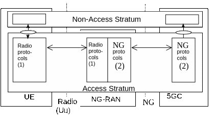
Note
1: The radio interface protocols are defined in TS 38.2xx and
TS 38.3xx.
Note
2: The NG interface protocols are defined in TS 38.41x.
Figure 5.2-1: NG and Uu user plane
5.3 Control plane
Figure 5.3-1 shows
the control plane (signalling) protocol stacks on NG and Uu
interfaces.
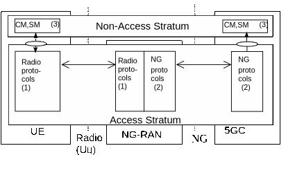
Note
1: The radio interface protocols are defined in TS 38.2xx and
TS 38.3xx.
Note
2: The protocol is defined in TS 38.41x. (Description of NG
interface).
Note
3: CM, SM: This exemplifies a set of NAS control protocols between UE
and 5GC. The evolution of the protocol architecture for these
protocols is outside the scope of the present document.
Figure 5.3-1: NG and Uu control
plane
NOTE: Both the Radio protocols and the NG protocols contain a
mechanism to transparently transfer NAS messages.
6 NG-RAN architecture
6.1 Overview
6.1.1 Overall Architecture of NG-RAN
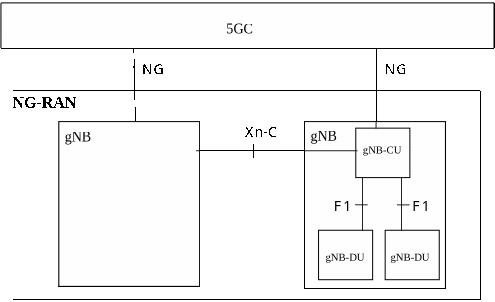
Figure 6.1-1: Overall architecture
The NG-RAN consists
of a set of gNBs connected to the 5GC through the NG interface.
NOTE 1: As specified in TS 38.300 [2], NG-RAN could also consists of
a set of ng-eNBs, an ng-eNB may consist of an ng-eNB-CU and one or
more ng-eNB-DU(s). An ng-eNB-CU and an ng-eNB-DU is connected via W1
interface. The general principle described in this clause also
applies to ng-eNB and W1 interface, if not explicitly specified
otherwise.
An gNB can support
FDD mode, TDD mode or dual mode operation.
gNBs can be
interconnected through the Xn interface.
A gNB may consist of
a gNB-CU and one or more gNB-DU(s). A gNB-CU and a gNB-DU is
connected via F1 interface.
One gNB-DU is
connected to only one gNB-CU.
NOTE 2: In case of network sharing with multiple cell ID broadcast,
each Cell Identity associated with a subset of PLMNs, PNI-NPNs or
SNPNs corresponds to a gNB-DU and the gNB-CU it is connected to, i.e.
the corresponding gNB-DUs share the same physical layer cell
resources.
NOTE 3: For resiliency, a gNB-DU may be connected to multiple gNB-CUs
by appropriate implementation.
NG, Xn and F1 are
logical interfaces.
For NG-RAN, the NG
and Xn-C interfaces for a gNB consisting of a gNB-CU and gNB-DUs,
terminate in the gNB-CU. For EN-DC, the S1-U and X2-C interfaces for
a gNB consisting of a gNB-CU and gNB-DUs, terminate in the gNB-CU.
The gNB-CU and connected gNB-DUs are only visible to other gNBs and
the 5GC as a gNB. A possible deployment scenario is described in
Annex A.
The node hosting
user plane part of NR PDCP (e.g. gNB-CU, gNB-CU-UP, and for EN-DC,
MeNB or SgNB depending on the bearer split) may perform user
inactivity monitoring and further inform its inactivity or
(re)activation to the node having C-plane connection towards the core
network (e.g. over E1, X2, Xn). The node hosting NR RLC (e.g. gNB-DU)
may perform user inactivity monitoring and further inform its
inactivity or (re)activation to the node hosting control plane, e.g.
gNB-CU or gNB-CU-CP.
UL PDCP
configuration (i.e. how the UE uses the UL at the assisting node) is
indicated via X2-C (for EN-DC), Xn-C (for NG-RAN) and F1-C. Radio
Link Outage/Resume for DL and/or UL is indicated via X2-U (for
EN-DC), Xn-U (for NG-RAN) and F1-U.
The NG-RAN is
layered into a Radio Network Layer (RNL) and a Transport Network
Layer (TNL).
The NG-RAN
architecture, i.e. the NG-RAN logical nodes and interfaces between
them, is defined as part of the RNL.
For each NG-RAN
interface (NG, Xn, F1) the related TNL protocol and the functionality
are specified. The TNL provides services for user plane transport,
signalling transport.
In NG-Flex
configuration, each NG-RAN node is connected to all AMFs of AMF Sets
within an AMF Region supporting at least one slice also supported by
the NG-RAN node except A-IoT only supporting NG-RAN node. The AMF Set
and the AMF Region are defined in TS 23.501 [3].
Each A-IoT only
supporting NG-RAN node is connected to all A-IoT enabled AMFs of AMF
Sets within an AMF Region.
If security
protection for control plane and user plane data on TNL of NG-RAN
interfaces has to be supported, NDS/IP TS 33.501 [13] shall
be applied.
6.1.2 Overall architecture for separation of gNB-CU-CP and gNB-CU-UP
The overall
architecture for separation of gNB-CU-CP and gNB-CU-UP is depicted in
Figure 6.1.2-1.
NOTE 0: NG-RAN could also consist of a set of ng-eNBs, an ng-eNB may
consist of an ng-eNB-CU-CP, one or more ng-eNB-CU-UP(s), and one or
more ng-eNB-DU(s). An ng-eNB-CU-CP and an ng-eNB-CU-UP is connected
via the E1 interface. An ng-eNB-DU is connected to an ng-eNB-CU-CP
via the W1-C interface, and to an ng-eNB-CU-UP via the W1-U
interface. The general principle described in this clause also
applies to ng-eNB and its corresponding E1 and W1 interfaces, if not
explicitly specified otherwise.
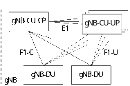
Figure 6.1.2-1. Overall
architecture for separation of gNB-CU-CP and gNB-CU-UP
- A gNB may consist of a gNB-CU-CP, multiple gNB-CU-UPs and multiple
gNB-DUs;
- The gNB-CU-CP is connected to the gNB-DU through the F1-C
interface;
- The gNB-CU-UP is connected to the gNB-DU through the F1-U
interface;
- The gNB-CU-UP is connected to the gNB-CU-CP through the E1
interface;
- One gNB-DU is connected to only one gNB-CU-CP;
- One gNB-CU-UP is connected to only one gNB-CU-CP;
NOTE 1: For resiliency, a gNB-DU and/or a gNB-CU-UP may be connected
to multiple gNB-CU-CPs by appropriate implementation.
- One gNB-DU can be connected to multiple gNB-CU-UPs under the
control of the same gNB-CU-CP;
- One gNB-CU-UP can be connected to multiple DUs under the control of
the same gNB-CU-CP;
NOTE 2: The connectivity between a gNB-CU-UP and a gNB-DU is
established by the gNB-CU-CP using Bearer Context Management
functions.
NOTE 3: The gNB-CU-CP selects the appropriate gNB-CU-UP(s) for the
requested services for the UE. In case of multiple CU-UPs they belong
to same security domain as defined in TS 33.210 [18].
NOTE 4: Data forwarding between gNB-CU-UPs during intra-gNB-CU-CP
handover within a gNB may be supported by Xn-U.
6.1.3 Overall Architecture of IAB
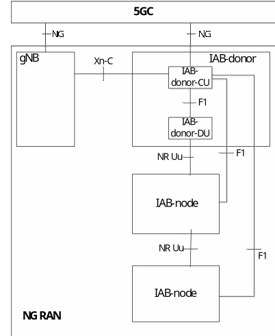
Figure 6.1.3-1: Overall
architecture of IAB
The NG-RAN supports
IAB by the IAB-node wirelessly connecting to the gNB capable of
serving the IAB-nodes, named IAB-donor.
The IAB-donor
consists of an IAB-donor-CU and one or more IAB-donor-DU(s). In case
of separation of gNB-CU-CP and gNB-CU-UP, the IAB-donor may consist
of an IAB-donor-CU-CP, multiple IAB-donor-CU-UPs and multiple
IAB-donor-DUs.
The IAB-node
connects to an upstream IAB-node or an IAB-donor-DU via a subset of
the UE functionalities of the NR Uu interface (named IAB-MT function
of IAB-node). The IAB-node provides wireless backhaul to the
downstream IAB-nodes and UEs via the network functionalities of the
NR Uu interface (named IAB-DU function of IAB-node).
The F1-C traffic
between an IAB-node and IAB-donor-CU is backhauled via the
IAB-donor-DU and the optional intermediate hop IAB-node(s).
The F1-U traffic
between an IAB-node and IAB-donor-CU is backhauled via the
IAB-donor-DU and the optional intermediate hop IAB-node(s).
All functions
specified for a gNB-DU are equally applicable for an IAB-DU and
IAB-donor-DU, unless otherwise stated, and all functions specified
for a gNB-CU are equally applicable for an IAB-donor-CU, unless
otherwise stated. All functions specified for the UE context are
equally applicable for managing the context of IAB-MT, unless
otherwise stated.
6.1.4 Protocol stacks of IAB
Figure 6.1.4-1 shows
the protocol stack for F1-U between IAB-DU and the IAB-donor-CU-UP,
and Figure 6.1.4-2 shows the protocol stack for F1-C between IAB-DU
and the IAB-donor-CU-CP. In these example figures, F1-U and F1-C
traffic are carried over two backhaul hops.
NOTE: F1 needs to be security-protected as described in TS 33.501.
The security layer is not shown in the Figure 6.1.4-1, Figure 6.1.4-2
and Figure 6.1.4-3.
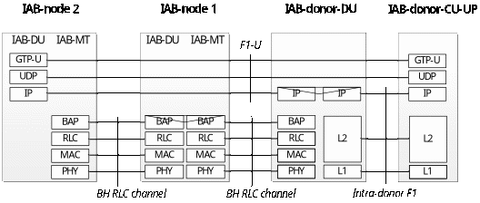
Figure 6.1.4-1: Protocol stack for
F1-U of IAB
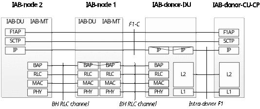
Figure. 6.1.4-2: Protocol stack for
F1-C of IAB
Figure 6.1.4-3 shows
the protocol stack for F1-C between IAB-DU and the IAB-donor-CU-CP,
when the F1-C traffic is exchanged via the MeNB.
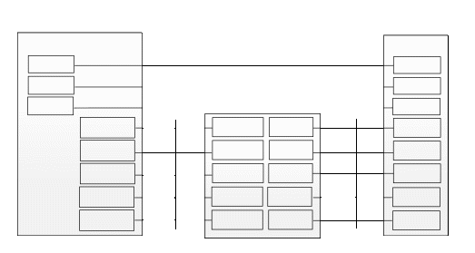
Fig. 6.1.4-3: Protocol stack for
IAB F1-C traffic exchanged via the MeNB
Figure 6.1.4-4 shows the protocol stack for F1-C between IAB-DU and
the IAB-donor-CU-CP, when the F1-C traffic is exchanged via the MgNB.
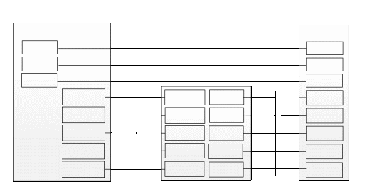
Fig. 6.1.4-4: Protocol stack for
IAB F1-C traffic exchanged via the MgNB
Figure 6.1.4-5 shows
the protocol stack for F1-C between IAB-DU and the IAB-donor-CU-CP,
when the F1-C traffic is exchanged via the SgNB.
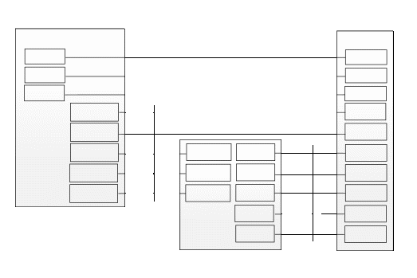
Fig. 6.1.4-5: Protocol stack for
IAB F1-C traffic exchanged via the SgNB
6.1.5 Overall Architecture of NR MBS
The overall
architecture specified in clause 6.1.1 and 6.1.2 applies for NR MBS.
Upon establishment
of a MBS Session resource by the 5GC, the gNB-CU triggers the
establishment of MRBs, involving the
gNB-DU. If E1 is deployed, the gNB-CU-CP triggers establishment of
respective MBS UP resources in the gNB-CU-UP.
The gNB-DU assigns
the G-RNTI.
A shared F1-U tunnel
is used between the gNB-CU and the gNB-DU forMRB with PTM
transmission. UE dedicated F1-U tunnels are used between the gNB-CU
and the gNB-DU for data transmission of PTP retransmission and PTP
forwarding of an MRB. For an MRB configured with PTP only
transmission either a shared F1-U or a UE dedicated F1-U tunnel is
used, dependent on the lower layer configuration. The gNB-DU assigns
the DL GTP-U TEID and provides it to the gNB-CU. If E1 is deployed
the gNB-CU-CP forwards it to the gNB-CU-UP.
For both broadcast
and multicast, DL flow control maybe used for the shared F1-U tunnel
established for the MRB, as specified in TS 38.425 [24].
6.1.6 Protocol stacks of L2 UE-to-Network Relay
The protocol stacks
for the user plane and control plane of L2 U2N Relay architecture are
described in Figure 6.1.6-1 and Figure 6.1.6-2, respectively. The
single-hop relay protocol stack can be applicable to the multi-hop
relay case with additional Intermediate U2N Relay
UE(s). The Uu SRAP is terminated between U2N relay UE and gNB-DU.
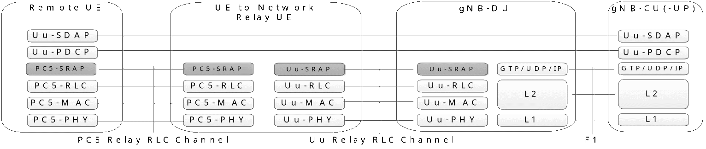
Figure 6.1.6-1: User plane protocol
stack for L2 UE-to-Network Relay
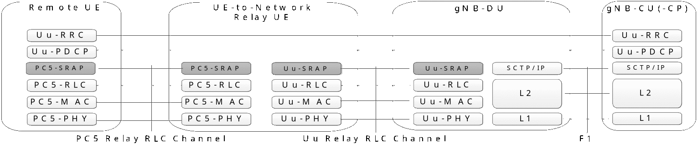
Figure 6.1.6-2: Control plane
protocol stack for L2 UE-to-Network Relay
6.1.7 Wireless Access Backhaul architecture
A WAB-node consists
of a WAB-gNB and a WAB-MT. The WAB-gNB is based on the gNB
functionality specified in TS 38.300 [2] and serves UEs by means of a
terrestrial NR Uu access radio link.
The WAB-MT is served
by a BH-gNB via an NR Uu radio link used for backhauling. The
WAB-gNB’s traffic, including NG, Xn and OAM traffic is transported
via backhaul PDU session(s) of the WAB-MT.
NOTE: The use of other types of backhaul, e.g. non-3GPP backhaul, is
up to implementation.
The WAB-gNB and the
WAB-MT may connect to the same PLMN/SNPN or to different PLMNs/SNPNs.
Figure 6.1.7-1
shows the WAB architecture for 5GS.
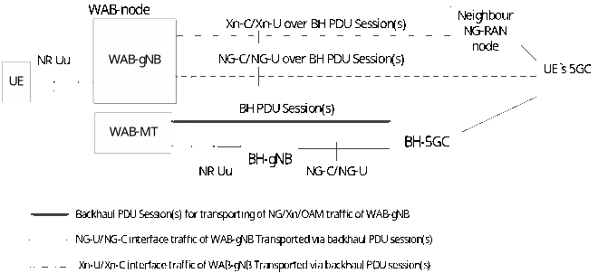
Figure 6.1.7-1: The WAB
architecture
In in-band
scenarios, backhaul and access of the WAB-node use terrestrial radio
links. In out-of-band scenarios, the backhaul can use a terrestrial
or a non-terrestrial radio link, while the access uses terrestrial
radio link.
NOTE: The in-band operation of WAB-node is
up to implementation.
The WAB-MT may
connect to a public PLMN or an SNPN.
The WAB-gNB may
connect to a public PLMN or an SNPN.
Figure 6.1.7-2
shows protocol stacks for NG Control plane and NG User plane
transport via the wireless backhaul.
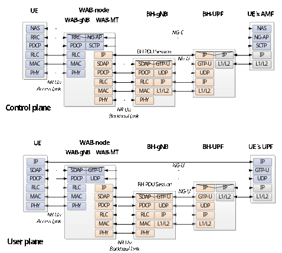
Figure 6.1.7-2: Protocol stacks for
NG Control plane and NG User plane transport of WAB
Figure 6.1.7-3
shows protocol stacks for Xn Control plane and Xn User plane
transport for WAB-node.
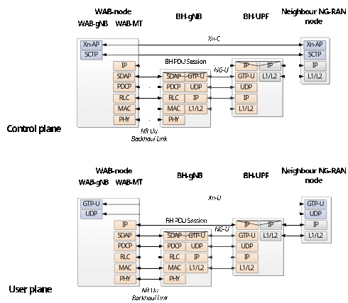
Figure 6.1.7-3: Protocol stacks for
Xn Control plane and Xn User plane transport of WAB
6.2 NG-RAN identifiers
6.2.1 Principle of handling Application Protocol Identities
For UE-associated
signalling, an Application Protocol Identity (AP ID) is allocated
when a new UE-associated logical connection is created in either an
NG-RAN node or an AMF. An AP ID shall uniquely identify a logical
connection associated to a UE over the NG interface or Xn interface
within a node (NG-RAN node or AMF) or over the F1 interface or over
the E1 interface or over the W1 interface. Upon receipt of a message
that has a new AP ID from the sending node, the receiving node shall
store the AP ID of the sending node for the duration of the logical
connection. The receiving node shall assign the AP ID to be used to
identify the logical connection associated to the UE and include it
as well as the previously received new AP ID from the sending node,
in the first returned message to the sending node. In all subsequent
messages to and from sending node, both AP IDs of sending node and
receiving node shall be included.
For MBS-associated
logical connections of the E1 interface and the F1 interface the same
principles for AP IDs apply as for UE-associated logical connections.
For signalling
related to A-IoT command operation, per A-IoT session (corresponding
to an AIOTF identifier and a Correlation ID) and per A-IoT device, a
RAN A-IoT Device NGAP ID to be used via the NG-C interface is
introduced, as specified below.
The definitions of
AP IDs as used on NG interface or Xn interface or F1 interface or E1
interface are shown below:
RAN UE NGAP ID:
A RAN UE NGAP ID shall be allocated so as to uniquely identify the
UE over the NG interface within an gNB. When an AMF receives an RAN
UE NGAP ID it shall store it for the duration of the UE-associated
logical NG-connection for this UE. Once known to an AMF this is
included in all UE associated NGAP signalling.
The RAN UE NGAP ID shall be unique within the logical NG-RAN node.
AMF UE NGAP ID:
An AMF UE NGAP ID shall be allocated so as to uniquely identify the
UE over the NG interface within the AMF. When a NG-RAN node receives
an AMF UE NGAP ID it shall store it for the duration of the
UE-associated logical NG-connection for this UE. Once known to a
NG-RAN node this ID is included in all UE associated NGAP signalling.
The AMF UE NGAP ID shall be unique within an AMF Set as specified in
TS 23.501 [3].
Old NG-RAN node
UE XnAP ID:
An Old NG-RAN node UE XnAP ID shall be allocated so as to uniquely
identify the UE over the Xn interface within an old NG-RAN node. When
a new NG-RAN node receives an Old NG-RAN node UE XnAP ID it shall
store it for the duration of the UE-associated logical Xn-connection
for this UE. Once known to a new NG-RAN node this ID is included in
all UE associated XnAP signalling. The Old NG-RAN node UE XnAP ID
shall be unique within the logical NG-RAN node.
New NG-RAN node
UE XnAP ID:
A New NG-RAN node UE XnAP ID shall be allocated so as to uniquely
identify the UE over the Xn interface within a new NG-RAN node. When
an old NG-RAN node receives a New NG-RAN node UE XnAP ID it shall
store it for the duration of the UE-associated logical Xn-connection
for this UE. Once known to an old NG-RAN node this ID is included in
all UE associated XnAP signalling. The New NG-RAN node UE XnAP ID
shall be unique within the logical NG-RAN node.
Source NG-RAN
node UE XnAP ID:
A Source NG-RAN node UE XnAP ID shall be allocated so as to uniquely
identify the UE over the Xn interface within a source NG-RAN node.
When a target NG-RAN node receives a Source NG-RAN node UE XnAP ID it
shall store it for the duration of the UE-associated logical
Xn-connection for this UE. Once known to a target NG-RAN node this ID
is included in all UE associated XnAP signalling. The Source NG-RAN
node UE XnAP ID shall be unique within the logical NG-RAN node.
Target NG-RAN
node UE XnAP ID:
A Target NG-RAN node UE XnAP ID shall be allocated so as to uniquely
identify the UE over the Xn interface within a target NG-RAN node.
When a source NG-RAN node receives a Target NG-RAN node UE XnAP ID it
shall store it for the duration of the UE-associated logical
Xn-connection for this UE. Once known to a source NG-RAN node this ID
is included in all UE associated XnAP signalling. The Target NG-RAN
node UE XnAP ID shall be unique within the logical NG-RAN node.
M-NG-RAN node UE
XnAP ID:
An M-NG-RAN node UE XnAP ID shall be allocated so as to uniquely
identify the UE over the Xn interface within an M-NG-RAN node for
dual connectivity. When an S-NG-RAN node receives an M-NG-RAN node UE
XnAP ID it shall store it for the duration of the UE-associated
logical Xn-connection for this UE. Once known to an S-NG-RAN node
this ID is included in all UE associated XnAP signalling. The
M-NG-RAN node UE XnAP ID shall be unique within the logical NG-RAN
node.
S-NG-RAN node UE
XnAP ID:
A S-NG-RAN node UE XnAP ID shall be allocated so as to uniquely
identify the UE over the Xn interface within an S-NG-RAN node for
dual connectivity. When an M-NG-RAN node receives a S-NG-RAN node UE
XnAP ID it shall store it for the duration of the UE-associated
logical Xn-connection for this UE. Once known to an M-NG-RAN node
this ID is included in all UE associated XnAP signalling. The
S-NG-RAN node UE XnAP ID shall be unique within the logical NG-RAN
node.
gNB-CU UE F1AP
ID:
A gNB-CU UE F1AP ID shall be allocated so as to uniquely identify
the UE over the F1 interface within a gNB-CU. When a gNB-DU receives
a gNB-CU UE F1AP ID it shall store it for the duration of the
UE-associated logical F1-connection for this UE. The gNB-CU UE F1AP
ID shall be unique within the gNB-CU logical node.
gNB-DU
UE F1AP ID:
A gNB-DU UE F1AP ID shall be allocated so
as to uniquely identify the UE over the F1 interface within a gNB-DU.
When a gNB-CU receives a gNB-DU UE F1AP ID it shall store it for the
duration of the UE-associated logical F1-connection for this UE. The
gNB-DU UE F1AP ID shall be unique within the gNB-DU logical node.
gNB-CU-CP UE E1AP
ID:
A gNB-CU-CP UE E1AP ID shall be allocated so as to uniquely identify
the UE over the E1 interface within a gNB-CU-CP (respectively an
ng-eNB-CU-CP, or an eNB-CP as defined in TS 36.401[28]). When a
gNB-CU-UP (respectively an ng-eNB-CU-UP, or an eNB-UP as defined in
TS 36.401[28]) receives a gNB-CU-CP UE E1AP ID it shall store it for
the duration of the UE-associated logical E1-connection for this UE.
The gNB-CU-CP UE E1AP ID shall be unique within the gNB-CU-CP
(respectively the ng-eNB-CU-CP, or the eNB-CP as defined in TS
36.401[28]) logical node.
gNB-CU-UP UE E1AP
ID:
A gNB-CU-UP UE E1AP ID shall be allocated so as to uniquely identify
the UE over the E1 interface within a gNB-CU-UP (respectively an
ng-eNB-CU-UP, or an eNB-UP as defined in TS 36.401[28]). When a
gNB-CU-CP (respectively an ng-eNB-CU-CP, or an eNB-CP as defined in
TS 36.401[28]) receives a gNB-CU-UP UE E1AP ID it shall store it for
the duration of the UE-associated logical E1-connection for this UE.
The gNB-CU-UP UE E1AP ID shall be unique within the gNB-CU-UP
(respectively the ng-eNB-CU-UP, or the eNB-UP as defined in TS
36.401[28]) logical node.
ng-eNB-CU UE W1AP
ID:
An ng-eNB-CU UE W1AP ID shall be allocated so as to uniquely
identify the UE over the W1 interface within an ng-eNB-CU. When an
ng-eNB-DU receives an ng-eNB-CU UE W1AP ID it shall store it for the
duration of the UE-associated logical W1-connection for this UE. The
ng-eNB-CU UE W1AP ID shall be unique within the ng-eNB-CU logical
node.
ng-eNB-DU UE W1AP
ID:
An ng-eNB-DU UE W1AP ID shall be allocated so as to uniquely
identify the UE over the W1 interface within an ng-eNB-DU. When an
ng-eNB-CU receives an ng-eNB-DU UE W1AP ID it shall store it for the
duration of the UE-associated logical W1-connection for this UE. The
ng-eNB-DU UE W1AP ID shall be unique within the ng-eNB-DU logical
node.
gNB-CU MBS F1AP ID:
A gNB-CU MBS F1AP ID shall be allocated so as to uniquely identify
the MBS Session Context over the F1 interface within a gNB-CU. When a
gNB-DU receives a gNB-CU MBS F1AP ID it shall store it for the
duration of the MBS-associated logical F1-connection for that MBS
Session. The gNB-CU MBS F1AP ID shall be unique within the gNB-CU
logical node.
gNB-DU
MBS F1AP ID:
A gNB-DU MBS F1AP ID shall be allocated so
as to uniquely identify the MBS Session Context over the F1 interface
within a gNB-DU. When a gNB-CU receives a gNB-DU MBS F1AP ID it shall
store it for the duration of the MBS-associated logical F1-connection
for this MBS Session. The gNB-DU MBS F1AP ID shall be unique within
the gNB-DU logical node.
gNB-CU-CP MBS
E1AP ID:
A gNB-CU-CP MBS E1AP ID shall be allocated so as to uniquely
identify the MBS Session Context over the E1 interface within a
gNB-CU-CP. When a gNB-CU-UP receives a gNB-CU-CP MBS E1AP ID it shall
store it for the duration of the MBS-associated logical E1-connection
for that MBS Session. The gNB-CU-CP MBS E1AP ID shall be unique
within the gNB-CU-CP logical node.
gNB-CU-UP MBS
E1AP ID:
A gNB-CU-UP MBS E1AP ID shall be allocated so as to uniquely
identify the MBS Session Context over the E1 interface within a
gNB-CU-UP. When a gNB-CU-CP receives a gNB-CU-UP MBS E1AP ID it shall
store it for the duration of the MBS-associated logical E1-connection
for this MBS Session. The gNB-CU-UP MBS E1AP ID shall be unique
within the gNB-CU-UP logical node.
A-IoT Correlation
ID:
An A-IoT Correlation ID shall be allocated so as to uniquely
identify an A-IoT session context. When an NG-RAN node receives an
A-IoT Correlation ID, it shall store it for the duration of the A-IoT
service operation. The A-IoT Correlation ID shall be unique within an
AIOTF as specified in TS 23.369 [39].
RAN A-IoT
Device NGAP ID:
A RAN A-IoT Device NGAP ID shall be allocated so as to uniquely
identify an NG-RAN node A-IoT device context over the NG interface
within a NG-RAN node for a certain A-IoT session. When an AIOTF
receives an RAN A-IoT Device NGAP ID, it shall store it for the
duration of the A-IoT session.
The RAN A-IoT Device NGAP ID shall be unique per A-IoT session
within the logical NG-RAN node.
6.2.2 gNB-DU ID
The gNB-DU ID is
configured at the gNB-DU and used to uniquely identify the gNB-DU at
least within a gNB-CU.
6.2.3 ng-eNB-DU ID
The ng-eNB-DU ID is
configured at the ng-eNB-DU and used to uniquely identify the
ng-eNB-DU at least within an ng-eNB-CU. The ng-eNB-DU provides its
ng-eNB-DU ID to the ng-eNB-CU during the W1 Setup procedure. The
ng-eNB-DU ID is used only within W1AP procedures.
6.2.4 gNB-CU-UP ID
The gNB-CU-UP ID is
configured at the gNB-CU-UP and used to uniquely identify the
gNB-CU-UP at least within a gNB-CU-CP. The gNB-CU-UP provides its
gNB-CU-UP ID to the gNB-CU-CP during the E1 Setup procedure. The
gNB-CP-UP ID is used only within E1AP procedures.
NOTE 1: This identity is also used to uniquely identify the
ng-eNB-CU-UP at least within an ng-eNB-CU-CP in case CP/UP separation
is implemented in ng-eNB.
NOTE 2: This identity is also used to uniquely identify the eNB at
least within an eNB-CP in case CP/UP separation is implemented in
eNB.
6.2.5 RAN UE ID
The RAN UE ID is an
identifier allocated to a UE by the gNB-DU during UE Initial Access
or by the gNB-CU during UE Context Setup. It is transferred over E1
and F1 interface, in order to do correlation of data for a given UE
in case of disaggregated gNB deployment. The RAN UE ID is unique
within a gNB.
6.3 Transport addresses
The transport layer
address parameter is transported in the radio network application
signalling procedures that result in establishment of transport
bearer connections.
The transport layer
address parameter shall not be interpreted in the radio network
application protocols and reveal the addressing format used in the
transport layer.
The formats of the
transport layer addresses are further described in TS 38.414 [5], TS
38.424 [6] and TS 38.474 [7].
6.4 UE associations in NG-RAN Node
There are several
types of UE associations needed in the NG-RAN node: the "NG-RAN
node UE context" used to store all information needed for a UE
and the associations between the UE and the logical NG and Xn
connections used for NGAP/XnAP UE associated messages. An "NG-RAN
node UE context" exists for a UE in CM_CONNECTED.
Definitions:
NG-RAN node UE
context:
An NG-RAN node UE
context is a block of information in an NG-RAN node associated to one
UE. The block of information contains the necessary information
required to maintain the NG-RAN services towards the active UE. An
NG-RAN node UE context is established when the transition to RRC
CONNECTED for a UE is completed or in the target NG-RAN node after
completion of handover resource allocation during handover
preparation, in which case at least UE state information, security
information, UE capability information and the identities of the
UE-associated logical NG-connection shall be included in the NG-RAN
node UE context.
For Dual
Connectivity an NG-RAN node UE context is also established in the
S-NG-RAN node after completion of S-NG-RAN node Addition Preparation
procedure.
If radio bearers are
requested to be setup during a UE Context setup or modification
procedure, the UE capabilities are signalled to the receiving node as
part of the UE context setup or modification procedures.
Bearer context:
A bearer context is
a block of information in a gNB-CU-UP node associated to one UE that
is used for the sake of communication over the E1 interface. It may
include the information about data radio bearers, PDU sessions and
QoS-flows associated to the UE. The block of information contains the
necessary information required to maintain user-plane services toward
the UE.
UE-associated
logical NG/Xn/F1/E1-connection:
NGAP, XnAP, F1AP and
E1AP provide means to exchange control plane messages associated with
the UE over the respectively NG-C, Xn-C, F1-C or E1 interface.
A UE-associated
logical connection is established during the first NGAP/XnAP/F1AP
message exchange between the NG/Xn/F1 peer nodes.
The connection is
maintained as long as UE associated NG/XnAP/F1AP messages need to be
exchanged over the NG/Xn/F1 interface.
The UE-associated
logical NG-connection uses the identities AMF UE NGAP ID and RAN UE
NGAP ID.
The UE-associated
logical Xn-connection uses the identities Old NG-RAN node UE XnAP ID
and New NG-RAN node UE XnAP ID, or Source NG-RAN node UE XnAP ID and
Target NG-RAN node UE XnAP ID, or M-NG-RAN node UE XnAP ID and
S-NG-RAN node UE XnAP ID.
The UE-associated
logical F1-connection uses the identities gNB-CU UE F1AP ID and
gNB-DU UE F1AP ID.
The UE-associated
logical E1-connection uses the identities gNB-CU-CP UE E1AP ID and
gNB-CU-UP UE E1AP ID.
When a node (AMF or
gNB) receives a UE associated NGAP/XnAP/F1AP/E1AP message the node
retrieves the associated UE based on the NGAP/XnAP/F1AP/E1AP ID.
UE-associated
signalling:
UE-associated
signalling is an exchange of NGAP/XnAP/F1AP/E1AP messages associated
with one UE over the UE-associated logical NG/Xn/F1/E1-connection.
NOTE1: The UE-associated logical NG-connection may exist before the
NG-RAN node UE context is setup in the NG-RAN node.
NOTE2: The UE-associated logical F1-connection may exist before the
UE context is setup in the gNB-DU.
NOTE3: The general principle described in this clause also applies to
ng-eNB and W1/E1 interface, if not explicitly specified otherwise.
6.5 MBS Session associations in NG-RAN Node
The following MBS
Session associations are defined in the NG-RAN node to support NR
MBS:
NG-RAN MBS
session resource context: Encompasses CP and UP, transport and
radio resources to support an MBS Session. For multicast it also
encompasses the MBS Session state (active, de-activated) and
information about joined UEs. If an MBS session resource within a gNB
serves multiple MBS service areas, as specified in TS 23.247 [27] the
same NG RAN MBS session resource context may be associated with
multiple NG-U resources. For a multicast MBS session, NG-U resources
are setup or released by the gNB upon UE mobility or UEs leaving or
joining the multicast MBS session.
MBS Session context in a gNB-DU:
The definition of an
MBS Session context in a gNB-DU applicable for broadcast and
multicast.
An MBS Session
context in a gNB-DU
- is a block of information associated to an MBS Session, which may
consist of one or several MRB Contexts;
- corresponds to either one or several F1-U tunnels.
MRB Context in a
gNB-DU:
An MRB Context is a
block of information in a gNB-DU associated to an MRB (MRB
“instance”). The gNB-DU sets up resources for each MRB Context in
a gNB-DU associated to an MBS Session context
- based on information provided within MBS Session Context related
information as received by the gNB-DU (e.g. MRB QoS, MBS service area
information, etc.), and,
- for multicast, based on the UE Contexts established for
RRC_CONNECTED UEs within the gNB-DU containing joining information of
the UE for the respective multicast session.
- for broadcast, the gNB-DU determines whether F1-U tunnels are setup
per gNB-DU or per MBS Area Session ID served by the gNB-DU.
- for multicast, the gNB-DU determines whether F1-U tunnels are setup
per gNB-DU or per cell served by the DU or per MBS Area Session ID
served by the gNB-DU or for ptp restransmissions or for a ptp-only
MRB leg.
For multicast, for
each MRB, the gNB-DU provides the MRB specific Uu configuration to
the gNB-CU to configure the UE.
Multicast F1-U
Context:
A Multicast F1-U
Context is a block of information in a gNB-DU to control the F1-U
tunnels associated to the MRB Contexts established for a multicast
MBS session. A Multicast F1-U Context is either established per
gNB-DU or per cell served by the gNB-DU or per MBS Area Session ID
served by the gNB-DU or for ptp restransmissions or for ptp
forwarding or for a ptp-only MRB leg. Several Multicast F1-U contexts
may exist in parallel in a gNB-DU for the same multicast MBS session.
Allocation and
usage of MRB ID values on NG-RAN interfaces for multicast MBS
sessions:
- F1 interface: an MRB ID signalled on an F1 interface instance
identifies uniquely an MRB among all MRB contexts in an gNB-DU,
allocated for all active multicast MBS sessions served by that
gNB-DU. The value of each MRB ID is the same value as communicated to
UEs served by that gNB-DU.
- E1 interface: an MRB ID signalled on an E1 interface instance
identifies uniquely an MRB among all MRBs allocated for a multicast
MBS session.
- Xn interface, NG interface: MRB IDs are signalled on Xn/NG
interfaces for providing MBS QoS flow to MRB mapping information and
data forwarding information from the source gNB. The value of the MRB
ID signalled on the Xn/NG interface is the same value as communicated
to UEs at the source cell.
Allocation and
usage of MRB ID values on NG-RAN interfaces for broadcast MBS
sessions:
- An MRB ID signalled on NG-RAN interfaces identifies uniquely an MRB
among all MRBs allocated for a broadcast MBS sesssion.
MBS-associated
logical F1/E1-connection:
F1AP and E1AP
provide means to exchange control plane messages associated with an
MBS session over the respective F1/E1 interface.
An MBS-associated
logical connection is established during the first F1AP/E1AP message
exchange between the F1/E1 peer nodes.
The connection is
maintained as long as MBS associated F1AP/E1AP messages need to be
exchanged over the F1/E1 interface.
The MBS-associated
logical F1-connection uses the identities gNB-CU MBS F1AP ID and
gNB-DU MBS F1AP ID.
The MBS-associated
logical E1-connection uses the identities gNB-CU-CP MBS E1AP ID and
gNB-CU-UP MBS E1AP ID.
When a node (DU or
CU or CU-CP and CU-UP) receives an MBS associated F1AP/E1AP message
the node retrieves the associated MBS session based on the F1AP/E1AP
ID.
MBS-associated
signalling:
MBS-associated
signalling is an exchange of F1AP/E1AP messages associated with one
MBS session over the MBS-associated logical F1/E1-connection.
6.6 A-IoT related
contexts in an NG-RAN Node
NG-RAN node A-IoT
session context:
An NG-RAN node A-IoT
session context is a block of information in an NG-RAN node and
encompasses control plane and user plane, transport and radio
resources to support an A-IoT Session. An NG-RAN node A-IoT session
context may be associated with one or multiple NG-RAN node A-IoT
device contexts.
NG-RAN node A-IoT
device context:
An NG-RAN node A-IoT
device context is a block of information in an NG-RAN node and
encompasses control plane and user plane, transport and radio
resources to support an A-IoT service to one A-IoT device within an
NG-RAN node A-IoT session context.
7 NG-RAN functions description
7.0 General
For the list of
functions refer to TS 38.300 [2].
7.1 NG-RAN sharing
NG-RAN supports
radio access network sharing as specified in TS 23.501 [3] and TS
38.300 [2] and TS 36.300 [19].
7.2 Remote Interference Management
The Remote
Interference Management function in non-split gNB case is specified
in TS 38.300 [2].
In case of split
gNB architecture, in the victim set, a gNB-DU detects the
remote interference. If remote interference is detected, the gNB-DU
can send out the RIM-RS. In the aggressor set, if a gNB-DU detects
the RIM-RS sent by the victim gNB(s), it sends to the gNB-CU the
RIM-RS detection status and the victim Set ID. The
gNB-CU acts as a coordinator on behalf of its affiliated gNB-DUs,
where the gNB-CU merges the outgoing RIM information received from
its gNB-DUs in the aggressor set and forwards the merged information
to all the gNBs in the victim set.
Similarly,
in the victim set, the gNB-CU distributes the incoming RIM
information to all the gNB-DUs in the set, as indicated in the RIM
information received from the aggressor set.
In
addition, to facilitate consolidation of
RIM information, the
gNB-DU provides
the associated aggressor set ID and the
victim set ID of each serving cell to the
gNB-CU.
7.3 Cross-Link Interference Management
The Cross-Link
Interference Management function in non-split gNB case is specified
in TS 38.300 [2].
In
case of split gNB architecture, the gNB-CU forwards the TDD DL/UL
patterns received from neighboring nodes to each concerned gNB-DU.
The gNB-DU reports the TDD DL/UL patterns of its serving cells to the
gNB-CU if Cross-Link Interference is detected.
In
Sub-band full duplex (SBFD) operation,
gNB-to-gNB CLI
and/or UE-to-UE CLI may also be present. In
case of split gNB architecture, the gNB-DU reports gNB-to-gNB
CLI related information of its serving
cells to the gNB-CU if CLI is detected. The gNB-CU forwards
gNB-to-gNB CLI related information
received from served gNB-DUs and from neighboring gNBs to each
concerned gNB-DU.
The gNB-DU should evaluate the received
information and may mitigate interference if necessary.
For the case of
detection of UE-to-UE CLI, a gNB-DU that
has activated SBFD operation may provide SRS resource configuration
to the gNB-CU. A gNB-DU serving potential
victim UEs may indicate to a gNB-CU that SRS resource
ocnfigurations of neighbour cells are
needed. The gNB-CU may signal to the gNB-DU information concerning
SRS resources potentially causing UE-to-UE CLI. For
inter-UE CLI for SBFD operation in split architecture, simultaneous
configuration of L1 and L3 measurements shall be avoided.
7.4 Support for Non-Public Networks
NG-RAN supports NPN
as specified in TS 23.501 [3] and TS 38.300 [2].
7.5 RACH Optimisation Function
The RACH
Optimization Function in non-split gNB case is specified in TS 38.300
[2].
In case of split gNB
architecture, RACH configuration conflict detection and resolution
function is located at the gNB-DU. To perform RACH optimisation at
gNB-DU, gNB-CU sends the RA Report
retrieved from the UE(s)
to gNB-DU via F1AP signalling. The gNB-DU signals the PRACH
configuration per-cell to gNB-CU. The gNB-CU may forward a limited
set of neighbour cell’s PRACH configurations received from
neighbour gNBs and other gNB-DUs to the gNB-DU to resolve the
configuration conflict.
RA Report
retrieval
When a UE performs
successful random access attempts which are only known by the gNB-DU
(e.g., beam failure recovery, UL synchronization issue,
scheduling request failure, no PUCCH resource available), the
gNB-DU may inform the gNB-CU about the occurrences of successful
random access procedures in the gNB-DU via a RACH indication.
The gNB-CU may then retrieve the RA Report from the UE(s) based on
the RACH indication received via F1AP signalling from the gNB-DU.
7.6 Positioning
The NG-RAN supports
the positioning functionality as specified in TS 38.305 [25].
7.7 Support for NR MBS
The Support of NR
MBS in non-split gNB case is specified in TS 38.300 [2].
7.7.1 Support of dynamic PTP and PTM switching
For UEs in
RRC_CONNECTED, NG-RAN supports dynamic switch between PTP and PTM for
a multicast MBS session as specified in TS 38.300 [2].
In case of split
gNB architecture, for a MRB with common PDCP involving both
PTP (RLC leg) and PTM (RLC leg), upon receiving the MBS data from the
gNB-CU via a shared F1-U tunnel, the gNB-DU makes decision of using
PTP (RLC leg) or PTM (RLC leg) or both.
For UEs in
RRC_INACTIVE only PTM is supported for a multicast MBS session as
specified in TS 38.300 [2].
7.7.2 Support of resource efficiency for RAN Sharing
7.7.2.1 General
Resource efficiency
for RAN sharing is supported in both MOCN scenario and multiple
cell-ID broadcast scenario.
In case of split
gNB,
- for each broadcast MBS session, the gNB-CU triggers the
establishment of a Broadcast MBS Session Context over the F1
interface regardless of whether F1-U or NG-U resources associated
with the broadcast MBS session are established.
7.7.2.2 Support of resource efficiency for MOCN
The Associated
Session ID is used to enable identifying broadcast MBS sessions for
which RAN resources could be shared by the involved gNB-DUs and the
gNB-CU-UP and is provided by the gNB-CU-CP. For location dependent
MBS services, the MBS Service Area provided by the gNB-CU-CP is also
taken into account. Only one set of shared F1-U resources is
established and kept as long as there is one PLMN keeping the MBS
Broadcast service.
7.7.2.3 Support of resource efficiency for RAN Sharing with multiple
cell-ID broadcast
gNB-DUs sharing the
same physical cell resources receive via F1-C information to enable
identifying broadcast MBS sessions providing identical content. The
identification is based on Associated Session ID and, for location
dependent MBS services, the MBS Service Area is also taken into
account.
While applying
resource efficiency for RAN Sharing with multiple cell-ID broadcast
- the entity controlling the involved gNB-DUs sharing the same
physical cell resources resolve different QoS requirements and
slicing information received from the involved gNB-CUs in an
implementation specific way.
- F1-U resources are established towards either all involved gNB-CUs
or only some of them which is decided by the entity controlling the
involved gNB-DUs sharing the same physical cell resources. The gNB-DU
is able to trigger the gNB-CU to establish F1-U resources.
- the gNB-CU-CP takes into account the decision to establish F1-U
resources to decide whether to establish NG-U resources.
If a broadcast MBS
session is released by a 5GC but kept by other 5GC(s), for an MBS
Session Context not associated with any user plane resource,
- F1AP supports triggering the setup of F1-U resources by the gNB-DU
by means of the Broadcast Transport Resource Request procedure.
- NGAP supports triggering the setup NG-U resources by the gNB by
means of the Broadcast Session Transport procedure for unicast
transport.
7.7.3 Support of Multicast reception for UEs in RRC_INACTIVE
F1AP supports:
- enabling and disabling multicast reception for UEs in RRC_INACTIVE
state for a specific multicast MBS session on cell level.
- retrieval of PTM configuration information from the gNB-DU by means
of the gNB-CU triggered Multicast Context Modification procedure.
- keeping the gNB-CU updated with the latest PTM configuration by
means of the gNB-DU initiated Multicast Context Notification
procedure.
The gNB-CU decides
whether multicast reception in RRC_INACTIVE state is applied.
7.7.4 Recovery of shared F1-U Failure
Recovery of shared
F1-U failure is supported for broadcast MBS sessions with the gNB-DU
detecting the F1-U failure and triggering recovery handling. If the
gNB-DU detects failure of a shared F1-U bearer of a broadcast MBS
session it may send the F1AP Broadcast Transport Resource Request
message to the gNB-CU CP indicating the F1-U failure and optionally
including a new DL F1-U transport address. The gNB-CU CP should
understand that any shared F1-U resources previously established for
the broadcast MBS session have been implicitly released by the
gNB-DU.
The gNB-CU CP should
then:
- trigger towards gNB-CU UP the release of the current gNB-CU UP UL
transport resources of the shared F1-U bearer and establishment of
new ones and the provision of the new DL F1-U transport addresses if
received;
- trigger the F1AP Broadcast Context Modification procedure to
deliver the corresponding new gNB-CU UP address to the gNB-DU to
establish the new F1-U resources.
7.8 PCI Optimisation Function
The
PCI Optimization Function in non-split gNB case is specified in TS
38.300 [2].
In
split gNB architecture, the OAM configures a PCI for each NR cell to
the gNB-DU.
For
centralized PCI assignment in split gNB architecture, the gNB-CU
detects PCI conflict of NR cells and reports the NR cells suffering
PCI conflict to OAM directly. The OAM is in charge of reassigning a
new PCI for the NR cell subject to PCI conflict.
For
distributed PCI assignment in split gNB architecture, the OAM assigns
a list of PCIs for each NR cell and sends
the configured PCI list to the gNB-CU. If the gNB-CU detects PCI
conflict, the gNB-CU may select a new PCI value from the
preconfigured PCI list for the NR cell and send it to the gNB-DU by
either F1 Setup procedure or gNB-CU configuration update procedure.
For mobile IAB
deployments, the legacy mechanisms can be reused for PCI collision
detection. The PCI space can be partitioned between mobile IAB cells
and stationary cells by implementation.
7.9 Support for CCO
7.9.1 General
The NR
Capacity and Coverage Optimization (CCO) Function in non-split
gNB case is specified in TS 38.300 [2]. The
objective of this function is to detect and mitigate coverage and
cell edge interference issues.
7.9.2 OAM requirements
Each gNB-DU may be configured with alternative coverage
configurations by OAM. The alternative coverage configurations
contain relevant radio parameters and may also include a range for
how each parameter is allowed to be adjusted.
7.9.3 Dynamic coverage configuration changes
In case of split gNB
architecture, CCO detection function is located at the gNB-CU. The
gNB-CU signals to the gNB-DU the CCO issue and the affected cells and
beams. The gNB-DU resolves the CCO issue concerning own served cell
by local action within the OAM configured limits. The gNB-DU may also
take into account information received for other cells when adopting
the CCO configuration. The gNB-DU informs the gNB-CU of the new
coverage states adopted.
7.10 Support of RAN visible QoE measurement
The RAN visible QoE
measurement function is specified in TS 38.300 [2].
In split gNB architecture, upon the reception of the RAN visible QoE
measurement report from the UE, the gNB-CU
may forward the corresponding
QoE information to the gNB-DU.
The QoE
information transferred to the gNB-DU may include the RAN visible QoE
measurement results received
from the UE, along with the corresponding
DRB ID(s).
The
gNB-DU may deactivate the transfer
of RAN visible QoE measurement results
from the gNB-CU, by initiating QoE Information Transfer Control
procedure towards the gNB-CU.
7.11 Support of AI/ML for NG-RAN
7.11.1 General
The support of AI/ML
for NG-RAN is specified in TS 38.300 [2].
In case of CU-DU
split architecture, the following scenarios may be supported:
- AI/ML Model Training is located in the OAM and AI/ML Model
Inference is located in the gNB-CU.
- AI/ML Model Training and Model Inference are both located in the
gNB-CU.
In case of gNB-CU-CP
and gNB-CU-UP architecture, the following scenarios may be supported:
- AI/ML Model Training is located in the OAM and AI/ML Model
Inference is located in the gNB-CU-CP.
- AI/ML Model Training and Model Inference are both located in the
gNB-CU-CP.
For a split gNB, the
Energy Cost (EC) of the gNB is the sum of the Energy Cost of its
gNB-DUs.
7.11.2 OAM
requirements
OAM configures the
following on gNB-DU:
- the minimum and maximum energy consumption values corresponding to
the minimum and maximum EC index values respectively, based on an
implementation-specific mapping rule, which is unified within a
defined area.
- the recommended time interval within which an gNB-DU selects an
implementation-specific time window for averaging of the measurements
of the gNB-DU’s consumed energy.
For
a split gNB, the OAM requirements for configuring Continuous
Management-based MDT as specified in TS 38.300 [2] are only
applicable to the gNB-CU-CP.
7.11.3 Data Collection and Reporting
The following
information can be configured to be reported by a gNB-DU:
- Energy Cost (EC),
- UE performance feedback.
The collection of EC
is configured through the Resource Status Reporting Initiation
procedure while the reporting is performed through the Resource
Status Reporting procedure. Packet delay measurement collection for
UE Performance from gNB-DU is triggered through the UE CONTEXT SETUP
REQUEST message or the UE CONTEXT MODIFICATION REQUEST message. The
collected packet delay measurements are reported from gNB-DU to
gNB-CU-UP through the ASSISTANCE INFORMATION DATA frame, specified in
TS 38.425 [33].
The following
information can be configured to be reported by a gNB-CU-UP:
- UE performance feedback.
The collection and
reporting of UE performance feedback from a gNB-CU-UP are configured
through the Data Collection Reporting Initiation procedure, while the
reporting is performed through the Data Collection Reporting
procedure.
The collection of UE
performance feedback is triggered at successful bearer context setup
or successful bearer context modification.
Signaling by a split
gNB of the RLC Average UE UL/DL Throughput over the Xn interface is
not supported in this version of the specifications.
At any given point
in time, for a list of predicted affected cell(s) and optionally
beam(s), there is only one predicted CCO issue generated by a gNB-CU.
A gNB-DU may
receive, in a GNB-CU CONFIGURATION UPDATE message, predicted CCO
assistance information, including a predicted CCO issue, the
predicted affected cell(s) and optionally beam(s), and the time when
the predicted CCO issue will happen.
A gNB-DU may also
receive, in a GNB-CU CONFIGURATION UPDATE message, the future
coverage configurations of a list of cell(s) and optionally beam(s)
not served by the gNB-DU with their corresponding future coverage
cause and the time of application of the future coverage
configuration. In response, the gNB-DU may indicate to the gNB-CU, in
a GNB-DU CONFIGURATION UPDATE message, a future coverage
configuration for its cell(s) and optionally beam(s), and an
associated time and cause.
A gNB-DU may
receive, in a GNB-CU CONFIGURATION UPDATE message, a notification
that a previously received predicted CCO issue, associated to the
list of affected cell(s) and optionally beam(s) received with the
predicted CCO issue, is cancelled.
The gNB-DU may also
notify the gNB-CU, in the GNB-DU CONFIGURATION UPDATE message, that a
previously notified non applied coverage state change, for a list of
affected cell(s) and optionally beam(s) corresponding to a cancelled
predicted CCO issue, has been cancelled.
7.12 MRO support for
LTM
The gNB-CU receives
an RLF report associated to an LTM mobility event from the UE or via
the Failure indication message over Xn. The gNB-CU performs initial
analysis. In case of failures due to inappropriate cell switch
triggering or wrong target cell selection for LTM cell switch, the
gNB-CU forwards the RLF report to the last serving gNB-DU in case of
too late LTM cell switch, or to the source gNB-DU in case of too
early LTM cell switch or LTM cell switch to wrong cell.
If a UE is served by
the gNB-CU and then re-establishes or recovers in the same gNB-CU
after LTM cell switch failure, or if the gNB-CU receives a Failure
Indication without an RLF report from another gNB, the gNB-CU may
send a failure report without an RLF report to the last serving
gNB-DU in case of too late LTM cell switch, or to the source gNB-DU
in case of too early LTM cell switch or LTM cell switch to wrong
cell.
The target gNB-DU
identifies that a Beam Failure Recovery (BFR) has happened in the UE
shortly after a successful LTM cell switch by detecting that a time
gap between the successful LTM cell switch and the BFR in the same
cell is smaller than the configured threshold (e.g. Tstore_UE_cntxt).
The target gNB-DU performs initial analysis and sends the recovery
beam information to the source gNB-DU via the gNB-CU.
The target gNB-DU
identifies that the UE successfully performs a RACH-based access
while re-establishing or recovering to the same target cell. The
target gNB-DU sends the re-established or recovery beam information,
the TA value used at successful RACH-based access, or both to the
source gNB-DU via the gNB-CU.
7.13 Support of AI/ML
for NR Air Interface
The support of AI/ML
assisted positioning is specified in TS 38.300 [2].
In case of CU-DU
split architecture, the following scenario may be supported:
- AI/ML Model Training and AI/ML Model Inference are both located in
the gNB-CU.
8 Overall procedures in gNB-CU/gNB-DU Architecture
8.1 UE Initial Access
The signalling flow
for UE Initial access is shown in Figure 8.1-1.
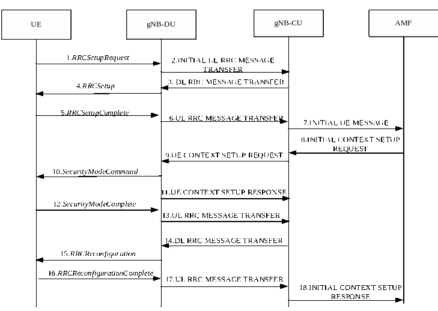
Figure 8.1-1: UE Initial Access
procedure
1. The UE sends an RRCSetupRequest message to the gNB-DU.
2. The gNB-DU includes the RRC message and, if the UE is admitted,
the corresponding low layer configuration for the UE in the INITIAL
UL RRC MESSAGE TRANSFER message and transfers to the gNB-CU. The
INITIAL UL RRC MESSAGE TRANSFER message includes the C-RNTI allocated
by the gNB-DU. If the gNB-DU identifies the UE as a Reduced
Capability UE during the random access procedure, a NR RedCap UE
Indication or a NR eRedCap UE Indication is provided in the INITIAL
UL RRC MESSAGE TRANSFER message.
3. The gNB-CU allocates a gNB-CU UE F1AP ID for the UE and generates
a RRCSetup message towards UE. The RRC message is encapsulated
in -the DL RRC MESSAGE TRANSFER message.
4. The gNB-DU sends the RRCSetup message to the UE.
5. The UE sends the RRC CONNECTION SETUP COMPLETE message to the
gNB-DU.
6. The gNB-DU encapsulates the RRC message in the UL RRC MESSAGE
TRANSFER message and sends it to the gNB-CU.
7. The gNB-CU sends the INITIAL UE MESSAGE message to the AMF.
8. The AMF sends the INITIAL CONTEXT SETUP REQUEST message to the
gNB-CU.
9. The gNB-CU sends the UE CONTEXT SETUP REQUEST message to establish
the UE context in the gNB-DU. In this message, it may also
encapsulate the SecurityModeCommand message. In case of NG-RAN
sharing, the gNB-CU includes the serving PLMN ID (for SNPNs the
serving SNPN ID).
10. The gNB-DU sends the SecurityModeCommand message to the
UE.
11. The gNB-DU sends the UE CONTEXT SETUP RESPONSE message to the
gNB-CU.
12. The UE responds with the SecurityModeComplete message.
13. The gNB-DU encapsulates the RRC message in the UL RRC MESSAGE
TRANSFER message and sends it to the gNB-CU.
14. The gNB-CU generates the RRCReconfiguration message and
encapsulates it in the DL RRC MESSAGE TRANSFER message.
15. The gNB-DU sends RRCReconfiguration message to the UE.
16. The UE sends RRCReconfigurationComplete message to the
gNB-DU.
17. The gNB-DU encapsulates the RRC message in the UL RRC MESSAGE
TRANSFER message and send it to the gNB-CU.
18. The gNB-CU sends the INITIAL CONTEXT SETUP RESPONSE message to
the AMF.
8.2 Intra-gNB-CU Mobility
8.2.1 Intra-NR Mobility
8.2.1.1 Inter-gNB-DU Mobility
This procedure is
used for the case when the UE moves from one gNB-DU to another gNB-DU
within the same gNB-CU during NR operation. Figure 8.2.1.1-1 shows
the inter-gNB-DU mobility procedure for intra-NR.
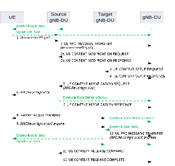
Figure 8.2.1.1-1: Inter-gNB-DU
Mobility for intra-NR
1. The UE sends a MeasurementReport message to the source
gNB-DU.
2. The source gNB-DU sends an UL RRC MESSAGE TRANSFER message to the
gNB-CU to convey the received MeasurementReport message.
2a. The gNB-CU may send an UE CONTEXT MODIFICATION REQUEST message to
the source gNB-DU to query the latest configuration.
2b. The source gNB-DU responds with an UE CONTEXT MODIFICATION
RESPONSE message that includes full configuration information.
3. The gNB-CU sends an UE CONTEXT SETUP REQUEST message to the target
gNB-DU to create an UE context and setup one or more data bearers.
The UE CONTEXT SETUP REQUEST message includes a
HandoverPreparationInformation. In case of NG-RAN sharing, the gNB-CU
includes the serving PLMN ID (for SNPNs the serving SNPN ID).
4. The target gNB-DU responds to the gNB-CU with an UE CONTEXT SETUP
RESPONSE message.
5. The gNB-CU sends a UE CONTEXT MODIFICATION REQUEST message to the
source gNB-DU, which includes a generated RRCReconfiguration
message and indicates to stop the data transmission for the UE. The
source gNB-DU also sends a Downlink Data Delivery Status frame to
inform the gNB-CU about the unsuccessfully transmitted downlink data
to the UE.
NOTE 1: In case of DAPS Handover, the UE CONTEXT MODIFICATION REQUEST
message in step 5 may indicate to stop the data transmission only for
the DRB(s) not subject to DAPS Handover or may not indicate to stop
the data transmission at all. Instead, the DL RRC Message Transfer
procedure can be used to carry the handover command to the UE. The UE
CONTEXT MODIFICATION REQUEST message that indicates to stop the data
transmission for the UE is sent to the source gNB-DU once the gNB-CU
knows that the UE has successfully accessed the target gNB-DU, for
which the source gNB-DU sends a DDDS frame about the unsuccessfully
transmitted downlink data to the gNB-CU.
6. The source gNB-DU forwards the received RRCReconfiguration
message to the UE.
7. The source gNB-DU responds to the gNB-CU with the UE CONTEXT
MODIFICATION RESPONSE message.
8. A Random Access procedure is performed at the target gNB-DU. The
target gNB-DU sends a Downlink Data Delivery Status frame to inform
the gNB-CU. Downlink packets, which may include PDCP PDUs not
successfully transmitted in the source gNB-DU, are sent from the
gNB-CU to the target gNB-DU.
NOTE 2: It is up to gNB-CU implementation whether to start sending DL
User Data to gNB-DU before or after reception of the Downlink Data
Delivery Status.
9. The UE responds to the target gNB-DU with an
RRCReconfigurationComplete message.
10. The target gNB-DU sends an UL RRC MESSAGE TRANSFER message to the
gNB-CU to convey the received RRCReconfigurationComplete
message. Downlink packets are sent to the UE. Also, uplink packets
are sent from the UE, which are forwarded to the gNB-CU through the
target gNB-DU.
11. The gNB-CU sends an UE CONTEXT RELEASE COMMAND message to the
source gNB-DU.
12. The source gNB-DU releases the UE context and responds the gNB-CU
with an UE CONTEXT RELEASE COMPLETE message.
8.2.1.2 Intra-gNB-DU handover
This procedure is
used for the case that the UE moves from one cell to another cell
within the same gNB-DU or for the case that intra-cell handover is
performed during NR operation, and supported by the UE Context
Modification (gNB-CU initiated) procedure as specified in TS 38.473
[4]. When the intra-gNB-DU handover is performed (either inter-cell
or intra-cell), the gNB-CU provides new UL GTP TEID to the gNB-DU and
the gNB-DU provides new DL GTP TEID to the gNB-CU. The gNB-DU shall
continue sending UL PDCP PDUs to the gNB-CU using the previous UL GTP
TEID until it re-establishes the RLC, and after then start sending
using the new UL GTP TEID. The gNB-CU shall continue sending DL PDCP
PDUs to the gNB-DU using the previous DL GTP TEID until it performs
PDCP re-establishment or PDCP data recovery, and after then start
sending using the new DL GTP TEID.
8.2.1.3 Inter-gNB-DU Conditional Handover or Conditional PSCell
Change or subsequent CPAC
This procedure is
used for the case when the UE moves from one gNB-DU to another gNB-DU
within the same gNB-CU during NR operation for conditional handover
or conditional PSCell change or subsequent CPAC. Figure 8.2.1.3-1
shows the inter-gNB-DU conditional mobility procedure for intra-NR.
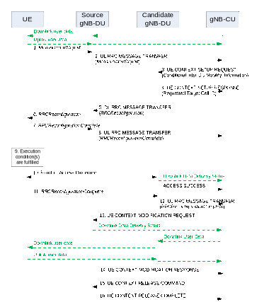
Figure 8.2.1.3-1: Inter-gNB-DU
Conditional Handover or Conditional PSCell Change or subsequent CPAC
for intra-NR
1-2. The steps 1-2 are as defined in clause 8.2.1.1.
3. The gNB-CU sends an UE CONTEXT SETUP REQUEST message to the
candidate gNB-DU to create an UE context and setup one or more data
bearers. The UE CONTEXT SETUP REQUEST message is sent for each
candidate cell and includes a HandoverPreparationInformation
(conditional handover) or a CG-ConfigInfo (conditional PSCell change
or subsequent CPAC).
4. The candidate gNB-DU responds to the gNB-CU with an UE CONTEXT
SETUP RESPONSE message including the target cell ID that was
requested from the gNB-CU. The response message is sent for each
requested candidate cell.
5. The gNB-CU sends a DL RRC MESSAGE TRANSFER message to the source
gNB-DU, which includes a generated RRCReconfiguration message.
6. The step 6 is as defined in clause 8.2.1.1.
7-8. The UE responds to the source gNB-DU with an
RRCReconfigurationComplete message, for which the source
gNB-DU forwards to the gNB-CU via an UL RRC MESSAGE TRANSFER message.
9. An execution condition to trigger initiation of conditional
handover or conditional PSCell change or
subsequent CPAC is fulfilled.
10. A Random Access procedure is performed at the candidate gNB-DU,
which becomes the target gNB-DU if successful. The target gNB-DU
sends a Downlink Data Delivery Status frame to inform the gNB-CU. The
target gNB-DU also sends an ACCESS SUCCESS message to inform the
gNB-CU of which cell the UE has successfully accessed.
11-12. The steps 11-12 are as defined in steps 9-10 in clause
8.2.1.1.
13. The gNB-CU sends a UE CONTEXT MODIFICATION REQUEST message to the
source gNB-DU and indicates to stop the data transmission for the UE.
The source gNB-DU also sends a Downlink Data Delivery Status frame to
inform the gNB-CU about the unsuccessfully transmitted downlink data
to the UE. Downlink packets, which may include PDCP PDUs not
successfully transmitted in the source gNB-DU, are sent from the
gNB-CU to the target gNB-DU.
NOTE 1: The step 13 may happen before step 12, as soon as the gNB-CU
knows which cell the UE has successfully accessed.
NOTE 2: The gNB-CU may initiate UE Context Release procedure toward
the other signalling connections or other candidate target gNB-DUs,
if any, to cancel conditional handover or conditional PSCell change
for the UE.
14. The source gNB-DU responds to the gNB-CU with the UE CONTEXT
MODIFICATION RESPONSE message.
15 -16. The steps 15-16 are as defined in steps 11-12 in clause
8.2.1.1.
The step 15~16 shall
not happen if all of the PSCells in the source gNB-DU remain
configured as the candidate PSCell(s) in the subsequent CPAC.
8.2.1.4 Intra-gNB-DU LTM
This procedure is used for the case when the UE moves within the same
gNB-DU during NR operation for LTM. Figure 8.2.1.4-1 shows the
intra-gNB-DU LTM procedure for intra-NR.
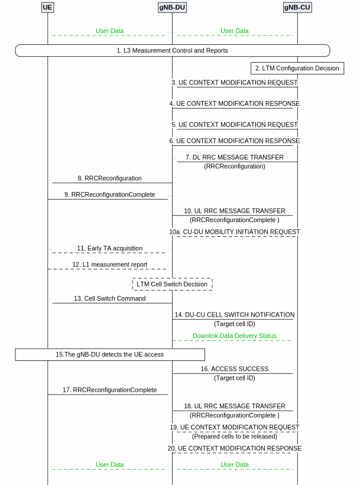
Figure 8.2.1.4-1: Intra-gNB-DU LTM
1. The UE sends a MeasurementReport message (L3 measurement
result) to the gNB-DU containing measurements of neighbouring cells.
The gNB-DU sends an UL RRC MESSAGE TRANSFER message conveying the
received MeasurementReport message to the gNB-CU.
2. The gNB-CU determines to initiate LTM configuration.
3. The gNB-CU sends a UE CONTEXT MODIFICATION REQUEST message to the
gNB-DU for each candidate cell, containing
one candidate cell ID and the CSI resource configuration for
subsequent LTM. The gNB-CU may provide the LTM configuration ID
mapping list to the gNB-DU. The gNB-CU may request PRACH resources
from the gNB-DU. The gNB-CU may request the gNB-DU to provide the
lower layer configuration for the purpose of generating the reference
configuration or provide the lower layer reference configuration to
the gNB-DU. The gNB-CU may inform the gNB-DU about intra-DU L2 reset
configuration. The gNB-CU may request the gNB-DU to provide the
CSI-RS resource configuration for L1 measurements.
4. If the gNB-DU accepts the request of LTM
configuration, it responds with a UE
CONTEXT MODIFICATION RESPONSE message including the generated lower
layer RRC configurations for the accepted candidate cell. The gNB-DU
may include the CSI-RS resource configuration for L1 measurements
upon request.
NOTE 1: Steps 3 and 4 may be initiated multiple times for LTM
candidate cell preparation of multiple cells including the source
cell.
5. The gNB-CU sends a UE CONTEXT MODIFICATION REQUEST message to the
gNB-DU which may include the LTM configuration ID mapping listand/or
the updated CSI resource configuration. The gNB-CU may inform the
gNB-DU about intra-DU L2 reset configuration. The gNB-CU also
includes the TCI state configurations for the accepted target
candidate cell(s).
6. The gNB-DU responds with a UE CONTEXT MODIFICATION RESPONSE
message which may include an updated lower layer configuration, e.g.,
containing the updated CSI report configuration of the source cell.
NOTE 2: For subsequent LTM, the CU-initiated UE Context Modification
procedure may be invoked per each candidate cell to transfer the
updated CSI resource configuration to the
gNB-DU.
NOTE 3: For each candidate cell, if the CSI-RS resource configuration
for early CSI acquisition is obtained,
the gNB-CU may use the CU-initiated
UE Context Modification procedure to obtain the
CSI report configuration for early CSI acquisition.
7. The gNB-CU sends a DL RRC MESSAGE TRANSFER message to the gNB-DU,
which includes the generated RRCReconfiguration message with
the LTM configuration.
8. The gNB-DU forwards the received RRCReconfiguration message
to the UE.
9. The UE responds to the gNB-DU with an RRCReconfigurationComplete
message.
10. The gNB-DU forwards the RRCReconfigurationComplete message
to the gNB-CU via an UL RRC MESSAGE TRANSFER message.
10a. If LTM is triggered based on L3 measurement,
gNB-CU sends a CU-DU MOBILITY
INITIATION REQUEST message to the gNB-DU to trigger early
synchronization and/or
cell switch.
11. Early TA acquisition
to the candidate cell(s) may be performed as specified in TS 38.300
[2].
12. The UE sends the L1 measurement result to the gNB-DU if L1
measurement is configured to UE. The gNB-DU decides to execute LTM.
13. The gNB-DU sends the Cell Switch Command to the UE.
14. The gNB-DU sends the DU-CU CELL
SWITCH NOTIFICATION message to the gNB-CU to
indicate the initiation of the Cell Switch Command to the UE
including the target cell ID.
15. The gNB-DU detects the UE access in the target cell as specified
in TS 38.300 [2].
16. The gNB-DU sends the ACCESS SUCCESS message to the gNB-CU with
the target cell ID.
17. The UE sends an RRCReconfigurationComplete message to the
gNB-DU.
18. The gNB-DU forwards the RRCReconfigurationComplete message
to the gNB-CU via an UL RRC MESSAGE TRANSFER message.
19. The gNB-CU may send the UE CONTEXT MODIFICATION REQUEST message
to the gNB-DU to release the resources of prepared cells.
20. The gNB-DU responds with a UE CONTEXT MODIFICATION RESPONSE
message.
8.2.1.5 Inter-gNB-DU LTM
This procedure is
used for the case when the UE moves from one gNB-DU to another gNB-DU
within the same gNB-CU during NR operation for LTM. Figure 8.2.1.5-1
shows the inter-gNB-DU LTM procedure for intra-NR.
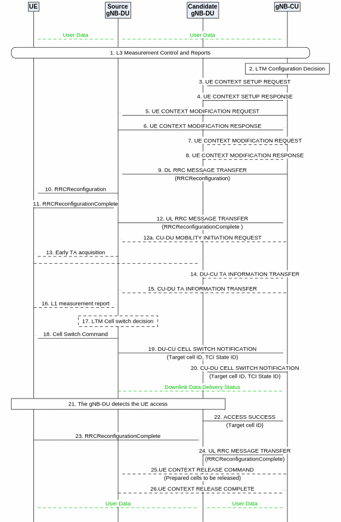
Figure 8.2.1.5-1: Inter-gNB-DU LTM
1. The UE sends a
MeasurementReport
message (L3 measurement result) to the source gNB-DU containing
measurements of neighbouring cells. The
source gNB-DU sends an UL RRC MESSAGE TRANSFER message conveying the
received MeasurementReport
message to the gNB-CU.
2. The gNB-CU determines
to initiate LTM configuration.
3. The gNB-CU sends a UE CONTEXT SETUP
REQUEST message to the candidate gNB-DU(s) for each candidate cell,
containing one candidate cell ID and the CSI resource configuration
for subsequent LTM. The gNB-CU may provide the LTM configuration ID
mapping list to the candidate gNB-DU(s). The gNB-CU may request PRACH
resources from the candidate gNB-DU(s). The gNB-CU may request the
candidate gNB-DU(s) to provide the lower layer configuration for the
purpose of generating the reference configuration or provide the
lower layer part of the reference configuration to the candidate
gNB-DU(s). The gNB-CU may request the candidate gNB-DU(s) to provide
the CSI-RS resource configuration for L1 measurements.
4. If the candidate gNB-DU accepts the request of LTM configuration,
it responds with a UE CONTEXT SETUP RESPONSE message including the
generated lower layer RRC configurations for the accepted target
candidate cell. The candidate gNB-DU may include the CSI-RS resource
configuration for L1 measurements upon
request.
NOTE 1: The CU-initiated UE Context Modification procedure may be
initiated for preparing candidate cells in the source gNB-DU as
specified in step 3 and 4 in 8.2.1.4 Intra-gNB-DU LTM.
5. The gNB-CU sends a UE CONTEXT MODIFICATION REQUEST message to the
source gNB-DU including the information related to early sync and the
LTM configuration ID mapping list for the accepted target candidate
cell(s). The gNB-CU may send the updated CSI resource configuration
to the source gNB-DU. The gNB-CU may inform the source gNB-DU about
intra-DU L2 reset configuration. The gNB-CU may inform the source
gNB-DU about the LTM security information.
6. The source gNB-DU responds with a UE CONTEXT MODIFICATION RESPONSE
message which includes an updated lower layer configuration, e.g.,
containing the updated CSI report configuration of the source cell.
7. The gNB-CU may send a UE CONTEXT MODIFICATION REQUEST message for
each candidate cell accepted in the candidate gNB-DU(s), containing
the information for subsequent LTM or for updating the configurations
of candidate cells. The gNB-CU may also provide the lower layer part
of the reference configuration to the candidate gNB-DU(s). The gNB-CU
may inform the candidate gNB-DU(s) about intra-DU L2 reset
configuration. The gNB-CU may inform the candidate gNB-DU(s) about
the LTM security information.
8. The candidate gNB-DU responds with a UE CONTEXT MODIFICATION
RESPONSE message including the updated lower layer configuration,
e.g., containing the updated CSI report configuration of the
requested candidate cell. The candidate gNB-DU may include the CSI
report configuration for early CSI acquisition of the candidate cell.
NOTE 2: Step 7 may also be triggered after step 19, or after step 22
by implementation for subsequent LTM.
9. The gNB-CU sends a DL RRC MESSAGE TRANSFER
message to the source gNB-DU, which includes the generated
RRCReconfiguration
message with the LTM configuration.
10. The source gNB-DU forwards the received RRCReconfiguration
message to the UE.
11. The UE responds to the source gNB-DU with an
RRCReconfigurationComplete
message.
12. The source gNB-DU forwards the
RRCReconfigurationComplete message to
the gNB-CU via an UL RRC MESSAGE TRANSFER message.
12a. If L3 measurements based LTM is configured, the gNB-CU sends a
CU-DU MOBILITY INITIATION REQUEST message to the gNB-DU to trigger
early synchronization and/or cell switch.
NOTE 3: The source gNB-DU may initiate the CSI-RS Coordination
procedure to activate or deactivate the semi persistent CSI-RS
resource(s) of some candidate cell(s) in the candidate gNB-DU(s) via
gNB-CU.
13. Early TA acquisition
to the candidate cell(s) may be performed as specified in TS 38.300
[2].
14.The candidate gNB-DU
sends a DU-CU TA INFORMATION TRANSFER message to the gNB-CU, which
includes the TA values, and the associated PRACH resource
information.
15. The gNB-CU forwards the TA value, and the
associated PRACH resource information to
the source gNB-DU in the CU-DU
TA INFORMATION TRANSFER message.
16/ 17. The UE sends the L1 measurement result to the source gNB-DU
if L1 measurement is configured to UE. The source gNB-DU decides to
execute LTM to a target cell.
18. The source gNB-DU sends the Cell Switch Command to the UE.
19. The source gNB-DU
sends the DU-CU CELL SWITCH NOTIFICATION message to the gNB-CU to
indicate the initiation of the Cell Switch Command to the UE,
including the
target cell ID and the
TCI state ID(s).
The TA value(s) related information
applicable for subsequent LTM may also be
included.
20. The gNB-CU forwards
in the CU-DU CELL SWITCH NOTIFICATION message to
the target gNB-DU the target cell ID,
the TCI state
ID(s), and the TA
value(s) related information received in step 19.
21. The target gNB-DU detects the UE access as specified in TS 38.300
[2].
22. The target gNB-DU sends the ACCESS SUCCESS message to the gNB-CU
with the target cell ID.
NOTE 4: The gNB-CU may initiate the CSI-RS Coordination procedure to
deactivate the semi persistent CSI-RS resource(s) of candidate
cell(s) in the candidate gNB-DU(s) after the UE successfully accesses
to the target cell.
23. The UE sends an RRCReconfigurationComplete message to the
target gNB-DU.
24. The target gNB-DU forwards the RRCReconfigurationComplete
message to the gNB-CU via an UL RRC MESSAGE TRANSFER message.
25. The gNB-CU may send the UE CONTEXT RELEASE COMMAND message to the
source gNB-DU to release the resources of prepared cells.
26. The source gNB-DU responds with a UE CONTEXT RELEASE COMPLETE
message.
8.2.1.6 LTM with gNB-CU-UP change
Figure 8.2.1.6-1 shows the procedure used for LTM with the change of
gNB-CU-UP within a gNB.
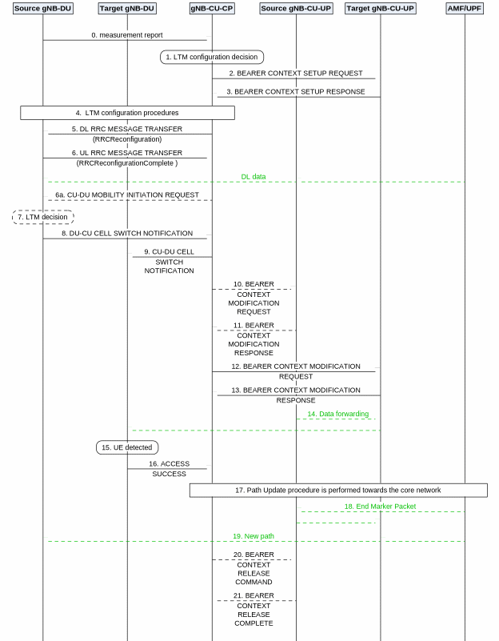
Figure 8.2.1.6-1 LTM with the
change of gNB-CU-UP
0. The source gNB-DU
forwards the Measurement Report to the gNB-CU-CP.
1. The gNB-CU-CP decides
to initiate LTM configuration.
2. The gNB-CU-CP sends a
BEARER CONTEXT SETUP REQUEST message containing UL TNL address
information for NG-U to setup the bearer
context in the target gNB-CU-UP.
3. The target gNB-CU-UP responds with a BEARER
CONTEXT SETUP RESPONSE message containing the UL TNL address
information for F1-U, DL TNL address information for NG-U, and the
TNL address information for data forwarding to the target gNB-CU-UP.
4. LTM configuration procedures are
performed between gNB-CU and candidate gNB-DUs, and between gNB-CU
and source gNB-DU as specified from step 3 to step 8 in section
8.2.1.5.
5 - 6. The gNB-CU-CP sends the RRC
Reconfiguration message to the source gNB-DU via DL
RRC MESSAGE TRANSFER message, and receives the the
RRCReconfigurationComplete message
from the source gNB-DU via
UL RRC MESSAGE TRANSFER message.
6a. If LTM is triggered based on L3
measurement, gNB-CU-CP sends a CU-DU MOBILITY INITIATION REQUEST
message to the gNB-DU to trigger early synchronization
and/or cell switch.
7. The UE sends the lower layer measurement result to the source
gNB-DU if L1 measurement is configured to UE. The source gNB-DU
decides to execute LTM to a target cell.
8. The source gNB-DU
sends the DU-CU CELL SWITCH
NOTIFICATION message to the gNB-CU-CP with
the selected target cell ID.
9. The gNB-CU-CP
forwards the selected target cell ID to the
target gNB-DU in the CU-DU CELL SWITCH NOTIFICATION message.
10-11. The gNB-CU-CP performs the Bearer Context Modification
procedure to indicate the source gNB-CU-UP to stop packet delivery,
which may also retrieve the PDCP UL/DL status and exchange the
TNL address information for data forwarding for the bearers.
12-13. The gNB-CU-CP performs the Bearer Context Modification
procedure to send the DL TNL address information for F1-U and the
PDCP UL/DL status to the target gNB-CU-UP.
14. Data Forwarding may be performed from the source gNB-CU-UP to the
target gNB-CU-UP.
15. The target gNB-DU detects the UE in the target cell.
16. The target gNB-DU sends an ACCESS SUCCESS message to the
gNB-CU-CP. The target gNB-DU also sends a Downlink Data Delivery
Status frame to inform the target gNB-CU-UP.
17-19. Path Switch procedure is performed to update the DL TNL
address information for the NG-U towards the core network.
20-21. Bearer Context Release procedure may be performed to release
the UE context in the source gNB-CU-UP.
8.2.1.7 Conditional
intra-CU LTM (Intra-gNB-DU)
This procedure is
used for the case when the UE moves within the same gNB-DU during NR
operation for conditional LTM. Figure 8.2.1.7-1 shows the
intra-gNB-DU conditional LTM procedure for intra-NR.
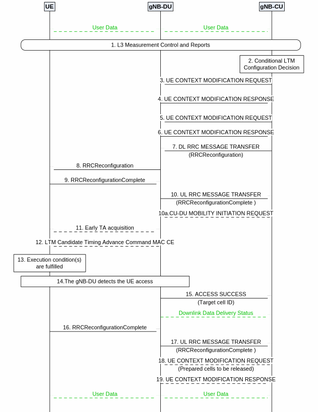
Figure
8.2.1.7-1:
Conditional intra-CU LTM (Intra-gNB-DU)
1. The UE sends a MeasurementReport message (L3 measurement
result) to the gNB-DU containing measurements of neighbouring cells.
The gNB-DU sends an UL RRC MESSAGE TRANSFER message conveying the
received MeasurementReport message to the gNB-CU.
2. The gNB-CU determines to initiate conditional LTM configuration.
3. The gNB-CU sends a UE CONTEXT MODIFICATION REQUEST message to the
gNB-DU for each candidate cell, containing conditional LTM
indication, one candidate cell ID and the CSI resource configuration
for subsequent LTM. The gNB-CU may provide the LTM configuration ID
mapping list to the gNB-DU. The gNB-CU may request PRACH resources
from the gNB-DU. The gNB-CU may request the gNB-DU to provide the
lower layer configuration for the purpose of generating the reference
configuration or provide the lower layer reference configuration to
the gNB-DU. The gNB-CU may inform the gNB-DU about intra-DU L2 reset
configuration. If the gNB-CU decides to initiate the L1
event-triggered conditional LTM, it also provides a list of candidate
cells to which the L1 event-triggered conditional LTM is applied and
requests the gNB-DU to generate the corresponding L1-based execution
condition(s). The gNB-CU may request the gNB-DU to provide the CSI-RS
resource configuration for L1 measurements.
4. If the gNB-DU accepts the request of conditional LTM
configuration, it responds with a UE CONTEXT MODIFICATION RESPONSE
message including the generated lower layer RRC configurations for
the accepted candidate cell. If the L1-based execution conditions are
requested, the gNB-DU also provides a list of execution conditions
generated for other candidate cells. The gNB-DU may include the
CSI-RS resource configuration for L1 measurements
upon request.
NOTE 1: Steps 3 and 4 may be initiated multiple times for conditional
LTM candidate cell preparation of multiple cells including the source
cell.
NOTE 1a: For each candidate cell, if the CSI-RS resource
configuration for early CSI acquisition is
obtained, the gNB-CU
may use the CU-initiated UE Context Modification procedure
to obtain the CSI report configuration for early CSI
acquisition.
5. The gNB-CU sends a UE CONTEXT MODIFICATION REQUEST message to the
gNB-DU which may include the LTM configuration ID mapping list and/or
the updated CSI resource configuration. The gNB-CU may inform the
gNB-DU about the intra-DU L2 reset configuration.
6. The gNB-DU responds with a UE CONTEXT MODIFICATION RESPONSE
message which may include an updated lower layer configuration, e.g.,
containing the updated CSI report configuration of the source cell.
If the L1-based execution conditions are requested, the gNB-DU also
provides a list of execution conditions generated for other candidate
cells.
NOTE 2: In case of subsequent conditional LTM, the CU-initiated UE
Context Modification procedure may be invoked per each candidate cell
to transfer to the gNB-DU the updated CSI resource configuration.
7. The gNB-CU sends a DL RRC MESSAGE TRANSFER message to the gNB-DU,
which includes the generated RRCReconfiguration message with
the conditional LTM configuration.
8. The gNB-DU forwards the received RRCReconfiguration message
to the UE.
9. The UE responds to the gNB-DU with an RRCReconfigurationComplete
message.
10. The gNB-DU forwards the RRCReconfigurationComplete message
to the gNB-CU via an UL RRC MESSAGE TRANSFER message.
10a. If conditional L3 measurements based LTM is configured, the
gNB-CU may send a CU-DU MOBILITY INITIATION REQUEST message to the
gNB-DU to trigger early synchronization to the candidate cell(s).
11. Early TA acquisition to the candidate cell(s) may be performed as
specified in TS 38.300 [2].
12. The gNB-DU sends the LTM Candidate Timing Advance Command MAC CE
to the UE.
13. The execution condition(s) to trigger initiation of conditional
LTM is fulfilled in the UE.
NOTE 3: The gNB-DU may decide to trigger an LTM Cell Switch Command
MAC CE to the UE towards a candidate cell with conditional LTM
candidate configuration.
14. The gNB-DU detects the UE access as specified in TS 38.300 [2].
15. The gNB-DU sends an ACCESS SUCCESS message to inform the gNB-CU
of which cell the UE has successfully accessed. The gNB-DU also sends
a Downlink Data Delivery Status frame to inform the gNB-CU about the
unsuccessfully transmitted downlink data to the UE if any. Downlink
packets, which may include PDCP PDUs not successfully transmitted in
the previous serving cell, are sent from the gNB-CU to the gNB-DU.
16. The UE sends an RRCReconfigurationComplete message to the
gNB-DU.
17. The gNB-DU forwards the RRCReconfigurationComplete message
to the gNB-CU via an UL RRC MESSAGE TRANSFER message.
18. The gNB-CU may send the UE CONTEXT MODIFICATION REQUEST message
to the gNB-DU to release the resources of prepared cells.
19. The gNB-DU responds with a UE CONTEXT MODIFICATION RESPONSE
message.
8.2.1.8 Conditional
intra-CU LTM (Inter-gNB-DU)
This procedure is
used for the case when the UE moves from one gNB-DU to another gNB-DU
within the same gNB-CU during NR operation for Conditional LTM.
Figure 8.2.1.8-1 shows the inter-gNB-DU Conditional LTM procedure for
intra-NR.
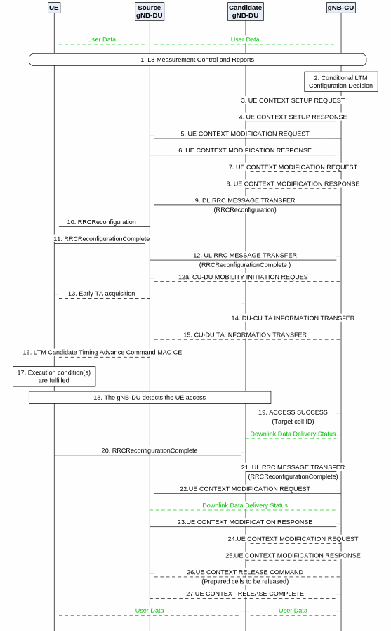
Figure
8.2.1.8-1:
Conditional intra-CU LTM (Inter-gNB-DU)
1. The UE sends a MeasurementReport message (L3 measurement
result) to the source gNB-DU containing measurements of neighbouring
cells. The source gNB-DU sends an UL RRC MESSAGE TRANSFER message
conveying the received MeasurementReport message to the
gNB-CU.
2. The gNB-CU determines to initiate conditional LTM configuration.
3. The gNB-CU sends a UE CONTEXT SETUP REQUEST message to the
candidate gNB-DU(s) for each candidate cell, containing conditional
LTM indication, one candidate cell ID and the CSI resource
configuration for subsequent conditional LTM. The gNB-CU may provide
the LTM configuration ID mapping list to the candidate gNB-DU(s). The
gNB-CU may request PRACH resources from the candidate gNB-DU(s). The
gNB-CU may request the candidate gNB-DU(s) to provide the lower layer
configuration for the purpose of generating the reference
configuration or provide the lower layer part of the reference
configuration to the candidate gNB-DU(s). If the gNB-CU decides to
initiate the L1 event-triggered conditional LTM, it also provides a
list of candidate cells to which the L1 event-triggered conditional
LTM is applied and requests the gNB-DU to generate the corresponding
L1 execution condition(s). The gNB-CU may request the candidate
gNB-DU(s) to provide the CSI-RS resource configuration for L1
measurements.
4. If the candidate gNB-DU accepts the request of conditional LTM
configuration, it responds with a UE CONTEXT SETUP RESPONSE message
including the generated lower layer RRC configurations for the
accepted target candidate cell. If the L1 execution conditions are
requested, the candidate gNB-DU also provides a list of execution
conditions generated for other candidate cells. The candidate gNB-DU
may include the CSI-RS resource configuration for L1 measurements
upon request.
NOTE 1: The CU-initiated UE Context Modification procedure may be
initiated for preparing candidate cells in the source gNB-DU as
specified in step 3 and 4 in 8.2.1.4 Intra-gNB-DU conditional LTM.
5. The gNB-CU sends a UE CONTEXT MODIFICATION REQUEST message to the
source gNB-DU including the information related to early sync and the
LTM configuration ID mapping list for the accepted target candidate
cell(s). The gNB-CU may send the updated CSI resource configuration
to the source gNB-DU. The gNB-CU may inform the source gNB-DU about
intra-DU L2 reset configuration.
6. The source gNB-DU responds with a UE CONTEXT MODIFICATION RESPONSE
message which includes an updated lower layer configuration, e.g.,
containing the updated CSI report configuration of the source cell.
If the L1 execution conditions are requested, the source gNB-DU also
provides a list of execution conditions generated for the candidate
cells.
7. The gNB-CU may send a UE CONTEXT MODIFICATION REQUEST message for
each candidate cell accepted in the candidate gNB-DU(s), containing
the information for subsequent conditional LTM or for updating the
configurations of candidate cells. The gNB-CU may also provide the
lower layer part of the reference configuration to the candidate
gNB-DU(s). The gNB-CU may inform the candidate gNB-DU(s) about
intra-DU L2 reset configuration.
8. The candidate gNB-DU responds with a UE CONTEXT MODIFICATION
RESPONSE message including the updated lower layer configuration,
e.g., containing the updated CSI report configuration of the
requested candidate cell. The candidate gNB-DU may include the CSI
report configuration for early CSI acquisition of the candidate cell.
If the L1-based execution conditions are requested, the candidate
gNB-DU also provides a list of execution conditions generated for
other candidate cells.
NOTE 2: Step 7 may also be triggered after step 19 for subsequent
conditional LTM.
NOTE 2a: The gNB-CU may generate L3-based execution conditions for
conditional LTM.
9. The gNB-CU sends a DL RRC MESSAGE TRANSFER message to the source
gNB-DU, which includes the generated RRCReconfiguration
message with the conditional LTM configuration.
10. The source gNB-DU forwards the received RRCReconfiguration
message to the UE.
11. The UE responds to the source gNB-DU with an
RRCReconfigurationComplete message.
12. The source gNB-DU forwards the RRCReconfigurationComplete
message to the gNB-CU via an UL RRC MESSAGE TRANSFER message.
12a. If conditional LTM is configured based on L3 measurements, the
gNB-CU may send a CU-DU MOBILITY INITIATION REQUEST message to the
source gNB-DU to trigger early synchronization to the candidate
cell(s).
NOTE 2b: The source gNB-DU may initiate the CSI-RS Coordination
procedure to activate or deactivate the semi persistent CSI-RS
resource(s) of some candidate cell(s) in the candidate gNB-DU(s) via
gNB-CU.
13. Early TA acquisition to the candidate cell(s) may be performed as
specified in TS 38.300 [2].
14. The candidate gNB-DU sends a DU-CU TA INFORMATION TRANSFER
message to the gNB-CU, which includes the TA values, and the
associated PRACH resource information.
15. The gNB-CU forwards the TA value and the associated PRACH
resource information to the source gNB-DU in the CU-DU TA INFORMATION
TRANSFER message.
16. The source gNB-DU sends the LTM Candidate Timing Advance Command
MAC CE to the UE.
17. The execution condition(s) to trigger initiation of conditional
LTM is fulfilled in the UE.
NOTE 3: The source gNB-DU may decide to trigger a LTM Cell Switch
Command MAC CE to the UE towards a candidate cell with conditional
LTM candidate configuration.
NOTE 3a: The gNB-CU may transmit a CU-DU MOBILITY INITIATION REQUEST
message to the source gNB-DU to trigger an LTM cell switch for the UE
to a candidate cell with conditional LTM candidate configuration.
18. The target gNB-DU detects the UE access as specified in TS 38.300
[2].
19. The target gNB-DU sends an ACCESS SUCCESS message to inform the
gNB-CU of which cell the UE has successfully accessed. The target
gNB-DU also sends a Downlink Data Delivery Status frame to inform the
gNB-CU.
20. The UE sends an RRCReconfigurationComplete message to the
target gNB-DU.
21. The target gNB-DU forwards the RRCReconfigurationComplete
message to the gNB-CU via an UL RRC MESSAGE TRANSFER message.
22. The gNB-CU sends a UE CONTEXT MODIFICATION REQUEST message to the
source gNB-DU to inform a successful inter-DU Conditional LTM and
indicate to stop the data transmission for the UE. The source gNB-DU
sends a Downlink Data Delivery Status frame to inform the gNB-CU
about the unsuccessfully transmitted downlink data to the UE if any.
Downlink packets, which may include PDCP PDUs not successfully
transmitted in the source gNB-DU, are sent from the gNB-CU to the
target gNB-DU.
NOTE 4: The step 22 may happen before step 21, as soon as the gNB-CU
knows which cell the UE has successfully accessed.
NOTE 4a: The gNB-CU may initiate the CSI-RS Coordination procedure to
deactivate the semi persistent CSI-RS resource(s) of candidate
cell(s) in the candidate gNB-DU(s) after the UE successfully accesses
to the target cell.
23. The source gNB-DU responds to the gNB-CU with a UE CONTEXT
MODIFICATION RESPONSE message, which may include the TA values, the
remaining time of the TAT associated to the valid TAs, and the TAG ID
pointer of the target cell and the candidate cell(s).
24. The gNB-CU may send a UE CONTEXT MODIFICATION REQUEST message to
transfer the TA values, the remaining time of the TAT, and the TAG ID
pointer of the target cell and the candidate cell(s) to the target
gNB-DU.
25. The target gNB-DU responds to the gNB-CU with a UE CONTEXT
MODIFICATION RESPONSE message.
26. The gNB-CU may send the UE CONTEXT RELEASE COMMAND message to the
source gNB-DU to release the resources of prepared cells.
27. The source gNB-DU responds with a UE CONTEXT RELEASE COMPLETE
message.
8.2.2 EN-DC Mobility
8.2.2.1 Inter-gNB-DU Mobility using MCG SRB
This procedure is
used for the case the UE moves from one gNB-DU to another gNB-DU
within the same gNB-CU when only MCG SRB is available during EN-DC
operation. Figure 8.2.2.1-1 shows the inter-gNB-DU mobility procedure
using MCG SRB in EN-DC.
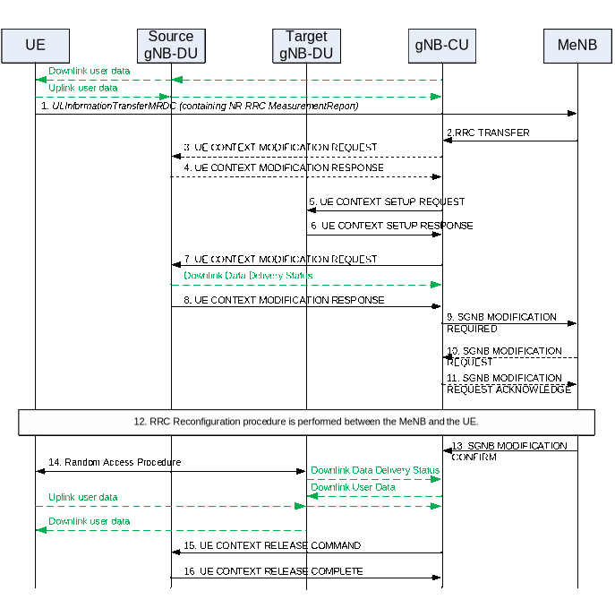
Figure 8.2.2.1-1: Inter-gNB-DU
Mobility using MCG SRB in EN-DC
1. The UE sends an ULInformationTransferMRDC message to the MeNB.
2. The MeNB sends RRC TRANSFER message to the gNB-CU.
3. The gNB-CU may send UE CONTEXT MODIFICATION REQUEST message to the
source gNB-DU to query the latest SCG configuration.
4. The source gNB-DU responds with an UE CONTEXT MODIFICATION
RESPONSE message that includes full configuration information.
5. The gNB-CU sends an UE CONTEXT SETUP REQUEST message to the target
gNB-DU to create an UE context and setup one or more data bearers.
The UE CONTEXT SETUP REQUEST message includes a CG ConfigInfo.
6. The target gNB-DU responds the gNB-CU with an UE CONTEXT SETUP
RESPONSE message.
7. The gNB-CU sends a UE CONTEXT MODIFICATION REQUEST message to the
source gNB-DU indicating to stop the data transmission to the UE. The
source gNB-DU also sends a Downlink Data Delivery Status frame to
inform the gNB-CU about the unsuccessfully transmitted downlink data
to the UE.
8. The source gNB-DU responds the gNB-CU with an UE CONTEXT
MODIFICATION RESPONSE message.
9. The gNB-CU sends an SGNB MODIFICATION REQUIRED message to the
MeNB.
10/11. The MeNB Initiated SgNB Modification procedure may be
triggered by the SgNB Initiated SgNB Modification procedure (e.g. to
provide information such as data forwarding addresses, new SN
security key, measurement gap, etc...).
12. The MeNB and the UE perform RRC Connection Reconfiguration
procedure.
13. The MeNB sends an SGNB MODIFICATION CONFIRM message to the
gNB-CU.
14. Random Access procedure is performed at the target gNB-DU. The
target gNB-DU sends a Downlink Data Delivery Status frame to inform
the gNB-CU. Downlink packets, which may include PDCP PDUs not
successfully transmitted in the source gNB-DU, are sent from the
gNB-CU to the target gNB-DU. Downlink packets are sent to the UE.
Also, uplink packets are sent from the UE, which are forwarded to the
gNB-CU through the target gNB-DU.
NOTE: It is up to gNB-CU implementation whether to start sending DL
User Data to gNB-DU before or after reception of the Downlink Data
Delivery Status.
15. The gNB-CU sends an UE CONTEXT RELEASE COMMAND message to the
source gNB-DU.
16. The source gNB-DU releases the UE context and responds the gNB-CU
with an UE CONTEXT RELEASE COMPLETE message.
8.2.2.2 Inter-gNB-DU Mobility using SCG SRB (SRB3)
This procedure is
used for the case the UE moves from one gNB-DU to another gNB-DU when
SCG SRB (SRB3) is available during EN-DC operation. The procedure is
the same as inter-gNB-DU Mobility for intra-NR as defined in
clause 8.2.1.1 but the UE CONTEXT SETUP REQUEST message includes
a CG-ConfigInfo.
8.2.2.3 Inter-gNB-DU Conditional PSCell Change using MCG SRB without
MN negotiation
This procedure is
used for the case where the UE moves from one gNB-DU to another
gNB-DU within the same gNB-CU when only MCG SRB is available and the
MN’s configuration is not changed during EN-DC operation for
conditional PSCell change. Figure 8.2.2.3-1 shows the inter-gNB-DU
conditional PSCell change procedure using MCG SRB in EN-DC.
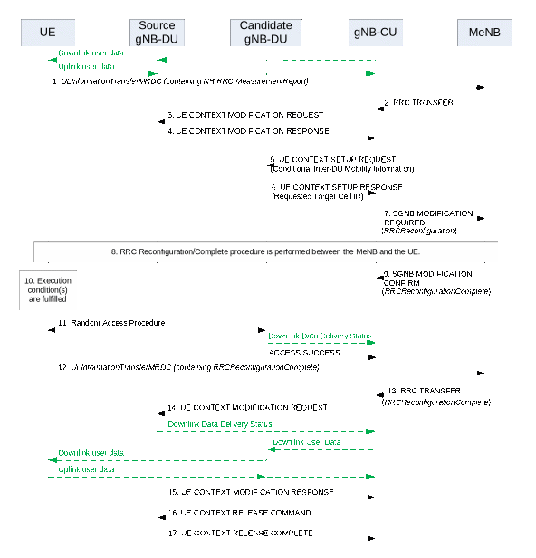
Figure 8.2.2.3-1: Inter-gNB-DU
Conditional PSCell Change using MCG SRB without MN negotiation in
EN-DC
1-4. The steps 1-4 are as defined in clause 8.2.2.1.
5. The gNB-CU sends an UE CONTEXT SETUP REQUEST message to the
candidate gNB-DU to create an UE context and setup one or more data
bearers. The UE CONTEXT SETUP REQUEST message is sent for each
candidate cell and includes a CG-ConfigInfo.
6. The candidate gNB-DU responds the gNB-CU with an UE CONTEXT SETUP
RESPONSE message including the target cell ID that was requested from
the gNB-CU. The response message is sent for each requested candidate
cell.
7. The gNB-CU sends an SGNB MODIFICATION REQUIRED message to the
MeNB, which includes a generated RRCReconfiguration message.
8. The MeNB and the UE perform RRC Connection
Reconfiguration/Complete procedure.
9. The MeNB sends an SGNB MODIFICATION CONFIRM message to the gNB-CU,
to convey the received RRCReconfigurationComplete message at step 8.
10. An execution condition to trigger initiation of conditional
PSCell change is fulfilled.
11. Random Access procedure is performed at the candidate gNB-DU,
which becomes the target gNB-DU if successful. The target gNB-DU
sends a Downlink Data Delivery Status frame to inform the gNB-CU. The
target gNB-DU also sends an ACCESS SUCCESS message to inform the
gNB-CU of which cell the UE has successfully accessed.
12-13. The UE responds with an RRCReconfigurationComplete message
(embedded in an ULInformationTransferMRDC message), which the MeNB
forwards to the gNB-CU via an RRC TRANSFER message.
14. The gNB-CU sends a UE CONTEXT MODIFICATION REQUEST message to the
source gNB-DU and indicates to stop the data transmission for the UE.
The source gNB-DU sends a Downlink Data Delivery Status frame to
inform the gNB-CU about the unsuccessfully transmitted downlink data
to the UE. Downlink packets, which may include PDCP PDUs not
successfully transmitted in the source gNB-DU, are sent from the
gNB-CU to the target gNB-DU. Downlink packets are sent to the UE.
Also, uplink packets are sent from the UE, which are forwarded to the
gNB-CU through the target gNB-DU.
NOTE 1: The step 14 may happen before step 13, as soon as the gNB-CU
knows which cell the UE has successfully accessed.
NOTE 2: The gNB-CU may initiate UE Context Release procedure toward
the other signalling connections or other candidate target gNB-DUs,
if any, to cancel conditional PSCell change for the UE.
15. The source gNB-DU responds to the gNB-CU with the UE CONTEXT
MODIFICATION RESPONSE message.
16-17. The steps 16-17 are as defined in steps 11-12 in clause
8.2.1.1.
8.2.3 Intra-CU topology adaptation procedure
8.2.3.1 Intra-CU topology adaptation procedure in SA
During the intra-CU
topology adaptation in SA, both the source and the target parent node
are served by the same IAB-donor-CU. The target parent node may use a
different IAB-donor-DU than the source parent node. The source path
may have common nodes with the target path. Figure 8.2.3.1-1 shows an
example of the topology adaptation procedure, where the target parent
node uses a different IAB-donor-DU than the one used by the source
parent node.
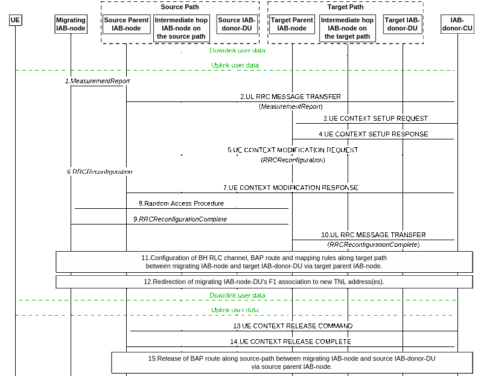
Figure 8.2.3.1-1: IAB intra-CU
topology adaptation procedure
1. The migrating IAB-MT sends a MeasurementReport message to
the source parent node IAB-DU. This report is based on a Measurement
Configuration the migrating IAB-MT received from the IAB-donor-CU
before.
2. The source parent node IAB-DU sends an UL RRC MESSAGE TRANSFER
message to the IAB-donor-CU to convey the received MeasurementReport.
3. The IAB-donor-CU sends a UE CONTEXT SETUP REQUEST message to the
target parent node IAB-DU to create the UE context for the migrating
IAB-MT and set up one or more bearers. These bearers can be used by
the migrating IAB-MT for its own signalling, and, optionally, data
traffic.
4. The target parent node IAB-DU responds to the IAB-donor-CU with a
UE CONTEXT SETUP RESPONSE message.
5. The IAB-donor-CU sends a UE CONTEXT MODIFICATION REQUEST message
to the source parent node IAB-DU, which includes a generated
RRCReconfiguration message. The
RRCReconfiguration message includes
a default BH RLC channel and a default BAP Routing ID configuration
for UL F1-C/non-F1 traffic mapping on the target path. It may
include additional BH RLC channels. This
step may also include allocation of TNL address(es) that is (are)
routable via the target IAB-donor-DU. The new TNL address(es) may be
included in the RRCReconfiguration message as a replacement
for the TNL address(es) that is (are) routable via the source
IAB-donor-DU. In case IPsec tunnel mode is
used to protect the F1 and non-F1 traffic, the
allocated TNL address is outer IP address. The TNL address
replacement is not necessary if the source and target paths use the
same IAB-donor-DU. The Transmission Action Indicator in the UE
CONTEXT MODIFICATION REQUEST message indicates to stop the data
transmission to the migrating IAB-node.
6. The source parent node IAB-DU forwards the received
RRCReconfiguration message to the migrating IAB-MT.
7. The source parent node IAB-DU responds to the IAB-donor-CU with
the UE CONTEXT MODIFICATION RESPONSE message.
8. A Random Access procedure is performed at the target parent node
IAB-DU.
9. The migrating IAB-MT responds to the target parent node IAB-DU
with an RRCReconfigurationComplete message.
10. The target parent node IAB-DU sends an UL RRC MESSAGE TRANSFER
message to the IAB-donor-CU to convey the received
RRCReconfigurationComplete message. Also, uplink packets can
be sent from the migrating IAB-MT, which are forwarded to the
IAB-donor-CU through the target parent node IAB-DU. These UL packets
belong to the IAB-MT’s own signalling and, optionally, data
traffic.
11. The IAB-donor-CU configures BH RLC channels and BAP-sublayer
routing entries on the target path between the target parent IAB-node
and target IAB-donor-DU as well as DL mappings on the target
IAB-donor-DU for the migrating IAB-node’s target path. These
configurations may be performed at an earlier stage, e.g. immediately
after step 3, or before step 3. The IAB-donor-CU
may establish additional BH RLC channels to the migrating IAB-MT via
RRC message.
12. The F1-C connections are switched to use the migrating IAB-node’s
new TNL address(es), IAB-donor-CU updates the UL
BH information associated to each GTP-tunnel to migrating IAB-node.
This step may also update UL FTEID and DL FTEID associated to each
GTP-tunnel. All F1-U tunnels are switched to use the migrating
IAB-node’s new TNL address(es). This step may use non-UE associated
signaling in E1 and/or F1 interface to provide updated UP
configuration for F1-U tunnels of multiple connected UEs or child
IAB-MTs. The IAB-donor-CU may also update the UL BH information
associated with non-UP traffic. Implementation must ensure the
avoidance of potential race conditions, i.e. no conflicting
configurations are concurrently performed using UE-associated and
non-UE-associated procedures.
In case IPsec tunnel mode is used for TNL protection, the IAB-node
may use MOBIKE (IETF RFC 4555 [29]) to migrate the IPsec tunnel to
the new IP outer addresses. After the completion of the MOBIKE
procedure, the IAB-DU initiates an F1AP gNB-DU Configuration Update
procedure from which the IAB-donor-CU can conclude whether the
existing inner IP address(es) (e.g. for SCTP association) and the DL
F-TEID can be reused.
If new TNL addresses for F1-C traffic are configured, new SCTP
association(s) between the migrating IAB-node and the IAB-donor-CU
may be established using the new TNL address information of the
migrating IAB-node. The migrating IAB-node sends an F1AP gNB-DU
CONFIGURATION UPDATE message to the IAB-donor-CU, which may include
new (outer) IP addresses and corresponding new (inner) IP address for
the F1-U traffic to be switched to the target path.
13. The IAB-donor-CU sends a UE CONTEXT RELEASE COMMAND message to
the source parent node IAB-DU.
14. The source parent node IAB-DU releases the migrating IAB-MT’s
context and responds to the IAB-donor-CU with a UE CONTEXT RELEASE
COMPLETE message.
15. The IAB-donor-CU releases BH RLC channels and BAP-sublayer
routing entries on the source path between source parent IAB-node and
source IAB-donor-DU.
NOTE 1: In case that the source path and target path have common
nodes, the BH RLC channels and BAP-sublayer routing entries of those
nodes may not need to be released in Step 15.
Steps 11, 12 and 15 should also be performed for the migrating
IAB-node’s descendant nodes, as follows:
The IAB-donor-CU may allocate new TNL address(es) that is (are)
routable via the target IAB-donor-DU to the descendent nodes via
RRCReconfiguration message.
If needed, the IAB-donor-CU may also provide a new default UL
mapping which includes a default BH RLC channel
and a default BAP Routing ID for UL F1-C/non-F1 traffic on the target
path, to the descendant nodes via
RRCReconfiguration message.
If needed, the IAB-donor-CU configures BH RLC channels, BAP-sublayer
routing entries and BH RLC channel mappings on the target path for
the descendant nodes in the same manner as described for the
migrating IAB-node in step 11.
The descendant nodes switch their F1-C connections and F1-U tunnels
to new TNL addresses that are anchored at the new IAB-donor-DU, in
the same manner as described for the migrating IAB-node in step 12.
Based on implementation, these steps can be performed after or in
parallel with the handover of the migrating IAB-node.
To enable performing these steps in parallel, the IAB-donor-CU sends
the RRCReconfiguration message with the new TNL address(es) and the
new default BAP configuration to the descendent node while the
migrating IAB-MT is still connected with source parent node, for
example, before Step 5. In this case, the UE CONTEXT MODIFICATION
REQUEST message carrying this RRCReconfiguration message includes a
conditional delivery indication for the descendent node’s parent
IAB-DU. Based on this indication, the parent IAB-DU retains the
RRCReconfiguration message until the conditions for delivery are met,
as specified in TS 38.473 [4]. The IAB-donor-CU may further configure
the BAP-sublayer routing entries on the migrating IAB-node and the
descendant nodes while the migrating IAB-MT is still connected with
the source parent node.
NOTE 2: In upstream direction, in-flight packets between the source
parent node and the IAB-donor-CU can be delivered even after the
target path is established.
NOTE 3: In-flight downlink data in the source path may be discarded,
up to implementation via the NR user plane protocol (TS 38.425 [24]).
NOTE 4: The IAB-donor-CU can determine the unsuccessfully transmitted
downlink data over the backhaul link by implementation.
8.2.3.2 Intra-CU topology adaptation procedure in NSA using MCG SRB
This procedure is
used when the migrating IAB-MT moves from source parent node to
target parent node within the same IAB-donor-CU while only MCG SRB is
available for IAB-node during EN-DC operation. The target parent node
may use a different IAB-donor-DU than the one used by the source
parent node. The source path may have common nodes with the target
path. Figure 8.2.3.2-1 shows the topology adaptation procedure using
MCG SRB of IAB-MT in EN-DC, where the target parent node uses a
different IAB-donor-DU than the source parent node.
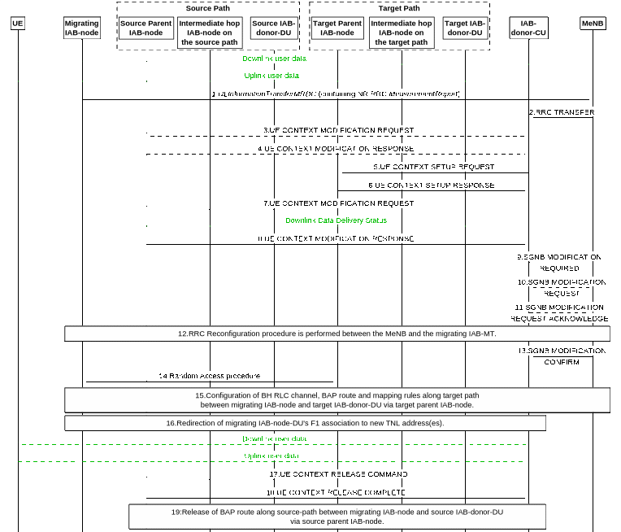
Figure 8.2.3.2-1: IAB intra-CU
topology adaptation procedure using MCG SRB in EN-DC
1. The migrating IAB-MT sends an ULInformationTransferMRDC
message to the MeNB
2. The MeNB sends RRC TRANSFER message to the IAB-donor-CU.
3. The IAB-donor-CU may send UE CONTEXT MODIFICATION REQUEST message
to the source parent node IAB-DU, to query the latest SCG
configuration.
4. The source parent node IAB-DU responds with a UE CONTEXT
MODIFICATION RESPONSE message that includes full configuration
information.
5. The IAB-donor-CU sends a UE CONTEXT SETUP REQUEST message to the
target parent node IAB-DU, to create a UE context for migrating
IAB-MT and set up one or more bearers. These bearers can be used by
the migrating IAB-MT for its own signalling, and, optionally, data
traffic. The UE CONTEXT SETUP REQUEST message includes CG-ConfigInfo.
6. The target parent node IAB-DU responds to the IAB-donor-CU with a
UE CONTEXT SETUP RESPONSE message.
7. The IAB-donor-CU sends a UE CONTEXT MODIFICATION REQUEST message
to the source parent node IAB-DU, this message includes the
Transmission Action Indicator IE, which instructs the source
parent node IAB-DU to stop the data transmission to the migrating
IAB-node. The source parent node IAB-DU also sends a Downlink Data
Delivery Status frame to inform the IAB-donor-CU about the
unsuccessfully transmitted downlink data to the migrating IAB-node.
8. The source parent node IAB-DU responds to the IAB-donor-CU with a
UE CONTEXT MODIFICATION RESPONSE message.
9. The IAB-donor-CU sends an SGNB MODIFICATION REQUIRED message to
the MeNB.
10/11. The MeNB initiated SgNB Modification procedure may be
triggered by the SgNB initiated SgNB Modification procedure (e.g. to
provide information such as data forwarding addresses, new SN
security key, measurement gap, etc.).
12. The MeNB and the migrating IAB-MT perform RRC Connection
Reconfiguration procedure. The RRCConnectionReconfiguration
message includes information as described for the intra-CU
topology adaptation procedure in SA in clause 8.2.3.1.
13. The MeNB sends an SGNB MODIFICATION CONFIRM message to the
IAB-donor-CU.
14. The migrating IAB-MT performs Random Access procedure at the
target parent node IAB-DU.
15-19. The remaining steps of the procedure follow the steps 11-15 of
the intra-CU topology adaptation procedure in SA scenario, as defined
in clause 8.2.3.1. The main difference is that the RRC message for
the migrating IAB-node, if involved, will be transmitted using the
MCG SRB.
8.2.3.3 Intra-CU topology adaptation procedure in NSA using SCG SRB
(SRB3)
This procedure is
used when the migrating IAB-MT moves from source parent node to
target parent node within the same IAB-donor-CU, when SCG SRB (SRB3)
is available for IAB-node during EN-DC operation. The target parent
node may use a different IAB-donor-DU than the source parent node.
The source path may have common nodes with the target path. The
procedure is the same as intra-CU topology adaptation procedure in SA
scenario as defined in clause 8.2.3.1 but the UE CONTEXT SETUP
REQUEST message includes CG-ConfigInfo in step 3.
8.2.4 Intra-CU topological redundancy procedure
The intra-CU
topological redundancy procedure enables the establishment and
release of redundant paths in the IAB-topology underneath the same
IAB-donor-CU. The redundant paths may use different IAB-donor-DUs.
They may also have common intermediate nodes. Since topological
redundancy uses NR-DC for the IAB-MT, it is only supported for
IAB-nodes operating in SA mode.
Figure 8.2.4-1 shows
an example for an IAB topology, where one IAB-node, referred to as
the dual-connecting IAB-node, has two paths towards the IAB-donor via
different IAB-donor-DUs.
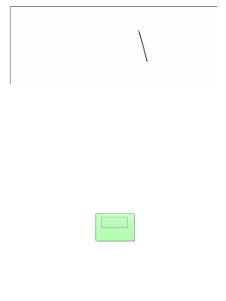
Figure 8.2.4-1: Example for IAB
topology with two redundant paths
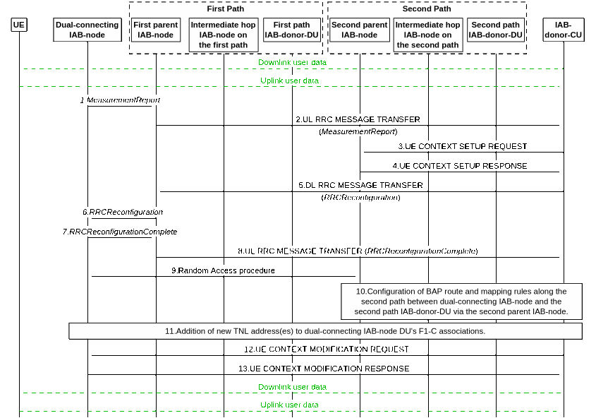
Figure 8.2.4-2: Procedure for
establishment of redundant path in IAB topology
Figure 8.2.4-2 shows
the procedure for the establishment of the second path. This
procedure has the following steps:
1. The dual-connecting IAB-MT sends a MeasurementReport
message to the first parent node IAB-DU. This report is based on a
Measurement Configuration the dual-connecting IAB-MT received from
the IAB-donor-CU before.
2. The first parent node IAB-DU sends an UL RRC MESSAGE TRANSFER
message to the IAB-donor-CU to convey the received MeasurementReport.
3. The IAB-donor-CU sends the UE CONTEXT SETUP REQUEST message to the
second parent node IAB-DU, to create the UE context for the
dual-connecting IAB-MT and to set up one or more bearers. These
bearers can be used by the dual-connecting IAB-MT for its own
signalling, and, optionally, data traffic.
4. The second parent node IAB-DU responds to the IAB-donor-CU with a
UE CONTEXT SETUP RESPONSE message.
5. The IAB-donor-CU sends a DL RRC MESSAGE TRANSFER message to the
first parent node IAB-DU, which includes a generated
RRCReconfiguration message. The RRCReconfiguration
message may contain one or more TNL address(es) for the
dual-connecting IAB-DU, which are anchored at the second-path
IAB-donor-DU. The IAB-donor-CU can proactively obtain these TNL
addresses from the second-path IAB-donor-DU. In case IPsec tunnel
mode is used to protect the F1 and non-F1 traffic, the allocated TNL
address is the outer IP address. The TNL address allocation is not
necessary if the first and second paths use the same IAB-donor-DU.
6. The first parent node IAB-DU forwards the received
RRCReconfiguration message to the dual-connecting IAB-MT.
7. The dual-connecting IAB-MT responds to the first parent node
IAB-DU with an RRCReconfigurationComplete message.
8. The first parent node IAB-DU sends an UL RRC MESSAGE TRANSFER
message to the IAB-donor-CU, to convey the received
RRCReconfigurationComplete message.
9. A Random Access procedure is performed at the second parent node
IAB-DU.
10. The IAB-donor-CU configures BH RLC channels and BAP-layer route
entries on the second path between dual-connecting IAB-node and
second-path IAB-donor-DU. These configurations may be performed at an
earlier stage, e.g. immediately after step 3.
11. The new TNL addresses allocated in step 5 (if any) are added to
the dual-connecting IAB-DU’s F1-C association(s) with the
IAB-donor-CU. The IAB-donor-CU may configure new UL BH information on
the second path for F1AP messages.
If new TNL addresses for F1-C traffic are configured, new SCTP
association(s) between the dual-connecting IAB-node and the
IAB-donor-CU may be established using the new TNL address information
of the dual-connecting IAB-node. The dual-connecting IAB-node sends
an F1AP gNB-DU CONFIGURATION UPDATE message to the IAB-donor-CU,
which may include new (outer) IP addresses and corresponding new
(inner) IP address for the F1-U traffic to be switched to the target
path.
12. The IAB-donor-CU may migrate the F1-U tunnels it has with the
dual-connecting IAB-DU from the first path to the second path via the
UE CONTEXT MODIFICATION REQUEST message.
13. The dual-connectivity IAB-DU replies with a UE CONTEXT
MODIFICATION RESPONSE message.
Steps 12 and 13 can
be performed for a subset of UE bearers, e.g., to balance the load
between the first and the second path.
In case the second
path is used for the dual-connecting IAB-node’s descendant node(s),
Steps 10 and 11 are also performed for the descendant node(s), as
follows:
When the second path uses a different IAB-donor-DU, the IAB-donor-CU
shall configure the descendent IAB-DU(s) with one or more new TNL
addresses, which are anchored on the IAB-donor-DU of the second path.
If needed, the IAB-donor-CU configures BH RLC channels, BAP-layer
route entries on the target path for the descendant nodes and the BH
RLC channel mappings on the descendant nodes in the same manner as
described for the dual-connecting IAB-node in step 10.
The descendant nodes’ new TNL addresses (if any) are added to the
descendant node IAB-DU’s F1-C association(s) with the IAB-donor-CU.
The IAB-donor-CU may configure UL BH information for the second path
to carry F1AP messages.
The IAB-donor-CU may migrate the F1-U tunnels it has with the
dual-connecting IAB-node’s descendant node(s) from the first path
to the second path, as described for step 12.
Based on implementation, these steps can be performed after or in
parallel with the redundant path addition of the dual connecting
IAB-node.
The IAB-donor-CU may
initiate the release of the redundant path by releasing the BAP
routing entries and modifying/releasing the BH RLC channels on that
path.
8.2.5 Intra-CU Backhaul RLF recovery for IAB-nodes in SA mode
The intra-CU
backhaul RLF recovery procedure for IAB-nodes in SA mode enables
migration of an IAB-node to another parent node underneath the same
IAB-donor-CU, when the IAB-MT declares a backhaul RLF. The
declaration of backhaul RLF is described in TS 38.331 [23].
NOTE: Determination of whether the recovery occurs at the same or at
a different IAB-donor-CU is up to implementation.
Figure 8.2.5-1 shows
an example of the BH RLF recovery procedure for an IAB-node in SA
mode. In this example, the IAB-node changes from its initial parent
node to a new parent node, where the new parent node is served by an
IAB-donor-DU different than the one serving its initial parent node.
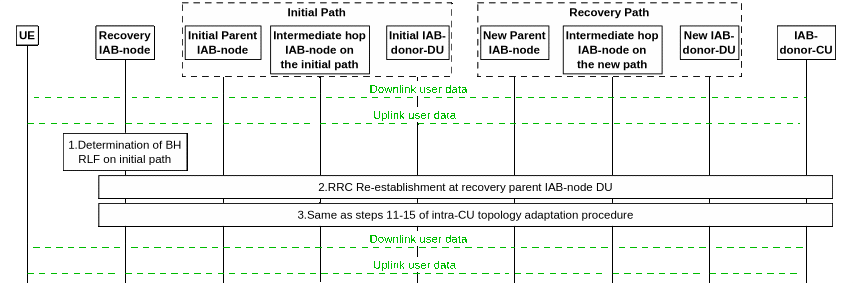
Figure 8.2.5-1: IAB intra-CU
backhaul RLF recovery procedure for an IAB-node in SA mode
1. The IAB-MT declares BH RLF for the MCG as described in TS 38.331
[23], clause 5.3.10.3.
2. The IAB-MT undergoing recovery from RLF conducts the RRC
re-establishment procedure at the new parent node, as defined in
clause 8.7. In this procedure, the IAB-donor-CU may provide new TNL
address(es), which is(are) anchored at the new IAB-donor-DU, to the
IAB-MT via RRC signalling. Furthermore, the IAB-donor-CU may also
provide a new default UL mapping which includes a
default BH RLC channel and a default BAP Routing ID for UL
F1-C/non-F1 traffic on the target path, to the IAB-node undergoing
recovery from RLF via RRCReconfiguration
message in this procedure.
3. The remaining part of the procedure follows the steps 11-15 of the
intra-CU topology adaptation procedure defined in clause 8.2.3.1.
Descendant node(s)
of the IAB-node undergoing recovery from RLF may also need to switch
to new TNL address(es) anchored in the target-path IAB-donor-DU
following the same mechanism as described for IAB intra-CU topology
adaptation procedure in clause 8.2.3.1. The descendant node(s) may
also be provided with new default UL mapping via RRC,
after the IAB-node undergoing recovery from RLF connects the
IAB-donor-CU via the recovery path.
8.3 Mechanism of centralized retransmission of lost PDUs
8.3.1 Centralized Retransmission in Intra gNB-CU Cases
This mechanism
allows to perform the retransmission of the PDCP PDUs that are not
delivered by a gNB-DU (gNB-DU1) because the corresponding radio links
toward the UE are subject to outage. When such outage occurs, the
gNB-DU affected by outage informs the gNB-CU of such event. The
gNB-CU can switch transmission of data traffic, as well as perform
retransmission of undelivered PDCP PDUs, from the gNB-DU affected by
outage to other available gNB-DUs (e.g. gNB-DU2 in Figure 8.3.1-1)
with a well-functioning radio link toward the UE. The mechanism is
also applicable in EN-DC and MR-DC with 5GC, refer to TS 37.340 [12].
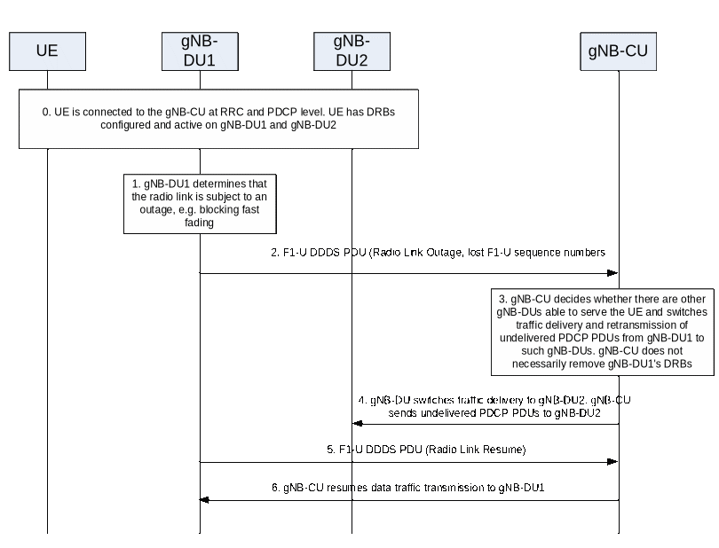
Figure 8.3.1-1: Procedure for
centralized retransmission in intra gNB-CU scenarios
The mechanism is
shown in Figure 8.3.1-1 and targets the multi-connectivity scenario,
where a UE is served by multiple data radio bearers established at
least on two gNB-DUs, and it includes the following steps:
0. The UE is connected and can transmit/receive data to/from gNB-DU1
and gNB-DU2.
1. gNB-DU1 realizes that the radio link towards the UE is
experiencing outage.
2. gNB-DU1 sends the "Radio Link Outage" notification
message to the gNB-CU over the F1-U interface, as part of the DDDS
PDU of the concerned data radio bearer. The message may include
information to be used by the gNB-CU to perform
retransmission of the PDCP PDUs that were not delivered by the
gNB-DU1 (e.g. the highest transmitted NR
PDCP Sequence Number, the highest
successfully delivered NR PDCP Sequence Number and the
lost NR-U Sequence Numbers).
3. gNB-CU decides to switch data traffic transmission and
retransmission of PDCP PDUs that were undelivered in gNB-DU1 via
gNB-DU2. gNB-CU stops sending downlink traffic to gNB-DU1. The radio
leg between gNB-DU1 and the UE is not necessarily removed.
4. gNB-CU starts sending traffic (namely new PDUs and potentially
retransmitted PDUs) to gNB-DU2.
5. If gNB-DU1 realizes that the radio link of the concerned data
radio bearer is back in normal operation, it may send a "Radio
Link Resume" notification message as part of the DDDS PDU over
the F1-U interface to inform the gNB-CU that the radio link can be
used again for the concerned data radio bearer.
6. gNB-CU may start sending traffic (namely new PDUs and potentially
retransmitted PDUs) of the concerned data radio bearer via gNB-DU1
again.
8.4 Multi-Connectivity operation
8.4.1 Secondary Node Addition
8.4.1.1 EN-DC
This clause gives
the SgNB addition procedure in EN-DC given that en-gNB consists of
gNB-CU and gNB-DU(s), as shown in Figure 8.4.1.1-1.
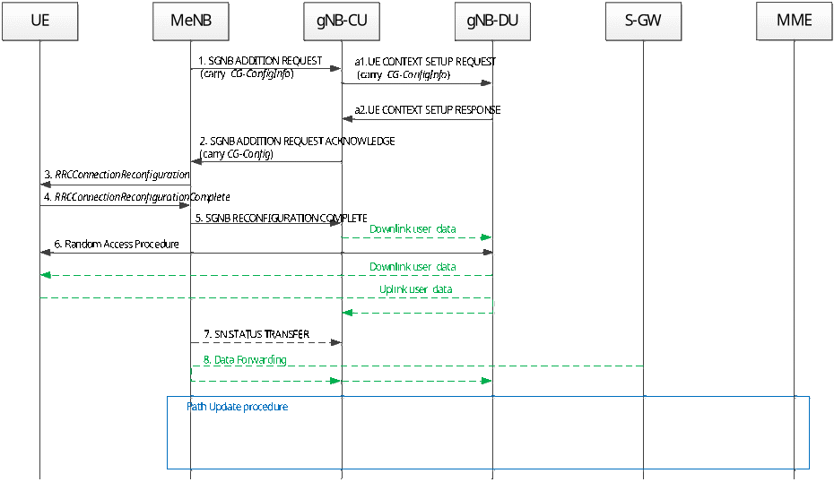
Figure 8.4.1.1-1: SgNB addition
procedure in EN-DC
1~8: refer to TS 37.340 [12].
a1. After receiving the SGNB ADDITION REQUEST message from MeNB, the
gNB-CU sends the UE CONTEXT SETUP REQUEST message to the gNB-DU to
create a UE context. As specified in TS 37.340 [12], in the course of
a Secondary Node Change, the UE CONTEXT SETUP REQUEST message may
contain source cell group configuration to allow gNB-DU to perform
delta configuration.
a2. The gNB-DU responds to the gNB-CU with the UE CONTEXT SETUP
RESPONSE message. In case the gNB-DU receives the UE CONTEXT SETUP
REQUEST message without the source cell group configuration or in the
course of a Secondary Node Change as specified in TS 37.340 [12] or
if the gNB-DU decides to perform full configuration after receiving
the source cell group configuration, it shall perform full
configuration and indicate that it has applied full configuration in
the UE CONTEXT SETUP RESPONSE message.
NOTE: On Inter-gNB-CU Mobility, same method is performed to achieve
full configuration and delta configuration.
8.4.2 Secondary Node Release (MN/SN initiated)
8.4.2.1 EN-DC
This clause gives
the SgNB release procedure in EN-DC given that the en-gNB consists of
a gNB-CU and gNB-DU(s).
MN initiated SN
Release
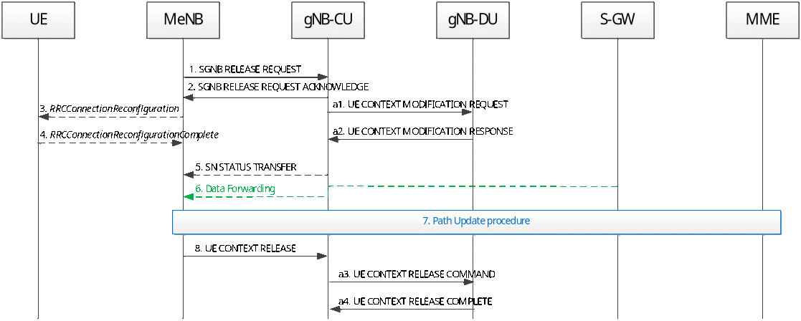
Figure 8.4.2.1-1 SgNB release
procedure in EN-DC (MN initiated)
1~8: refer to TS 37.340 [12].
NOTE: The timing of sending the Step 2 SGNB RELEASE REQUEST
ACKNOWLEDGE message is an example, it may be sent e.g. after step a1
or after a2 and it is up to implementation.
a1. After receiving SGNB RELEASE REQUEST message from MeNB, gNB-CU
sends the UE CONTEXT MODIFICATION REQUEST message to gNB-DU to stop
the data transmission for the UE. It is up to gNB-DU implementation
when to stop the UE scheduling.
a2. gNB-DU responds to gNB-CU with UE CONTEXT MODIFICATION RESPONSE
message.
a3. After receiving the UE CONTEXT RELEASE message from MeNB, the
gNB-CU sends the UE CONTEXT RELEASE COMMAND message to the gNB-DU to
release the UE context.
a4. The gNB-DU responds to the gNB-CU with the UE CONTEXT RELEASE
COMPLETE message.
SN
initiated SN Release
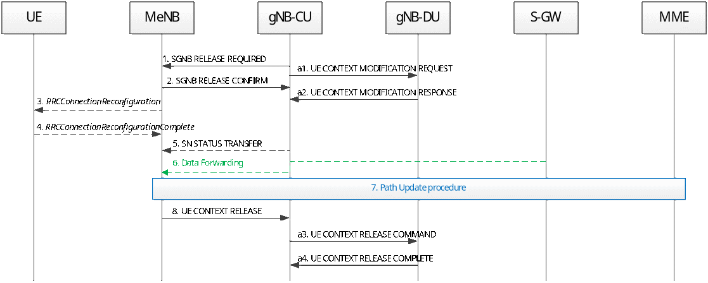
Figure 8.4.2.1-2 SgNB release
procedure in EN-DC (SN initiated)
1~8: refer to TS 37.340 [12].
a1. gNB-CU sends the UE CONTEXT MODIFICATION REQUEST message to
gNB-DU to stop the data transmission for the UE. It is up to gNB-DU
implementation when to stop the UE scheduling. This step may occur
before step 1.
a2. gNB-DU responds to gNB-CU with UE CONTEXT MODIFICATION RESPONSE
message.
a3. After receiving the UE CONTEXT RELEASE message from MeNB, the
gNB-CU sends the UE CONTEXT RELEASE COMMAND message to the gNB-DU to
release the UE context.
a4. The gNB-DU responds to the gNB-CU with the UE CONTEXT RELEASE
COMPLETE message.
8.4.3 SCG suspend/resume in RRC_INACTIVE
In the following,
the procedure for SCG resume in RRC_INACTIVE is described.
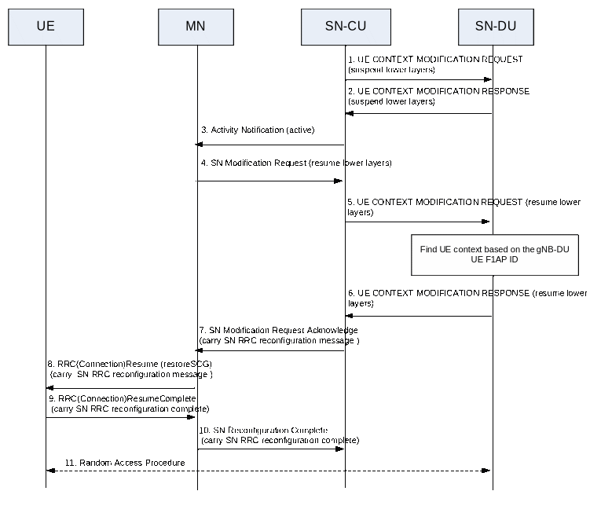
Figure 8.4.3-1: SCG Suspend/Resume
in RRC_INACTIVE
1. The CU of SN sends the UE CONTEXT MODIFICATION REQUEST message to
the DU of SN to suspend the SCG of the UE before the UE enters into
RRC_INACTIVE state from RRC_CONNECTED state.
2. The DU of SN sends the UE CONTEXT MODIFICATION RESPONSE to the CU
of SN, and keeps all lower layer configuration for UEs without
transmitting or receiving data from UE.
3~4: refer to TS 37.340 [12].
5. The CU of SN sends the UE CONTEXT MODIFICATION REQUEST message to
the DU of SN to resume the SCG of the UE before the UE enters into
RRC_CONNECTED state from RRC_INACTIVE state.
6. The DU of SN sends the UE CONTEXT MODIFICATION RESPONSE message to
the CU of SN, and uses the previously stored lower layer
configuration for the UE.
7~11: refer to TS 37.340 [12].
8.4.4 SCG Deactivation and Activation
This clause gives the NR SCG deactivation and activation
procedures in MR-DC given that the SN
consists of a gNB-CU and gNB-DU(s).
8.4.4.1 SN Addition with SCG Activation or Deactivation
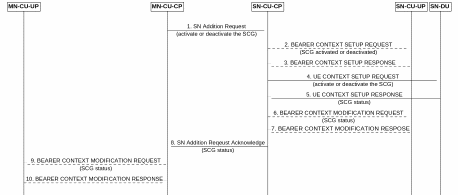
Figure 8.4.4.1-1: SCG Activation or
Deactivation in SN Addition procedure
1. The MN sends the SN Addition Request message to the SN, indicates
the request of SCG activation or deactivation.
2. The SN-CU-CP may send the BEARER CONTEXT
SETUP REQUEST message to the SN-CU-UP to setup bearer context and
notify the activation or deactivation of the SCG.
3. The SN-CU-UP sends the BEARER CONTEXT SETUP RESPONSE message to
the SN-CU-CP.
4. The SN-CU sends the UE CONTEXT SETUP REQUEST message to the SN-DU
to setup UE context and indicate the request of SCG activation or
deactivation.
5. The SN-DU sends the UE CONTEXT SETUP RESPONSE message to the
SN-CU, indicates the SCG status. In case SCG activation is requested,
the SN-DU shall indicate SCG activated in the message.
6. The SN-CU-CP may send the BEARER CONTEXT
MODIFICATION REQUEST message to the SN-CU-UP as described in clause
8.9.2 and may notify the SCG status if needed.
7. The SN-CU-UP sends the BEARER CONTEXT MODIFICATION RESPONSE
message to the SN-CU-CP.
8. The SN sends the SN Addition Request Acknowledge message to the
MN, indicates the SCG status. In case SCG activation is requested,
the SN shall indicate SCG activated in the message.
9. The MN-CU-CP may send the BEARER CONTEXT
MODIFICATION REQUEST message to the MN-CU-UP to notify the SCG
status.
10. The MN-CU-UP sends the BEARER CONTEXT
MODIFICATION RESPONSE message to the MN-CU-CP.
8.4.4.2 MN initiated SN Modification with SCG Activation or
Deactivation
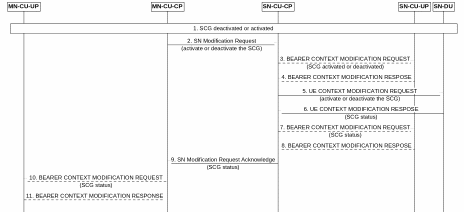
Figure 8.4.4.2-1: SCG Activation or
Deactivation in MN initiated SN Modification procedure
1. SCG is deactivated or activated.
2. The MN sends the SN Modification Request message to the SN,
indicates the request of SCG activation or deactivation.
3. The SN-CU-CP may send the BEARER CONTEXT
MODIFICATION REQUEST message to the SN-CU-UP to notify the SCG
activation or deactivation.
4. The SN-CU-UP sends the BEARER CONTEXT MODIFICATION RESPONSE
message to the SN-CU-CP.
5. The SN-CU sends the UE CONTEXT MODIFICATION REQUEST message to the
SN-DU to indicate the request of SCG activation or deactivation.
6. The SN-DU may send the UE CONTEXT
MODIFICATION RESPONSE message to the SN-CU, indicates the SCG status.
7. The SN-CU-CP sends the BEARER CONTEXT MODIFICATION REQUEST message
to the SN-CU-UP to notify the SCG status.
8. The SN-CU-UP sends the BEARER CONTEXT MODIFICATION RESPONSE
message to the SN-CU-CP.
NOTE: Step 7 and 8 may be skipped in case the SN-DU accepted the SCG
activation or deactivation request.
9. The SN sends the SN Modification Request Acknowledge message
towards the MN, indicates the SCG status.
10. The MN-CU-CP may send the BEARER CONTEXT
MODIFICATION REQUEST message to the MN-CU-UP to notify the SCG
status.
11. The MN-CU-UP
sends the BEARER CONTEXT MODIFICATION RESPONSE message to the
MN-CU-CP.
8.4.4.3 SN initiated SN Modification with SCG Activation or
Deactivation
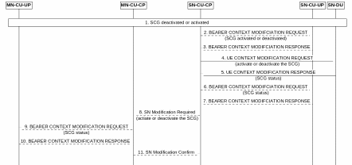
Figure 8.4.4.3-1: SCG Activation or
Deactivation in SN initiated SN Modification procedure
1. SCG is deactivated or activated.
2. The SN-CU-CP may send the BEARER CONTEXT
MODIFICATION REQUEST message to the SN-CU-UP to notify the SCG
activation or deactivation.
3. The SN-CU-UP sends the BEARER CONTEXT MODIFICATION RESPONSE
message to the SN-CU-CP.
4. The SN-CU sends the UE CONTEXT MODIFICATION REQUEST message to the
SN-DU to indicate the request of SCG activation or deactivation.
5. The SN-DU sends the UE CONTEXT MODIFICATION RESPONSE message to
the SN-CU, indicates the SCG status.
6. The SN-CU-CP may send the BEARER CONTEXT
MODIFICATION REQUEST message to the SN-CU-UP to notify the SCG
status.
7. The SN-CU-UP sends the BEARER CONTEXT MODIFICATION RESPONSE
message to the SN-CU-CP.
NOTE 1: Step 6 and 7 may be skipped in case the SN-DU accepted the
SCG activation or deactivation request.
8. The SN sends the SN Modification
Required message to the MN, indicates the request of SCG activation
or deactivation.
9. The MN-CU-CP may send the BEARER CONTEXT
MODIFICATION REQUEST message to the MN-CU-UP to notify the SCG
status.
10. The MN-CU-UP sends the BEARER CONTEXT
MODIFICATION RESPONSE message to the MN-CU-CP.
NOTE 2: Based on implementation, step 9 and 10 can be performed after
step 11.
11. The MN sends the SN Modification Confirm message to the SN.
NOTE 3: Step 8-11 are not performed in case the SN-DU rejected the
SCG activation or deactivation request.
8.5 F1 Startup and cells activation
This function allows
to setup the F1 interface between a gNB-DU and a gNB-CU and it allows
to activate the gNB-DU cells.
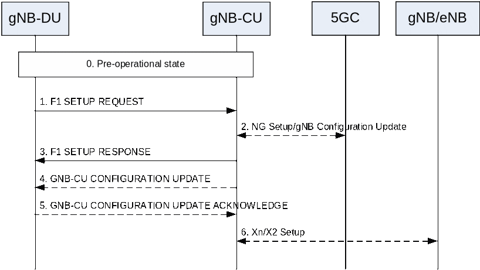
Figure 8.5-1: F1 startup and cell
activation
0. The gNB-DU and its cells are configured by OAM in the F1
pre-operational state. The gNB-DU has TNL connectivity toward the
gNB-CU.
1. The gNB-DU sends an F1 SETUP REQUEST message to the gNB-CU
including a list of cells that are configured and ready to be
activated. For each cell supporting NPN the gNB-DU includes NPN
specific information.
2. In NG-RAN, the gNB-CU ensures the connectivity toward the core
network. For this reason, the gNB-CU may initiate either the NG Setup
or the gNB Configuration Update procedure towards 5GC.
3. The gNB-CU sends an F1 SETUP RESPONSE message to the gNB-DU that
optionally includes a list of cells to be activated. The cells in the
list of cells to be activated in F1 SETUP RESPONSE message become
active, while the cells not in the list are inactive. The cells that
are active are Out-of-Service until the gNB-DU indicates that
they are In-Service . The gNB-DU will initiate the gNB-DU
Configuration Update procedure towards the gNB-CU and includes the
cell(s) that are In-Service and/or the cell(s) that are
Out-Of-Service. The gNB-DU may also indicate cell(s) to be
deleted, in which case the gNB-CU removes the corresponding cell(s)
information.
4. The gNB-CU may send a GNB CU CONFIGURATION UPDATE message to the
gNB-DU that optionally includes a list of cells to be activated,
e.g., in case that these cells were not activated using the F1 SETUP
RESPONSE message.
5. The gNB-DU replies with a GNB CU CONFIGURATION UPDATE ACKNOWLEDGE
message that optionally includes a list of cells that failed to be
activated. The gNB-CU regards all Active cells as Out-Of-Service
until the gNB-DU indicates that they are In-Service.
6. The gNB-CU may initiate either the Xn Setup towards a neighbour
NG-RAN node or the EN-DC X2 Setup procedure towards a neighbour eNB.
NOTE 1: For NG-RAN in case that the F1 SETUP RESPONSE message is not
used to activate any cell, step 2 may be performed after step 3.
Over the F1
interface between a gNB-CU and a gNB-DU pair, the following two Cell
States are possible:
- Inactive: the cell is known by both the gNB-DU and the
gNB-CU. The cell shall not serve UEs;
- Active: the cell is known by both the gNB-DU and the gNB-CU.
The cell should try to provide services to the UEs.
The gNB-CU decides
whether the Cell State should be “Inactive“ or “Active“. The
gNB-CU can request the gNB-DU to change the Cell State using the F1
SETUP RESPONSE, theGNB DU CONFIGURATION UPDATE ACKNOWLEDGE, or the
GNB CU CONFIGURATION UPDATE messages.
The gNB-DU reports
to the gNB-CU the Service Status. The Service Status is
the state of the radio transmission over the air. The Service
Status is reported by the gNB-DU for cells for which the Cell
State is “Active “. The following Service Status are
defined:
- In-Service: the cell is operational and able to serve UEs.
- Out-Of-Service: the cell is not operational, and it is not
able to serve UEs. The gNB-DU is trying to make the cell operational.
The gNB-DU reports
the Service Status using the GNB DU CONFIGURATION UPDATE
message.
NOTE 2: If gNB-DU regards that one or more cells cannot become
operational, the gNB-DU deletes them and reports them using the GNB
DU CONFIGURATION UPDATE message.
8.6 RRC state transition
8.6.1 RRC connected to RRC inactive
This clause gives
the RRC connected to RRC inactive state transition given that gNB
consists of gNB-CU and gNB-DU(s), as shown in Figure 8.6.1-1.
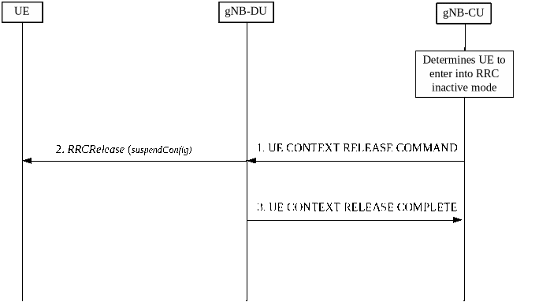
Figure 8.6.1-1: RRC connected to
RRC inactive state transition procedure
0. At first, the gNB-CU determines the UE to enter into RRC inactive
mode from connected mode.
1. The gNB-CU generates RRCRelease message which includes
suspend configuration towards UE. The RRC message is encapsulated in
UE CONTEXT RELEASE COMMAND message to the gNB-DU.
2. The gNB-DU forwards RRCRelease message to UE.
3. The gNB-DU responds with UE CONTEXT RELEASE COMPLETE message.
8.6.2 RRC inactive to other states
This clause gives
the RRC inactive to other RRC states transition given that gNB
consists of gNB-CU and gNB-DU(s), as shown in Figure 8.6.2-1.
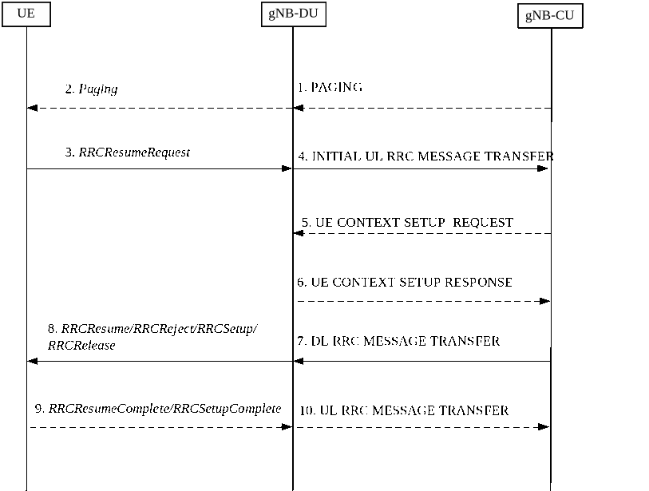
Figure 8.6.2-1: RRC inactive to
other RRC states transition procedure
1. If data is received from 5GC, the gNB-CU sends PAGING message to
the gNB-DU.
2. The gNB-DU sends Paging message to UE.
NOTE 1: Step 1 and 2 only exist in case of DL data arrival.
3. The UE sends RRCResumeRequest message either upon RAN-based
paging, UL data arrival or RNA update.
4. The gNB-DU includes RRCResumeRequest in a non-UE associated
INITIAL UL RRC MESSAGE TRANSFER message and transfer to the gNB-CU.
5. For UE Inactive to UE Active transitions, excluding transitions
due to signalling exchange only, the gNB-CU allocates gNB-CU UE F1AP
ID and sends UE CONTEXT SETUP REQUEST message to gNB-DU, which may
include SRB ID(s) and DRB ID(s) to be setup, CellGroupConfig stored
in gNB-CU or retrieved from the old NG-RAN node may also be included.
In case of NG-RAN sharing, the gNB-CU includes the serving PLMN ID
(in case of SNPNs the serving NID).
NOTE 1a: In case of CP/UP split architecture, if the UE context has
been retrieved from the old NG-RAN node, the security indication of
each PDU Session as communicated to the gNB-CU-UP represents the user
plane security activation status that the UE used at the last serving
cell.
6. The gNB-DU responds with UE CONTEXT SETUP RESPONSE message, which
contains RLC/MAC/PHY configuration of SRB and DRBs provided by the
gNB-DU.
NOTE 2: Step 5 and step 6 exist for inactive to active transitions,
excluding transitions due to signalling exchange only. When gNB-CU
successfully retrieves and verifies the UE context, it may decide to
let the UE enter into RRC active mode. gNB-CU shall trigger UE
context setup procedure between gNB-CU and gNB-DU, during which both
SRB1, SRB2 and DRB(s) can be setup. For signalling exchange only
transitions, gNB-CU does not trigger UE Context Setup procedure. For
inactive to Idle transitions the gNB-CU does not trigger the UE
Context Setup procedure.
7. The gNB-CU generates RRCResume/RRCSetup/RRCReject/RRCRelease
message or receives RRCRelease message from the old NG-RAN
node towards the UE. The RRC message is encapsulated in DL RRC
MESSAGE TRANSFER message together with SRB ID.
8. The gNB-DU forwards RRC message to the UE either over SRB0 or SRB1
as indicated by the SRB ID.
NOTE 3: In step 7, it is expected that gNB-CU takes appropriate
action, e.g. generates RRC resume message for inactive to active
state transition(for both cases of signaling exchange only, and UP
data exchange), generates RRCSetup message for fallback to
establish a new RRC connection, and generates or receives from the
old NG-RAN node either RRCRelease message without suspend
configuration for inactive to idle state transition, or RRCRelease
message with suspend configuration to remain in inactive state.
If
step 5 and 6 are not performed, the gNB-DU deduces the SRB on which
to deliver the RRC message in step 7 from the SRB ID, i.e. SRB ID “0”
corresponds to SRB0, SRB ID “1” corresponds to SRB1.
9. The UE sends RRCResumeComplete/RRCSetupComplete
message to the gNB-DU.
10. The gNB-DU encapsulates RRC in UL RRC MESSAGE TRANSFER message
and send to the gNB-CU.
NOTE 4: Step 9 and step 10 exist for inactive to active state
transition (for both cases of signaling exchange only, and UP data
exchange). UE generates RRCResumeComplete/RRCSetupComplete
message for resume the existing RRC connection or fallback to a new
RRC connection respectively.
8.7 RRC connection reestablishment
This procedure is
used for the case that UE tries to reestablish the RRC connection, as
shown in Figure 8.7-1.
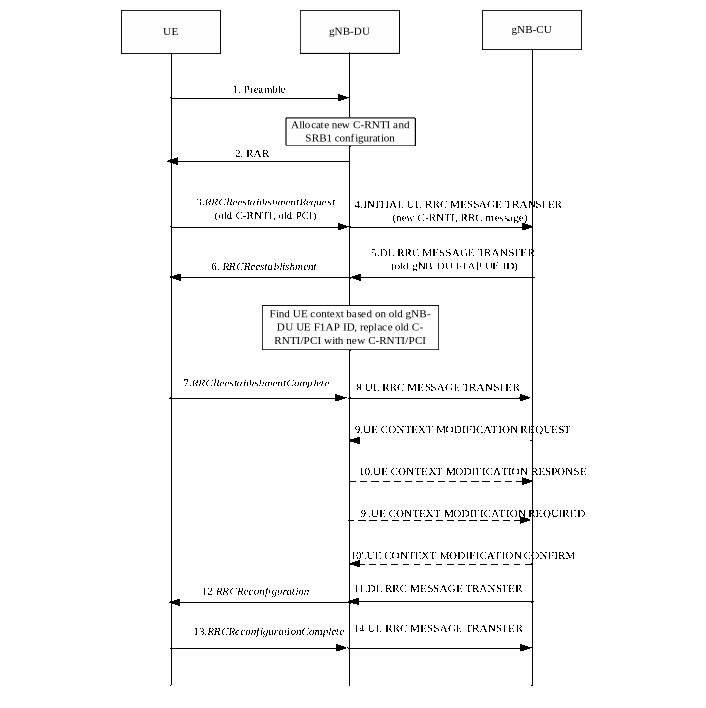
Figure 8.7-1: RRC connection
reestablishment procedure
1. The UE sends a preamble to the gNB-DU.
2. The gNB-DU allocates new C-RNTI and responds with RAR.
3. The UE sends an RRCReestablishmentRequest message to the
gNB-DU, which contains old C-RNTI and old PCI.
4. The gNB-DU includes the RRC message and, if the UE is admitted,
the corresponding low layer configuration for the UE in the INITIAL
UL RRC MESSAGE TRANSFER message and transfers to the gNB-CU. The
INITIAL UL RRC MESSAGE TRANSFER message includes the new C-RNTI. If
the gNB-DU identifies the UE as a Reduced Capability UE during the
random access procedure, a NR RedCap UE Indication or a NR eRedCap UE
Indication is provided in the INITIAL UL RRC MESSAGE TRANSFER
message.
5. The gNB-CU includes an RRCReestablishment message and
transfers to the gNB-DU. If the UE requests to re-establish RRC
connection in the last serving gNB-DU, the DL RRC MESSAGE TRANSFER
message shall include old gNB-DU UE F1AP ID.
6. The gNB-DU retrieves the UE context based on the old gNB-DU UE
F1AP ID, and replaces old C-RNTI/PCI with new C-RNTI/PCI. It sends
the RRCReestablishment message to UE.
7-8. The UE sends an RRCReestablishmentComplete message to the
gNB-DU. The gNB-DU encapsulates the RRC message in the UL RRC MESSAGE
TRANSFER message and sends to the gNB-CU.
9-10. The gNB-CU triggers an UE Context Modification procedure by
sending UE CONTEXT MODIFICATION REQUEST message, which may include
DRBs to be modified and released list. The gNB-DU responses with the
UE CONTEXT MODIFICATION RESPONSE message.
9'-10'. The gNB-DU triggers an UE Context Modification procedure by
sending UE CONTEXT MODIFICATION REQUIRED message, which may include
DRBs to be modified and released list. The gNB-CU responses with UE
CONTEXT MODIFICATION CONFIRM message.
NOTE 1: Here it is assumed that the UE accessed the original gNB-DU
where the UE context is available for that UE, and either steps 9-10
or steps 9’-10’ may be executed or both could be skipped.
NOTE 2: If the UE accessed from a gNB-DU other than the original one,
the gNB-CU should trigger the UE Context Setup procedure toward this
new gNB-DU.
11-12. The gNB-CU includes an RRCReconfiguration message into
the DL RRC MESSAGE TRANSFER message and transfers to the gNB-DU. The
gNB-DU forwards it to the UE.
13-14. The UE sends an RRCReconfigurationComplete message to
the gNB-DU, and the gNB-DU forwards it to the gNB-CU.
8.8 Multiple TNLAs for F1-C
In the following,
the procedure for managing multiple TNLAs for F1-C is described.
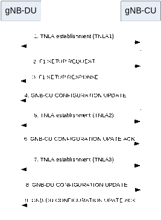
Figure 8.8-1: Managing multiple
TNLAs for F1-C.
1. The gNB-DU establishes the first TNLA with the gNB-CU using a
configured TNL address.
NOTE: The gNB-DU may use different source and/or destination IP end
point(s) if the TNL establishment towards one IP end point fails. How
the gNB-DU gets the remote IP end point(s) and its own IP address are
outside the scope of this specification.
2-3. Once the TNLA has been established, the gNB-DU initiates the F1
Setup procedure to exchange application level configuration data.
4-6. The gNB-CU may add additional TNL Endpoint(s) to be used for
F1-C signalling between the gNB-CU and the gNB-DU pair using the
gNB-CU Configuration Update procedure. The gNB-CU Configuration
Update procedure also allows the gNB-CU to request the gNB-DU to
modify or release TNLA(s).
7-9. The gNB-DU may add additional TNL association(s) to be used for
F1-C signalling using a gNB-CU endpoint already in use for existing
TNL associations between the gNB-CU and the gNB-DU pair. The gNB-DU
CONFIGURATION UPDATE message including the gNB-DU ID shall be the
first F1AP message sent on an additional TNLA of an already setup
F1-C interface instance after the TNL association has become
operational.
The F1AP UE TNLA
binding is a binding between a F1AP UE association and a specific TNL
association for a given UE. After the F1AP UE TNLA binding is
created, the gNB-CU can update the UE TNLA binding by sending the
F1AP message for the UE to the gNB-DU via a different TNLA. The
gNB-DU shall update the F1AP UE TNLA binding with the new TNLA. The
gNB-DU Configuration Update procedure also allows the gNB-DU to
inform the gNB-CU that the indicated TNLA(s) will be removed by the
gNB-DU.
8.9 Overall procedures involving E1 and F1
The following
clauses describe the overall procedures involving E1 and F1.
NOTE: The general principles and procedures described in this clause
also apply to ng-eNB and W1/E1 interface, i.e. W1 interface between
ng-eNB-DU and ng-eNB-CU-CP/ng-eNB-CU-UP, E1 interface between
ng-eNB-CU-CP and ng-eNB-CU-UP, if not explicitly specified otherwise.
8.9.1 UE Initial Access
The signalling flow
for UE Initial access involving E1 and F1 is shown in Figure 8.9.1-1.
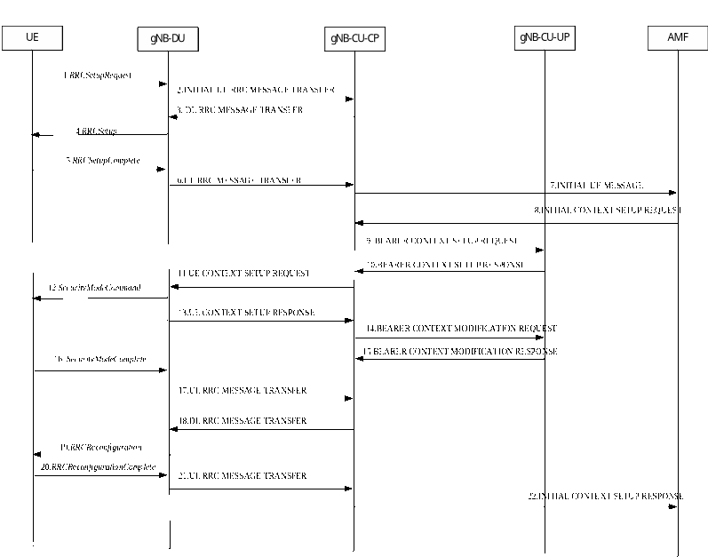
Figure 8.9.1-1: UE Initial Access
procedure involving E1 and F1
Steps 1-8 are defined in clause 8.1.
9. The gNB-CU-CP sends the BEARER CONTEXT SETUP REQUEST message to
establish the bearer context in the gNB-CU-UP.
10 The gNB-CU-UP sends the BEARER CONTEXT SETUP RESPONSE message to
the gNB-CU-CP, including F1-U UL TEID and transport layer address
allocated by the gNB-CU-UP.
Steps 11-13 are defined in clause 8.1.
14. The gNB-CU-CP sends the BEARER CONTEXT MODIFICATION REQUEST
message to the gNB-CU-UP, including F1-U DL TEID and transport layer
address allocated by the gNB-DU.
15. The gNB-CU-UP sends the BEARER CONTEXT MODIFICATION RESPONSE
message to the gNB-CU-CP.
Steps 16-22 are defined in clause 8.1.
NOTE: Steps 14-15 and steps 16-17 can happen in parallel, but both
are before step 18.
8.9.2 Bearer context setup over F1-U
Figure 8.9.2-1 shows
the procedure used to setup the bearer context in the gNB-CU-UP.
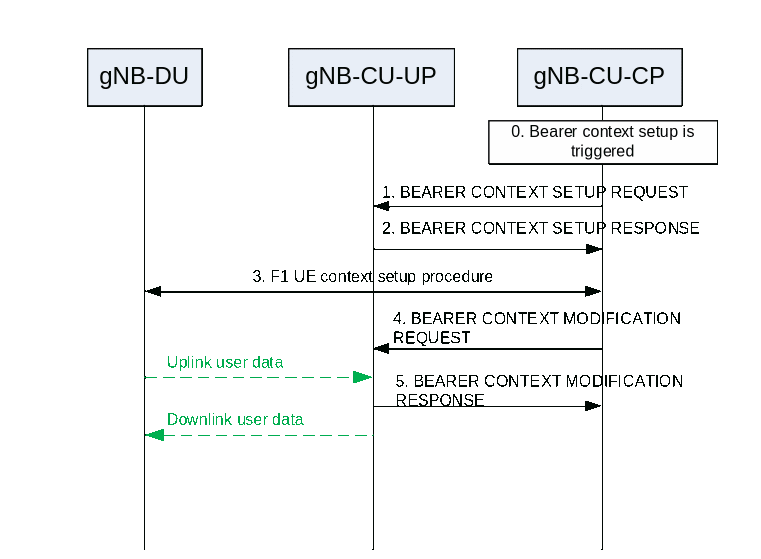
Figure 8.9.2-1: Bearer context
setup over F1-U
0. Bearer context setup (e.g., following an SGNB ADDITION REQUEST
message from the MeNB) is triggered in gNB-CU-CP.
1. The gNB-CU-CP sends a BEARER CONTEXT SETUP REQUEST message
containing UL TNL address information for S1-U or NG-U, and if
required, DL TNL address information for X2-U to setup the bearer
context in the gNB-CU-UP. For NG-RAN, the gNB-CU-CP decides
flow-to-DRB mapping and sends the generated SDAP and PDCP
configuration to the gNB-CU-UP.
NOTE 1: In case of Conditional Handover or Conditional PSCell
Addition/Change, the BEARER CONTEXT SETUP REQUEST message indicates
to ignore the included security context and not to initiate sending
downlink packets until the UE successfully accesses. Up to
implementation, the gNB-CU-CP may request to establish bearer context
as if a regular HO was requested.
2. The gNB-CU-UP responds with a BEARER CONTEXT SETUP RESPONSE
message containing the UL TNL address information for F1-U, and DL
TNL address information for S1-U or NG-U, and if required, UL TNL
address information for X2-U or Xn-U.
NOTE 2: The indirect data transmission for split bearer through the
gNB-CU-UP is not precluded.
3. F1 UE context setup procedure is performed to setup one or more
bearers in the gNB-DU.
4. The gNB-CU-CP sends a BEARER CONTEXT MODIFICATION REQUEST message
containing the DL TNL address information for F1-U or Xn-U, and PDCP
status.
NOTE 3: In case the indirect path
indication is received in step 4, the
gNB-CU-UP may not discard the DL data based on the Downlink Data
Delivery Status frame received from the gNB-DU. During the inter-gNB
indirect-to-direct or
indirect-to-indirect path switching,
the source gNB-CU-UP forwards the buffered
DL data to the target gNB as specified in TS 38.300 [2].
In case of the PDCP duplication, the gNB-CU-UP should not request the
discard of the duplicated DL data to the gNB-DU for the direct path
based on the Downlink Data Delivery Status frame received from the
gNB-DU for the indirect path, and only act as specified in TS 38.323
[36].
5. The gNB-CU-UP responds with a BEARER CONTEXT MODIFICATION RESPONSE
message.
8.9.3 Bearer context release over F1-U
8.9.3.1 gNB-CU-CP initiated bearer context release
Figure 8.9.3.1-1
shows the procedure used to release the bearer context in the
gNB-CU-UP initiated by the gNB-CU-CP.
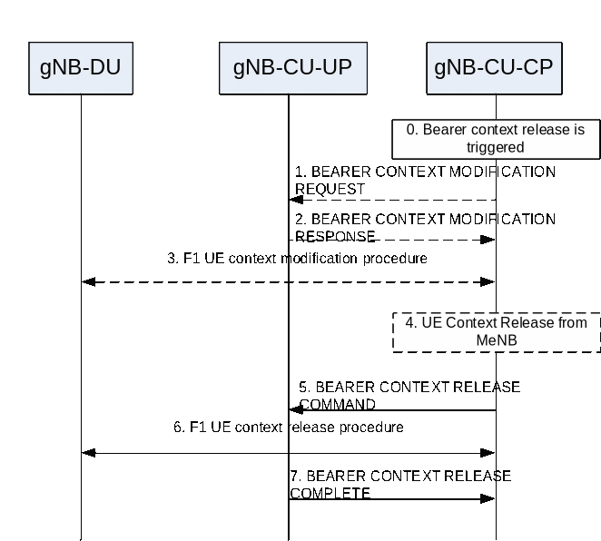
Figure 8.9.3.1-1: Bearer context
release over F1-U – gNB-CU-CP initiated
0. Bearer context release (e.g., following an SGNB RELEASE REQUEST
message from the MeNB) is triggered in gNB-CU-CP.
1. The gNB-CU-CP sends a BEARER CONTEXT MODIFICATION REQUEST message
to the gNB-CU-UP.
2. The gNB-CU-UP responds with a BEARER CONTEXT MODIFICATION RESPONSE
carrying the PDCP UL/DL status.
3. F1 UE context modification procedure is performed to stop the data
transmission for the UE. It is up to gNB-DU implementation when to
stop the UE scheduling.
NOTE: step 1-3 are performed only if the PDCP status of the bearer(s)
needs to be preserved e.g., for bearer type change.
4. The gNB-CU-CP may receive the UE CONTEXT RELEASE message from the
MeNB in EN-DC operation as described in clause 8.4.2.1.
5. and 7. Bearer context release procedure is performed.
6. F1 UE context release procedure is performed to release the UE
context in the gNB-DU.
8.9.3.2 gNB-CU-UP initiated bearer context release
Figure 8.9.3.2-1
shows the procedure used to release the bearer context in the
gNB-CU-UP initiated by the gNB-CU-UP.
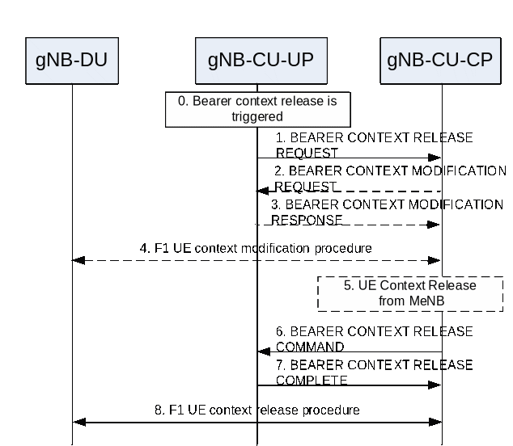
Figure 8.9.3.2-1: Bearer context
release over F1-U – gNB-CU-UP initiated
0. Bearer context release is triggered in gNB-CU-UP e.g., due to
local failure.
1. The gNB-CU-UP sends a BEARER CONTEXT RELEASE REQUEST message to
request the release of the bearer context in the gNB-CU-UP. This
message may contain the PDCP status.
2.- 5. If the PDCP status needs to be preserved, the E1 Bearer
Context Modification and the F1 UE Context Modification procedures
are performed. The E1 Bearer Context Modification procedure is used
to convey data forwarding information to the gNB-CU-UP. The gNB-CU-CP
may receive the UE Context Release from the MeNB.
6. The gNB-CU-CP sends a BEARER CONTEXT RELEASE COMMAND message to
release the bearer context in the gNB-CU-UP.
7. The gNB-CU-UP responds with a BEARER CONTEXT RELEASE COMPLETE to
confirm the release of the bearer context including also data
forwarding information.
8. F1 UE context release procedure may be performed to release the UE
context in the gNB-DU.
8.9.4 Inter-gNB handover involving gNB-CU-UP change
Figure 8.9.4-1 shows
the procedure used for inter-gNB handover involving gNB-CU-UP change.
Overall inter-gNB handover procedure is specified in TS 37.340 [12].
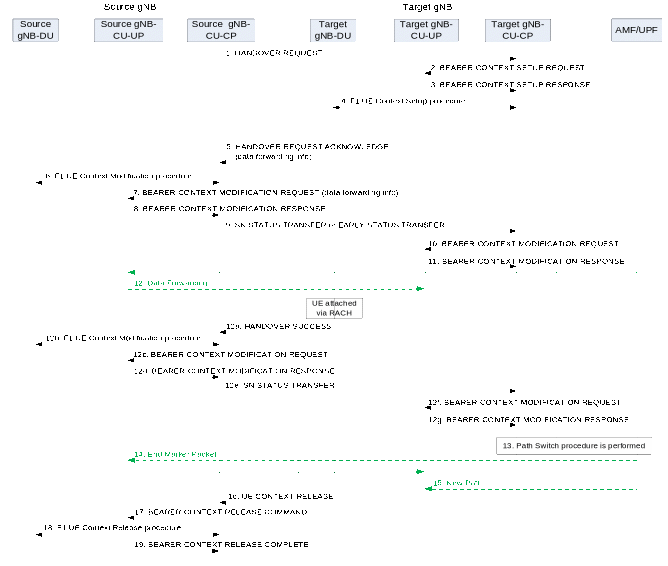
Figure 8.9.4-1: Inter-gNB handover
involving gNB-CU-UP change
1. The source gNB-CU-CP sends HANDOVER REQUEST message to the target
gNB-CU-CP. In case of Conditional Handover, the target gNB is
regarded as a candidate gNB which is only accessed by the UE when the
CHO condition(s) are fulfilled.
2-4. Bearer Context Setup procedure is performed as described in
clause 8.9.2.
5. The target gNB-CU-CP responds the source gNB-CU-CP with an
HANDOVER REQUEST ACKNOWLEDGE message.
NOTE 1: In case of Conditional Handover, it is up to target gNB-CU-CP
implementation to make sure that the EARLY STATUS TRANSFER
information is forwarded to the right gNB-CU-UP (e.g. separate
UE-associated signalling connection over Xn interface for each
gNB-CU-UP).
6. The F1 UE Context Modification procedure is performed to send the
handover command to the UE, and to indicate to stop the data
transmission for the UE.
NOTE 2: In case of DAPS Handover or Conditional Handover, the F1 UE
Context Modification procedure in step 6 does not indicate to stop
the data transmission for the UE. Instead, the F1 DL RRC Message
Transfer procedure can be used which carries the handover command to
the UE.
7-8. Bearer Context Modification procedure (gNB-CU-CP initiated) is
performed to enable the gNB-CU-CP to retrieve the PDCP UL/DL status
and to exchange data forwarding information for the bearer.
9. The source gNB-CU-CP sends an SN STATUS TRANSFER message to the
target gNB-CU-CP.
NOTE 3: In case of DAPS Handover, the EARLY STATUS TRANSFER message
is sent for DRBs configured with DAPS instead
of the SN STATUS TRANSFER message.
NOTE 4: In case of Conditional Handover, the EARLY STATUS TRANSFER
message is sent only if early data forwarding is applied.
NOTE 5: The COUNT related info for the EARLY STATUS TRANSFER message
is retrieved from the source gNB-CU-UP via the steps 7/8.
10-11. Bearer Context Modification procedure is performed as
described in clause 8.9.2. The target gNB-CU-CP does not transfer the
PDCP UL/DL status carried from the SN STATUS TRANSFER message to the
target gNB-CU-UP if the PDCP status does not need to be preserved
(e.g. full configuration). In case of DAPS Handover or Conditional
Handover, the COUNT related info carried by the EARLY STATUS TRANSFER
message is provided to the target gNB-CU-UP.
12. Data Forwarding may be performed from the source gNB-CU-UP to the
target gNB-CU-UP.
NOTE 6: In case of Conditional Handover, the UE performs RACH when
the CHO condition(s) are fulfilled. Once successfully accessed, the
target gNB-DU sends an ACCESS SUCCESS message to inform the target
gNB-CU-CP of which cell the UE has accessed through. The target
gNB-CU-CP may forward to the target gNB-CU-UP, necessary information
for sending downlink packets (i.e. DL TNL address information for
F1-U and UP security information corresponding to the accessed cell),
via a Bearer context modification procedure. The target gNB-CU-CP may
initiate Bearer context release procedure toward the other signalling
connections or other candidate target gNB-CU-UPs, if any, to release
the prepared conditional handover resources for the UE.
12a. In case of DAPS Handover or Conditional Handover, the target
gNB-CU-CP sends the HANDOVER SUCCESS message to the source gNB-CU-CP
to inform that the UE has successfully accessed the target cell.
12b In case of DAPS Handover or Conditional Handover, the F1 UE
Context Modification procedure is performed to indicate to stop the
data transmission for the UE.
12c-12d. In case of DAPS Handover or Conditional Handover, the Bearer
context modification procedure (gNB-CU-CP initiated) is performed to
indicate the source gNB-CU-UP to stop packet delivery and also to
retrieve the PDCP UL/DL status.
12e. In case of DAPS Handover or Conditional Handover, the source
gNB-CU-CP sends the SN STATUS TRANSFER message to the target
gNB-CU-CP.
12f-12g. In case of DAPS Handover or Conditional Handover, the Bearer
context modification procedure is performed to provide the PDCP UL/DL
status to the target gNB-CU-UP only if the PDCP status needs to be
preserved as described in TS 38.300 [2].
NOTE 7: In case of Conditional Handover,
inactivity monitoring is performed after step 12g.
13-15. Path Switch procedure is performed to update the DL TNL
address information for the NG-U towards the core network.
16. The target gNB-CU-CP sends an UE CONTEXT RELEASE message to the
source gNB-CU-CP.
17. and 19. Bearer Context Release procedure is performed.
18. F1 UE Context Release procedure is performed to release the UE
context in the source gNB-DU.
8.9.5 Change of gNB-CU-UP
Figure 8.9.5-1 shows
the procedure used for the change of gNB-CU-UP within a gNB.
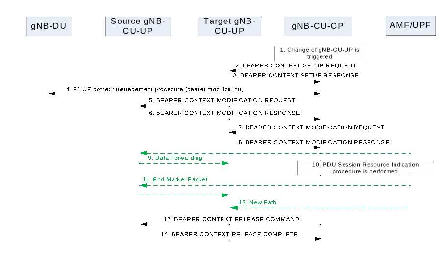
���Figure 8.9.5-1: Change of
gNB-CU-UP
1. Change of gNB-CU-UP is triggered in gNB-CU-CP based on e.g.,
measurement report from the UE.
2-3. Bearer Context Setup procedure is performed as described in
clause 8.9.2.
4. F1 UE Context Modification procedure is performed to change the UL
TNL address information for F1-U for one or more bearers in the
gNB-DU.
5-6. Bearer Context Modification procedure (gNB-CU-CP initiated) is
performed to enable the gNB-CU-CP to retrieve the PDCP UL/DL status
and to exchange data forwarding information for the bearer.
7-8. Bearer Context Modification procedure is performed as described
in clause 8.9.2.
9. Data Forwarding may be performed from the source gNB-CU-UP to the
target gNB-CU-UP.
10-12. PDU Session Resource Modify Indication procedure is performed
to update the DL TNL address information for the NG-U towards the
core network.
13-14. Bearer Context Release procedure (gNB-CU-CP initiated) is
performed as described in clause 8.9.3.
8.9.6 RRC State transition
8.9.6.1 RRC Connected to RRC Inactive
The procedure for
changing the UE state from RRC-connected to RRC-inactive is shown in
Figure 8.9.6.1-1.
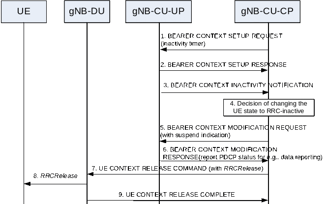
Figure 8.9.6.1-1: RRC Connected to
RRC Inactive state transition.
1. The gNB-CU-CP sends BEARER CONTEXT SETUP REQUEST message with
UE/PDU session/DRB level inactivity timer.
2. The gNB-CU-UP sends BEARER CONTEXT SETUP RESPONSE message.
3. The gNB-CU-UP sends BEARER CONTEXT INACTIVITY NOTIFICATION message
with inactivity monitoring results.
4. The gNB-CU-CP determines that the UE should enter RRC-inactive
(e.g., after receiving Bearer Context Inactivity Notification
procedure).
5. The gNB-CU-CP sends BEARER CONTEXT MODIFICATION REQUEST message
with a Bearer Context Status Change to the gNB-CU-UP, which indicates
that the UE is entering RRC-inactive state. The gNB-CU-CP keeps the
F1 UL TEIDs.
6. The gNB-CU-UP sends the BEARER CONTEXT MODIFICATION RESPONSE
message including the PDCP UL and DL status that may be needed for
e.g., data volume reporting. The gNB-CU-UP keeps the Bearer Context,
the UE-associated logical E1-connection, the NG-U related resource
(e.g., NG-U DL TEIDs) and the F1 UL TEIDs.
7. The gNB-CU-CP sends the UE CONTEXT RELEASE COMMAND message to the
gNB-DU serving the UE, together with the RRCRelease message to
be sent to the UE.
NOTE: step 5 and step 7 can be performed at the same time.
8. The gNB-DU sends the RRCRelease message to the UE.
9. The gNB-DU sends the UE CONTEXT RELEASE COMPLETE message to the
gNB-CU-CP.
8.9.6.2 RRC Inactive to other states
The procedure for
changing the UE state from RRC-inactive to RRC-connected is shown in
Figure 8.9.6.2-1.
Figure 8.9.6.2-1: RRC Inactive to
RRC Connected state transition.
0. The gNB-CU-UP receives DL data on NG-U interface.
1. The gNB-CU-UP sends DL DATA NOTIFICATION message to the gNB-CU-CP.
2. The gNB-CU-CP sends PAGING message to the gNB-DU.
3. The gNB-DU sends the Paging message to the UE.
NOTE 1: steps 0-3 are needed only in case of DL data.
4. The UE sends RRCResumeRequest message either upon RAN
paging or UL data arrival.
5. The gNB-DU sends the INITIAL UL RRC MESSAGE TRANSFER message to
the gNB-CU-CP.
6. The gNB-CU-CP sends UE CONTEXT SETUP REQUEST message including the
stored F1 UL TEIDs to create the UE context in the gNB-DU.
7. The gNB-DU responds with the UE CONTEXT SETUP RESPONSE message
including the F1 DL TEIDs allocated for the DRBs.
8. The gNB-CU-CP and the UE perform the RRC-Resume procedure via the
gNB-DU.
9. The gNB-CU-CP sends BEARER CONTEXT MODIFICATION REQUEST message
with a RRC Resume indication, which indicates that the UE is resuming
from RRC-inactive state. The gNB-CU-CP also includes the F1 DL TEIDs
received from the gNB-DU in step 7.
10. The gNB-CU-UP responds with theBEARER CONTEXT MODIFICATION
RESPONSE message.
NOTE 2: steps 8 and 9 can be performed in parallel.
8.9.7 Trace activation/deactivation over F1 and E1
Figure 8.9.6-1 shows
the procedure used for the activation and the deactivation of UE
traces in the gNB-DU, the gNB-CU-UP or both.
Figure 8.9.6-1: Trace
activation/deactivation over F1 and E1
1. The gNB-CU-CP receives a TRACE START message from the AMF or the
MeNB (in case of EN-DC).
2. The gNB-CU-CP initiates the Trace Start procedure by sending a
TRACE START message to the gNB-DU, the gNB-CU-UP or both.
3. Upon reception of the TRACE START message, the gNB-DU, the
gNB-CU-UP or both initiate the requested trace session and report it
as described in TS 32.422 [20].
4. The gNB-CU-CP receives a DEACTIVATE TRACE message from the AMF or
the MeNB (in case of EN-DC).
5. The gNB-CU-CP initiates the Deactivate Trace procedure by sending
a DEACTIVATE TRACE message to the gNB-DU, the gNB-CU-UP or both.
6. Upon reception of the DEACTIVATE TRACE message, the gNB-DU, the
gNB-CU-UP or both stop the trace session for the indicated trace
reference.
8.9.8 BH RLC channel establishment procedure
NOTE: The general principles and procedures described in this clause
does not apply to ng-eNB
The
BH RLC channel is an RLC channel used for backhauling between
IAB-node and IAB-donor-DU, or between different IAB-nodes. The
BH RLC channel establishment may be triggered by a UE accessing the
network and establishing a DRB.
Figure 8.9.8-1:
Signalling flow for IAB BH RLC channel
establishment procedure
1. The IAB-donor-CU sends to the IAB-donor-DU a UE
CONTEXT MODIFICATION REQUEST message for setting up the parent-node
IAB-DU side of the BH link between IAB-donor-DU
and IAB-node 1. This step is optional and is required only when a new
BH RLC channel needs to be established on the BH link between
IAB-donor-DU and IAB-node 1.
2. The IAB-donor-DU sends the UE CONTEXT
MODIFICATION RESPONSE message to the IAB-donor-CU.
3. The IAB-donor-CU sends to the IAB-donor-DU a DL
RRC MESSAGE TRANSFER message encapsulating the RRCReconfiguration
message for configuring the IAB-MT of IAB-node 1. This step is
optional and is required only when a new BH RLC channel needs to be
established on the BH link between IAB-donor-DU and IAB-node 1.
4. The IAB-donor-DU decapsulates and forwards the
RRCReconfiguration message to the
IAB-MT of IAB-node 1. This step is optional and is required only when
a new BH RLC channel needs to be established on the BH link between
IAB-donor-DU and IAB-node 1.
5. The IAB-MT of IAB-node 1 sends to the
IAB-donor-DU an RRCReconfigurationComplete
message destined to the IAB-donor-CU. This step is optional and is
required only when a new BH RLC channel needs to be established on
the BH link between IAB-donor-DU and IAB-node 1.
6. The IAB-donor-DU sends the UL RRC MESSAGE
TRANSFER message encapsulating the RRCReconfigurationComplete
message to the IAB-donor-CU. This step is optional and is required
only when a new BH RLC channel needs to be established on the BH link
between IAB-donor-DU and IAB-node 1.
7. The IAB-donor-CU sends to the IAB-DU of
IAB-node 1 a UE CONTEXT MODIFICATION REQUEST message for setting up
the parent node IAB-DU side of the BH link between IAB-node 1 and
IAB-node 2. This step is optional and is required only when a new BH
RLC channel needs to be established on the BH link between IAB-node 1
and IAB-node 2.
8. The IAB-node 1 sends the UE CONTEXT
MODIFICATION RESPONSE message to the IAB-donor-CU.
9. The IAB-donor-CU sends to the IAB-DU of
IAB-node 1 a DL RRC MESSAGE TRANSFER message encapsulating the
RRCReconfiguration
message for configuring the IAB-MT of IAB-node 2. This step is
optional and is required only when a new BH RLC channel needs to be
established on the BH link between IAB-node 1 and IAB-node 2.
10. The IAB-DU of IAB-node 1 decapsulates and
forwards the RRCReconfiguration
message to the IAB-MT of IAB-node 2. This step is optional and is
required only when a new BH RLC channel needs to be established on
the BH link between IAB-node 1 and IAB-node 2.
11. The IAB-MT of IAB-node 2 sends to IAB-node 1
an RRCReconfigurationComplete
message destined to the IAB-donor-CU. This step is optional and is
required only when a new BH RLC channel needs to be established on
the BH link between IAB-node 1 and IAB-node 2.
12. IAB-node 1 sends the UL RRC MESSAGE TRANSFER
message encapsulating the RRCReconfigurationComplete
message to the IAB-donor-CU. This step is optional and is required
only when a new BH RLC channel needs to be established on the BH link
between IAB-node 1 and IAB-node 2.
The
IAB-donor-CU uses the existing CU-DU split principles and the UE
Context Setup procedure or UE Context Modification procedure to
configure the parent IAB-DU side of the BH RLC channel. The
IAB-donor-CU uses RRC signaling (which is encapsulated in the DL RRC
MESSAGE TRANSFER message terminating at the parent node IAB-DU side
of the BH RLC channel) to configure the child node IAB-MT side of the
BH RLC channel.
The IAB-donor-CU
configures the IAB-DU with a mapping to the BH RLC channel to be used
for a specific UL F1-U tunnel during the UE Context Setup procedure
or the F1-AP UE Context Modification procedure for the UE.
8.9.9 Traffic Mapping
NOTE: The general principles and procedures described in this clause
does not apply to ng-eNB.
8.9.9.1 Traffic Mapping from IP-layer to Layer-2
When forwarding IP
packets, the IAB-donor-DU performs the traffic mapping from IP-layer
to layer-2 as defined in TS 38.340 [22]. The traffic mapping
information is configured by the IAB-donor-CU, which
contains the IP header information, and the BH information including
the BAP routing ID and a list of egress link and BH RLC channel
pairs.
Multiple traffic
mappings can contain the same BAP routing ID and/or list of egress
link and BH RLC channel pairs.
The traffic mappings
can be configured as part of the UE Context Setup or UE Context
Modification procedures. They may also be configured via the
non-UE-associated BAP Mapping Configuration procedure.
NOTE 1: Implementation must ensure the avoidance of potential race
conditions, i.e. no conflicting configurations are concurrently
performed using UE-associated and non-UE-associated procedures.
The traffic mapping from IP-layer to layer-2 may include IPv6 Flow
Label information. For DL F1 or X2 traffic, the IPv6 Flow Label
information is set by the IAB-donor-CU or MeNB, respectively. When
this traffic is protected via IPsec tunnel mode, the IPv6 Flow Label
is set on the inner header by the IAB-donor-CU or MeNB, and the
security gateway shall copy the IPv6 Flow Label from the inner IP
header to the outer IP header to ensure that the IAB-donor-DU can
perform the traffic mapping considering the IPv6 Flow Label.
NOTE 2: Implementation must ensure that IPv6 Flow Label collisions
are avoided on the IP backhaul network between security gateway and
IAB-donor-DU.
8.9.9.2 BH RLC Channel Mapping on BAP Layer
When
traffic is forwarded on BAP layer as described in TS 38.300 [2], the
IAB-node performs the BH RLC channel mapping as defined in TS 38.340
[22]. The BH RLC channel mapping information is configured by
the IAB-donor-CU.
The BH RLC channel
mappings can be configured as part of the UE Context Setup or UE
Context Modification procedures. They may also be configured via the
non-UE-associated BAP Configuration procedure.
NOTE: Implementation must ensure the avoidance of potential race
conditions, i.e. that no conflicting configurations are concurrently
performed using UE-associated and non-UE-associated procedures.
8.9.10 IAB-node release
NOTE: The general principles and procedures described in this clause
does not apply to ng-eNB.
An
IAB-node may depart the network either in an orderly fashion, which
implies that both the network and the IAB-node are aware in advance,
or in a disorderly fashion (e.g. due to an RLF with failed recovery).
8.9.10.1 IAB-node orderly release
For
orderly release, the IAB-donor-CU can remove the F1 interface
connection to the IAB-DU without releasing the IAB-MT. If the IAB-MT
needs to be released, IAB-MT will perform the deregistration
procedure. If both F1 interface and IAB-MT need to be released, the
IAB-donor-CU should remove the F1 interface to the IAB-DU before it
releases the collocated IAB-MT. The deregistration
procedure is the same as the UE deregistration procedure. The
IAB-donor-CU hands over the UEs or child IAB-nodes currently
connected to the IAB-node’s cell(s) to another cell(s), or releases
the UEs and may stop accepting incoming handovers or connections to
the IAB-node that is about to be released. The IAB-donor-CU may also
update/release the BH RLC channels in the intermediate hops. At this
point, the F1 interface will be released and the corresponding SCTP
associations will be removed.
8.9.10.2 IAB-node disorderly release
For
the disorderly release case, how to remove the IAB-node context is up
to network implementation.
8.9.11 IAB-node OAM
NOTE 0: The general principles and procedures described in this
clause does not apply to ng-eNB.
The IAB-node
receives commands, configuration data and software downloads (e.g.
for equipment software upgrades) from its OAM system. The IAB-node
can also send alarms and traffic counter information to its OAM
system. The transport connection between the IAB-node and its OAM,
using IP, is provided by the IAB-MT’s PDU session via 5G network,
or the IAB-MT’s PDN connection via LTE network when IAB-MT uses
EN-DC.
NOTE 1: The transport connection between the IAB-node and its OAM may
also be provided using the Backhaul IP layer by implementation.
Alarms in the IAB
generate bursts of high-priority traffic, to be transported in real
time. Traffic counters generate bursts of traffic, but their
transport need not be real-time. Configuration messages from OAM to
the IAB will also generate small bursts of traffic, possibly with
lower priority than alarms but still delay-sensitive: when a
configuration is committed on the OAM, the time interval between the
commitment and the effect on the equipment shall be small. Alarm
messages and commands should be transported on a high-priority
bearer, while counters may be transported on a lower priority bearer.
OAM software
download to the IAB may generate larger amounts of data, but both the
required data rate and the priority of this kind of traffic are much
lower than in the case of alarms, commands and counters.
For different types
of OAM traffic, it is necessary to use different DRBs between the
IAB-MT and the serving DU, and different BH RLC channels for
intermediate hops, with different QoS parameters. Aggregation of F1-U
traffic for OAM with other F1-U traffic on the same BH RLC channels
is not precluded. The QoS parameters are provided to the IAB-donor
during the IAB-MT’s PDU session establishment, or the IAB-MT’s
PDN connection establishment when IAB-MT uses EN-DC.
NOTE 2: When the transport connection between the IAB-node and its
OAM is provided by the Backhaul IP layer, the OAM traffic may be
aggregated with other traffic types on the same BH RLC channel. The
QoS for OAM is ensured by implementation.
The continuity of
OAM connectivity needs to be ensured as the mobile IAB-node moves
across the mobile network.
8.9.12 Handling of IAB-MTs in INACTIVE State
NOTE: The general principles and procedures described in this clause
does not apply to ng-eNB.
The IAB-MT
optionally supports the RRC INACTIVE state. Upon the IAB-MT entering
the RRC INACTIVE state, it is up to implementation to keep or release
the F1 connection of the collocated IAB-DU.
8.9.13 IP Address Allocation for IAB-nodes
NOTE 0: The general principles and procedures described in this
clause does not apply to ng-eNB.
An IAB-node may
obtain IP address(es) either from the IAB-donor or from the OAM
system. The IP address(es) is(are) used by the IAB-node for F1 and
non-F1 traffic exchange via the backhaul. In case IPsec tunnel mode
is used to protect this F1 and non-F1 traffic, the IP address(es)
refer to the outer tunnel addresses. The allocation of the inner
tunnel IP address(es) is outside of 3GPP scope.
NOTE 1: The non-F1 traffic of an IAB-node includes all IP traffic
that is not used for the management or transport of F1-C as specified
in TS 38.472 [26] or F1-U as specified in TS 38.474 [7]. The non-F1
traffic may include, e.g., OAM traffic if it is transferred using the
BH RLC channel.
In case of
IAB-donor-based IP address allocation, the IP address(es) is(are)
allocated by the IAB-donor-CU or IAB-donor-DU. In both cases, the
IAB-node requests the IP address(es) via RRC from the IAB-donor-CU.
It includes a separate IP address request for each usage, where the
usages defined are all traffic, F1-U, F1-C and non-F1. The
IAB-donor-CU may initiate the IAB TNL Address Allocation procedure to
obtain IP addresses from the IAB-donor-DU. The IAB-donor-CU sends the
IP addresses allocated for each usage to the IAB-node via RRC. In
case of IAB inter-CU topology management, the F1-terminating
IAB-donor-CU may obtain the IP addresses for each usage in the
non-F1-terminating IAB-donor-CU’s topology from the
non-F1-terminating IAB-donor-CU for the boundary IAB-node and the
descendant IAB-nodes of the boundary IAB-node.
The IAB-node may be
allocated one or multiple IPv6 addresses or one 64-bit IPv6 prefix
for each usage and/or one or multiple IPv4 addresses for each usage.
Each allocated IP address/IPv6 prefix is unique within the IAB
network and routable from the wireline network.
In case of OAM-based
IP address allocation, the IAB-node informs the IAB-donor-CU via an
UL RRC message about the IP address(es) it received for each purpose.
The mapping between the IP addresses assigned to the IAB-node and the
BAP address(es) of the corresponding IAB-donor-DU(s) anchoring these
IP addresses should be known by the IAB-node and the IAB-donor-CU
based on implementation. This occurs before the IAB node uses the IP
address(es) for UL and/or DL traffic.
The IAB-donor-CU
configures the IAB-donor-DU with mappings between IP header fields
and L2 parameters (BAP Routing ID, BH RLC channels) used for DL
traffic. Each mapping configuration may hold an IPv4 address, IPv6
address or a 64-bit IPv6 prefix. In case of two mapping entries
matching the same IP header where one holds an IPv6 prefix and the
other holds a full IPv6 address, the one with full IPv6 address takes
precedence at the IAB-donor-DU.
In case of
IAB-donor-allocated IP addresses, the IAB-node’s IP address(es) can
be updated using DL RRC signalling.
For F1-C traffic
transfer for NSA IAB, the LTE leg and NR leg should use separate IP
address pairs {IAB-DU’s IP address, IAB-donor-CU’s IP address}.
How the IAB-DU gets the remote IP end point(s) and its own IP address
for LTE leg is not specified in this release.
8.9.14 Mobile IAB-node authorization
During the mobile
IAB-node integration procedure or mobile IAB-MT migration via NG
handover, the RRC-terminating IAB-donor-CU receives the authorization
status of the mobile IAB-node from the 5GC. During the mobile IAB-MT
migration via Xn handover procedure and the
mobile IAB-node RLF recovery procedure, the target/new
RRC-terminating IAB-donor-CU receives the authorization status of the
mobile IAB-node from the source/initial RRC-terminating IAB-donor-CU
as well as from the 5GC during Path Switch Request procedure. If the
authorization status is “not authorized”, the RRC-terminating
IAB-donor-CU does not establish any backhaul resources. Additionally,
the RRC-terminating IAB-donor-CU does not allocate
any BAP address, TNL address(es) or default BAP configuration for
this mobile IAB-node. If the authorization status for the mobile
IAB-node changes, the 5GC sends an updated authorization status to
the RRC-terminating IAB-donor-CU.
In case the mobile
IAB-MT and its co-located mobile IAB-DU connect to same IAB-donor-CU,
and the updated authorization status received from the 5GC is “not
authorized”, the IAB-donor-CU performs the following actions in the
following order: it attempts to hand over the UEs served by the
mobile IAB-node to other cell(s), releases the F1 interface towards
the mobile IAB-DU, and then releases all backhaul resources, the BAP
address, TNL address and default BAP configuration for this mobile
IAB-node.
In case the mobile
IAB-MT and its co-located mobile IAB-DU connect to different
IAB-donor-CUs, the RRC-terminating IAB-donor-CU sends the updated
authorization status to the F1-terminating IAB-donor-CU via the IAB
TRANSPORT MIGRATION MODIFICATION REQUEST message. The F1-terminating
IAB-donor-CU confirms the reception of the updated authorization
status via the IAB TRANSPORT MIGRATION MODIFICATION RESPONSE message.
NOTE1: In absence of Xn connectivity between the RRC-terminating
IAB-donor-CU and the F1-terminating IAB-donor-CU, the passing of the
authorization status is left up to implementation.
NOTE2: The implementation should ensure that the IAB Transport
Migration Management procedure is initiated once the F1 setup of the
mobile IAB-DU or the mobile IAB-MT migration has completed, so that
the RRC-terminating IAB-donor can send the updated authorization
status via the IAB TRANSPORT MIGRATION MODIFICATION REQUEST message.
If the updated
authorization status for the mobile IAB-node is set to “not
authorized”, the F1-terminating IAB-donor attempts to hand over the
UEs served by the mobile IAB-node to other cell(s), and then releases
the F1 interface towards the mobile IAB-DU. After that, the
F1-terminating IAB-donor requests from the RRC-terminating IAB-donor
the release of all the offloaded traffic via the IAB TRANSPORT
MIGRATION MANAGEMENT REQUEST message. The RRC-terminating IAB-donor
releases the offloaded traffic and all backhaul resources, BAP
address, TNL address and default BAP configuration for this mobile
IAB-node. The RRC-terminating IAB-donor may send an indication that
the mobile IAB-MT can be deregistered via a UE CONTEXT RELEASE
REQUEST message, to the AMF.
If the authorization
status is changed back from “not authorized” to “authorized”,
the phase 2 and phase 3 of the mobile IAB-node integration procedure
as defined in clause 8.12.3 are carried out.
8.9.15 IAB-donor-CU-based NR Cell Identity (NCI) (re-)configuration
for mobile IAB cells
The NCIs of the
cells served by a mobile IAB-DU configured by the OAM can be
reconfigured by the F1-terminating IAB-donor-CU serving the mobile
IAB-DU, in case of an NCI collision with cells of other gNB-DUs
served by the IAB-donor-CU. The reconfiguration of NCI pertains to
the reconfiguration of the cellLocalId part of the NCI, where the new
cellLocalId(s) are based on a list of NCIs that has been configured
at the F1-terminating IAB-donor-CU.
The value change of
cellLocalId(s) shall be indicated to the OAM system of the mobile
IAB-DU following the NCI reconfiguration. The mobile IAB-DU can
notify OAM about the reconfigured cellLocalId(s) using notifications
specified in TS 28.532 [33].
NOTE: This shall not affect the existing procedure of
configuring NCGI of cells served by a stationary gNB-DU via the OAM.
8.9.16 TAC/RANAC (re-)configuration for mobile IAB
The TAC/RANAC of
mobile IAB-DU’s cell is configured by the OAM, and it can be
reconfigured by the OAM during the mobile IAB-node mobility. The
TAC/RANAC of the mobile IAB-DU’s cell may be same as or different
than the TAC/RANAC of the co-located mobile IAB-MT’s serving cell.
The TAC/RANAC broadcasted by the mobile IAB-DU cell
can be changed in order to reflect the mobile
IAB-node’s physical location.
8.9.17 IAB-node authorization
8.9.17.1 IAB-node in NSA
During the IAB-node
integration procedure, the eNB receives the authorization status of
the IAB-node from the EPC. The eNB forwards the authorization status
to the IAB-donor in the SGNB ADDITION REQUEST message. If the
authorization status is “not authorized”, the IAB-donor neither
establishes the backhaul resources nor allocates any BAP address, TNL
address or default BAP configuration for this IAB-node.
When the
authorization status for the IAB-node changes, the EPC sends an
updated authorization status to the IAB-MT’s eNB. The eNB forwards
the authorization status to the IAB-donor in the SGNB ADDITION
REQUEST message or SGNB MODIFICATION REQUEST message.
In case the updated
authorization status is “not authorized”, the IAB-donor performs
the following actions in this order: it attempts to hand over the UEs
and descendant nodes served by the IAB-node to other cell(s),
releases the F1 interface towards the IAB-DU, and releases all
backhaul resources (including the BAP address, TNL address and
default BAP configuration) for this IAB-node. The IAB-donor may
indicate to the eNB that the actions described above have been
completed, by sending a SGNB MODIFICATION REQUIRED or SGNB RELEASE
REQUIRED message with the corresponding cause value included. Then,
the eNB may indicate to the EPC that the IAB-MT can be de-registered.
8.9.17.2 IAB-node with single IAB-donor in SA
8.9.17.2.1 IAB-node is single-connected
During the IAB-node
network integration or RLF recovery, the IAB-donor receives the
authorization status of the IAB-node from the 5GC. Also, during the
inter-CU topology adaptation procedure, the target IAB-donor receives
the authorization status of the IAB-node from the source IAB-donor as
well as from the 5GC when performing the Path Switch Request
procedure. If the authorization status is received
for the first time by the IAB-donor
and if the status is
“not authorized”, the IAB-donor neither establishes the
backhaul resources nor allocates any BAP address, TNL address or
default BAP configuration for this IAB-node. When the authorization
status for the IAB-node changes, the 5GC sends an updated
authorization status to the IAB-donor. When the authorization status
received by the IAB-donor changes, the IAB-donor performs the SA
equivalent of the steps described for NSA in clause 8.9.17.1.
In case the updated
authorization status is “not authorized”, after actions described
in clause 8.9.17.1 have been completed, the IAB-donor may indicate to
the 5GC that the IAB-MT can be de-registered.
8.9.17.2.2 IAB-node is NR dual-connected
In case the IAB-node
is dual-connected and the two parent nodes
connect to the same
IAB-donor, the IAB-donor receives the authorization status of the
IAB-node from the 5GC. Upon reception of the authorization status,
the IAB-donor performs the same steps described in clause 8.9.17.2.1.
In case the IAB-node
is dual-connected to a gNB and to an IAB-donor, the MN receives the
authorization status of the IAB-node from the 5GC. If the MN is the
gNB and the SN is the IAB-donor, the MN forwards the authorization
status to the SN in the S-NODE ADDITION
REQUEST message or S-NODE MODIFICATION REQUEST message. Upon
reception of the authorization status, the IAB-donor performs the
same steps described in clause 8.9.17.2.1. If the updated
authorization status is “not authorized”, the SN may indicate to
the MN that the actions of removing the UEs and descendant nodes,
releasing the F1 interface and backhaul resources for the IAB-node
have been completed, by sending a S-NODE MODIFICATION REQUIRED or
S-NODE RELEASE REQUIRED message with the corresponding cause value
included. Then, the MN may indicate to the 5GC that the IAB-MT can be
de-registered. If the MN is the IAB-donor and the SN is the gNB, the
IAB-donor performs the same steps described in clause 8.9.17.2.1.
8.9.17.3 IAB-node is served by two IAB-donors in SA
In case the IAB-MT
only connects to the non-F1-terminating IAB-donor or in case the
IAB-MT is NR dual-connected with the non-F1-terminating IAB-donor as
the MN, the non-F1-terminating IAB-donor sends the authorization
status received from the 5GC to the F1-terminating IAB-donor in the
IAB-TRANPORT MIGRATION MODIFICATION REQUEST message.
In case the IAB-MT
only connects to the non-F1-terminating IAB-donor or in case the
IAB-MT is NR dual-connected, upon reception
of the authorization status, the F1-terminating IAB-donor performs
the same steps described in clause 8.9.17.2.1. If the authorization
status is “not authorized”, the F1-terminating IAB-donor sends to
the non-F1-terminating IAB-donor an IAB TRANSPORT MIGRATION
MANAGEMENT REQUEST message requesting the release of all offloaded
traffic, after which the non-F1-terminating IAB-donor releases the
offloaded traffic and all backhaul resources, BAP address, TNL
address and default BAP configuration for the IAB-node. The
F1-terminating IAB-donor or non-F1-terminating
IAB-donor then may indicate to the 5GC that the IAB-MT can be
de-registered.
8.10 Multiple TNLAs for E1
NOTE 0: The general principles and procedures described in this
clause also apply to ng-eNB and W1/E1 interface, i.e. W1 interface
between ng-eNB-DU and ng-eNB-CU-CP/ng-eNB-CU-UP, E1 interface between
ng-eNB-CU-CP and ng-eNB-CU-UP, if not explicitly specified otherwise.
In the following,
the procedure for managing multiple TNLAs for E1 is described.
Figure 8.10-1: Managing multiple
TNLAs for E1.
1. Either the gNB-CU-CP or gNB-CU-UP establishes the first SCTP
association with the gNB-CU-UP or gNB-CU-CP respectively using a
configured TNL address.
NOTE 1: The gNB-CU-UP/gNB-CU-CP may use different source and/or
destination IP end point(s) if the TNL establishment towards one IP
end point fails. How the gNB-CU-UP/gNB-CU-CP gets the remote IP end
point(s) and its own IP address are outside the scope of this
specification.
2-3 (A). Once the TNLA (gNB-CU-UP initiated) has been established,
the gNB-CU-UP initiates the E1 Setup procedure to exchange
application level configuration data.
2-3 (B). Once the TNLA (gNB-CU-CP initiated) has been established,
the gNB-CU-CP initiates the E1 Setup procedure to exchange
application level configuration data.
4-6. The gNB-CU-CP may add additional SCTP Endpoint(s) to be used for
E1 signalling between the gNB-CU-CP and the gNB-CU-UP pair using the
gNB-CU-CP Configuration Update procedure. The gNB-CU-CP Configuration
Update procedure also allows the gNB-CU-CP to request the gNB-CU-UP
to modify or release TNLA(s).
7-9. The gNB-CU-UP may add additional TNL association(s) to be used
for E1 signalling using a gNB-CU-CP endpoint already in use for
existing TNL associations between the gNB-CU-CP and the gNB-CU-UP
pair. The gNB-CU-UP CONFIGURATION UPDATE message including the
gNB-CU-UP ID shall be the first E1AP message sent on an additional
TNLA of an already setup E1 interface instance after the TNL
association has become operational. The E1AP UE TNLA binding is a
binding between a E1AP UE association and a specific TNL association
for a given UE. After the E1AP UE TNLA binding is created, the
gNB-CU-CP can update the UE TNLA binding by sending the E1AP message
for the UE to the gNB-CU-UP via a different TNLA. The gNB-CU-UP shall
update the E1AP UE TNLA binding with the new TNLA. The gNB-CU-UP
Configuration Update procedure also allows the gNB-CU-UP to inform
the gNB-CU-CP that the indicated TNLA(s) will be removed by the
gNB-CU-UP.
8.11 Support of Network Sharing with multiple cell-ID broadcast
8.11.1 General
This clause
describes necessary additions as compared to the case where network
sharing with multiple cell-ID broadcast is not applied.
The signalling flows
in the subsequent clauses assuming 2 sharing operators, PLMN A and
PLMN B. For RAN sharing with multiple cell-ID broadcast among PLMNs
and NPNs or among NPNs, equivalent principles as described in the
example signalling flows below apply. The F1-C signalling transport
deployment used is indicated within the subsequent clauses.
8.11.2 Initial Registration – separate PLMN signalling
The signalling flow
for Initial Registration for network sharing with multiple cell-ID
broadcast with separate per-PLMN signalling is shown in Figure
8.11.2-1.
In this example
message flow
- the UE is assumed to not provide an ue-Identity from which the DU
is able to deduce the PLMN ID.
- each F1-C interface instance uses a separate signalling transport
or share signalling transport with other F1-C interface instances.
- the gNB-DUA/B entity shown in Figure 8.11.2-1 is a
simplified representation of the gNB-DUA of PLMN A, the
gNB DUB of PLMN B and respective radio resources of the
shared cell.
Figure 8.11.2-1: UE Initial Access
procedure and network sharing with multiple cell-ID broadcast
NOTE 1: Steps 1-5 are defined in clause 8.1. Note, that the
selectedPLMN-Identity is provided in step 5.
6. The gNB-DUA sends the F1AP UE CONTEXT RELEASE REQUEST
message to the gNB-CUA. including a Cause set to "PLMN
not served by the CU".
7. The gNB-DUB sends the F1AP INITIAL UL RRC MESSAGE to
the gNB-CUB. including the NR CGI associated with PLMNB,
the C-RNTI indicated by the gNB-DUA at step 2, and the
RRC-Container IE and the
RRC-Container-RRCSetupComplete
IE with the RRC message received in
step1 and step 5 respectively. The
RRC-Container-RRCSetupComplete
IE are included in the INITIAL UL RRC MESSAGE TRANSFER for
the case of network sharing and shall
contain the RRC messages received via the
RRC UL-DCCH-Message IE
from the UE, but never previously sent to the gNB-CUB.
8. The gNB-CUA sends the UE CONTEXT RELEASE COMMAND
message to the gNB-DU.
9. The gNB-DU sends the UE CONTEXT RELEASE COMPLETE message to the
gNB-CUA.
NOTE 2: Initiating procedures from gNB-DUA towards gNB-CUA
and from gNB-DUB to gNB-CUB in parallel is not
precluded.
8.11.3 RRC Connection Reestablishment – separate PLMN signalling
The signalling flow
for RRC Connection Reestablishment for network sharing with multiple
cell-ID broadcast with separate per-PLMN signalling is shown in
Figure 8.11.3-1.
In this example
message flow
- each F1-C/Xn-C interface instance uses either a separate signalling
transport or a share signalling transport
with other interface instances.
- the New gNB-DUA/B entity shown in Figure 8.11.3-1 is a
simplified representation of the New gNB-DUA of PLMN A,
the New gNB DUB of PLMN B and respective radio resources
of the shared cell.
Figure 8.11.3-1: RRC Connection
Reestablishment and network sharing with multiple cell-ID broadcast
1. The UE sends the RRCReestablishmentRequest.
2A-5A. Depicts the case where the UE context could not be retrieved
by the new gNB-CUA. In step 2A, the NR CGI associated to PLMNA is
indicated. In step 5A, the gNB-CUA would prepare the possibility to
revert back to normal RRC Connection Establishment, indicating that
the UE Context was not retrieveable and may include the re-directed
RRC message as received in step 1. After step 5A, the gNB-DUA may
redirect the UE towards the PLMN indicated in DL RRC MESSAGE TRANSFER
message, if the PLMN assistance information is provided by the
gNB-CUA. If the New gNB-DUA/B was not able to deduce the RRC message
from step 1, this indicator triggers step 2B. The New gNB-DUA is
supposed to trigger the release the UE-associated signalling
connection (not shown).
2B-5B. Depicts the case where the UE context was retrieveable by the
New gNB-CUB. In step 2B, the NR
CGI associated to PLMNB is indicated. Step
2B also includes the C-RNTI allocated at reception of step 1.
6-8. The RRC Connection Reestablishment continues with the New
gNB-CUB.
NOTE 1: If all gNB-CUs indicate that the UE context is not
retrievable, the RRC connection reestablishment falls back to RRC
Connection setup, as described in clause 8.11.2.
NOTE 2: Initiating procedures from gNB-DUA towards gNB-CUA
and from gNB-DUB to gNB-CUB in parallel is not
precluded.
8.11.4 Support of shared signalling transport
This clause
specifies for F1-C, Xn-C and, in case of EN-DC, for X2-C, how an
interface instance is identified in case of network sharing with
multiple cell ID broadcast with shared signalling transport.
For UE associated
signalling, the interface instance is identified by assigning on F1-C
appropriate UE F1AP IDs, on Xn-C appropriate UE XnAP IDs and on X2-C
appropriate UE X2AP IDs.
For non-UE
associated signalling, the interface instance is identified on F1-C
by the assigning an appropriate value to the Transaction ID, on Xn-C
and X2-C by including the Interface Instance Indication in the
respective message and assigning an appropriate value to it.
8.12 IAB-node Integration Procedure
8.12.1 Standalone IAB integration
A high-level flow
chart for SA-based IAB integration is shown in the Figure 8.12.1-1:
Figure 8.12.1-1: The integration
procedure for IAB-node in SA
Phase 1: IAB-MT
setup. In this phase, the IAB-MT of the new IAB-node (e.g. IAB-node 2
in Figure 8.12.1-1) connects to the network in the same way as a UE,
by performing RRC connection setup procedure with IAB-donor-CU,
authentication with the core network, IAB-node 2-related context
management, IAB-node 2’s access traffic-related radio bearer
configuration at the RAN side (SRBs and optionally DRBs), and,
optionally, OAM connectivity establishment by using the IAB-MT’s
PDU session. The IAB-node can select the parent node for access based
on an over-the-air indication from potential parent node IAB-DU
(transmitted in SIB1). To indicate its IAB capability, the IAB-MT
includes the IAB-node indication in RRCSetupComplete message,
to assist the IAB-donor to select an AMF supporting IAB.
NOTE 1: The signalling flow for UE initial access procedure as shown
in Figure 8.1-1/Figure 8.9.1-1 is used for the setup of the IAB-MT.
Phase 2-1: BH RLC
channel establishment. During the bootstrapping procedure, one
default BH RLC channel for non-UP traffic e.g. carrying F1-C
traffic/non-F1 traffic to and from the IAB-node 2 in the integration
phase, is established. This may require the setup of a new BH RLC
channel or modification of an existing BH RLC channel between
IAB-node 1 and IAB-donor-DU. The IAB-donor-CU may establish
additional (non-default) BH RLC channels. This phase also includes
configuring the BAP Address of the IAB-node 2 and default BAP Routing
ID for the upstream direction.
NOTE 2: If the OAM connectivity is supported via backhaul IP layer by
implementation, one or more BH RLC channels used for OAM traffic can
also be established.
Phase 2-2: Routing
update. In this phase, the BAP sublayer is updated to support routing
between the new IAB-node 2 and the IAB-donor-DU. For the downstream
direction, the IAB-donor-CU initiates F1AP procedure to configure the
IAB-donor-DU with the mapping from IP header field(s) to the BAP
Routing ID related to IAB-node 2. The routing tables are updated on
all ancestor IAB-nodes (e.g. IAB-node 1 in Figure 8.12.1-1) and on
the IAB-donor-DU, with routing entries for the new BAP Routing ID(s).
This phase may also include the IP address allocation procedure for
IAB-node 2. IAB-node 2 may request one or more IP addresses from the
IAB-donor-CU via RRC. The IAB-donor-CU may send the IP address(es) to
the IAB-node 2 via RRC. The IAB-donor-CU may obtain the IP
address(es) from the IAB-donor-DU via F1-AP or by other means (e.g.
OAM, DHCP). IP address allocation procedure may occur at any time
after RRC connection has been established.
Phase 3: IAB-DU part
setup. In this phase, the IAB-DU of IAB-node 2 is configured via OAM.
The IAB-DU of IAB-node 2 initiates the TNL establishment, and F1
setup (as defined in clause 8.5) with the IAB-donor-CU using the
allocated IP address(es). The IAB-donor-CU discovers collocation of
IAB-MT and IAB-DU from the IAB-node’s BAP Address included in the
F1 SETUP REQUEST message. After the F1 is set up, the IAB-node 2 can
start serving the UEs.
NOTE 3: The IAB-DU can discover the IAB-donor-CU’s IP address in
the same manner as a non-IAB gNB-DU.
NOTE 4: If the IAB-node establishes NR-DC before the establishment of
F1-C connection, the MN decides whether the MN or the SN becomes the
F1-terminating IAB-donor. In case it decides that the SN becomes the
F1-terminating IAB-donor, it notifies the SN via Xn. The IAB-node can
implicitly derive whether the MN or the SN is the F1-terminating
IAB-donor, e.g., based on the entity which provides the default BAP
configuration.
NOTE 5: For OAM-based IAB-donor selection, if the IAB-node
establishes NR-DC before the establishment of F1-C connection, the
IAB-node indicates the F1-terminating IAB-donor by signaling its IP
address(es) to this IAB-donor via RRC signaling.
8.12.2 NSA IAB Integration procedure
The IAB integration
procedure for NSA is shown in Figure 8.12.2-1.
Figure 8.12.2-1: Signalling flow
for IAB integration procedure in NSA
Phase 1-1. IAB-MT
part setup with E-UTRAN. In this phase, the IAB-MT part
connects to the LTE network as a UE, by performing RRC connection
setup procedure with an eNB, authentication with the EPC, IAB-node’s
access traffic-related radio bearer configuration at the E-UTRAN
side, and optionally, OAM connectivity establishment by using the
IAB-MT’s PDN connection. The IAB-node can select the IAB-supporting
eNB based on an over-the-air indication from eNB (transmitted in
SIB1). To indicate its IAB capability, the IAB-MT includes the
IAB-node indication in RRCConnectionSetupComplete message, to
assist the eNB to select an MME supporting IAB. The eNB then
configures the IAB-MT part with an NR measurement configuration in
order to perform discovery, measurement and measurement reporting of
candidate gNBs. To enable the eNB choose an en-gNB which supports IAB
function, the IAB capability of neighbour gNBs can be pre-configured
in the eNB (e.g. by OAM).
NOTE: Other ways to enable the eNB know the IAB capability of
neighbour gNBs are not precluded.
Phase 1-2. SgNB
addition. In this phase, the IAB-MT part connects to the
parent node IAB-DU and IAB-donor-CU via the EN-DC SgNB Addition
procedure. The procedure defined in clause 8.4.1 is reused. The eNB
includes “IAB Node Indication” in SGNB ADDITION REQUEST
message to inform the IAB-donor-CU that the request is for an
IAB-node. In addition, SRB3 can be set up for the IAB-MT, to transmit
RRC message between the IAB-MT and the IAB-donor-CU via the NR links
directly.
Phase 2-1: BH RLC
channel establishment. This phase is the same as Phase 2-1 in
the standalone IAB integration procedure (refer to the Phase 2-1 in
clause 8.12.1). This step may occur in Phase 1-2.
Phase 2-2: Routing
update. This phase is the same as Phase 2-2 in the standalone IAB
integration procedure (refer to the Phase 2-2 in clause 8.12.1),
except that the IP traffic on the F1-C interface may be transmitted
via the MeNB.
Phase 3. IAB-DU part
setup. This phase is the same as Phase 3 in the standalone IAB
integration procedure (refer to the Phase 3 in clause 8.12.1), except
that the IP traffic on the F1-C interface may be transmitted via the
MeNB.
The IAB-donor-CU
decides to only configure LTE leg, or only to configure NR leg, or to
configure both LTE leg and NR leg, to be used for F1-C traffic
transfer. The configuration may be performed before IAB-DU part
setup. IAB-donor-CU may also change the configuration after IAB-DU
part setup. In case the configuration is not performed before IAB-DU
part setup, the IAB node uses the NR leg as the default one. When
both LTE leg and NR leg are configured, it is up to the
implementation to select the leg for F1-C traffic transfer.
8.12.3 Mobile IAB-node integration
During the
integration, the mobile IAB-MT and the mobile IAB-DU can connect to
the same IAB-donor or two different IAB-donors. The procedure for the
latter case is shown in Figure 8.12.3-1.
Figure
8.12.3-1: Decoupled mobile IAB-node integration procedure
Phase 1: Equivalent
procedure to Phase 1 of the IAB-node integration in SA mode in clause
8.12.1, where the mobile IAB-node and the RRC-terminating IAB-donor
correspond to IAB-node 2 and to the IAB-donor respectively. The
mobile IAB-node selects the parent node based on a
mobile-IAB-specific over-the-air indication (transmitted in SIB1).
The mobile IAB-MT includes a mobile-IAB-node-specific indication in
the RRCSetupComplete message to assist the RRC-terminating
IAB-donor in selecting an AMF that supports mobile IAB.
Phase 2-1: Same as
Phase 2-1 of procedure in clause 8.12.1.
Phase 2-2: Same as
Phase 2-2 of procedure in clause 8.12.1.
Phase
3: Mobile IAB-DU part setup. In this phase, the mobile IAB-DU
is configured via the OAM. The configured information includes, e.g.,
the information of the F1-terminating IAB-donor-CU, to enable the
mobile IAB-DU to initiate the establishment of F1-C to the
F1-terminating IAB-donor-CU. The mobile IAB-DU initiates the TNL
establishment, and F1 setup (as defined in clause 8.5) with the
selected F1-terminating IAB-donor-CU using the default BAP routing ID
and default BH RLC channel configured by the RRC-terminating
IAB-donor-CU in Phase 2-1 for upstream traffic. During the F1 setup,
the mobile IAB-DU includes the gNB ID of the RRC-terminating
IAB-donor-CU and the BAP address of the co-located mobile IAB-MT in
the F1 SETUP REQUEST message. The mobile IAB-node determines this gNB
ID based on the over-the-air broadcast (SIB1) by the RRC-terminating
IAB-donor.
After the F1 interface is set up, the mobile IAB-node can start
serving UEs. The F1-terminating IAB-donor-CU can initiate the IAB
Transport Migration Management procedure towards the RRC-terminating
IAB-donor-CU as defined in clause 8.17.3.1. In case the IAB Transport
Migration Management procedure is the first XnAP procedure for the
mobile IAB-MT, the F1-terminating IAB-donor-CU includes the mobile
IAB-MT’s BAP address in the IAB TRANSPORT MIGRATION MANAGEMENT
REQUEST message towards the RRC-terminating IAB-donor-CU.
8.13 Overall procedures for MDT
8.13.0 General
The following
clauses describe the overall procedures for MDT (TS 37.320 [31])
involving E1 and F1.
8.13.1 Signalling based MDT activation
The signalling flow
for Signalling based MDT activation triggered by AMF involving E1 and
F1 is shown in Figure 8.13.1-1.
Figure8.13.1-1 Signalling based MDT
Activation
1. The AMF sends a TRACE START message to the gNB. The AMF considers
MDT user consent information for the UE as defined in TS 32.422 [20].
TRACE START message includes the parameters for configuring MDT
measurements.
2. The gNB-CU-CP decides if the gNB-CU-UP, or the gNB-DU, or both,
should be involved in the MDT measurement. If the gNB-CU-UP should be
involved in the MDT measurement, the gNB-CU-CP sends TRACE START
message to the gNB-CU-UP, including MDT configuration parameters.
3. If the gNB-DU should be involved in the MDT measurement, the
gNB-CU-CP sends TRACE START message to the gNB-DU, including MDT
configuration parameters.
8.13.2 Management based MDT activation
8.13.2.1 General
In Management Based
Trace Activation towards a gNB-CU-CP, gNB-CU-UP or a gNB-DU can be
fulfilled with the Cell Traffic trace functionality defined in TS
32.422 [20]. The configuration parameters of the Trace Session that
are received by a node in split RAN architecture are defined in TS
32.422 [20].
The following
description is valid for both an en-gNB and a gNB.
If the MDT
measurement is initiated by the EM towards the gNB-CU-CP, and if the
activation involves measurements collected by multiple nodes under
the same gNB-CU-CP control in a split RAN architecture, the EM sends
MDT measurement activation to the gNB-CU-CP and the gNB-CU-CP may
further decide which gNB-DU(s) or which gNB-CU-UP(s) to perform the
MDT measurement.
When gNB-CU-CP or a
gNB-DU receive the Trace Session Activation message from the
management system for a given cell or a list of cell(s) under its
control, the gNB-CU-CP or gNB-DU shall start a Trace Session for the
given cell or list of cell(s). For Management Based MDT sent directly
to a gNB-CU-UP, no MDT Area Configuration (apart from PLMN IDs) is to
be included in the MDT activation indication.
The signalling flows
for management based MDT activation in gNB-CU-CP, gNB-DU and
gNB-CU-UP are shown in Figure 8.13.2.2-1, Figure 8.13.2.3-1 and in
Figure 8.13.2.4-1 respectively.
8.13.2.2 Management based MDT Activation in gNB-CU-CP
The signalling flow
for Management based MDT Activation in gNB-CU-CP is shown in Figure
8.13.2.2-1.
Figure 8.13.2.2-1 Management based
MDT Activation in gNB-CU-CP
1. The EM sends a Trace Session activation request to the gNB-CU-CP.
This request includes the parameters for configuring UE measurements.
2. The gNB-CU-CP shall check the MDT user consent requirements
configured by OAM and select the suitable UEs for MDT data collection
as defined in TS 32.422 [20]. In particular, if the MDT configuration
contains both MDT measurements subject to user consent and not
subject to user consent, the gNB-CU-CP shall if supported:
- If the MDT subscriber provided consent, start a Trace Session and
configure with all the MDT measurements in the Trace Session.
- If the MDT subscriber did not provide consent, start a Trace
Session and configure with the MDT measurements not subject to user
consent in the Trace Session.
NOTE: Start of the Trace Session is subject to
whether the protocol information structure allows
configuration of the selected MDT measurements.
For each selected UE, if the gNB-CU-UP should perform MDT
measurement, the gNB-CU-CP sends TRACE START message to the
gNB-CU-UP, including MDT configuration parameters.
3. For each selected UE, if the gNB-DU should perform MDT
measurement, the gNB-CU-CP sends TRACE START message to the gNB-DU,
including MDT configuration parameters.
4. The gNB-CU-CP may send CELL TRAFFIC TRACE message to the AMF for
the selected UE, including Trace ID for MDT. The AMF forwards Trace
ID and other information to the TCE as specified in TS 32.422 [20].
If the UE reports an indication of measurement pollution, the
gNB-CU-CP shall, if supported, include such indication as part of the
measurement report to be sent to the TCE so that the TCE is able to
correlate and filter the affected measurements.
8.13.2.3 Management based MDT Activation in gNB-DU
The signalling flow
for Management based MDT Activation in gNB-DU is shown in Figure
8.13.2.3-1.
Figure 8.13.2.3-1 Management based
MDT Activation in gNB-DU
1. The gNB-CU-CP sends UE CONTEXT SETUP REQUEST message to the
gNB-DU, including Management based MDT PLMN List. The message may
include the Polluted Measurement Indicator IE. If the gNB-DU
has received the Polluted Measurement Indicator IE, the gNB-DU
includes the information contained in such indicator as part of the
measurement report to be sent to the TCE, so that the TCE is able to
correlate and filter the affected measurements.
2. The gNB-DU sends UE CONTEXT SETUP RESPONSE message to the
gNB-CU-CP.
3. The EM sends a Trace Session activation request to the gNB-DU.
This request includes the parameters for configuring UE measurements.
4. The gNB-DU shall check the MDT user consent requirements
configured by OAM and select the suitable UEs for MDT data collection
as defined in TS 32.422 [20]. In particular, if the MDT configuration
contains both MDT measurements subject to user consent and not
subject to user consent, the gNB-DU shall if supported:
- If the MDT subscriber provided consent, start a Trace Session and
configure with all the MDT measurements in the Trace Session.
- If the MDT subscriber did not provide consent, start a Trace
Session and configure with the MDT measurements not subject to user
consent in the Trace Session.
NOTE: Start of the Trace Session is subject to
whether the protocol information structure allows
configuration of the selected MDT measurements.
For each selected UE, the gNB-DU may send CELL TRAFFIC TRACE message
to the gNB-CU-CP in the F1 UE associated signalling, including Trace
ID for MDT.
5. Upon reception of a CELL TRAFFIC TRACE message from F1, the
gNB-CU-CP shall send CELL TRAFFIC TRACE message to the AMF for this
UE, including Trace ID for MDT. The AMF forwards Trace ID and other
information to the TCE as specified in TS 32.422 [20].
8.13.2.4 Management based MDT Activation in gNB-CU-UP
The signalling flow
for Management based MDT Activation in gNB-CU-UP is shown in Figure
8.13.2.4-1.
Figure 8.13.2.4-1 Management based
MDT Activation in gNB-CU-UP
1. The gNB-CU-CP sends BEARER CONTEXT SETUP REQUEST message to the
gNB-CU-UP, including Management based MDT PLMN List. The message may
include Polluted Measurement Indicator. If the gNB-DU has received
the Polluted Measurement Indicator IE, the gNB-DU includes the
information contained in such indicator as part of the measurement
report to be sent to the TCE so that the TCE is able to correlate and
filter the affected measurements.
2. The gNB-CU-UP sends BEARER CONTEXT SETUP RESPONSE message to the
gNB-CU-CP.
3. The EM sends a Trace Session activation request to the gNB-CU-UP.
This request includes the parameters for configuring UE measurements.
4. The gNB-CU-UP shall check the MDT user consent requirements
configured by OAM and select the suitable UEs for MDT data collection
as defined in TS 32.422 [20]. In particular, if the MDT configuration
contains both MDT measurements subject to user consent and not
subject to user consent, the gNB-CU-UP shall if supported:
- If the MDT subscriber provided consent, start a Trace Session and
configure with all the MDT measurements in the Trace Session.
- If the MDT subscriber did not provide consent, start a Trace
Session and configure with the MDT measurements not subject to user
consent in the Trace Session.
NOTE: Start of the Trace Session is subject to
whether the protocol information structure allows
configuration of the selected MDT measurements.
For each selected UE, the gNB-CU-UP may send CELL TRAFFIC TRACE
message to the gNB-CU-CP in the E1 UE associated signalling,
including Trace ID for MDT
5. Upon reception of a CELL TRAFFIC TRACE message from E1, the
gNB-CU-CP shall send CELL TRAFFIC TRACE message to the AMF for this
UE, including Trace ID for MDT. The AMF forwards Trace ID and other
information to the TCE as specified in TS 32.422 [20].
8.13.2.5 User consent propagation in EN-DC
In the EN-DC case,
the EM provides the MDT configuration to both MeNB and en-gNB
independently.
As specified in TS
32.422 [20] in Management based MDT getting user consent is required
before activating the MDT functionality because of privacy and legal
obligations. In the case of EN-DC user consent gets communicated to
the MeNB at the UE context setup procedure using the INITIAL CONTEXT
SETUP REQUEST message. In particular when the Management Based MDT
Allowed IE is contained in the INITIAL CONTEXT SETUP REQUEST message,
the MeNB stores it in the UE context and uses it, together with
information in the Management Based MDT PLMN List IE, if available,
to allow subsequent selection of the UE for management based MDT as
specified in TS 32.422 [20]. The MeNB may also receive user consent
information in the HANDOVER REQUEST message. The MeNB will forward
the MDT user consent to the SgNB at EN-DC setup. In particular, if
available in the UE context, the MeNB will include the Management
Based MDT Allowed IE and the Management Based MDT PLMN List IE in the
SGNB ADDITION REQUEST message to the SgNB. Furthermore, the user
consent will be forwarded to the relevant gNB-CU-UP at the bearer
context setup or to the gNB-DU by including the Management Based MDT
PLMN List IE in the BEARER CONTEXT SETUP REQUEST or UE CONTEXT SETUP
REQUEST.
The signalling flow
for User consent proposation in EN-DC is shown in Figure 8.13.2.5-1.
Figure
8.13.2.5-1 User consent propagation in EN-DC
0. User Context information are made available at the MME.
1. The MME sends INITIAL CONTEXT SETUP REQUEST message to the MeNB,
including Management Based MDT Allowed IE and the Management based
MDT PLMN List IE to communicate user consent to the eNB.
2. The MeNB sends SGNB ADDITION REQUEST to the gNB-CU-CP at EN-DC
setup. This request includes Management Based MDT Allowed IE and,
optionally, the Management based MDT PLMN List IE, if available.
3a. The user consent is communicated to the gNB-DU at the UE context
setup by including the Management based MDT PLMN List IE in the UE
CONTEXT SETUP REQUEST.
3b. The user consent is communicated to the gNB-CU-UP at the bearer
context setup by including the Management based MDT PLMN List IE in
the BEARER CONTEXT SETUP REQUEST.
8.13.2.6 User consent propagation in MR-DC with 5GC
As specified in TS
32.422 [20] in Management based MDT getting user consent is required
before activating the MDT functionality because of privacy and legal
obligations. User consent is communicated to the MN at the UE context
setup procedure using the INITIAL CONTEXT SETUP REQUEST message, or
in HANDOVER REQUEST and PATH SWITCH REQUEST ACKNOWLEDGE messages.
Modified user consent information may be received in the UE CONTEXT
MODIFICATION REQUEST message. The MN stores the received information
in the UE context and uses it to allow subsequent selection of the UE
for management based MDT as specified in TS 32.422 [20]. The MN will
forward the MDT user consent to the SN at MR-DC setup, i.e., if
available in the UE context, the MN will include the Management Based
MDT PLMN List IE in the S-NODE ADDITION REQUEST message or
in the S-NODE MODIFICATION
REQUEST message sent to the SN. Furthermore, in NR-DC and
NGEN-DC, the user consent will be forwarded to the relevant
SgNB-CU-UP at the bearer context setup or to the SgNB-DU by including
the Management Based MDT PLMN List information in the BEARER CONTEXT
SETUP REQUEST or UE CONTEXT SETUP REQUEST.
Furthermore, in NR-DC and NGEN-DC, the user consent may be
updated to the relevant SgNB-CU-UP at the
bearer context modification or to the
SgNB-DU by including the Management Based MDT PLMN List information
in the BEARER CONTEXT MODIFICATION REQUEST
or UE CONTEXT MODIFICATION REQUEST.
The signalling flow
for User consent propagation in NR-DC and
NGEN-DC is shown in Figure 8.13.2.6-1.
Figure 8.13.2.6-1 User consent
propagation in NR-DC and NGEN-DC
0. User Context information are made available at the AMF.
1. The AMF sends INITIAL CONTEXT SETUP REQUEST message to the MN,
including the Management based MDT PLMN List IE to communicate user
consent to the MN.
2. The MN sends S-NODE ADDITION REQUEST to the SgNB-CU-CP at NR-DC
setup. This request includes the Management based MDT PLMN List IE.
3a. The user consent is communicated to the SgNB-DU at the UE context
setup by including the Management based MDT PLMN List IE in the UE
CONTEXT SETUP REQUEST.
3b. The user consent is communicated to the SgNB-CU-UP at the bearer
context setup by including the Management based MDT PLMN List IE in
the BEARER CONTEXT SETUP REQUEST.
8.13.2.7 Management based trace activation in MR-DC with 5GC
In the MR-DC with
5GC case, the EM provides the MDT configuration to both MN and SN
independently.
In Management Based
Trace Activation towards a SN, the SN may send the CELL TRAFFIC TRACE
message including the Trace ID and privacy indicator to the MN as
described in TS 32.422 [20]. Upon reception of the CELL TRAFFIC TRACE
message from the SN, the MN will send a CELL TRAFFIC TRACE message
including the Trace ID and privacy indicator to the CN for this UE.
The CN forwards the Trace ID and other information to the TCE as
specified in TS 32.422 [20].
The following shows
a flow chart summarizing the functionality in MR-DC when the SN is
the SgNB.
Figure 8.13.2.7-1 Data
anonymization in MR-DC when the SN is the SgNB
0. The gNB-CU-CP, the gNB-CU-UP, the gNB-DU receives the MDT
configuration from EM and select the suitable UEs for MDT data
collection. The anonymization MDT configuration parameter from the EM
is considered to be IMEI-TAC.
1. For the management based MDT activation in gNB-CU-UP and/or in
gNB-DU, if the gNB-CU-UP and/or the gNB-DU receive an MDT
Configuration including the anonymization parameter set to IMEI-TAC,
the gNB-CU-UP and/or gNB-DU send CELL TRAFFIC TRACE message to the
gNB-CU-CP for this UE, including Trace ID and privacy indicator.
2. For the management based MDT activation in gNB-CU-CP, upon
receiving the CELL TRAFFIC TRACE message from E1/F1, the gNB-CU-CP
shall send a CELL TRAFFIC TRACE message to the MN for this UE,
including Trace ID and privacy indicator.
3. The MN sends a CELL TRAFFIC TRACE message to the CN for this UE,
including Trace ID and privacy indicator. The CN forwards Trace ID
and other information to the TCE as specified in TS 32.422 [20].
8.13.3 Alignment of MDT and QoE Measurements
In case of split gNB
architecture, the gNB-CU-CP can send the TRACE START message for the
MDT measurement subject to alignment with a QoE measurement to the
gNB-CU-UP and gNB-DU,
e.g.,
upon/after the reception of QoE measurement
session start indication from the UE, as specified in TS 38.300 [2].
8.13.4 MDT reporting
Each node involved
in the MDT measurement reports the
measurements collected directly to the TCE the node has been
configured with.
In the case where
issues (e.g. in-device coexistence problem) potentially affecting
immediate MDT measurements were detected during a measurement
reporting process, an indication of the issue should be logged in the
affected measurement reports to the TCE so that the TCE is able to
correlate and filter the affected measurements.
8.14 Self-optimisation
8.14.1 Overall procedures for MRO
The following
clauses describe the overall procedures for MRO involving F1.
8.14.1.1 Signalling of RLF information from gNB-CU to gNB-DU
The signalling flow
for signalling of RLF information from gNB-CU to gNB-DU is shown in
Figure 8.14.1.1-1, where the example where NG-RAN nodes exchange the
RLF Report via the Xn: FAILURE INDICATION message has been
considered.
Figure 8.14.1.1-1 Example of
signalling of RLF information from gNB-CU to gNB-DU in NG RAN
1. A UE with a logged RLF Report connects to a cell in gNB2 and it
signals the RLF Report to gNB2 by means of the RRC UE Information
Request/Response procedures.
2. The gNB2 sends an Xn: Failure Indication to gNB1-CU where the UE
may have previously been connected prior to the connection failure.
This includes also the RLF Report.
3. The gNB1-CU sends the F1: Access and Mobility Indication message
to the gNB1-DU, including the RLF Report.
It is also possible
for the gNB-CU receiving the RLF Report from the UE to signal it
directly to the gNB-DU by means of the F1: Access and Mobility
Indication procedure.
8.14.1.2 Signalling of RACH information from gNB-CU to gNB-DU
The signalling flow
for signalling of RACH information from gNB-CU to gNB-DU is shown in
Figure 8.14.1.2-1, where the example where NG-RAN nodes exchange the
RACH Report via the Xn: ACCESS AND MOBILITY INDICATION message has
been considered.
Figure 8.14.1.2-1 Example of
signalling of RACH information from gNB-CU to gNB-DU in NG-RAN
1. A UE with a RACH Report concerning cells of gNB1 connects to a
cell in gNB2 and it signals the RACH Report to gNB2 by means of the
RRC UE Information Request/Response procedures.
2. GNB2 sends an Xn: Access and Mobility Indication message to
gNB1-CU where the UE may have previously been connected. This
includes also the RACH Report.
3. GNB1-CU sends the F1: Access and Mobility Indication message to
the gNB1-DU, including the RACH Report.
It is also possible
for the gNB-CU receiving the RACH Report from the UE to signal it
directly to the gNB-DU by means of the F1: Access and Mobility
Indication procedure.
8.14.1.3 Reporting of DL LBT failure information from gNB-DU to
gNB-CU
For MRO analysis, a
gNB-CU may request to a gNB-DU to collect and report DL LBT failure
information related to mobility failures for a UE, as defined in TS
38.300 [2], via the UE CONTEXT SETUP REQUEST message, or the UE
CONTEXT MODIFICATION REQUEST message, or to trigger report via the UE
CONTEXT RELEASE COMMAND. The gNB-DU may report the information to the
gNB-CU via the DU-CU ACCESS AND MOBILITY INDICATION message.
8.15 Overall procedures for NR MBS
8.15.1 General
The following
clauses describe the overall procedures for NR MBS involving E1 and
F1.
8.15.1.1 Broadcast MBS Session Setup
Figure 8.15.1.1-1
illustrates an exemplified interaction of NGAP, E1AP, F1AP and RRC
protocol functions at Broadcast MBS Session Setup.
Figure 8.15.1.1-1: Broadcast MBS
Session Setup
1. The 5GC starts the broadcast session by sending the NGAP Broadcast
Session Setup Request message to the gNB containing e.g. the TMGI,
S-NSSAI, 5G QoS Profile, area information and transport information
(for NG-U multicast transport it provides the IP multicast address
and the IP source specific multicast address).
2/3. The gNB-CU-CP sets up the broadcast bearer context, providing
NG-U transport information from the 5GC to the gNB-CU-UP, receiving
from the gNB-CU-UP the NG-U GTP DL TEID and storing it in case NG-U
unicast transport was selected and an F1-U GTP UL TEID per MRB.
4. In case of NG-U multicast transport, the gNB-CU-UP joins the NG-U
multicast group.
5/6. The gNB-CU-CP establishes the Broadcast MBS Session Context at
the gNB-DU, providing e.g. MRB
configuration, other relevant session parameters and F1-U GTP UL TEID
information, and receiving F1-U GTP DL TEID information.
7/8. The gNB-CU-CP triggers BC Bearer Context Modification Request
towards the gNB-CU-UP to provide the F1-U GTP DL TEID information.
9. The gNB-DU configures broadcast
resources and provides broadcast configuration information to the UEs
by means of MCCH.
10. The gNB-CU CP successfully terminates the NGAP broadcast Session
Setup procedure. In case the gNB has chosen NG-U unicast transport,
NG-U GTP DL TEID information is provided to the 5GC.
11. The broadcast MBS media stream is provided to the UEs.
On NG-U, in case of
location dependent broadcast MBS Sessions, multiple shared NG-U
transport tunnels may need to be setup, one per Area Session ID
served by the gNB.
In case of shared
NG-U termination,
- the gNB-CU-UP may provide the gNB-CU-CP at E1 setup or
configuration update about established shared NG-U terminations,
indicated by one or several MBS Session IDs.
- at establishment of the BC bearer context in the gNB-CU-UP, the
gNB-CU-CP may request the gNB-CU-UP to either apply the available MRB
configuration of the shared NG-U termination, or to apply the MRB
configuration requested by the gNB-CU-CP. The gNB-CU-UP provides the
MRB configuration to the gNB-CU-CP if the MRB configuration requested
by the gNB-CU-CP and the available MRB configuration of the shared
NG-U termination are different.
8.15.1.1a Broadcast MBS Session Setup for resource efficiency for
MOCN
Figure 8.15.1.1a-1
illustrates an exemplified interaction of NGAP, E1AP, F1AP and RRC
protocol functions at Broadcast MBS Session Setup with the support of
resource efficiency for MOCN.
Figure 8.15.1.1a-1: Broadcast MBS
Session Setup for resource efficiency for MOCN
1. The 5GC1 triggers the Broadcast MBS Session Setup procedure for
TMGI 1 as defined in section 8.15.1.1, and the Associated Session ID
x is provided together with TMGI 1 in step 1, 2 and 5 of 8.15.1.1.
The broadcast MBS media stream received from 5GC1 is provided to the
UEs of PLMN1.
2. The 5GC2 triggers the Broadcast MBS Session Setup procedure for
TMGI 2 with the Associated Session ID x.
3. Upon receiving the same Associated Session ID x, the gNB-CU-CP may
determine to not establish shared NG-U tunnel for PLMN2 with 5GC2, in
case of multicast transport, the gNB-CU-CP stores the multicast
transport address received from the 5GC2.
4. The gNB-CU-CP triggers the F1AP Broadcast Context Setup Request
for TMGI 2 with the Associated Session ID x towards the gNB-DU.
5. Upon receiving the same Associated Session ID x, the gNB-DU shall
determine to not establish shared F1-U tunnel for PLMN2.
6. The gNB-DU triggers the F1AP Broadcast Context Setup Response for
TMGI 2 to the gNB-CU, and indicates that the shared F1-U tunnel is
not established.
7. The gNB-DU provides configuration of both TMGI 1 and TMGI 2 by
means of MCCH. The broadcast MBS media stream received from 5GC1 is
provided to both UEs of PLMN1 and UEs of PLMN2.
8. The gNB-CU-CP sends NGAP Broadcast Session Setup Response towards
5GC2.
Afterwards, if the
gNB-CU-CP decides (e.g., in case the 5GC1 triggers Broadcast Session
Release) to establish shared NG-U resources with the 5GC2 with which
the shared NG-U was not established:
- in case of multicast transport, the gNB-CU-CP triggers BC Bearer
Context Modification Request towards the gNB-CU-UP providing the
stored multicast address received from the 5GC2. Then the gNB-CU-UP
joins the NG-U multicast group of 5GC2 accordingly;
- in case of unicast transport, the gNB-CU-CP triggers Broadcast
Session Transport Request towards the core network providing the
unicast transport address received from the gNB-CU-UP.
NOTE: The gNB CU-UP may support PDCP SN continuity after
establishment of shared NG-U resources with 5GC2.
8.15.1.1b Broadcast MBS Session Setup for resource efficiency for RAN
sharing with multiple cell-ID broadcast
Figure 8.15.1.1b-1
illustrates an exemplified interaction of NGAP, E1AP, F1AP and RRC
protocol functions at Broadcast MBS Session Setup with the support of
resource efficiency for RAN sharing with multiple cell-ID broadcast.
The gNB-DU1/2 entity shown in Figure 8.15.1b-1 is a
simplified representation of the gNB-DU1 of PLMN 1, the
gNB DU2 of PLMN 2 and respective radio resources of the
shared cell.
Figure
8.15.1.1b-1: Broadcast MBS Session Setup for RAN sharing with
multiple cell-ID broadcast
1. The 5GC1 triggers the Broadcast MBS Session Setup procedure
towards gNB-CU-CP1 for TMGI 1 as defined in section 8.15.1.1, and the
Associated Session ID x is provided together with TMGI 1 in step 1, 2
and 5 of 8.15.1.1. The broadcast MBS media stream received from 5GC1
is provided to the UEs of PLMN1 via the gNB-CU-UP1 and the gNB-DU1.
2. The 5GC2 triggers the Broadcast MBS Session Setup procedure for
TMGI 2 with the Associated Session ID x towards gNB-CU-CP2.
3/4. The gNB-CU-CP2 sets up the broadcast bearer context with
gNB-CU-UP2 including the Associated Session ID x. The gNB-CU UP uses
the received information to correlate the MBS sessions and include
the shared NG-U termination endpoint if applicable.
5. The gNB-CU-CP2 triggers the F1AP Broadcast Context Setup Request
for TMGI 2 with the Associated Session ID x towards the gNB-DU2.
6. Upon receiving the same Associated Session ID x, the gNB-DU1/2
may determine to not establish shared F1-U tunnel for PLMN2.
7. The gNB-DU2 triggers the F1AP Broadcast Context Setup
Response for TMGI2 to the gNB-CU-CP2, and indicates that the shared
F1-U tunnel is not established.
8. The gNB-CU-CP2 may determine to not establish shared NG-U tunnel
for PLMN2. In case of multicast transport, the gNB-CU-CP2 stores the
NG-U multicast transport address received from 5GC2 in step 2. In
case of unicast transport, the gNB-CU-CP2 stores the NG-U unicast
transport address received from the gNB-CU-UP2 in step 4.
9/10. The gNB-CU-CP2 triggers E1AP BC Bearer Context Modification
procedure towards the gNB-CU-UP2, and indicates that the shared F1-U
tunnel is not established.
11. The gNB-DU1/2 provides configuration of both TMGI 1
and TMGI 2 by means of MCCH. The broadcast MBS media stream received
from 5GC1 is provided to both UEs of PLMN1 and UEs of PLMN2.
12. The gNB-CU-CP2 sends NGAP Broadcast Session Setup Response
towards 5GC2.
Afterwards, if the
gNB-DU1/2 decides (e.g., upon receiving the Broadcast
Context Release Command from gNB-CU-CP1 in case the 5GC1 triggers
Broadcast Session Release) to establish the shared F1-U tunnel for
PLMN2 which was not established:
- the gNB-DU2 triggers Broadcast Transport Resource
Request towards the gNB-CU-CP2 and providing the F1-U TNL
at DU;
- and then, the gNB-CU-CP2 triggers the BC Bearer Context
Modification Request towards the gNB-CU-UP2 providing the
F1-U TNL at DU,
- in case of multicast transport, the gNB-CU-CP2 also provides the
stored NG-U multicast transport address received from 5GC2. Then the
gNB-CU-UP2 joins the NG-U multicast group of 5GC2 accordingly;
- in case of unicast transport, the gNB-CU-CP2 triggers the Broadcast
Session Transport procedure towards the 5GC2 providing the stored
NG-U unicast transport address received from gNB-CU-UP2.
8.15.1.2 Multicast MBS Session Context Establishment
Figure 8.15.1.2-1
illustrates an exemplified interaction of NGAP, E1AP, F1AP and RRC
protocol functions for Multicast MBS Session Context Establishment
with a UE joining an active multicast session as the first UE joining
in its serving gNB.
Figure 8.15.1.2-1: Multicast MBS
Session Context establishment
0. For a certain multicast MBS session (TMGI), which is currently
active, no multicast MBS session context is yet established in the
gNB.
1. The UE joins the multicast session.
NOTE 1: NAS related details for PDU Session signalling are not shown
in Figure 8.15.1.2-1.
2/3. The gNB-CU-CP establishes the multicast bearer context at the
gNB-CU-UP. For unicast NG-U transport the GTP DL TEID is retrieved.
4/5. The gNB-CU CP triggers the NGAP Distribution Setup procedure.
For unicast NG-U transport, DL GTP TEID is provided to the 5GC. For
multicast NG-U transport, multicast address information is retrieved
from the 5GC. Multicast session QoS parameters are provided by the
5GC.
5a/5b. The gNB-CU-CP triggers the setup of MRB resources via the E1AP
MC Bearer Context Modification procedure. For multicast NG-U
transport the 5GC shared NG-U multicast address information is
provided to the gNB-CU-UP. Multicast session QoS parameters are
provided to the gNB-CU-UP.
6/7. The gNB-CU-CP establishes the Multicast Context at the gNB-DU,
providing MRB configuration. It may contain MBS Area Session ID
information.
8/9. The gNB-CU-CP retrieves the MRB configuration for the joined UE
from the gNB-DU via F1 UE Context Management procedures.
NOTE 2: The interactions between the gNB-CU-CP and gNB-CU-UP for UE
specific Berarer Context management before and after step 8/9 are not
illustrated in this Figure.
10. The gNB-DU triggers the establishment of F1-U resources, which
are established either per gNB-DU or per cell or per MBS Area Session
ID.
11/12. The gNB-CU-UP side of the F1-U is established by means of the
E1AP MC Bearer Context Modification procedure, providing the gNB-DU
side F1-U TNL to the gNB-CU-UP, which provides the gNB-CU-UP side
F1-U TNL address in return.
13. The gNB-CU-UP side F1-U TNL address is provided to the gNB-DU.
14. In case of NG-U multicast transport, the gNB-CU-UP joins the NG-U
multicast group.
15. The gNB successfully terminates the NGAP procedure for
establishing the multicast session context.
16. The gNB-CU-CP RRC-configures each UE which has joined the
multicast group.
17. The multicast MBS media stream is provided to the UEs.
On NG-U, in case of
location dependent multicast MBS Sessions, multiple shared NG-U
transport tunnels may need to be setup, one per Area Session ID
served by the gNB.
In case of shared
NG-U termination,
- the gNB-CU-UP may provide the gNB-CU-CP at E1 setup or
configuration update about established shared NG-U terminations,
indicated by one or several MBS Session IDs.
- at establishment of the MC bearer context in the gNB-CU-UP, the
gNB-CU- CP may request the gNB-CU-UP to either apply the available
MRB configuration of the shared NG-U termination, or to apply the MRB
configuration requested by the gNB-CU-CP. The gNB-CU-UP provides the
MRB configuration to the gNB-CU-CP if the MRB configuration requested
by the gNB-CU-CP and the available MRB configuration of the shared
NG-U termination are different.
8.15.1.3 Multicast MRB type re-configuration with F1-U
ptp-retransmission tunnel establishment
Figure 8.15.1.3-1: Multicast MRB
type re-configuration with F1-U ptp retransmission tunnel
establishment
1. The gNB-DU decides to change the MRB type configuration for a UE
and provides the new configuration to the gNB-CU-CP along with a
per-MRB MRB type reconfiguration indication and the MRB Reconfigured
RLC mode.
2. The gNB-CU-CP confirms the modification request and indicates this
to the gNB-DU. The gNB-CU-CP may request the gNB-DU to establish F1-U
ptp retransmission resources in order for the UE to perform PDCP
Status Report and receive retransmitted PDCP PDUs for the
reconfigured MRBs.
4. - 7. If necessary, the gNB-DU requests the establishment of F1-U
resources for ptp retransmission by means of triggering the F1AP
Multicast Distribution Setup procedure, which in turn triggers the
E1AP MC Bearer Context Modification procedure to exchange F1-U tunnel
end-point addresses.
NOTE: Depending on MRB bearer type reconfiguration the gNB-DU may
also request to release some F1-U resources.
8./9. The RRC Reconfiguration procedure is performed
10. PDCP Status Report and PDCP PDU retransmission can take place via
the established F1-U ptp retransmission resources.
8.15.2 Mobility procedure for Multicast
8.15.2.1 Inter-gNB-CU Mobility between MBS Supporting nodes
Figure 8.15.2.1-1
shows the inter-gNB-CU multicast mobility procedure between MBS
Supporting nodes during an active multicast session.
Figure 8.15.2.1-1: Inter-gNB-CU
Mobility for Multicast
1. The Source gNB-CU-CP sends MC BEARER CONTEXT MODIFICATION REQUEST
message towards the Source gNB-CU-UP, to request the last delivered
MRB Progress of an MBS Session related to a Multicast F1-U Context
Reference E1.
2. The Source gNB-CU-UP responds to the gNB-CU-CP in the MC BEARER
CONTEXT MODIFICATION RESPONSE message, providing the last delievered
MRB Progress.
3. The source gNB-CU-CP sends the HANDOVER REQUEST message to the
target gNB-CU-CP with the last delievered MRB progress for the
Multicast sessions the UE has joined.
4. In case the Multicast session which the UE has joined was not
established in the target cell, the target gNB-CU-CP triggers the
Multicast MBS Session Context Establishment procedure as defined in
section 8.15.1.2.
5. The target gNB-CU-CP triggers MC BEARER CONTET SETUP REQUEST
message towards the target gNB-CU-UP.
6. The target gNB-CU-UP responds to the target gNB-CU-CP by sending
the MC BEARER CONTET SETUP RESPONSE message.
7. The target gNB-CU-CP sends UE CONTEXT SETUP REQUEST towards the
target gNB-DU. If the target gNB-CU-CP has decided to request a PTP
Forwarding tunnel, the message contains the PTP Forwarding Tunnel
Required indication and the last delivered MRB Progress for the MRBs
requested to be configured.
8. The target gNB-DU sends UE CONTEXT SETUP RESPONSE towards the
target gNB-CU-CP.
9. If a PTP Forwarding Tunnel was requested in step 7, the target
gNB-DU shall, if supported, trigger the F1-U tunnel establishment via
MULTICAST DISTRIBUTION SETUP REQUEST, including the F1-U DL UP TNL
information and the last delievered MRB Progress for the each of the
MRB.
10. The target gNB-CU-CP sends the MC BEARER CONTEXT MODIFICATION
REQUEST towards the target gNB-CU-UP, including for each MRB a
request for the oldest availiable MRB Progress information, the last
delivered MRB Progress, and the F1-U DL UP TNL information.
11. Based on the information received in step 10, the target
gNB-CU-UP determines whether the Xn-U data forwarding is needed or
not, and in case it is needed, provide for each MRB the oldest
available MRB Progress and the assigned XN-U DL Forwarding UP TNL
Info to the target gNB-CU-CP in the MC BEARER CONTEXT MODIFICATION
RESPONSE message.
12. In case step 9 was triggerred, the target gNB-CU-CP sends the
MULTICAST DISTRIBUTION SETUP RESPONSE to the target gNB-DU.
13. The target gNB-CU-CP sends HANDOVER REQUEST ACKNOWLEDGE to the
source gNB-CU-CP, including the XN-U DL Forwarding UP TNL Info and
the oldest available MRB Progress for each MRB.
14. The source gNB-CU-CP forwards the XN-U DL Forwarding UP TNL Info
and the oldest available MRB Progress for each MRB to the source
gNB-CU-UP via MC BEARER CONTEXT MODIFICATION REQUEST message.
15. The source gNB-CU-UP sends the MC BEARER CONTEXT MODIFICATION
RESPONSE message to the source gNB-CU-CP.
16. The source gNB-CU-UP starts to forward MBS data towards the
target gNB-CU-UP.
NOTE: step 16 may happen before or after or in parallel with step 15.
17. If a PTP Forwarding Tunnel was established, the target gNB-CU-UP
sends the forwarding data to the target gNB-DU.
8.16 Overall procedures for CPAC
The following
clauses describe the overall procedures for CPAC involving E1 and F1.
8.16.1 MN initiated Conditional PSCell Addition
The procedure for MN
initiated Conditional PSCell Addition (CPA) is shown in Figure
8.16-1-1.
Figure 8.16.1-1 Conditional
Secondary Node Addition procedure
1-12. The steps 1-12 are as defined in TS 37.340 [12].
a1-a5. The steps a1-a5 are as defined in clause 8.9.2 and with
conditional indications.
a6. After Random Access procedure successfully performed at the
candidate gNB-DU which becomes the target SN gNB-DU, the target
gNB-DU sends a Downlink Data Delivery Status frame to inform the
target gNB-CU-UP. The target gNB-DU also sends an ACCESS SUCCESS
message to inform the target gNB-CU-CP of which cell the UE has
successfully accessed.
8.16.2 MN initiated conditional SN Change
The procedure for MN
initiated conditional SN Change refer to TS 37.340[12]. In case of
split gNB architecture, the procedures between gNB-CU and gNB-DU and
the procedures between gNB-CU-CP and gNB-CU-UP refer to 8.16.1.
8.16.3 SN initiated conditional inter-SN Change
The procedure for SN
initiated conditional SN Change refer to TS 37.340[12]. In case of
split gNB architecture, the procedures between gNB-CU and gNB-DU and
the procedures between gNB-CU-CP and gNB-CU-UP refer to 8.16.1.
8.17 IAB Inter-CU Topology Management
8.17.1 IAB Inter-donor-DU Re-routing
When an IAB-donor-DU
is configured to support inter-donor-DU re-routing, the IAB-donor-DU
may identify a re-routed UL IP packet based on the source IP address
field of the UL packet, and forwards UL IP packets, whose source IP
addresses are anchored at a peer IAB-donor-DU, to this peer
IAB-donor-DU via a tunnel. The IAB-donor-DU and the peer IAB-donor-DU
may be controlled by the same IAB-donor-CU or by two different
IAB-donor-CUs. The inter-donor-DU tunnel may be a GTP-U tunnel. The
configuration of the tunnel is up to implementation. At the
IAB-donor-DU forwarding the UL IP packets, inter-donor-DU tunnelling
may be restricted to only a subset of the IP addresses anchored at
the peer IAB-donor-DU. For this purpose, the IAB-donor-CU configures
the IAB-donor-DU for forwarding the UL IP packets with a list of TNL
addresses and/or prefixes for which tunnelling should be permitted
and TNL address filtering should be exempted.
NOTE: Tunnel types other than GTP-U may be used for the
inter-donor-DU tunnel, by implementation.
8.17.2 IAB Inter-CU Topology Redundancy
8.17.2.1 IAB Inter-CU topological redundancy procedure
The inter-CU
topological redundancy procedure enables the establishment,
modification and release of redundant paths in IAB-topologies
underneath different IAB-donor-CUs. Since topological redundancy uses
NR-DC for the IAB-MT, it is only supported for IAB-nodes operating in
the SA mode.
Figure 8.17.2.1-1
shows an example of the inter-CU topological redundancy procedure,
where a second backhaul path is established for a dual-connecting
IAB-node via a separate IAB-topology that is not controlled by the
F1-terminating IAB-donor-CU. The dual-connecting IAB-DU retains the
F1 connection with the F1-terminating IAB-donor-CU. Since the
dual-connecting IAB-MT also maintains an RRC connection with the
non-F1-terminating IAB-donor-CU, this procedure renders the
dual-connecting IAB-node as a boundary IAB-node.
Figure 8.17.2.1-1 IAB inter-CU
topology redundancy procedure
1. The NR-DC establishment procedure is performed for the IAB-MT of
the dual-connecting IAB-node as described in TS 37.340 [12], clause
10.2. This procedure can be conducted before or after establishment
of the F1 interface between the IAB-DU and an IAB-donor-CU.
2. The F1-terminating IAB-donor-CU sends an IAB TRANSPORT MIGRATION
MANAGEMENT REQUEST message to the non-F1-terminating IAB-donor-CU to
provide the context of the traffic to be offloaded.
3. The non-F1-terminating IAB-donor-CU sends a DL RRC MESSAGE
TRANSFER message to the second parent IAB-DU, which includes an
RRCReconfiguration message for the dual-connecting IAB-MT. The RRC
configuration includes a BAP address for the boundary node,
pertaining to the non-F1-terminating IAB-donor-CU’s topology. The
RRC configuration may include new TNL address(es) for the
dual-connecting IAB-node, anchored at the second-path, i.e., at the
IAB-donor-DU under the non-F1-terminating IAB-donor-CU. In case IPsec
tunnel mode is used to protect the F1 and non-F1 traffic, the new TNL
address refers to the outer IP address.
4. The second parent IAB-DU forwards the received RRCReconfiguration
message to the dual-connecting IAB-MT.
5. The dual-connecting IAB-MT responds to the second parent IAB-DU
with an RRCReconfigurationComplete message.
6. The second parent IAB-DU sends an UL RRC MESSAGE TRANSFER message
to the non-F1-terminating IAB-donor-CU, to convey the received
RRCReconfigurationComplete message.
7. The non-F1-terminating IAB-donor-CU may configure or modify BH RLC
channels and BAP-sublayer routing entries on the second path between
the dual-connecting IAB-node and the second-path IAB-donor-DU, as
well as DL mappings on the second-path IAB-donor-DU for the
dual-connecting IAB-node’s second path. The DL mappings may be
based on the TNL address(es) allocated to the dual-connecting
IAB-node in step 3. These configurations may support the transport of
UP and non-UP traffic on the second path.
8. The non-F1-terminating IAB-donor-CU responds with an IAB TRANSPORT
MIGRATION MANAGEMENT RESPONSE message to the F1-terminating
IAB-donor-CU, to provide the mapping information for the traffic to
be offloaded as indicated in step 2. The message includes the L2 info
necessary to configure the dual-connecting IAB-node with the UL
mappings for this traffic. The message includes the DSCP/IPv6 Flow
Label values to be used for the DL traffic to be offloaded.
9. The F1-terminating IAB-donor-CU updates the boundary node with the
UL BH information received from the non-F1-terminating IAB-donor-CU
in Step 8 for the traffic to be offloaded. This step may also update
UL FTEID and DL FTEID associated with individual GTP-tunnel(s). The
affected GTP tunnel(s) will be switched to use the dual-connecting
IAB-node’s new TNL address(es). This step may use non-UE associated
signaling in E1 and/or F1 interface to provide updated UP
configuration for F1-U tunnels of multiple connected UEs or child
IAB-MTs. Implementation must ensure the avoidance of potential race
conditions, i.e., that no conflicting configurations are concurrently
performed using UE-associated and non-UE-associated procedures.
The F1-terminating IAB-donor-CU may also provide UL BH information
associated with non-UP traffic. New TNL addresses for F1-C traffic
configured in step 3, if any, can be added to the dual-connecting
IAB-DU’s F1-C association(s) with the F1-terminating IAB-donor-CU.
If new TNL addresses for F1-C traffic are configured, new SCTP
association(s) between the dual-connecting IAB-node and the
F1-terminating IAB-donor-CU may be established using the new TNL
address information of the dual-connecting IAB-node. The
dual-connecting IAB-node sends an F1AP gNB-DU CONFIGURATION UPDATE
message to the F1-terminating IAB-donor-CU, which may include new
(outer) IP addresses and corresponding new (inner) IP address for
offloaded F1-U traffic.
NOTE: The IP address selected by the boundary IAB-node for a traffic
needs to be anchored at the IAB-donor-DU whose BAP address is
contained in the BAP routing ID of the UL mapping for this traffic,
and configured by the IAB-donor (MN/SN) of the egress topology of the
traffic.
10. The F1-terminating IAB-donor-CU sends an IAB TRANSPORT MIGRATION
MANAGEMENT REQUEST message to the non-F1-terminating IAB-donor-CU, to
modify the context of the dual-connecting IAB-node’s offloaded
traffic. The message may include the DL TNL address information used
for the offloaded traffic and reported by the boundary node in step
9. The non-F1-terminating IAB-donor-CU may use this information to
configure DL mappings on the second-path IAB-donor-DU.
11. The non-F1-terminating IAB-donor-CU responds with an IAB
TRANSPORT MIGRATION MANAGEMENT RESPONSE message to the F1-terminating
IAB-donor-CU.
12. The steps above, may be repeated, except step 1, if needed, for
the F1-terminating IAB-donor-CU to request addition, modification, or
release of the offloaded traffic. The non-F1-terminating IAB-donor-CU
can fully or partially reject the addition or modification requested
by the F1-terminating IAB-donor-CU.
The non-F1-terminating IAB-donor-CU may request the modification of
the L2 transport for the offloaded traffic in the non-F1-terminating
IAB-donor-CU’s topology using the IAB TRANSPORT MIGRATION
MODIFICATION REQUEST message. The F1-terminating IAB-donor-CU
reconfigures UL BH mappings accordingly and acknowledges the
modification via the IAB TRANSPORT MIGRATION MODIFICATION RESPONSE
message. The non-F1-terminating IAB-donor-CU may further reconfigure
the TNL addresses of the dual-connecting IAB-node via RRC.
The traffic offload
for descendant nodes follows the same procedure as defined for the
partial migration in clause 8.17.3.2.
The F1-terminating
IAB-donor-CU may request full or partial release of the offloaded
traffic from the non-F1-terminating IAB-donor-CU by initiating the
IAB Transport Migration Management procedure towards the
non-F1-terminating IAB-donor-CU (e.g., for the purpose of revoking,
or in case UE bearers are released).
The traffic offload
for the dual-connecting IAB-node and the descendent nodes can be
partially or fully revoked, resulting in the return of the offloaded
traffic back to the F1-terminating IAB-donor-CU’s topology. Full or
partial traffic revoking can be initiated by the F1-terminating
IAB-donor-CU by initiating the IAB Transport Migration Management
procedure towards the non-F1-terminating IAB-donor-CU. The
non-F1-terminating IAB-donor-CU can request partial or full revoking
of traffic offload from the F1-terminating IAB-donor-CU by initiating
the IAB Transport Migration Modification procedure towards the
F1-terminating IAB-donor-CU.
8.17.3 IAB Inter-CU Topology Adaptation
8.17.3.1 IAB inter-CU topology adaptation procedure
During the inter-CU
topology adaptation for a single-connected IAB-node, the IAB-MT
migrates from an old parent node to a new parent node, where the old
and the new parent nodes are served by different IAB-donor-CUs.
Without loss of generality, the old parent node is referred to as
source parent node, and the new parent node is referred to as target
parent node.
Figure 8.17.3.1-1
shows an example of the topology adaptation procedure, where the
IAB-MT is migrated from a source IAB-donor-CU to a target
IAB-donor-CU. In this procedure, the migrating IAB-node becomes a
boundary IAB-node since its IAB-DU retains F1AP with the source
IAB-donor-CU while its IAB-MT obtains RRC connectivity with the
target IAB-donor-CU.
Figure 8.17.3.1-1: IAB inter-CU
topology adaptation procedure
1. The source IAB-donor-CU sends an Xn HANDOVER REQUEST message to
the target IAB-donor-CU . This message may include the migrating
IAB-node’s TNL address information in the RRC container.
2. The target IAB-donor-CU sends a UE CONTEXT SETUP REQUEST message
to the target parent node IAB-DU, to create the UE context for the
migrating IAB-MT and to set up the bearers, which the migrating
IAB-MT uses for its signaling, and, optionally, data traffic.
3. The target parent node IAB-DU responds to the target IAB-donor-CU
with a UE CONTEXT SETUP RESPONSE message.
4. The target IAB-donor-CU performs admission control and provides
the new RRC configuration as part of the HANDOVER REQUEST ACKNOWLEDGE
message. The RRC configuration includes a BAP address for the
boundary node in the target IAB-donor-CU’s topology, a default BH
RLC channel and a default BAP routing ID configuration for UL
F1-C/non-F1 traffic mapping on the target path. The RRC configuration
may include the new TNL address(es) anchored at the target
IAB-donor-DU for the migrating node.
5. The source IAB-donor-CU sends a UE CONTEXT MODIFICATION REQUEST
message to the source parent node IAB-DU, which includes the received
RRCReconfiguration message from the target IAB-donor-CU.
6. The source parent node IAB-DU forwards the received
RRCReconfiguration message to the migrating IAB-MT.
7. The source parent node IAB-DU responds to the source IAB-donor-CU
with the UE CONTEXT MODIFICATION RESPONSE message.
8. The migrating IAB-MT performs a random access procedure at the
target parent node IAB-DU.
9. The migrating IAB-MT responds to the target parent node IAB-DU
with an RRCReconfigurationComplete message.
10. The target parent node IAB-DU sends an UL RRC MESSAGE TRANSFER
message to the target IAB-donor-CU, to convey the received
RRCReconfigurationComplete message.
11. The target IAB-donor-CU triggers the path switch procedure for
the migrating IAB-MT, if needed.
12. The target IAB-donor-CU sends UE CONTEXT RELEASE message to the
source IAB-donor-CU.
NOTE: The XnAP UE IDs of the migrating node are retained at target
and source IAB-donor-CU as long as the target path is used for
transport of traffic between the migrating node and the source
IAB-donor-CU.
13. The source IAB-donor-CU may release BH RLC channels and
BAP-sublayer routing entries on the source path between source parent
IAB-node of the migrating IAB-node and the source IAB-donor-DU.
14. The target IAB-donor-CU configures BH RLC channels and
BAP-sublayer routing entries on the target path between the migrating
IAB-node and target IAB-donor-DU, as well as DL mappings on the
target IAB-donor-DU for the migrating IAB-node’s target path. These
configurations support the transport of F1-C traffic on the target
path.
15. The F1-C connection between the migrating IAB-node and the source
IAB-donor-CU are switched to the target path using the new TNL
address information of the migrating IAB-node. The migrating IAB-node
may report the new TNL address information it wants to use for F1-U
traffic to the source IAB-donor-CU, via the gNB-DU CONFIGURATION
UPDATE message.
In case IPsec tunnel mode is used for TNL
protection, the migrating IAB-node
may use MOBIKE (IETF RFC 4555 [29]) to migrate the IPsec tunnel to
the new IP outer addresses. After the completion of the MOBIKE
procedure, the migrating IAB-DU
initiates an F1AP gNB-DU Configuration Update procedure from which
the IAB-donor-CU can conclude whether the existing inner IP
address(es) (e.g., for SCTP association) and the DL F-TEID can be
reused.
If new TNL addresses for F1-C traffic are configured, new SCTP
association(s) between the migrating IAB-node and the F1-terminating
IAB-donor-CU may be established using the new TNL address information
of the migrating IAB-node. The migrating IAB-node sends an F1AP
gNB-DU CONFIGURATION UPDATE message to the F1-terminating
IAB-donor-CU, which may include new (outer) IP addresses and
corresponding new (inner) IP address for the F1-U traffic to be
switched to the target path.
16. The source IAB-donor-CU sends an IAB TRANSPORT MIGRATION
MANAGEMENT REQUEST message to the target IAB-donor-CU, to provide the
context of the traffic to be offloaded. The message may include the
new DL TNL address information necessary for the target IAB-donor-CU
to configure or modify DL mappings on the target IAB-donor-DU.
17. The target IAB-donor-CU may configure or modify BH RLC channels
and BAP-sublayer routing entries on the target path between the
migrating IAB-node and target IAB-donor-DU, as well as DL mappings on
the target IAB-donor-DU for the migrating IAB-node’s target path.
These configurations may support the transport of UP and non-UP
traffic on the target path.
18. The target IAB-donor-CU responds to the source IAB-donor-CU with
an IAB Transport Migration Management Response message, to provide
the mapping information for the traffic to be offloaded. The message
includes the L2 info that is used in the target IAB-donor-CU’s
topology and necessary to configure the migrating IAB-node with the
UL mappings of traffic indicated in step 16. The message includes the
DSCP/IPv6 Flow Label values used to configure the DL mappings of
traffic indicated in step 16.
19. The F1-U connections of the migrating IAB-node with the source
IAB-donor-CU are switched to use the migrating IAB-node’s new TNL
address(es). The source IAB-donor-CU provides to the IAB-DU of the
migrating IAB-node the updated UL BH information for the traffic
indicated in step 16, based on the UL BH information received from
the target IAB-donor-CU in step 18. The source IAB-donor-CU may also
update the UL BH information associated with non-UP traffic. This
step may use UE associated signaling or non-UE associated signaling
in E1 and/or F1 interface. Implementation must ensure the avoidance
of potential race conditions, i.e., that no conflicting
configurations are concurrently performed using UE-associated and
non-UE-associated procedures.
20. The steps 16 to 19 may be repeated, if needed, where the source
IAB-donor-CU can request the offload of further traffic, or the
modification or release of offloaded traffic. The target IAB-donor-CU
can fully or partially reject addition or modification requests by
the source IAB-donor-CU.
The target
IAB-donor-CU may request the modification of the L2 transport for the
offloaded traffic in the target IAB-donor-CU’s topology using the
IAB TRANSPORT MIGRATION MODIFICATION REQUEST message. The source
IAB-donor-CU reconfigures the UL BH mappings accordingly, and
acknowledges the modification via the IAB TRANSPORT MIGRATION
MODIFICATION RESPONSE message. The target IAB-donor-CU may further
reconfigure the TNL addresses of the migrating IAB-node via RRC.
The traffic offload
through the inter-CU topology adaptation procedure for the migrating
IAB-node can be fully revoked.
The
non-F1-terminating IAB-donor-CU can initiate the full revoking of
traffic offload by executing the XnAP Handover Preparation procedure
for the migrating IAB-MT. After the migrating IAB-MT is handed over
in reverse direction, i.e., from the non-F1-terminating IAB-donor-CU
to the F1-terminating IAB-donor-CU, the traffic of the migrating
IAB-node’s IAB-DU is routed again along the former source path.
The F1-terminating
IAB-donor-CU can initiate the full revoking of traffic offload by
requesting the release of all offloaded traffic from the
non-F1-terminating IAB-donor-CU by sending the IAB TRANSPORT
MIGRATION MANAGEMENT REQUEST to the non-F1-terminating IAB-donor-CU.
This message may trigger the XnAP Handover Preparation procedure for
the migrating IAB-MT towards the F1-terminating IAB-donor-CU.
The F1-terminating
IAB-donor-CU may request full or partial release of the offloaded
traffic from the non-F1-terminating IAB-donor-CU via the IAB
TRANSPORT MIGRATION MANAGEMENT REQUEST message.
8.17.3.2 IAB inter-CU topology adaptation procedure with descendant
IAB-node
Figure 8.17.3.2-1
shows an example of the topology adaptation procedure where the
migrating IAB-MT is migrated from a source IAB-donor-CU to a target
IAB-donor-CU, and where the migrating IAB-node has a descendant
IAB-node which retains both its RRC connection and F1 connection with
the source IAB-donor-CU.
Figure 8.17.3.2-1: IAB inter-CU
topology adaptation procedure with descendant IAB-node
0. The topology adaptation procedure of clause 8.17.3.1 is performed
for the migrating IAB-node.
1. The source IAB-donor-CU sends an IAB TRANSPORT MIGRATION
MANAGEMENT REQUEST message to the target IAB-donor-CU to provide the
context of the descendant IAB-node’s traffic to be offloaded. The
message may include a request for new TNL address(es) for the
descendant IAB-node(s), anchored at a target IAB-donor-DU. The source
IAB-donor-CU includes an identifier of the migrating IAB-node in the
request message. This could be performed in parallel with step 0
after the source IAB-donor-CU receives HANDOVER REQUEST ACKNOWLEDGE
message, e.g., the context of the traffic to be offloaded for the
migrating/descendant nodes and IP address request information could
be contained in the same IAB TRANSPORT MIGRATION MANAGEMENT REQUEST
message.
2. The target IAB-donor-CU determines the target IAB-donor-DU, based
on the identifier of the migrating IAB-node. The target IAB-donor-CU
may configure or modify BH RLC channels and BAP-sublayer routing
entries on the target path between the boundary IAB-node and target
IAB-donor-DU, as well as DL mappings on the target IAB-donor-DU for
the migrating IAB-node’s target path. These configurations may
support the transport of UP and non-UP traffic on the target path.
3. The target IAB-donor-CU may obtain new TNL address(es) from the
target IAB-donor-DU, based on the request for TNL address(es)
received in step 1.
4. The target IAB-donor-CU responds with an IAB TRANSPORT MIGRATION
MANAGEMENT RESPONSE message to the source IAB-donor-CU, to provide
the mapping information for the traffic to be offloaded. The message
includes the L2 info from the target IAB-donor-CU topology that is
necessary to configure the migrating IAB-node with the BAP-sublayer
routing, header-rewriting and BH RLC CH mapping entries of traffic
indicated in step 1. The message includes the DSCP/IPv6 Flow Label
values to be used for the DL traffic to be offloaded as indicated in
step 1. The message may include the new TNL address(es) obtained in
step 3, if any.
NOTE 1: The target IAB-donor-CU should select the same IAB-donor-DU
in its IAB topology for all to-be-offloaded traffic, whose UL BH
mappings received from the source IAB-donor-CU in step 1 share the
same BAP address.
NOTE 2: The target IAB-donor-CU should provide the same Egress BAP
Routing ID for all to-be-offloaded uplink traffic, whose UL BH
mappings received from the source IAB-donor-CU in step 1 share the
same Ingress BAP Routing ID.
5. The source IAB-donor-CU configures the migrating IAB-node’s
IAB-DU with the BAP-sublayer routing, header-rewriting and BH RLC CH
mapping entries of the migrating IAB-node.
6. The source IAB-donor-CU sends a DL RRC MESSAGE TRANSFER message to
the descendant IAB-node’s parent IAB-DU, which includes an
RRCReconfiguration message for the descendant IAB-MT. The RRC
configuration may include the new TNL addresses received in step 4.
If needed, the source IAB-donor-CU may also provide a new default UL
mapping which includes a default BH RLC channel and a default BAP
Routing ID on the target path, to the descendant nodes via
RRCReconfiguration message.
7. The descendant IAB-node’s parent IAB-DU forwards the received
RRCReconfiguration message to the descendant IAB-MT.
8. The descendant IAB-MT responds to the migrating IAB-node’s
IAB-DU with an RRCReconfigurationComplete message.
9. The migrating IAB-node’s IAB-DU sends an UL RRC MESSAGE TRANSFER
message to the source IAB-donor-CU, to convey the received
RRCReconfigurationComplete message.
10. If needed, the source IAB-donor-CU configures UL BH mappings on
the descendant node and BAP-sublayer routing entries between the
descendant node and the migrating IAB-node. This step may be
performed at an earlier stage, e.g., immediately after step 4.
11. The F1-C connections and F1-U tunnels are switched to use the
descendant IAB-node’s new TNL address(es), if any, as described in
Steps 15 and 19 of the inter-CU topology adaptation procedure in
clause 8.17.3.1.
NOTE- 3: The IP address selected by the descendant IAB-node for an
offloaded traffic needs to be anchored at the IAB-donor-DU whose BAP
address is contained in the BAP routing ID of the UL mapping for this
traffic, and obtained in step 7.
12. The source IAB-donor-CU sends an IAB TRANSPORT MIGRATION
MANAGEMENT REQUEST message to the target IAB-donor-CU, to modify the
context of the descendant IAB-node’s offloaded traffic. The message
may include the DL TNL address information received in step 11 that
is necessary for the target IAB-donor-CU to configure or modify DL
mappings on the target IAB-donor-DU.
13. The target IAB-donor-CU responds with an IAB TRANSPORT MIGRATION
MANAGEMENT RESPONSE message to the source IAB-donor-CU.
14. The of steps above may be repeated, if needed, for the source
IAB-donor-CU to request addition, modification or release of the
offloaded traffic pertaining to the descendant IAB-node. The target
IAB-donor-CU can fully or partially reject addition or modification
requests by the source IAB-donor-CU.
The target
IAB-donor-CU may trigger the modification of the L2 transport of the
offloaded traffic in the target IAB-donor-CU’s topology using the
IAB TRANSPORT MIGRATION MODIFICATION REQUEST message. Based on this
message, the source IAB-donor-CU may reconfigure the UL BH mappings
on the descendant nodes, the routing entries and BH RLC channel
mappings on the migrating node and the descendant nodes, and the BAP
header rewriting entries on the migrating node, and acknowledges the
modification via the IAB TRANSPORT MIGRATION MODIFICATION RESPONSE
message. The target IAB-donor-CU may further provide updated TNL
address information for the descendant IAB-node to the source
IAB-donor-CU.
The full or partial release or revoking of traffic offload pertaining
to the descendant IAB-nodes and their served UEs follows the same
procedure as defined for the partial migration in clause 8.17.3.1.
8.17.4 IAB Inter-CU Backhaul RLF recovery for single connected
IAB-node
The inter-CU
backhaul RLF recovery procedure for IAB-nodes in SA mode enables
recovery of an IAB-node to another parent node underneath a different
IAB-donor-CU, when the IAB-MT of the IAB-node detects backhaul RLF.
Figure 8.17.4-1
shows an example of the backhaul RLF recovery procedure for an
IAB-node in SA mode. In this example, the IAB-node changes from its
initial parent node to a new parent node, where the new parent node
is served by a different IAB-donor-CU than that serving its initial
parent node. In this procedure, the recovering IAB-node becomes a
boundary IAB-node since the IAB-DU retains F1AP with the initial
IAB-donor-CU while its IAB-MT obtains RRC connectivity with the new
IAB-donor-CU.
Figure 8.17.4-1: IAB inter-CU
backhaul RLF recovery procedure for an IAB-node in SA mode
1. The IAB-MT of the IAB-node detects backhaul RLF.
2. The IAB-MT attempts RLF recovery by performing Random Access
towards a new parent IAB-DU.
3. The IAB-MT undergoing RLF recovery sends an
RRCReestablishmentRequest message to the new parent IAB-DU.
4. The new parent IAB-DU sends an INITIAL UL RRC MESSAGE to the new
IAB-donor-CU, to convey the received RRCReestablishmentRequest
message.
5. The new IAB-donor-CU retrieves the UE Context for the IAB-MT
undergoing recovery, through the XnAP Retrieve UE Context procedure.
The initial IAB-donor-CU may include the TNL address information of
the IAB-node undergoing recovery in the RRC container of the RETRIEVE
UE CONTEXT RESPONSE message.
6. The new IAB-donor-CU sends a DL RRC MESSAGE TRANSFER message to
the new parent IAB-DU, to convey the generated RRCReestablishment
message.
7. The new parent IAB-DU sends an RRCReestablishment message to the
IAB-MT undergoing recovery.
8. The IAB-MT undergoing recovery sends an RRCReestablishmentComplete
message to the new parent IAB-DU.
9. The new parent IAB-DU sends an UL RRC MESSAGE TRANSFER message to
the new IAB-donor-CU, to convey the received
RRCReestablishmentComplete message.
10. The new IAB-donor-CU triggers the UE Context Setup procedure
toward the new parent IAB-DU, to create the UE context for the IAB-MT
undergoing recovery and to set up one or more bearers. These bearers
can be used by the IAB-MT undergoing recovery for its own signalling,
and, optionally, data traffic.
11. The new IAB-donor-CU triggers the path switch procedure for the
IAB-MT undergoing recovery, if needed.
12. The new IAB-donor-CU sends UE CONTEXT RELEASE message to the
initial IAB-donor-CU.
NOTE: The XnAP UE IDs of the boundary IAB-MT are retained at initial
IAB-donor-CU and new IAB-donor-CU as long as the recovery path is
used for transport of traffic between the IAB-node undergoing
recovery and the initial IAB-donor-CU.
13. The initial IAB-donor-CU may release the BH RLC channels and
BAP-sublayer routing entries on the initial path between the initial
parent IAB-node and the initial IAB-donor-DU.
14. The new IAB-donor-CU sends a DL RRC MESSAGE TRANSFER message to
the new parent IAB-DU, which includes an RRCReconfiguration message
for the IAB-MT undergoing recovery. The RRC configuration may include
new TNL addresses anchored at the new IAB-donor-DU. The RRC
configuration may further include a BAP address for the recovery
IAB-node in the new IAB-donor-CU’s topology, default BH RLC channel
and a default BAP routing ID configuration for UL F1-C/non-F1 traffic
mapping on the recovery path.
15. The new parent IAB-DU forwards the received RRCReconfiguration
message to the IAB-MT undergoing recovery.
16. The IAB-MT undergoing recovery responds to the new parent IAB-DU
with an RRCReconfigurationComplete message.
17. The new parent IAB-DU sends an UL RRC MESSAGE TRANSFER message to
the new IAB-donor-CU, to convey the received
RRCReconfigurationComplete message.
18. The remaining part of the procedure follows the steps 14-20 of
the inter-CU topology adaptation procedure defined in clause
8.17.3.1.
Traffic offload for
descendant nodes follows the same procedure as that of clause
8.17.3.2.
The new IAB-donor-CU
may request the modification of the L2 transport of the offloaded
traffic in the new IAB-donor-CU’s topology. The new IAB-donor-CU
may further reconfigure the TNL addresses of the boundary IAB-node
via RRC.
The traffic offload
due to inter-CU RLF recovery procedure for the boundary IAB-node and
its descendant IAB-nodes can be fully revoked. In this case, the
boundary IAB-MT is handed over in reverse direction, i.e., from the
new IAB-donor-CU to the initial IAB-donor-CU, and the traffic of the
boundary IAB-DU and the descendant IAB-DUs is routed again along the
initial path used prior to BH RLF recovery.
The new IAB-donor-CU
can initiate the full revoking of traffic offload by executing the
XnAP Handover Preparation procedure for the boundary IAB-MT towards
the initial IAB-donor-CU.
The initial
IAB-donor-CU can initiate the full revoking of traffic offload in the
same manner as described in clause 8.17.3.1 for the revoking
initiated by the F1-terminating IAB-donor-CU.
The initial
IAB-donor-CU may request full or partial release of the offloaded
traffic from the new IAB-donor-CU via the IAB TRANSPORT MIGRATION
MANAGEMENT REQUEST message.
8.18 Overall procedure for Small Data Transmission during RRC
Inactive
8.18.1 RACH based SDT
The procedure for
RACH based small data transmission in RRC Inactive is shown in Figure
8.18.1-1.
Figure 8.18.1-1: RACH based Small
Data Transmission in RRC Inactive state.
1. The UE in RRC Inactive sends the RRCResumeRequest message
together with UL SDT data and/or UL SDT signalling.
2. The gNB-DU buffers the UL SDT data and/or UL SDT signalling.
3. The step 3 is as defined in step 4 in clause 8.6.2, including an
indication of SDT access. The gNB-DU may also provide SDT assistance
information.
4-5. If UE context is successfully retrieved as specified in TS
38.300 [2], the steps 4-5 are as defined in steps 6-7 in clause
8.9.6.2. The UL SDT data, if any, is forwarded to the gNB-CU-UP, and
the UL signalling, if any, is forwarded to the gNB-CU-CP via the UL
RRC MESSAGE TRANSFER message, in which any UL NAS PDU is delivered to
AMF.
NOTE 1: In case that full UE context is retrieved from another
gNB-CU-CP as specified in TS 38.300 [2], the gNB-CU-CP first
establishes the UE context in the gNB-CU-UP via the Bearer Context
Setup procedure and F1-U UL TEIDs are retrieved before step 4. The
BEARER CONTEXT SETUP REQUSET message may include an indication to
suspend non-SDT bearers, and in this case, the BEARER CONTEXT
MODIFICATION REQUEST message in step 6 does not include resume
indication for SDT DRBs.
NOTE 2: In case that only partial UE context for SDT including F1-U
UL TEIDs is retrieved from another gNB-CU-CP as specified in TS
38.300 [2], the gNB-CU-CP uses those F1-U UL TEIDs for steps 4-5, and
the subsequent steps 6-7 are not executed. The F1-U DL TEIDs received
from the gNB-DU in step 5 should be forwarded to the other gNB-CU-CP,
to be used for transferring of the DL SDT data. In addition, the UL
SDT data, if any, is forwarded from the gNB-DU to the gNB-CU-UP of
the other gNB-CU-CP for which the partial context is retrieved, and
the UL signalling, if any, is forwarded from the gNB-CU-CP to the
other gNB-CU-CP (the last serving gNB-CU-CP) via the XnAP RRC
TRANSFER message.
NOTE 3: The other gNB-CU-UP may need to buffer the UL SDT data if
received before the SDT bearer(s) are resumed.
6. The gNB-CU-CP sends the BEARER CONTEXT MODIFICATION REQUEST
message including an resume indication for SDT DRBs. The gNB-CU-CP
also includes the F1-U DL TEIDs received from the gNB-DU in step 5.
7. The gNB-CU-UP responds with the BEARER CONTEXT MODIFICATION
RESPONSE message.
NOTE 4: void.
Upon receiving the
UE INACTIVITY NOTIFICATION message without SDT volume threshold
crossed indication from the gNB-DU, the gNB-CU, if serving the UE and
deciding to terminate the ongoing SDT procedure, shall transmit the
UE CONTEXT RELEASE COMMAND message to the gNB-DU.
If CG-SDT is
(re-)configured, the gNB-CU may request the gNB-DU to keep CG-SDT
configuration and resources in the UE CONTEXT RELEASE COMMAND
message.
NOTE 5: void.
Upon receiving BSR
from the UE, in case that UL SDT data size in the BSR is larger than
the threshold configured from the gNB-CU-CP, the gNB-DU sends the UE
INACTIVITY NOTIFICATION message with the SDT volume threshold crossed
indication to the gNB-CU-CP. Upon receiving such indication, the
gNB-CU-CP may terminate the ongoing SDT procedure, by sending the
RRCResume message to move the UE to RRC_CONNECTED, or by
sending the RRCRelease message to move the UE to RRC_INACTIVE,
or by sending the RRCRelease message with resume indication to
trigger the UE to initiate RRC Resume procedure to move to
RRC_CONNECTED state as specified in TS 38.300 [2].
Upon receiving DL
non-SDT data, the gNB-CU-UP shall send the DL DATA NOTIFICATION
message to the gNB-CU-CP. The gNB-CU-CP shall terminate the ongoing
SDT procedure as specified in TS 38.300 [2].
If the amount of the
received DL SDT data is above the data size threshold configured by
the gNB-CU-CP, the gNB-CU-UP shall send the DL DATA NOTIFICATION
message with the SDT data size threshold crossed indication. The
gNB-CU-CP may terminate the ongoing SDT procedure as specified in TS
38.300 [2].
In case that the
gNB-CU-CP terminates the ongoing SDT procedure by sending the
RRCResume message to move the UE to RRC_CONNECTED as specified
in TS 38.300 [2], if non-SDT bearer(s) has been configured but
suspended in the gNB-CU-UP, the gNB-CU-CP triggers the Bearer Context
Modification procedure to the gNB-CU-UP to resume all bearers.
8.18.2 CG based SDT
The procedure for CG
based small data transmission in RRC Inactive is shown in Figure
8.18.2-1.
Figure 8.18.2-1: CG based Small
Data Transmission in RRC Inactive state.
1. The gNB-CU decides to move
UE into RRC_INACTIVE state.
2. The gNB-CU-CP decides to configure
CG-SDT, it sends UE CONTEXT MODIFICATION REQUEST message including a
query indication for CG-SDT related resource configuration associated
with the information of SDT Radio Bearer(s).
3. The gNB-DU sends the UE CONTEXT MODIFICATION RESPONSE message
including the CG-SDT related resource configurations for the
requested SDT Radio Bearer(s) within the DU to CU RRC Information
IE.
4. The gNB-CU-CP sends the BEARER CONTEXT MODIFICATION REQUEST
towards the gNB-CU-UP, with the suspend indication.
5. The gNB-CU-UP sends the BEARER CONTEXT MODIFICATION RESPONSE
towards the gNB-CU-CP.
6. The gNB-CU-CP sends the UE CONTEXT RELEASE COMMAND message to the
gNB-DU including an RRCRelease message to the UE with the
CG-SDT information within suspend configuration. The gNB-CU notifies
the gNB-DU to keep the SDT RLC config, F1-U tunnels, F1AP UE
association, and store the CG resource for SDT when the UE is
entering RRC_INACTIVE state with an explicit CG-SDT kept indicator.
7. The gNB-DU sends the RRCRelease message to UE.
8. The gNB-DU sends UE CONTEXT RELEASE COMPLETE message. The gNB-DU
keeps the SDT RLC config, F1-U tunnels, F1AP UE association, and
stores the CG resource for SDT when the UE entering RRC_INACTIVE. The
gNB-DU also stores the C-RNTI, CG-SDT-CS-RNTI, and which bearers are
CG-SDT bearers.
After a period of time of the UE being in RRC_INACTIVE state.
9. The UE decides to
perform CG based SDT
procedure, it sends the RRCResumeRequest message
together with UL SDT data/UL NAS PDU.
10.The gNB-DU sends the UL RRC MESSAGE TRANSFER message including the
RRCResumeRequest message to indicate the access due to CG-SDT.
11/12. If UE context is successfully retrieved as specified in TS
38.300 [2], the gNB-CU-CP initiates the BEARER CONTEXT MODIFICATION
procedure to resume SDT DRBs.
13 – 13a. The gNB-DU sends the UL SDT data, if any, to the
gNB-CU-UP, and/or sends the UL signalling, if any, to the gNB-CU-CP
via the UL RRC MESSAGE TRANSFER message, in which any UL NAS PDU is
delivered to AMF.
NOTE 1: void.
Upon receiving the
UE INACTIVITY NOTIFICATION message without SDT volume threshold
crossed indication from the gNB-DU and deciding to terminate the
ongoing SDT procedure, the gNB-CU shall transmit the UE CONTEXT
RELEASE COMMAND message to the gNB-DU.
NOTE 2: void.
Upon receiving BSR
from the UE, in case that UL SDT data size in the BSR is larger than
the threshold configured from the gNB-CU-CP, the gNB-DU sends the UE
INACTIVITY NOTIFICATION message with the SDT volume threshold crossed
indication to the gNB-CU-CP. Upon receiving such indication, the
gNB-CU-CP may terminate the ongoing SDT procedure, by sending the
RRCResume message to move the UE to RRC_CONNECTED.
If CG-SDT is
re-configured, the gNB-CU may request the gNB-DU to keep CG-SDT
configuration and resources in the UE CONTEXT RELEASE COMMAND
message.
Upon receiving DL
non-SDT data, the gNB-CU-UP shall send the DL DATA NOTIFICATION
message to the gNB-CU-CP. The gNB-CU-CP shall terminate the ongoing
SDT procedure as specified in TS 38.300 [2].
If the amount of the
received DL SDT data is above the data size threshold configured by
the gNB-CU-CP, the gNB-CU-UP shall send the DL DATA NOTIFICATION
message with the SDT data size threshold crossed indication. The
gNB-CU-CP may terminate the ongoing SDT procedure as specified in TS
38.300 [2].
In case that the
gNB-CU-CP terminates the ongoing SDT procedure by sending the
RRCResume message to move the UE to RRC_CONNECTED as specified
in TS 38.300 [2], if non-SDT bearer(s) has been configured but
suspended in the gNB-CU-UP, the gNB-CU-CP triggers the Bearer Context
Modification procedure to the gNB-CU-UP to resume all bearers.
8.18.3 RA-SDT or non-SDT with CG-SDT configuration
The procedure for
the case where the UE has CG-SDT resource configurations but decides
to perform RACH based small data transmission in RRC Inactive or to
perform RACH procedure to transit to RRC Connected (see TS 38.321
[30] clause 5.27) is shown in Figure 8.18.3-1.
Figure 8.18.3-1: RA-SDT or non-SDT
with CG-SDT configuration.
1. The UE in RRC Inactive sends RRCResumeRequest message. If
the UE decides to perform RACH based SDT procedure, it also sends UL
SDT data and/or UL SDT signalling.
2. The gNB-DU buffers the UL SDT data and/or UL SDT signalling.
3. The gNB-DU sends the INITIAL UL RRC MESSAGE TRANSFER message to
the gNB-CU-CP, including a new gNB-DU UE F1AP ID, and in case of RACH
based SDT access, the gNB-DU provides an indication of SDT access and
may also the SDT assistance information.
4. If UE context is successfully retrieved as specified in TS 38.300
[2], the gNB-CU-CP sends the UE CONTEXT SETUP REQUEST message with
the stored (or retrieved from the last serving gNB) F1 UL TEIDs and
the new gNB-DU UE F1AP ID received in step 3.
In case that the gNB-DU is the one that sent the RRCRelease message
with CG-SDT resource configurations to the UE, the gNB-CU-CP also
includes the old gNB-DU UE F1AP ID and the old gNB-CU F1AP UE ID
within the Old CG-SDT Session Info IE of the UE CONTEXT SETUP REQUEST
message.
In case that the gNB-CU-CP is the one that generated the RRCRelease
message with CG-SDT resource configurations but the gNB-DU is not the
old gNB-DU that sent the RRCRelease message to the UE, the gNB-CU-CP
initiates the UE Context Release procedure by sending the UE CONTEXT
RELEASE COMMAND message to the old gNB-DU.
In case that the UE accesses a gNB other than the last serving gNB,
upon receiving the RETRIEVE UE CONTEXT REQUEST message from the
receiving gNB-CU-CP, the last serving gNB-CU-CP initiates the UE
Context Release procedure by sending the UE CONTEXT RELEASE COMMAND
message to the last serving gNB-DU.
5. The gNB-DU sends the UE CONTEXT SETUP RESPONSE message with the
new gNB-DU UE F1AP ID. In case the old gNB-DU UE F1AP ID is received
within the Old CG-SDT Session Info IE in step 4, the gNB-DU
retrieves the stored CG-SDT resource configurations and UE context
based on the Old CG-SDT Session Info IE, if any, and
associates them with the new gNB-DU F1AP UE ID.
8.18.4 MT-SDT
The procedure for
mobile terminated small data transmission in RRC Inactive is shown in
Figure 8.18.4-1.
Figure 8.18.4-1: Mobile Terminated
Small Data Transmission in RRC Inactive state.
1. During the setup or modification of the bearer context as
specified in 8.9.2, the gNB-CU-CP requests the gNB-CU-UP to provide
MT-SDT information.
2a-0. The gNB-CU-UP receives DL data for the UE in RRC Inactive on
NG-U interface.
2a-1. The gNB-CU-UP sends DL DATA NOTIFICATION message to the
gNB-CU-CP. If determining that DL data packets are only mapped to SDT
bearers, as requested in step 1, the gNB-CU-UP includes the MT-SDT
information in the DL DATA NOTIFICATION message.
2b. The gNB-CU-CP receives DL NAS signalling or RAN PAGING REQUEST
message over NGAP.
2c. The gNB-CU-CP receives the MT-SDT information in XnAP RAN PAGING
message.
3. After 2a or 2b or 2c, the gNB-CU-CP sends PAGING message to the
gNB-DU. The MT-SDT indication may be included in the PAGING message.
4. The gNB-DU sends the Paging message to the UE. In case the
MT-SDT indication is received in step 3, the gNB-DU includes the
MT-SDT indicator in the Paging message.
5. If the UE has been successfully reached, it initiates the RRC
connection resume procedure as described in 8.6.2 or 8.9.6.2, or
initiates the SDT procedure as described from step 1 in 8.18.1 or
from step 9 in 8.18.2 or from step 1 in 8.18.3 with the following
difference:
- In case SDT procedure is initiated, the UE may indicate MT-SDT in
the RRCResumeRequest, which may be without UL data.
8.19 Overall procedures for L2 UE-to-Network Relay
8.19.1 Remote UE initial access
The signalling flow
for Remote UE
Initial access is shown in Figure 8.19.1-1.
Figure 8.19.1-1: Remote UE Initial
Access procedure
1. The U2N Remote UE and the U2N Relay UE perform discovery
procedure, and establish PC5 connection using NR ProSe procedure.
2. The U2N Remote UE sends an RRCSetupRequest message to the
U2N Relay UE via PC5 Relay RLC Channel.
3. The U2N Relay UE withholds the received RRC message and sends the
SidelinkUEInformationNR message to the gNB-DU. Before that, if
the U2N Relay UE is in RRC_IDLE/RRC_INACTIVE state, it should trigger
the RRC establishment/resume procedure to enter RRC_CONNECTED state
upon reception of the RRC message.
4. The gNB-DU sends the UL RRC MESSAGE TRANSFER message of the U2N
Relay UE by encapsulating the SidelinkUEInformationNR message
to gNB-CU, and gNB-CU allocates the local ID of U2N Remote UE.
5. The gNB-CU sends the UE CONTEXT MODIFICATION REQUEST message of
the U2N Relay UE to gNB-DU. Such message
may request the establishment of Uu Relay RLC channel(s) for the
transmission of U2N Remote UE’s SRB0
6. The gNB-DU sends the UE CONTEXT MODIFICATION RESPONSE message of
the U2N Relay UE to gNB-CU.
7. The gNB-CU sends the DL RRC MESSAGE TRANSFER message of the U2N
Relay UE to gNB-DU by encapsulating the RRCReconfiguration
message, which contains the local ID allocated to the U2N Remote UE.
The RRCReconfiguration message
shall also contain the Uu Relay RLC
channel(s) configuration if not configured and bearer mapping for
relaying of U2N Remote UE’s
SRB0.
8. The gNB-DU sends the RRCReconfiguration message to the U2N
Relay UE to configure the local ID of the U2N Remote UE,
the Uu Relay RLC
channel(s)
configuration and bearer mapping for relaying of U2N Remote UE’s
SRB0.
9. The U2N Relay UE sends the RRCReconfigurationComplete
message to gNB-DU.
10. The gNB-DU sends the UL RRC MESSAGE TRANSFER message of the U2N
Relay UE by encapsulating the RRCReconfigurationComplete
message to gNB-CU.
11. After receiving the local ID of the U2N Remote UE and the Uu
Relay RLC channel(s) configuration and bearer mapping for relaying of
U2N Remote UE’s SRB0, the U2N Relay UE sends the RRCSetupRequest
message of the U2N Remote UE to gNB-DU. The local ID of the U2N
Remote UE and RB ID for SRB0 are conveyed in the SRAP header.
12. The gNB-DU allocates a C-RNTI and a gNB-DU UE
F1AP ID for the U2N Remote UE and sends the INITIAL UL RRC
MESSAGE TRANSFER message to gNB-CU by encapsulating the
RRCSetupRequest message of the U2N Remote UE.
In addition, the local ID of the U2N Remote UE ,
the gNB-DU UE F1AP ID of the U2N
Relay UE
and the sidelink configuration
container for at
least the PC5 Relay
RLC channel configuration
for relaying of U2N
Remote UE’s SRB1 are included in the
INITIAL UL RRC MESSAGE TRANSFER message.
13. The gNB-CU allocates a gNB-CU UE F1AP ID for the U2N Remote UE
and generates a RRCSetup message towards the U2N Remote UE.
The RRC message is encapsulated in the DL RRC MESSAGE TRANSFER
message, and includes the configurations of PC5 Relay RLC channel and
bearer mapping at least for the transmission of U2N Remote
UE’s SRB1.
14. The gNB-DU sends the RRCSetup message to the U2N Remote UE
via the U2N Relay UE.
15. The gNB-CU configures the U2N Relay UE
with PC5 Relay
RLC channel, Uu Relay
RLC channel and
bearer mapping for relaying of U2N Remote UE’s
SRB1. According to the configuration from gNB-CU, the U2N
Relay UE establishes a PC5 Relay RLC
channel for relaying of U2N Remote UE’s SRB1 over PC5
and establishes
a Uu Relay RLC
channel for relaying of U2N Remote UE’s
SRB1 towards gNB-DU if not configured yet.
NOTE 1: This step may be performed earlier, e.g., via steps 5~8.
16. The U2N Remote UE sends the RRCSetupComplete message to
the gNB-DU via the U2N Relay UE.
17. The gNB-DU encapsulates the RRC message in the UL RRC MESSAGE
TRANSFER message and sends it to the gNB-CU.
18. Upon receiving the RRCSetupComplete
message of U2N
Remote UE, the gNB-CU sends the
INITIAL UE MESSAGE message to the AMF.
19. The AMF sends the INITIAL CONTEXT SETUP REQUEST message to the
gNB-CU.
20. The gNB-CU sends the UE CONTEXT SETUP REQUEST message to
establish the U2N Remote UE context in the gNB-DU. Such
message may request the configuration of PC5 Relay RLC
channels for the transmission of U2N Remote UE’s
SRB2 and DRBs, and
may also encapsulate the
SecurityModeCommand
message.
21. The gNB-DU sends the SecurityModeCommand message to the
U2N Remote UE via U2N Relay UE.
22. The gNB-DU sends the UE CONTEXT SETUP RESPONSE message of the U2N
Remote UE to the gNB-CU, which contains the configuration
of PC5 Relay RLC channels for the
transmission of U2N Remote UE’s
SRB2 and DRBs.
23. The U2N Remote UE responds with the SecurityModeComplete
message.
24. The gNB-DU encapsulates the RRC message in the UL RRC MESSAGE
TRANSFER message and sends it to the gNB-CU.
25. The gNB-CU generates the RRCReconfiguration message for
U2N Remote UE and encapsulates it in the DL RRC MESSAGE
TRANSFER message. The RRCReconfiguration
message contains the configuration of PC5 Relay
RLC channels and bearer mapping for the
transmission of U2N Remote UE’s
SRB2 and DRBs.
26. The gNB-DU sends RRCReconfiguration message to the U2N
Remote UE via the U2N Relay UE.
27. The U2N Remote UE sends RRCReconfigurationComplete message
to the gNB-DU via the U2N Relay UE.
28. The gNB-DU encapsulates the RRC message in the UL RRC MESSAGE
TRANSFER message and send it to the gNB-CU.
29. The gNB-CU sends the INITIAL CONTEXT SETUP RESPONSE message to
the AMF.
30. The gNB-CU configures additional Uu
Relay RLC channels between the gNB-DU and the U2N Relay UE, and
additional PC5 Relay RLC channels for the U2N Relay UE for relaying
of U2N Remote UE’s
DRBs and SRBs. Also, such step may configure the bearer mapping
between U2N Remote UE’s
DRB/SRB and PC5/Uu Relay RLC channel at the
U2N Relay UE.
NOTE 2: This step may be performed earlier.
8.19.2 Remote UE RRC Reestablishment
The signalling flow
for Remote UE
RRC Reestablishment is shown in Figure 8.19.2-1.
The signalling flow can be also
applicable to Intermediate U2N Relay UE
in multi-hop relay, where the Intermediate
U2N Relay UE acts as an U2N Remote UE to re-establish the RRC
connection with the network.
Figure 8.19.2-1: Remote UE RRC
Reestablishment procedure
1. The U2N Remote UE and the U2N Relay UE perform discovery
procedure, and establish PC5 connection
using NR ProSe procedure. This step may be omitted if PC5 connection
was established.
2. The U2N Remote UE sends an RRCReestablishmentRequest
message to the U2N Relay UE via PC5 Relay RLC Channel.
3~10. The gNB-CU allocates the local ID of the U2N Remote UE if the
U2N Relay UE does not have it. The details of those steps can be
referred to clause 8.19.1.
11. After receiving the local ID of the U2N Remote UE, the U2N Relay
UE sends the RRCReestablishmentRequest message of the U2N
Remote UE to gNB-DU.
12. The gNB-DU allocates a C-RNTI and a gNB-DU UE
F1AP ID for the U2N Remote UE and sends the INITIAL UL RRC
MESSAGE TRANSFER message to gNB-CU by encapsulating the
RRCReestablishmentRequest message of the U2N Remote UE. In
addition, the local ID of the U2N Remote UE,
the gNB-DU UE F1AP ID of the U2N
Relay UE
and the sidelink configuration
container for at
least the PC5 Relay RLC
channel configuration
for relaying of U2N
Remote UE’s SRB1 are included in the
INITIAL UL RRC MESSAGE TRANSFER message.
13. The gNB-CU configures the U2N Relay UE
with PC5 Relay
RLC channel, Uu Relay RLC channel
and bearer mapping for relaying of U2N Remote UE’s
SRB1. According to the configuration from gNB-CU, the U2N
Relay UE establishes a PC5 Relay RLC
channel for relaying of U2N Remote UE’s SRB1 over PC5
and establishes
a Uu Relay
RLC channel for relaying of U2N Remote UE’s
SRB1 over Uu.
NOTE 1: This step may be performed earlier, e.g., via steps 5~8.
14~23. The details of those steps can be referred to Steps 5~14 in
clause 8.7. For L2 U2N relay, the RRC message(s) between
the U2N Remote UE and the gNB-DU are relayed via the U2N Relay UE;
Steps 18~19 may additionally perform the configurations of PC5 Relay
RLC channel(s) for relaying of U2N Remote UE’s
SRB1, SRB2 and
DRBs.
24. The gNB-CU configures additional Uu
Relay RLC channels between the gNB-DU and the U2N Relay UE, and
additional PC5 Relay RLC channels for the U2N Relay UE for relaying
of U2N Remote UE’s
DRBs and SRBs. Also, such step may configure the bearer
mapping between U2N Remote UE’s
DRB/SRB and PC5/Uu Relay RLC channel at the
U2N Relay UE.
NOTE 2: This step may be performed earlier.
8.19.3 Remote UE RRC Inactive to other states
The signalling flow
for Remote
UE from RRC Inactive to other states is shown in Figure
8.19.3-1. The signalling
flow can be also applicable to Intermediate
U2N Relay UE in
multi-hop relay, where the Intermediate U2N Relay UE acts as an U2N
Remote UE to resume the RRC connection with the network.
Figure 8.19.3-1: Remote UE RRC
Resume procedure
1. The U2N Remote UE and the U2N Relay UE perform discovery
procedure, and establish PC5 connection using NR ProSe procedure.
This step may be omitted if PC5 connection was established.
2. The U2N Remote UE sends an RRCResumeRequest message to the
U2N Relay UE via PC5 RLC Relay Channel.
3~10. The gNB-CU allocates the local ID of the U2N Remote UE if the
U2N Relay UE does not have it. The details of those steps can be
referred to clause 8.19.1.
11. After receiving the local ID of the U2N Remote UE, the U2N Relay
UE sends the RRCResumeRequest message of the U2N Remote UE to
gNB-DU.
12. The gNB-DU allocates a C-RNTI and a gNB-DU UE
F1AP ID for the U2N Remote UE and sends the INITIAL UL RRC
MESSAGE TRANSFER message to gNB-CU by encapsulating the
RRCResumeRequest message of the U2N Remote UE. In
addition, the local ID of the U2N Remote UE,
the gNB-DU UE F1AP ID of the U2N
Relay UE
and the sidelink configuration
container for at
least the PC5 Relay RLC
channel configuration
for relaying of U2N
Remote UE’s SRB1 are included in the
INITIAL UL RRC MESSAGE TRANSFER message.
13. The gNB-CU configures the U2N Relay UE
with PC5 Relay
RLC channel, Uu Relay RLC
channel and bearer mapping for relaying of U2N
Remote UE’s
SRB1. According to the configuration from gNB-CU, the U2N
Relay UE establishes a PC5 Relay RLC
channel for relaying of U2N Remote UE’s SRB1 over PC5
and establishes
a Uu Relay
RLC channel for relaying of U2N
Remote UE’s SRB1 over Uu.
NOTE 1: This step may be performed earlier, e.g., via steps 5~8.
14~19. The details of those steps can be referred to Steps 5~10 in
clause 8.6.2. For L2 U2N relay, the RRC message(s) between the U2N
Remote UE and the gNB-DU are relayed via the U2N Relay UE; Steps
14~15 may additionally perform the configurations of PC5 Relay RLC
channel(s) for relaying of U2N Remote UE’s
SRB2 and DRBs.
20. The gNB-CU establishes additional Uu Relay RLC channels between
the gNB-DU and the U2N Relay UE, and additional PC5 Relay RLC
channels for the U2N Relay UE for relaying of U2N
Remote UE’s
DRBs and SRBs. Also, such step may configure the bearer
mapping between U2N Remote UE’s
DRB/SRB and PC5/Uu Relay RLC channel at the
U2N Relay UE.
NOTE 2: This step may be performed earlier.
8.19.4 Service Continuity for L2 U2N relay
8.19.4.1 Inter-gNB-DU switch from direct to indirect path
The signalling flow
for U2N Remote UE switch from direct to indirect path with
gNB-DU change is shown in Figure 8.19.4.1-1. The signalling
flow can be also applicable to path switch
from direct path to multi-hop indirect path
with additional U2N Relay UE(s). If the
target path is multi-hop, all the U2N Relay UEs along the target path
are in the RRC_CONNECTED and the Target U2N Relay
UE is the First U2N Relay UE in the target multi-hop path. If
the target path is a single-hop, the target U2N Relay UE can be in
any RRC state.
Figure 8.19.4.1-1: U2N Remote UE
Direct-to-indirect Path Switch with gNB-DU change procedure
1. The Uu measurement configuration and measurement report signalling
is performed between U2N Remote UE and gNB-CU to evaluate both relay
link measurement and Uu link measurement. The U2N Remote UE may
report one or multiple candidate U2N Relay UE(s) and Uu measurement
results after it measures/discovers the candidate U2N Relay UE(s).
2. The gNB-CU decides to switch the U2N Remote UE to a target U2N
Relay UE under a different gNB-DU (i.e., target gNB-DU).
3. The reconfiguration to target U2N Relay UE is performed among U2N
Relay UE, the target gNB-DU and gNB-CU, if the U2N Relay UE is in
RRC_CONNECTED state. The gNB-CU sends an RRCReconfiguration
message to the target U2N Relay UE. If the target
Relay UE is in RRC_IDLE/INACTIVE state,
this step is skipped and the configuration to the target U2N Relay UE
is performed in Step 10.
4. gNB-CU sends the UE CONTEXT SETUP REQUEST message for the U2N
Remote UE to the target gNB-DU, which contains the path switch
configuration at least.
5. gNB-DU responds with the UE CONTEXT SETUP RESPONSE message to
gNB-CU.
6. gNB-CU sends the UE CONTEXT MODIFICATION REQUEST message by
including the RRCReconfiguration message to the source gNB-DU.
The contents in the RRCReconfiguration message may include at
least path switch configuration, PC5 Relay RLC channel configuration
for relaying traffic, bearer mapping
configuration and the associated radio bearer(s).
7. The source gNB-DU sends the RRCReconfiguration message to
the U2N Remote UE. The U2N Remote UE stops UP and CP transmission
over Uu after reception of RRCReconfiguration message
from the gNB.
8. The source gNB-DU sends the UE CONTEXT MODIFICATION RESPONSE
message to the gNB-CU.
9. The U2N Remote UE establishes PC5 connection with target U2N Relay
UE.
10. The U2N Remote UE completes the path switch procedure by sending
the RRCReconfigurationComplete message to the target gNB-DU
via the target U2N Relay UE. In case the U2N relay UE is in RRC_IDLE/
INACTIVE state, when the U2N relay UE
receives the RRCReconfigurationComplete message, the reception
of the RRCReconfigurationComplete message will first trigger
RRC setup/resume procedure for the U2N relay UE to enter
RRC_CONNECTED state.
11. The target gNB-DU sends the UL RRC MESSAGE TRANSFER message to
gNB-CU by including the RRCReconfigurationComplete message.
12. The gNB-CU sends an UE CONTEXT RELEASE COMMAND message to the
source gNB-DU.
13. The source gNB-DU releases the UE context and responds the gNB-CU
with an UE CONTEXT RELEASE COMPLETE message.
8.19.4.2 Intra-gNB-DU switch from direct to indirect path
The signalling flow
for U2N Remote UE switch from direct to indirect path without
gNB-DU change is shown in Figure 8.19.4.2-1. The signalling
flow can be also applicable to path switch
from direct path to multi-hop indirect path
with additional U2N Relay UE(s). If the
target path is multi-hop, all the U2N Relay UEs along the target path
are in the RRC_CONNECTED and the Target U2N Relay
UE is the First U2N Relay UE in the target multi-hop path. If
the target path is a single-hop, the target U2N Relay UE can be in
any RRC state.
Figure 8.19.4.2-1: U2N Remote UE
Direct-to-indirect Path Switch without gNB-DU change procedure
1. The Uu measurement configuration and measurement report signalling
is performed between U2N Remote UE and gNB-CU to evaluate both relay
link measurement and Uu link measurement. The U2N Remote UE may
report one or multiple candidate U2N Relay UE(s) and Uu measurement
results after it measures/discovers the candidate U2N Relay UE(s).
2. The gNB-CU decides to switch the U2N Remote UE to a target U2N
Relay UE under the same gNB-DU.
3. The reconfiguration to target U2N Relay UE is performed among U2N
Relay UE, gNB-DU and gNB-CU if U2N Relay UE is in RRC_CONNECTED
state. The gNB-CU sends an RRCReconfiguration message to the
target U2N Relay UE. If the target Relay UE is in
RRC_IDLE/INACTIVE state, this step is skipped and the configuration
to the target U2N Relay UE is performed in Step 9.
4. gNB-CU sends the UE CONTEXT MODIFICATION REQUEST message for the
U2N Remote UE to gNB-DU, which contains the path switch configuration
at least. The F1-U packets of the U2N Remote UE can be continuously
transmitted via previous tunnels if there is no tunnel update in this
step.
5. gNB-DU responds with the UE CONTEXT MODIFICATION RESPONSE message
to gNB-CU.
6. gNB-CU sends the DL RRC MESSAGE TRANSFER message by including the
RRCReconfiguration message to gNB-DU. The contents in the
RRCReconfiguration message may include at least path switch
configuration, PC5 Relay RLC channel configuration for relaying
traffic, bearer mapping configuration and the associated radio
bearer(s).
7. gNB-DU sends the RRCReconfiguration message to the U2N
Remote UE. The U2N Remote UE stops UP and CP transmission over Uu
after reception of RRCReconfiguration message from the
gNB.
8. The U2N Remote UE establishes PC5 connection with target U2N Relay
UE.
9. The U2N Remote UE completes the path switch procedure by sending
the RRCReconfigurationComplete message to the gNB-DU via the
target U2N Relay UE. In case the U2N Relay UE is in RRC_IDLE/INACTIVE
state when receiving the RRCReconfigurationComplete message,
the reception of the RRCReconfigurationComplete message will
first trigger RRC setup/resume procedure for the U2N relay UE to
enter RRC_CONNECTED state.
10. The gNB-DU sends the UL RRC MESSAGE TRANSFER message to gNB-CU by
including the RRCReconfigurationComplete message.
8.19.4.3 Inter-gNB-CU switch from direct to indirect path
The inter-gNB-CU
switch from direct to indirect path can be based on Xn handover
procedure or NG handover procedure. The signalling flow
for U2N Remote UE switch from direct to indirect path with
gNB-CU change based on Xn handover procedure is shown in Figure
8.19.4.3-1.
Figure 8.19.4.3-1. U2N Remote UE
Direct-to-indirect Path Switch with gNB-CU change procedure
1. The Uu measurement configuration and measurement report signalling
are performed between U2N Remote UE and source gNB-CU to evaluate
both relay link measurement and Uu link measurement. The U2N Remote
UE may report one or multiple candidate U2N Relay UE(s) and Uu
measurement results after it measures/discovers the candidate U2N
Relay UE(s).
2. The source gNB-CU decides to switch the U2N Remote UE to one of
the candidate U2N Relay UE(s).
3. The source gNB-CU sends the XnAP HANDOVER REQUEST message to the
target gNB-CU. The HANDOVER REQUEST message include a list of
candidate U2N Relay UE(s) IDs of same cell of the target gNB.
4. The target gNB-CU decides to accept the indirect path switching,
and select the target U2N Relay UE from the candidate U2N Relay
UE(s).
5. The reconfiguration to target U2N Relay UE is performed among
target U2N Relay UE, the target gNB-DU and target gNB-CU, if the
target U2N Relay UE is in RRC_CONNECTED state. The target gNB-CU
allocates the local ID for the U2N Remote UE. The target gNB-CU sends
an RRCReconfiguration message to the target U2N Relay UE. If
the target U2N Relay UE is in
RRC_IDLE/INACTIVE state, this step is skipped and the configuration
to the target U2N Relay UE is performed in Step 15.
6. The target gNB-CU sends the UE CONTEXT SETUP REQUEST message for
the U2N Remote UE to the target gNB-DU, which contains the path
switch configuration at least.
7. The target gNB-DU responds with the UE CONTEXT SETUP RESPONSE
message to the target gNB-CU.
8. The target gNB-CU responds the source gNB-CU with an XnAP HANDOVER
REQUEST ACKNOWLEDGE message by including the RRCReconfiguration
message. The contents in the RRCReconfiguration message may
include at least path switch configuration, PC5 Relay RLC channel
configuration for relay traffic, bearer mapping and the associated
radio bearer(s).
9. The source gNB-CU sends to the source gNB-DU the UE CONTEXT
MODIFICATION REQUEST message to send the handover command to the U2N
Remote UE, and to indicate to stop the data transmission for the U2N
Remote UE.
10. The source gNB-DU sends the RRCReconfiguration message to
the U2N Remote UE. The U2N Remote UE stops UP and CP transmission
over Uu after reception of RRCReconfiguration message
from the source gNB.
11. The source gNB-DU sends the UE CONTEXT MODIFICATION RESPONSE
message to the source gNB-CU.
12. The source gNB-CU sends an XnAP SN STATUS TRANSFER message to the
target gNB-CU.
13. Data Forwarding may be performed from the source gNB-CU to the
target gNB-CU.
14. The U2N Remote UE establishes PC5 connection with target U2N
Relay UE.
15. The U2N Remote UE completes the path switch procedure by sending
the RRCReconfigurationComplete message to the target gNB-DU
via the target U2N Relay UE. In case the target U2N Relay UE is in
RRC_IDLE/ INACTIVE state when receiving the
RRCReconfigurationComplete message, the reception of the
RRCReconfigurationComplete message will first trigger RRC
setup/resume procedure for the target U2N Relay UE to enter
RRC_CONNECTED state.
16. The target gNB-DU sends the UL RRC MESSAGE TRANSFER message to
target gNB-CU by including the RRCReconfigurationComplete
message.
17. Path Switch procedure is performed to switch the DL data path
towards the target gNB-CU and to establish an NG-C interface instance
towards the target gNB-CU.
18. The target gNB-CU sends an XnAP UE CONTEXT RELEASE message to the
source gNB-CU.
19. The source gNB-CU sends an UE CONTEXT RELEASE COMMAND message to
the source gNB-DU to release the UE context of the U2N Remote UE in
the source gNB-DU.
20. The source gNB-DU releases the UE context of the U2N Remote UE,
and responds the gNB-CU with an UE CONTEXT RELEASE COMPLETE message.
8.19.5 Remote UE
initial access for Multi-hop Layer-2 UE-to-Network Relay
The signalling flow
for Remote UE
Initial access is shown in Figure 8.19.5-1.
Figure 8.19.5-1: Overall procedure
for Remote UE’s initial access via multi-hop relay
1. The U2N Remote UE, the First U2N Relay UE, the Intermediate U2N
Relay UE, and the Last U2N Relay UE perform discovery procedure, and
establish PC5 connection using NR ProSe procedure.
2. The U2N Remote UE sends an RRCSetupRequest message to the
First U2N Relay UE via PC5 Relay RLC channel.
3. The First U2N Relay UE withholds the received RRC message. If the
First U2N Relay UE is in RRC_IDLE/RRC_INACTIVE state, it should send
its own RRCSetupRequest message to the Intermediate U2N Relay
UE via PC5 Relay RLC channel in order to
trigger the RRC connection
establishment/resume procedure to enter RRC_CONNECTED state upon
reception of the RRC message from the U2N
Remote UE. If the Intermediate U2N Relay UE is in
RRC_IDLE/RRC_INACTIVE state, it should trigger the RRC connection
establishment/resume procedure in clause 8.19.1 or
8.19.3 to enter RRC_CONNECTED state upon
reception of the RRC message from the First
U2N Relay UE. If all Relay UEs are in RRC_CONNECTED state,
this step could be skipped.
4. The First U2N Relay UE in RRC_CONNECTED state sends the
SidelinkUEInformationNR message to the gNB-DU via the
Intermediate U2N Relay UE and Last U2N Relay UE.
5. The gNB-DU sends the UL RRC MESSAGE TRANSFER message of the First
U2N Relay UE by encapsulating the SidelinkUEInformationNR
message to gNB-CU, and gNB-CU allocates the local ID of U2N Remote UE
to uniquely identify the U2N Remote UE within the Last U2N Relay UE.
6. The gNB-CU sends the UE CONTEXT MODIFICATION REQUEST message of
the Last U2N Relay UE to gNB-DU. Such message may request the
establishment of Uu Relay RLC channel(s) and PC5
Relay RLC
channel(s) for the transmission of U2N Remote UE’s SRB0.
7. The gNB-DU sends the UE CONTEXT MODIFICATION RESPONSE message of
the Last U2N Relay UE to gNB-CU.
8. The gNB-CU sends the DL RRC MESSAGE TRANSFER message of the Last
U2N Relay UE to gNB-DU by encapsulating the RRCReconfiguration
message, which contains the local ID allocated to
the U2N Remote UE.
The RRCReconfiguration message shall
also contain the Uu Relay RLC
channel(s) configuration and PC5 Relay RLC
channel(s) configuration if not configured and bearer mapping for
relaying of U2N Remote UE’s
SRB0.
9. The gNB-DU sends the RRCReconfiguration message to the Last
U2N Relay UE to configure the local ID of the U2N Remote UE,
the Uu Relay RLC
channel(s)
configuration, PC5 Relay RLC
channel(s) configuration and bearer mapping for relaying of U2N
Remote UE’s
SRB0.
10. The Last U2N Relay UE sends the RRCReconfigurationComplete
message to gNB-DU.
11. The gNB-DU sends the UL RRC MESSAGE TRANSFER message of the Last
U2N Relay UE by encapsulating the RRCReconfigurationComplete
message to gNB-CU.
12. The gNB-CU configures the Intermediate
U2N Relay UE with the
local ID allocated to the U2N Remote UE,
PC5 Relay RLC
channel and bearer mapping for relaying of U2N Remote
UE’s
SRB0. According to the configuration from gNB-CU, the
Intermediate U2N Relay UE may establish PC5 Relay
RLC channel(s) for relaying of U2N Remote UE’s
SRB0 over PC5. This
step follows the same signaling flow as described in steps 6-11.
13. The gNB-CU configures the First U2N
Relay UE with the local
ID allocated to the U2N Remote UE,
PC5 Relay RLC
channel and bearer mapping for relaying of U2N Remote
UE’s
SRB0. According to the configuration from gNB-CU, the First
U2N Relay UE may establish a PC5 Relay RLC
channel towards the Intermediate U2N Relay UE for relaying of U2N
Remote UE’s SRB0 over PC5.
This step follows
the same signaling flow as described in steps 6-11.
14. After receiving the local ID of the U2N Remote
UE and the PC5 Relay RLC channel(s) configuration and bearer
mapping for relaying of U2N Remote UE’s
SRB0, the First U2N Relay UE sends the RRCSetupRequest message
of the U2N Remote UE to gNB-DU via the
Intermediate U2N Relay UE and the Last U2N Relay UE. The local ID of
the U2N Remote UE and RB ID for SRB0 are
conveyed in the SRAP header.
15. The gNB-DU allocates a C-RNTI and a gNB-DU UE
F1AP ID for the U2N Remote UE and
sends the INITIAL UL RRC MESSAGE TRANSFER message to gNB-CU by
encapsulating the RRCSetupRequest message of the U2N Remote
UE. In addition, the local ID of the U2N
Remote UE,
the gNB-DU UE F1AP ID of the Last U2N Relay
UE and the sidelink configuration container
for the PC5 Relay RLC channel configuration for relaying of U2N
Remote UE’s SRB1
are included in
the INITIAL UL RRC MESSAGE TRANSFER message.
16. The gNB-CU allocates a gNB-CU UE F1AP ID for the U2N Remote
UE and generates a RRCSetup message towards the U2N
Remote UE. The RRC message is encapsulated
in the DL RRC MESSAGE TRANSFER message, and includes the
configurations of PC5 Relay RLC channel and bearer
mapping at least for the transmission of U2N Remote
UE’s SRB1.
17. The gNB-DU sends the RRCSetup message to the U2N Remote
UE via the First U2N Relay UE, the Intermediate U2N Relay UE
and Last U2N Relay UE.
18. The gNB-CU configures the Last U2N
Relay UE with PC5 Relay
RLC channel, Uu Relay
RLC channel and
bearer mapping for relaying of U2N Remote
UE’s
SRB1. According to the configuration from gNB-CU, the Last U2N
Relay UE establishes a PC5 Relay RLC
channel for relaying of U2N Remote UE’s
SRB1 over PC5 and
establishes a Uu
Relay RLC channel
for relaying of U2N
Remote UE’s
SRB1 towards gNB-DU if not configured yet.
The gNB-CU configures the First U2N
Relay UE and the Intermediate U2N
Relay UE with PC5 Relay
RLC channel and bearer mapping for relaying
of U2N Remote UE’s
SRB1. According to the configuration from gNB-CU, the
First U2N Relay
UE and the Intermediate U2N Relay UE establish the PC5
Relay RLC channels for relaying of U2N Remote
UE’s SRB1 over PC5 if not configured yet.
NOTE 1: Step 18 can be performed earlier, e.g., via Steps 6-13.
19. The U2N Remote UE sends the RRCSetupComplete message to
the gNB-DU via the First U2N Relay UE, the Intermediate U2N Relay UE
and Last U2N Relay UE.
20. The gNB-DU encapsulates the RRC message in the UL RRC MESSAGE
TRANSFER message and sends it to the gNB-CU.
21. Upon receiving the
RRCSetupComplete
message of U2N
Remote UE, the gNB-CU sends the
INITIAL UE MESSAGE message to the AMF.
22. The AMF sends the INITIAL CONTEXT SETUP REQUEST message to the
gNB-CU.
23. The gNB-CU sends the UE CONTEXT SETUP REQUEST message to
establish the U2N Remote UE context in the gNB-DU. Such
message may request the configuration of PC5 Relay RLC
channels for the transmission of U2N Remote UE’s
SRB2 and DRBs, and
may also encapsulate the
SecurityModeCommand
message.
24. The gNB-DU sends the SecurityModeCommand message to the
U2N Remote UE via the First U2N Relay UE, the Intermediate U2N Relay
UE and Last U2N Relay UE.
25. The gNB-DU sends the UE CONTEXT SETUP RESPONSE message of the U2N
Remote UE to the gNB-CU, which contains the configuration
of PC5 Relay RLC channels for the
transmission of U2N Remote UE’s
SRB2 and DRBs.
26. The U2N Remote UE responds with the SecurityModeComplete
message.
27. The gNB-DU encapsulates the RRC message in the UL RRC MESSAGE
TRANSFER message and sends it to the gNB-CU.
28. The gNB-CU generates the RRCReconfiguration message for
U2N Remote UE and encapsulates it in the DL RRC MESSAGE
TRANSFER message. The RRCReconfiguration
message contains the configuration of PC5 Relay
RLC channels and bearer mapping for the
transmission of U2N Remote UE’s
SRB2 and DRBs.
29. The gNB-DU sends RRCReconfiguration message to the U2N
Remote UE via the First U2N Relay UE, the Intermediate U2N Relay UE
and Last U2N Relay UE.
30. The U2N Remote UE sends RRCReconfigurationComplete message
to the gNB-DU via the First U2N Relay UE, the Intermediate U2N Relay
UE and Last U2N Relay UE.
31. The gNB-DU encapsulates the RRC message in the UL RRC MESSAGE
TRANSFER message and send it to the gNB-CU.
32. The gNB-CU sends the INITIAL CONTEXT SETUP RESPONSE message to
the AMF.
33. The gNB-CU configures additional Uu
Relay RLC channels between the gNB-DU and the Last U2N Relay UE, and
additional PC5 Relay RLC channels for the First U2N Relay UE, the
Intermediate U2N Relay UE, and the Last U2N Relay UE for relaying of
U2N Remote UE’s
DRBs and SRBs. Also, such step may configure the bearer mapping
between U2N Remote UE’s
DRB/SRB and PC5/Uu Relay RLC channel at the
First U2N Relay UE, the Intermediate U2N Relay UE, and the Last U2N
Relay UE.
NOTE 2: This step can be performed earlier, i.e., after step 27.
8.20 Void
8.21 Overall procedures for Network Controlled Repeater
8.21.1 Network Controlled Repeater Integration
Procedure
A high-level flow
chart for Network Controlled Repeater
integration is shown in Figure 8.21.1-1:
Figure 8.21.1-1: The integration
procedure for Network Controlled Repeater
Phase 1: NCR-MT setup. In this phase, the NCR-MT of the Network
Controlled Repeater (re-)selects a cell that broadcasts the
Network Controlled Repeater supporting information
in SIB1. It then connects to the network as a UE, by performing the
RRC connection setup procedure with the gNB-CU, and authentication
with the 5GC. The NCR-MT includes the Network
Controlled Repeater indication in the RRCSetupComplete
message. The gNB selects an appropriate AMF for the Network
Controlled Repeater. Upon receiving the Network
Controlled Repeater authorization information from 5GC, the
gNB-CU provides the authorization information to the gNB-DU.
NOTE: The signalling flow for UE initial access procedure as shown in
Figure 8.1-1/Figure 8.9.1-1 is used for the setup of the NCR-MT.
Phase 2: Network Controlled Repeater
configuration. The gNB-CU may configure the Network
Controlled Repeater via RRC.
Phase 3: Network Controlled Repeater Start
Operation. After the Network Controlled Repeater
is configured, it may start serving the UE(s).
8.22 Overall procedures for multi-path support
8.22.1 Inter-DU direct path addition on top of indirect path
The
signalling flow for inter-DU direct path addition is shown in Figure
8.22.1-1. This
procedure is only applicable to the MP Remote UE using PC5 link.
Figure 8.22.1-1:
Signalling procedure of inter-DU direct path addition on top of
indirect path
1. The Uu measurement configuration and measurement report signalling
are performed between MP Remote UE and the gNB-CU to evaluate both
relay link measurement and Uu link measurement. The MP Remote UE may
report Uu measurement results of neighboring cells and a list of MP
Relay UE L2 ID and cell ID of one or multiple candidate MP Relay
UE(s).
2. The gNB-CU decides to add the direct path to MP Remote UE under a
different gNB-DU (i.e., gNB-DU1).
NOTE: Mode 1 resource configuration cannot be configured for MP
Remote UE in inter-gNB-DU multi-path relay in this release.
3. The gNB-CU sends the UE CONTEXT SETUP REQUEST message for the MP
Remote UE to the gNB-DU1, which contains at least the
HandoverPreparationInformation IE and the serving cell
ID on the direct path.
4. The gNB-DU1 responds to the gNB-CU with a UE CONTEXT SETUP
RESPONSE message.
5. The gNB-CU sends an RRCReconfiguration message to the MP
Relay UE to update the indirect path configuration if necessary.
5a. The gNB-CU may send an UE CONTEXT MODIFICATION REQUEST message to
the gNB-DU2 to query the latest configuration if the configuration of
the MP Remote UE on the indirect path is updated.
5b. The gNB-DU2 responds with an UE CONTEXT MODIFICATION RESPONSE
message that includes the configuration information.
6. The gNB-CU sends the UE CONTEXT MODIFICATION REQUEST message for
MP Remote UE by including the direct path addition
information and the RRCReconfiguration message to the
gNB-DU2. The gNB-DU2 may update the stored UE
context for MP Remote
UE. The contents in the
RRCReconfiguration message may include at least direct path
addition configuration, RLC channel configuration, bearer mapping and
the associated radio bearer(s).
7. The gNB-DU2 sends the RRCReconfiguration message to the MP
Remote UE via the MP Relay UE.
8. The gNB-DU2 sends the UE CONTEXT MODIFICATION RESPONSE message to
the gNB-CU.
9. The MP Remote UE performs random access procedure at the gNB-DU1.
10. The MP Remote UE sends the RRCReconfigurationComplete
message to the gNB-DU1 via direct path in order to complete the
direct path addition procedure.
10a. In case the SRB1 with duplication is configured, the MP Remote
UE also sends the RRCReconfigurationComplete message to the
gNB-DU2 via indirect path.
11. The gNB-DU1 sends the UL RRC MESSAGE TRANSFER message including
the RRCReconfigurationComplete message received in step 10, to
gNB-CU.
11a. In case the SRB1 with duplication is configured, the gNB-DU2
also sends the UL RRC MESSAGE TRANSFER message including the
RRCReconfigurationComplete message received in step 10a, to
gNB-CU.
12. The MP Remote UE performs data transmission and reception by
using both the direct path and the indirect path served by a MP Relay
UE.
8.22.2 Inter-DU indirect path addition on top of direct path
The
signalling flow for inter-DU indirect path addition is shown in
Figure 8.22.2-1.
Figure 8.22.2-1
Signalling procedure of inter-DU indirect path addition on top of
direct path
1. The Uu measurement configuration and measurement report signalling
are performed between MP Remote UE and the gNB-CU to evaluate relay
link measurement and/or Uu link measurement.
In case that the MP Remote UE is connected with the MP Relay UE
using PC5 link, the MP Remote UE may report Uu measurement results of
neighboring cells and a list of MP Relay UE L2 ID and cell ID of one
or multiple candidate MP Relay UE(s).
In case that the MP Remote UE is connected with the MP Relay UE
using N3C link and the MP Relay UE is in RRC_CONNECTED state, the MP
Remote UE reports at least the list of the C-RNTI and the cell ID of
one or multiple candidate MP Relay UE(s).
2. The gNB-CU decides to add the indirect path via MP Relay UE to MP
Remote UE under a different gNB-DU (i.e., gNB-DU2).
NOTE 1: Mode 1 resource configuration cannot be configured for MP
Remote UE in inter-gNB-DU multi-path relay in this release.
3. The reconfiguration to MP Relay UE is performed among MP Relay UE,
the gNB-DU2 and the gNB-CU if MP Relay UE is in RRC_CONNECTED state.
The gNB-CU sends an RRCReconfiguration message to the MP Relay
UE. If the MP Relay UE is in RRC_IDLE/INACTIVE state, this step is
skipped and the configuration to the target MP
Relay UE is performed in Step 9/9a.
4. The gNB-CU sends the UE CONTEXT SETUP REQUEST message for the MP
Remote UE to the gNB-DU2, which contains the indirect path addition
configuration at least.
5. The gNB-DU2 responds to the gNB-CU with a UE CONTEXT SETUP
RESPONSE message.
5a. The gNB-CU may send an UE CONTEXT MODIFICATION REQUEST message to
the gNB-DU1 to query the latest configuration if the configuration of
the MP Remote UE on the direct path is updated.
5b. The gNB-DU1 responds with an UE CONTEXT MODIFICATION RESPONSE
message that includes the configuration information.
6. The gNB-CU sends the DL RRC MESSAGE TRANSFER message for MP Remote
UE by including the RRCReconfiguration message to gNB-DU1. If
the MP Remote UE is connected with the MP Relay UE using the PC5
link, the contents in the RRCReconfiguration message may
include at least indirect path addition configuration, PC5 Relay RLC
channel configuration for relay traffic, bearer mapping and the
associated radio bearer(s). If the MP Remote UE is using N3C link,
the contents in the RRCReconfiguration message may include at
least indirect path addition configuration, bearer mapping and the
associated radio bearer(s).
7. The gNB-DU1 sends the RRCReconfiguration message to the MP
Remote UE.
8. If the MP Remote UE is using the PC5 link, the MP Remote UE
establishes PC5 connection with the target MP Relay UE.
If the MP Remote UE is connected with the MP Relay UE using N3C
link, this step is skipped.
9. The MP Remote UE sends the RRCReconfigurationComplete
message to the gNB-DU1 via direct path in order to complete the
indirect path addition procedure.
9a. In case the SRB1 with duplication is configured, the MP Remote UE
also sends the RRCReconfigurationComplete message to the
gNB-DU2 via indirect path.
NOTE 2: In the case that the target MP Relay UE for indirect path
addition is in RRC_IDLE/INACTIVE state, how the MP Remote UE triggers
the MP Relay UE to be in RRC_CONNECTED state is specified in TS
38.300 [2].
10. The gNB-DU1 sends the UL RRC MESSAGE TRANSFER message to gNB-CU
by including the RRCReconfigurationComplete message received
in step 9.
10a. In case the SRB1 with duplication is configured, the gNB-DU2
also sends the UL RRC MESSAGE TRANSFER message to gNB-CU by including
the RRCReconfigurationComplete message received in step 9a.
11. The MP Remote UE performs data transmission and reception by
using both the direct path and the indirect path served by a MP Relay
UE.
8.22.3 Intra-DU direct path addition on top of indirect path
The signaling flow
for intra-DU direct path addition is shown in Fig. 8.22.3-1. This
procedure is only applicable to the MP Remote UE using PC5 link.
Figure 8.22.3-1: Signalling
procedure of intra-DU direct path addition on top of indirect path
1. The Uu measurement configuration and measurement report signalling
are performed between MP Remote UE and gNB-CU to evaluate both relay
link measurement and Uu link measurement. The MP Remote UE may report
Uu measurement results of neighboring cells and a list of MP Relay UE
L2 ID and cell ID of one or multiple candidate MP Relay UE(s).
2. The gNB-CU decides to add the direct path to MP Remote UE under
the same gNB-DU.
3. The gNB-CU sends the UE CONTEXT MODIFICATION REQUEST message for
the MP Remote UE to the gNB-DU, which contains at least the
HandoverPreparationInformation IE and the serving cell ID on
the direct path.
4. The gNB-DU responds to the gNB-CU with a UE CONTEXT MODIFICATION
RESPONSE message.
5. The gNB-CU sends an RRCReconfiguration message to the MP
Relay UE to update the indirect path configuration if necessary.
6. The gNB-CU sends the DL RRC MESSAGE TRANSFER message for MP Remote
UE by including the RRCReconfiguration message to the gNB-DU.
The contents in the RRCReconfiguration message may include at
least direct path addition configuration, RLC channel configuration,
bearer mapping and the associated radio bearer(s).
7. The gNB-DU sends the RRCReconfiguration message to the MP
Remote UE.
8. The MP Remote UE performs random access procedure at the gNB-DU.
9. The MP Remote UE sends the RRCReconfigurationComplete
message to the gNB-DU via direct path in order to complete the direct
path addition procedure.
9a. In case the SRB1 with duplication is configured, the
RRCReconfigurationComplete message is also sent to the gNB-DU
via indirect path.
10/10a. The gNB-DU sends the UL RRC MESSAGE TRANSFER message to
gNB-CU by including the RRCReconfigurationComplete message.
11. The MP Remote UE performs data transmission and reception by
using both the direct path and the indirect path served by a MP Relay
UE.
8.22.4 Intra-DU indirect path addition on top of direct path
The signaling flow
for intra-DU indirect path addition is shown in Fig. 8.22.4-1.
Figure 8.22.4-1: Signalling
procedure of intra-DU indirect path addition on top of direct path
1. The Uu measurement configuration and measurement report signalling
are performed between MP Remote UE and gNB-CU to evaluate relay link
measurement and/or Uu link measurement.
In case that the MP Remote UE is connected with the MP Relay UE
using PC5 link, the MP Remote UE may report Uu measurement results of
neighboring cells and a list of MP Relay UE L2 ID and cell ID of one
or multiple candidate MP Relay UE(s).
In case that the MP Remote UE is connected with the MP Relay UE
using N3C link and the MP Relay UE is in RRC_CONNECTED state, the MP
Remote UE reports at least the list of the C-RNTI and the cell ID of
one or multiple candidate MP Relay UE(s).
2. The gNB-CU decides to add the indirect path via MP Relay UE to MP
Remote UE under the same gNB-DU.
3. The reconfiguration to MP Relay UE is performed among MP Relay UE,
gNB-DU and gNB-CU if MP Relay UE is in RRC_CONNECTED state. The
gNB-CU sends an RRCReconfiguration message to the MP Relay UE.
If the MP Relay UE is in RRC_IDLE/INACTIVE state, this step is
skipped and the configuration to the target MP
Relay UE is performed in Step 9/9a.
4. The gNB-CU sends the UE CONTEXT MODIFICATION REQUEST message for
the MP Remote UE to the gNB-DU, which contains the indirect path
addition configuration at least.
5. The gNB-DU responds to the gNB-CU with a UE CONTEXT MODIFICATION
RESPONSE message.
6. The gNB-CU sends the DL RRC MESSAGE TRANSFER message for MP Remote
UE by including the RRCReconfiguration message to gNB-DU. If
the MP Remote UE is connected with the MP Relay UE using the PC5
link, the contents in the RRCReconfiguration message may
include at least indirect path addition configuration, PC5 Relay RLC
channel configuration for relay traffic, bearer mapping and the
associated radio bearer(s). If the MP Remote UE is using N3C link,
the contents in the RRCReconfiguration message may include at
least indirect path addition configuration, bearer mapping and the
associated radio bearer(s).
7. The gNB-DU sends the RRCReconfiguration message to the MP
Remote UE.
8. If the MP Remote UE is using the PC5 link, the MP Remote UE
establishes PC5 connection with the target MP Relay UE.
If the MP Remote UE is using N3C link, this step is skipped.
9. The MP Remote UE sends the RRCReconfigurationComplete
message to the gNB-DU via direct path to complete the indirect path
addition procedure.
9a. In case the SRB1 with duplication is configured, the
RRCReconfigurationComplete message is also sent to the gNB-DU
via indirect path.
NOTE: In the case that the target MP Relay UE for indirect path
addition is in RRC_IDLE/INACTIVE state, how the MP Remote UE triggers
the MP Relay UE to be in RRC_CONNECTED state is specified in TS
38.300 [2].
10/10a. The gNB-DU sends the UL RRC MESSAGE TRANSFER message to
gNB-CU by including the RRCReconfigurationComplete message.
11. The MP Remote UE performs data transmission and reception by
using both the direct path and the indirect path served by a MP Relay
UE.
8.23 Mobile IAB migration procedures
8.23.1 Migration of mobile IAB-MT via Xn handover
The mobile IAB-MT
can be migrated from a source RRC-terminating IAB-donor-CU to a
target RRC-terminating IAB-donor-CU using the Xn handover procedure.
During this migration, the mobile IAB-DU co-located with the mobile
IAB-MT is connected to an F1-terminating IAB-donor-CU, which may be
the same as the source RRC-terminating
IAB-donor-CU or the target RRC-terminating IAB-donor-CU, or it can be
different from both the source and the target RRC-terminating
IAB-donor-CU.
Figure 8.23.1-1
shows an example of mobile IAB-MT migration via Xn handover for the
case when the F1-terminating IAB-donor-CU is different from the
source RRC-terminating IAB-donor-CU and the target RRC-terminating
IAB-donor-CU. In this example, the mobile IAB-MT is connected to the
source RRC-terminating IAB-donor-CU via a source path of an IAB
topology before the migration,
and it is connected to the target RRC-terminating IAB-donor-CU via a
target path of a different IAB topology after the migration.
Figure 8.23.1-1: Procedure for
Xn-based migration of mobile IAB-MT
1. Steps 1-14 of the topology adaptation procedure in clause 8.17.3.1
are performed to conduct Xn handover of the mobile IAB-MT from the
source parent IAB-node connected to the source RRC-terminating
IAB-donor-CU to the target parent IAB-node connected to the target
RRC-terminating IAB-donor-CU. In these steps, the mobile IAB-node
corresponds to the migrating IAB-node in clause 8.17.3.1, and the
mobile IAB-MT’s source and target RRC-terminating IAB-donor-CUs
correspond to the respective source and target IAB-donor-CUs of
clause8.17.3.1. The source RRC-terminating IAB-donor-CU should retain
the UE XnAP IDs allocated for the mobile IAB-MT as long as the mobile
IAB-MT is connected.
2. Same as step 15 of the topology adaptation procedure in clause
8.17.3.1, where the F1-C connection between the co-located mobile
IAB-DU and its F1-terminating IAB-donor-CU is switched, by using the
gNB-DU Configuration Update procedure, to the target path using the
new TNL address information of the IAB-MT. In this step, the mobile
IAB-node corresponds to the migrating IAB-node, and the
F1-terminating IAB-donor-CU corresponds to the source IAB-donor-CU.
3. The mobile IAB-DU passes to the F1-terminating IAB-donor-CU the
gNB ID of the target RRC-terminating IAB-donor-CU and the mobile
IAB-node’s BAP address allocated by the target RRC-terminating
IAB-donor-CU via a GNB-DU CONFIGURATION UPDATE message. In case the
migration of the mobile IAB-MT occurs during mobile IAB-DU migration,
each logical mobile IAB-DU passes this information to its respective
F1-terminating IAB-donor-CU. The F1-terminating IAB-donor-CU retains
the UE XnAP ID that it allocated to the mobile IAB-MT as long as the
co-located mobile IAB-DU connects to this CU, and retains the UE XnAP
ID allocated for the mobile IAB-MT by the source RRC-terminating
IAB-donor-CU until the present step (step 3).
NOTE: Step 3 can be integrated into step 2, i.e., the two steps can
use a single execution of the gNB-DU Configuration Update procedure.
4. Same as steps 16-20 of the topology adaptation procedure in clause
8.17.3.1, where the F1-terminating IAB-donor-CU initiates the IAB
Transport Migration Management procedure towards the target
RRC-terminating IAB-donor-CU to provide the context of the offloaded
traffic. If the IAB Transport Migration Management procedure is the
first XnAP procedure for the mobile IAB-MT between the F1-terminating
IAB-donor-CU and the target RRC-terminating IAB-donor-CU, the
F1-terminating IAB-donor-CU includes the mobile IAB-MT’s BAP
address in the IAB TRANSPORT MIGRATION MANAGEMENT REQUEST message
towards the target RRC-terminating IAB-donor-CU. The target
RRC-terminating IAB-donor-CU reconfigures the BAP sublayer and/or BH
RLC channels on the target path accordingly, and provides the UL BH
information for UL BH reconfigurations to be conducted by the
F1-terminating IAB-donor-CU on the mobile IAB-node. Then, the F1-U
connections of the mobile IAB-node are migrated to the target path.
NOTE In absence of Xn connectivity between the F1-terminating
IAB-donor-CU and the target RRC-terminating IAB-donor-CU, how to
perform the IAB Transport Migration Management/Modification
procedures and the IAB Resource Coordination procedure is up to
implementation.
8.23.2 Migration of mobile IAB-MT via NG handover
The mobile IAB-MT
can be migrated from a source RRC-terminating IAB-donor-CU to a
target RRC-terminating IAB-donor-CU using the NG handover procedure.
During this migration, the mobile IAB-DU co-located with the mobile
IAB-MT is connected to an F1-terminating IAB-donor-CU, which may be
the same as the source RRC-terminating
IAB-donor-CU or the target RRC-terminating IAB-donor-CU, or it can be
different from both the source and the target RRC-terminating
IAB-donor-CU.
Figure 8.23.2-1
shows an example of mobile IAB-MT migration via NG handover. In this
example, the mobile IAB-MT is connected to the source RRC-terminating
IAB-donor-CU via a source path of an IAB topology before the
migration, and it
is connected to the target RRC-terminating IAB-donor-CU via a target
path of a different IAB topology after the migration.
Figure 8.23.2-1: Procedure for
NG-based migration of mobile IAB-MT
1. Similar to Step 1-14 in clause 8.17.3.1, where the NG-based
handover procedure as defined in clauses 4.9.1.3.2 and 4.9.1.3.3 in
TS 23.502 [32] is used instead of Xn-based handover procedure.
2. Same as step 2 to step 4 in clause 8.23.1.
NOTE In absence of Xn connectivity between the F1-terminating
IAB-donor-CU and the target RRC-terminating IAB-donor-CU, how to
perform the IAB Transport Migration Management/Modification
procedures and the IAB Resource Coordination procedure is up to
implementation.
8.23.3 Mobile IAB-DU migration procedure
To support the
mobile IAB-DU migration procedure, the mobile IAB-node concurrently
supports two logical mobile IAB-DUs, which have F1 connections set up
with the source F1-terminating IAB-donor-CU and target F1-terminating
IAB-donor-CU, respectively. The mobile IAB-MT’s IAB-donor-CU may be
same as either the source F1-termainting IAB-donor CU or the target
F1-terminating IAB-donor-CU, or it may be different from both source
and target F1-terminating IAB-donor-CUs.
The UE(s) connected
to the mobile IAB-node are handed over from the cell(s) of the source
logical mobile IAB-DU that have F1 set up with the source
F1-terminating IAB-donor-CU to the cell(s) of the target logical
mobile IAB-DU that have F1 set up with the target F1-terminating
IAB-donor-CU. After the UE(s) are handed over, the F1 connection
between the source logical mobile IAB-DU and the source
F1-terminating IAB-donor-CU may be removed.
Figure 8.23.3-1
shows an example of the mobile IAB-DU migration procedure. In this
example, the source and the target F1-terminating IAB-donor-CUs are
different from the RRC-terminating IAB-donor-CU.
Figure 8.23.3-1:
Mobile IAB-DU inter-CU migration procedure
1. The source F1-terminating IAB-donor-CU may send an MIAB F1 SETUP
TRIGGERING message to the source logical mobile IAB-DU to initialize
the F1 Setup procedure towards the target F1-terminating
IAB-donor-CU. The MIAB F1 SETUP TRIGGERING message includes the gNB
ID of the target F1-terminating IAB-donor-CU and the information
needed to establish the TNL connection with the target F1-terminating
IAB-donor-CU for F1-C.
NOTE 0: The mobile IAB-DU migration can also be triggered by the OAM.
In this case, the OAM provides the mobile IAB-node with all
information to initiate the F1 Setup procedure towards the target
F1-terminating IAB-donor-CU, in which case step 1 is omitted.
2. The target logical mobile IAB-DU initiates TNL establishment and
F1 setup (as defined in clause 8.5) with the target F1-terminating
IAB-donor-CU. During the F1 Setup procedure, the target logical
mobile IAB-DU includes the gNB ID of the RRC-terminating
IAB-donor-CU, and the BAP address of the co-located mobile IAB-MT in
the F1 SETUP REQUEST message.
3. The target F1-terminating IAB-donor-CU responds to the target
logical mobile IAB-DU with an F1 SETUP RESPONSE message. After F1
setup with the target F1-terminating IAB-donor-CU, the target logical
mobile IAB-DU can serve UEs via the target mobile IAB-DU’s
activated cell(s).
4. By sending the MIAB F1 SETUP OUTCOME NOTIFICATION message, the
source logical mobile IAB-DU informs the source F1-terminating
IAB-donor-CU about the outcome of the F1 interface setup between the
co-located target logical mobile IAB-DU and the target F1-terminating
IAB-donor-CU. The source logical mobile IAB-DU may provide the source
F1-terminating IAB-donor-CU with a mapping between activated cells of
the source logical mobile IAB-DU and activated cells of the target
logical mobile IAB-DU. If the mobile IAB-DU migration is triggered by
the OAM, the gNB-ID of the target F1-terminating IAB-donor-CU is
included in this message.
5. The source F1-terminating IAB-donor-CU hands over the UE from a
source cell served by the source logical mobile IAB-DU to a target
cell served by the target logical mobile IAB-DU. The target
F1-terminating IAB-donor-CU initiates the IAB Transport Migration
Management procedure towards the RRC-terminating IAB-donor-CU for
offloading the UE’s traffic during this step. In case the IAB
Transport Migration Management procedure is the first procedure for
the mobile IAB-MT, it includes the mobile IAB-MT’s BAP address in
the IAB TRANSPORT MIGRATION MANAGEMENT REQUEST message. After the
completion of the UE handover, the source F1-terminating IAB-donor-CU
requests from the RRC-terminating IAB-donor-CU the release of the
UE’s traffic offloaded to the RRC-terminating IAB-donor-CU by
initiating IAB Transport Migration Management procedure.
NOTE 1: In step 5, the sequence of procedures for UE Handover and the
IAB Transport Migration Management procedure initiated by the target
F1-terminating IAB-donor-CU is up to implementation.
NOTE 2: It is up to RRC-terminating IAB-donor-CU’s implementation
to set up new backhaul resources or reuse the existing backhaul
resources for the UE’s traffic.
NOTE 3: How to perform the IAB Transport Migration
Management/Modification procedures, and the IAB Resource Coordination
procedure between the target F1-terminating IAB-donor-CU and the
RRC-terminating IAB-donor-CU without Xn interface is up to
implementation.
NOTE 4: In presence of two logical DUs, it is up to implementation to
route DL traffic to the appropriate logical DU destination, e.g.,
based on TNL information.
6. After all the UEs are handed over, the source F1-terminating
IAB-donor-CU may initiate the removal of the F1 interface towards the
source logical mobile IAB-DU.
8.23.4 Mobile IAB-node RLF recovery
When the mobile
IAB-MT detects backhaul RLF, the mobile IAB-MT can perform inter-CU
backhaul RLF recovery procedure to another parent node underneath a
different IAB-donor-CU. The mobile IAB-DU and the co-located mobile
IAB-MT may connect to the same IAB-donor-CU before or after the
backhaul RLF recovery, or they may connect to different IAB-donor-CUs
before and after the backhaul RLF recovery. In case the mobile IAB-MT
and the mobile IAB-DU connect to the same IAB-donors before the
backhaul RLF recovery, the procedure is the same as defined in steps
1-18 of the IAB inter-CU backhaul RLF recovery procedure described in
clause 8.17.4, where the mobile IAB-node corresponds to the Recovery
IAB-node.
In case the mobile
IAB-MT and the mobile IAB-DU connect to different IAB-donor-CUs
before and after the backhaul RLF recovery, the procedure for the
backhaul RLF recovery is shown in Figure 8.23.4-1.
Figure 8.23.4- 1: Procedure for RLF
recovery of mobile IAB-node
1. Steps 1-17 of the backhaul RLF recovery procedure in clause 8.17.4
are performed to conduct backhaul RLF recovery of the mobile IAB-MT
from the initial parent IAB-node to the new parent IAB-node. In these
steps, the mobile IAB-node corresponds to the recovering IAB-node in
clause 8.17.4. The initial and new RRC-terminating IAB-donor-CUs
correspond to the initial and new IAB-donor-CUs of clause 8.17.4,
respectively.
2. Step 14 of the topology adaptation procedure in clause 8.17.3.1 is
performed to configure BH resources on the new path for the mIAB-DU’s
F1-C. In this step, the mobile IAB-node corresponds to the migrating
IAB-node, the new RRC-terminating IAB-donor-CU corresponds to the
target IAB-donor-CU, and the new path of the mobile IAB-node
corresponds to the target path in clause 8.17.3.1.
3. Step 15 of the topology adaptation procedure in clause 8.17.3.1 is
performed to redirect the mobile IAB-DU’s F1-C to the new path, and
report the new F1-U TNL information to the F1-terminating
IAB-donor-CU. In this step, the F1-terminating IAB-donor-CU
corresponds to the source IAB-donor-CU in clause 8.17.3.1.
During this step, the mobile IAB-DU also passes the gNB ID of the
new RRC-terminating IAB-donor-CU and the mobile IAB-node’s BAP
address allocated by the new RRC-terminating IAB-donor-CU to the
F1-terminating IAB-donor-CU.
4. Same as step 16-20 of the topology adaptation procedure in clause
8.17.3.1, where the F1-terminating IAB-donor-CU initiates IAB
Transport Migration Management procedure to the new RRC-terminating
IAB-donor-CU to provide the context of the offloaded traffic. The
backhaul related configurations along the new path can be
re-configured by the new RRC-terminating IAB-donor-CU, and the F1-U
connections of the mobile IAB-node are migrated to the new path.
8.24 Timing resiliency service
The following
clauses describe the overall procedures for RAN Timing
Synchronisation Status (TSS) reporting involving gNB-CU/gNB-DU.
8.24.1 RAN TSS reporting towards the CN
The
signaling flow for RAN TSS reporting towards the CN is shown in
Figure 8.24.1-1. This procedure is used when the TSCTSF subscribes to
RAN TSS reporting at the AMF as described in TS 23.502 [32].
Figure 8.24.1-1: RAN TSS reporting
towards the CN
0. The gNB-DU is pre-configured with a threshold for each RAN TSS
attribute it supports. The gNB-DU does not report RAN TSS attribute
values better than the pre-configured thresholds, i.e. if a RAN TSS
attribute has a value better than the pre-configured threshold, the
gNB-DU reports the threshold value to the gNB-CU instead.
NOTE 1: It is assumed the pre-configured thresholds in the gNB-DU are
sufficient to meet UE time sync performance requirement which are
configured by the operator.
1. The AMF requests RAN TSS reporting by sending the TIMING
SYNCHRONISATION STATUS REQUEST message to the gNB-CU.
2. The gNB-CU requests RAN TSS reporting from at least one gNB-DU by
sending the TIMING SYNCHRONISATION STATUS REQUEST message to the
gNB-DU.
NOTE 2: It is up to gNB-CU implementation whether to send the request
to all its gNB-DUs or to a particular subset of its gNB-DUs,
depending on e.g. network topology.
3. The gNB-DU replies to the gNB-CU by sending the TIMING
SYNCHRONISATION STATUS RESPONSE message.
4. The gNB-CU replies to the AMF by sending the TIMING
SYNCHRONISATION STATUS RESPONSE message. If the gNB-CU does not
receive a successful response from at least one gNB-DU, the gNB-CU
replies to the AMF by sending the TIMING SYNCHRONISATION STATUS
FAILURE message and the flow stops at this step.
5. Upon sending the response to the gNB-CU, the gNB-DU provides a
first RAN TSS report to the gNB-CU by sending the TIMING
SYNCHRONISATION STATUS REPORT message.
NOTE 3: The RAN TSS attributes included in the report is up to gNB-DU
implementation.
6. The gNB-CU sends the TIMING SYNCHRONISATION STATUS REPORT message
to the AMF. The message contains the RAN TSS attributes received from
the gNB-DU and the RAN TSS Scope IE to indicate whether the
scope of the RAN TSS report is “RAN node level” or “cell list
level”.
7. Later, the gNB-DU detects a primary source event:
a) a RAN TSS attribute cannot meet a pre-configured threshold (i.e.
status is degraded);
b) a RAN TSS attribute meets the pre-configured threshold again (i.e.
status is no longer degraded);
c) event a) occurred and b) has not yet been reached for a RAN TSS
attribute, and either an implementation-dependent time interval has
passed or a previously reported value can no longer be met.
NOTE 4: Additional primary source events, if any, are up to gNB-DU
implementation.
8. Upon detecting the primary source event, the gNB-DU provides an
updated RAN TSS report to the gNB-CU by sending a TIMING
SYNCHRONISATION STATUS REPORT message.
9. Same as step 6.
8.25 Procedures
for network energy savings
8.25.1 Procedures
for on-demand SIB1
8.25.1.1 Inter-gNB
coordination for OD-SIB1 configuration provisioning
The signalling flow
for the inter-gNB coordination of the OD-SIB1 configuration
provisioning and start of OD-SIB1 operation is shown in Figure
8.25.1.1-1.
Figure 8.25.1.1-1: Inter-gNB
coordination for the provisioning of the OD-SIB1 configuration
The
procedure has the following steps:
1. gNB1-DU generates the OD-SIB1 configuration for
one or more of its NES cells.
2a. gNB1-DU sends an F1 SETUP REQUEST message or a
GNB-DU CONFIGURATION UPDATE message to gNB1-CU, which includes the
OD-SIB1 configuration(s) for the NES cell(s).
2b. gNB1-CU responds to gNB1-DU with an F1 SETUP
RESPONSE message or a GNB-DU CONFIGURATION UPDATE ACKNOWLEDGE
message.
3a. gNB1-CU requests
gNB2-CU for the transmission of an OD-SIB1 configuration of a NES
cell. It sends an OD-SIB1 CONFIGURATION PROVISION REQUEST message to
gNB2-CU including the NES cell ID and its associated OD-SIB1
configuration, and it may include a Cell A ID of gNB2 for the
transmission of this OD-SIB1 configuration.
3b. In case gNB2-CU accepts the transmission of
the OD-SIB1 configuration as requested, it responds to gNB1-CU with
an OD-SIB1 CONFIGURATION PROVISION RESPONSE message.
NOTE 1: In case gNB2-CU cannot accept the
transmission of the OD-SIB1 configuration as requested, it responds
to gNB1-CU with an OD-SIB1 CONFIGURATION PROVISION FAILURE message
and the flow stops at this step.
NOTE 2: Step 3b may occur after step 4b.
4a. gNB2-CU sends a GNB-CU CONFIGURATION UPDATE
message to gNB2-DU with an updated SIB26
for one or multiple cells, where the SIB26
includes the received OD-SIB1 configuration from gNB1-CU.
4b. gNB2-DU responds to gNB2-CU with a GNB-CU
CONFIGURATION UPDATE ACKNOWLEDGE message.
5. gNB2-DU cell(s) transmit(s) the updated SIB26.
NOTE 3: Steps 6a, 6b, and 7 are a consequence of
step 3b, and thus may happen before any of steps 4a, 4b, and 5.
6a. gNB1-CU sends a GNB-CU CONFIGURATION UPDATE
message to gNB1-DU, including a start indicator for OD-SIB1 operation
for the NES cell, where assistance for OD-SIB1 operation is assured.
6b. gNB1-DU responds to gNB1-CU with a GNB-CU
CONFIGURATION UPDATE ACKNOWLEDGE message.
7. gNB1-DU may start OD-SIB1 operation for the NES
cell, where a start of OD-SIB1 operation was indicated by gNB1-CU.
8.25.1.2 Inter-gNB
coordination when terminating OD-SIB1 operation
The signalling flow
for inter-gNB coordination for termination of OD-SIB1 operation
initiated from the gNB that requests the assistance of OD-SIB1
operation is shown in Figure 8.25.1.2-1.
Figure 8.25.1.2-1: Inter-gNB
coordination when terminating OD-SIB1 operation
The
procedure has the following steps:
1. gNB1-DU determines that it will no longer
operate one or more of its NES cells in OD-SIB1 transmission mode.
2a. gNB1-DU sends a GNB-DU CONFIGURATION UPDATE
message to gNB1-CU, which includes a stop indicator for the NES
cell(s).
2b. gNB1-CU responds to gNB1-DU with a GNB-DU
CONFIGURATION UPDATE ACKNOWLEDGE message.
3a. gNB1-CU sends an OD-SIB1 CONFIGURATION
PROVISION REQUEST message to gNB2-CU indicating that OD-SIB1
operation has stopped for a NES cell. It includes the NES cell ID for
which OD-SIB1 operation has stopped.
3b. gNB2-CU responds to gNB1-CU with an OD-SIB1
CONFIGURATION PROVISION RESPONSE message.
4a. gNB2-CU sends a GNB-CU CONFIGURATION UPDATE
message to gNB2-DU with an updated SIB26
for the Cell A(s) which have transmitted the OD-SIB1 configuration
for the NES cell. The updated SIB26
excludes the OD-SIB1 configuration of this NES cell.
4b. gNB2-DU responds to gNB2-CU with a GNB-CU
CONFIGURATION UPDATE ACKNOWLEDGE message.
5. gNB2-DU Cell A(s) transmit(s) the updated
SIB26.
8.25.1.3 Inter-gNB
coordination when terminating assistance for OD-SIB1 operation
The signalling flow
for inter-gNB coordination when assistance for OD-SIB1 operation is
terminated by the assisting gNB is shown in Figure 8.25.1.3-1.
Figure 8.25.1.3-1: Inter-gNB
coordination when terminating assistance for OD-SIB1 operation
The
procedure has the following steps:
1. gNB2-CU determines that one or more Cell As
should discontinue the transmission of an OD-SIB1 configuration for a
NES cell of gNB1-CU.
2. gNB2-CU sends the OD-SIB1 CONFIGURATION
PROVISION STATUS UPDATE message to gNB1-CU including the NES cell ID
of gNB1 to report that the transmissions of the OD-SIB1 configuration
for the NES cell is being stopped. It may include the Cell A ID that
needs to
discontinue the transmission
of the NES cell’s OD-SIB1 configuration in SIB26.
NOTE 1: It is up to implementation whether step 2
occurs before or after any of steps 5a, 5b, and 6.
NOTE 2: Steps 3a, 3b, and 4 are a consequence of
step 2, and thus may happen after any of steps 5a, 5b, and 6.
3a. gNB1-CU sends a GNB-CU CONFIGURATION UPDATE
message to gNB1-DU, including a stop indicator of OD-SIB1 operation
for the NES cell, where assistance for OD-SIB1 operation has been
discontinued.
3b. gNB1-DU responds to gNB1-CU with a GNB-CU
CONFIGURATION UPDATE ACKNOWLEDGE message.
4. gNB1-DU stops OD-SIB1 operation for the NES
cell, where a stop of OD-SIB1 operation was indicated by gNB1-CU.
5a. gNB2-CU sends a GNB-CU CONFIGURATION UPDATE
message to gNB2-DU with an updated SIB26
for the cell
A(s) that should stop
the transmission of the OD-SIB1 configuration
for the NES cell.
5b. gNB2-DU responds to gNB2-CU with a GNB-CU
CONFIGURATION UPDATE ACKNOWLEDGE message.
6. gNB2-DU Cell A(s) transmit(s) the updated
SIB26.
8.24.2 RAN TSS reporting towards the UE
The signaling flow
for RAN TSS reporting towards the UE in RRC_CONNECTED state is shown
in Figure 8.24.2-1.������
Figure 8.24.2-1: RAN TSS reporting
towards the UE in RRC_CONNECTED state
NOTE 1: In this signalling flow, it is assumed that RAN TSS reporting
is already enabled at the gNB-DU.
1. The AMF sends the INITIAL CONTEXT SETUP REQUEST message to the
gNB-CU, containing the Clock Quality Reporting
Control Information IE within the Time
Synchronization Assistance Information
IE. The clock quality reporting control
information indicates the clock quality detail level to provide to
the UE, i.e. “metrics” or “acceptable/not acceptable
indication”. If clock quality detail level equals “acceptable/not
acceptable indication”, the clock quality reporting control
information also contains the clock quality acceptance criteria.
NOTE 2: The clock quality reporting control information can also be
provided in the UE CONTEXT MODIFICATION REQUEST,
HANDOVER REQUEST, or PATH SWITCH REQUEST ACKNOWLEDGE messages.
2. The gNB-CU replies to the AMF by sending the INITIAL CONTEXT SETUP
RESPONSE message.
3. The gNB-CU sends the latest clock quality information to the UE by
sending the DLInformationTransfer message. The clock quality
information provided to the UE depends on the clock quality detail
level received in step 1 (i.e., “metrics” or “acceptable/not
acceptable indication”).
4. Later, the gNB-DU detects a primary source event:
a) a RAN TSS attribute cannot meet a pre-configured threshold (i.e.
status is degraded);
b) a RAN TSS attribute meets the pre-configured threshold again (i.e.
status is no longer degraded);
c) event a) occurred and b) has not yet been reached for a RAN TSS
attribute, and either an implementation-dependent time interval has
passed or a previously reported value can no longer be met.
NOTE 3: Additional primary source events, if any, are up to gNB-DU
implementation.
5. Upon detecting the primary source event, the gNB-DU provides an
updated RAN TSS report to the gNB-CU by sending a TIMING
SYNCHRONISATION STATUS REPORT message.
6. Same as step 3.
9 Synchronization
9.1 gNB Synchronization
The gNB shall
support a logical synchronization port for phase-, time- and/or
frequency synchronization.
Logical
synchronization port for phase- and time-synchronization shall
provide:
1) accuracy that allows to meet the gNB requirements on maximum
relative phase difference for all gNBs in synchronized TDD-unicast
area;
2) continuous time without leap seconds traceable to common time
reference for all gNBs in synchronized TDD-unicast area. In the case
the TDD-unicast area is not isolated, the common time reference shall
be traceable to the Coordinated Universal Time (UTC).
A logical
synchronization port for phase- and time-synchronization may also be
provided for e.g., all gNBs in FDD time domain inter-cell
interference coordination synchronization area.
Furthermore common
SFN initialization time shall be provided for all gNBs in
synchronized TDD-unicast area.
In
case of non isolated networks, the start of the radio frame on the
output shall be synchronous with the input time reference, i.e., when
an UTC traceable reference is required, the start of the radio frame
shall be aligned with the start time of the UTC second.
Unless otherwise
mutually agreed by the operators of the cells in
non isolated networks and/or unless different SFN initialization
offsettings do not affect operators’ networks in the same area,
the common SFN initialization time should be 1980-01-06T00:00:19
International Atomic Time (TAI).
Based on this
information, the gNB may derive the SFN according to the following
formula:
,
where:
time time adjusted by the common SFN initialization time, in units of
10 ms to match the length of radio frame and accuracy
accordingly;
period(SFN) SFN period.
In case gNB is
connected via TDM interface, it may be used to frequency synchronize
the gNB. The characteristics of the clock in the gNB shall be
designed taking into account that the jitter and wander performance
requirements on the interface are in accordance with network limits
for output wander at traffic interfaces of either ITU-T
Recommendation G.823 [8], ITU-T Recommendation G.824 [9] or network
limits for the maximum output jitter and wander at any hierarchical
interface of ITU-T Recommendation G.825 [10], whichever is
applicable.
In case gNB is
connected via Ethernet interface and the network supports Synchronous
Ethernet, the gNB may use this interface to get frequency
synchronization. In this case the design of the gNB clock should be
done considering the jitter and wander performance requirements on
the interface are as specified for output jitter and wander at EEC
interfaces of ITU-T Recommendation G.8261/Y.1361 [11], defined in
clause 9.2.1. Further considerations on Synchronous Ethernet
recommendations and architectural aspects are defined in clause
12.2.1 and Annex A of ITU-T Recommendation G.8261/Y.1361 [11].
A configurable LTE TDD-offset of start frame shall be supported by
all gNBs in synchronized TDD-unicast areas in order to achieve
interoperability in coexistence scenarios.
10 NG-RAN
interfaces
10.1 NG interface
TS 38.410 [14] specifies NG interface general aspects and principles.
10.2 Xn interface
TS 38.420 [15] specifies Xn interface general aspects and principles.
10.3 F1 interface
TS 38.470 [16] specifies F1 interface general aspects and principles.
10.4 E1 interface
TS 37.480 [17]
specifies E1 interface general aspects and principles.
10.5 Antenna interface - general principles
TS 37.460 [35]
specifies Iuant interface general aspects and principles.
The Iuant interface
for the control of RET antennas or TMAs is a logical part of the
NG-RAN.
The support of any
standardised antenna interface technique shall not be prevented; e.g.
AISG (Antenna interface standards group)
specifications may be used.
11 Overall procedures in NG-RAN Architecure
11.1 Multiple TNLAs for Xn-C
In the following,
the procedure for managing multiple TNLAs for Xn-C is described.
Figure 11.1-1: Managing multiple
TNLAs for Xn-C.
1. The NG-RAN node1 establishes the first TNLA with the
NG-RAN node2 using a configured TNL address.
NOTE: The NG-RAN node1 may use different source and/or
destination IP end point(s) if the TNL establishment towards one IP
end point fails. How the NG-RAN node1 gets the remote IP
end point(s) and its own IP address are outside the scope of this
specification.
2-3. Once the TNLA has been established, the NG-RAN node1
initiates the Xn Setup procedure to exchange application level
configuration data
4-6. The NG-RAN node2 may add additional TNL Endpoint(s)
to be used for Xn-C signalling between the NG-RAN node1
and the NG-RAN node2 pair using the NG-RAN node
Configuration Update procedure. NG-RAN node Configuration Update
procedure also allows the NG-RAN node2 to request the
NG-RAN node1 to modify or release TNLA(s).
7-9. The NG-RAN node1 may add additional TNL Endpoint(s)
to be used for Xn-C signalling between the NG-RAN node1
and the NG-RAN node2 pair using the NG-RAN node
Configuration Update procedure. NG-RAN node Configuration Update
procedure also allows the NG-RAN node1 to request the
NG-RAN node2 to modify or release TNLA(s).
The XnAP UE TNLA
binding is a binding between a XnAP UE association and a specific TNL
association for a given UE. After the XnAP UE TNLA binding is
created, the NG-RAN node1 or the NG-RAN node2
can update the UE TNLA binding by sending the first available XnAP
message for the UE to the peer NG-RAN node via a different TNLA. The
peer NG-RAN node shall update the XnAP UE TNLA binding with the new
TNLA.
12 Wireless Access Backhaul
12.1 WAB-node integration procedure
Figure 12.1-1 WAB-node integration
procedure
Phase 1: WAB-MT
setup. The WAB-MT of a WAB-node connects to the network in the
same way as a UE by performing RRC connection setup procedure with
the BH-gNB. The WAB-MT then performs authorization and authentication
with the BH-5GC. After the WAB-MT is authorized, the WAB-MT can
establish one or more PDU sessions for backhauling.
Phase 2:
WAB-gNB setup. This phase includes the following 3 sub-phases:
Phase 2-1:
WAB-gNB initialization. In this phase, the WAB-gNB is
service-authorized by the SeGW or by the OAM,
after which the WAB-gNB is configured by the OAM (e.g., with
the information needed to establish NG connections towards one or
more AMF(s)).
NOTE: The use of SeGW for authorization is out of scope of this
specification.
Phase 2-2: NG
connection setup. The WAB-gNB establishes NG connection(s)
towards the AMF(s). This step follows
legacy procedures. After the NG is set up, the WAB-gNB can start
serving UE(s).
Phase 2-3: Xn
connection setup. If needed, the WAB-gNB can establish Xn
connection(s) towards the BH-gNB and/or other NG-RAN node(s). If the
WAB-gNB includes a WAB-MT identifier in the signalling for Xn
connection setup, the BH-gNB and/or other NG-RAN node(s) can
understand that the peer node is the WAB-gNB of a
WAB-node.
12.2 Configuration of
WAB-node
12.2.1 General
The following
configurations of a WAB-node may need to be
updated as the node moves:
- The parameters that enable the WAB-gNB to select and connect to the
AMF(s) that serve the UE(s).
- The parameters that enable the WAB-gNB to connect to, and
communicate with, the OAM system.
- The parameters that the WAB-gNB should broadcast, e.g., the TAC(s),
the cell ID(s), the RANAC(s).
A WAB-node may be
provisioned with the parameters pertinent to different potential
locations of the WAB- node. Alternatively,
the OAM can provision configuration parameters to the WAB-node,
based on the location of the node. In that case, the continuity of
OAM connectivity needs to be ensured as the WAB-node
moves.
12.2.2 IP address
configuration for the WAB-gNB
A WAB-MT obtains IP
address(es) for its PDU sessions in the
same manner as a legacy UE.
The IP address(es)
of the WAB-MT can be
used for the backhauling of
WAB-gNB’s NG, Xn and OAM traffic. In case the WAB-gNB uses the
IPsec tunnel mode to protect the OAM, NG and/or Xn traffic, the IP
address(es) of the WAB-MT is used as outer IP
address(es). The
allocation of the inner tunnel IP address(es) is outside of 3GPP
scope.
12.2.3 TAC
and RANAC (re-)configurations for a
WAB-gNB’s cell
The TAC
and RANAC of WAB-gNB’s
cell are configured by the OAM.
During the mobility of WAB-node, they
can be reconfigured by the OAM, or they can
remain unchanged in a certain geographical area. The TAC
and RANAC of the WAB-gNB’s cell
may be the same as, or different than, the TAC and
RANAC of the co-located WAB-MT’s
serving cell, respectively. The TAC
and RANAC of the WAB-gNB’s
cell can be changed in order to reflect the
WAB-node’s physical location.
12.3 NG connection
management
Based on the OAM
configuration, the WAB-gNB can set up NG interface with an AMF. When
disconnecting from an AMF is required, due to inter-AMF mobility of a
WAB-gNB, or when the authorization status of the WAB-gNB changes from
“authorized” to “not authorized”, the WAB-gNB may request the
removal of the NG interface by triggering the NG Removal procedure
towards the AMF.
12.4 WAB-node
authorization
WAB-node
authorization includes authorization of the
WAB-MT’s backhaul support, and service authorization of the
WAB-gNB, as defined in TS 23.501 [3].
Authorization of the
WAB-MT is different from the service authorization of the WAB-gNB.
Authorization of the
WAB-MT is defined in TS 23.501 [3].
Authorization of the
WAB-gNB provides the service authorization, i.e., the right to serve
UEs.
When the WAB-gNB’s
service authorization status changes from “authorized” to “not
authorized”:
1. The WAB-gNB attempts to handover, or releases, the UEs.
2. The NG and Xn connections of the WAB-gNB are removed.
3. The PDU sessions of the WAB-MT used for backhauling may be
released.
It is expected that
WAB-MT’s PLMN/SNPN ensures that backhaul PDU sessions of the WAB-MT
are maintained long enough for the WAB-gNB to perform UE
handover/release and the removal of NG and Xn connections, as
specified in TS 23.501 [3].
Once the WAB-node’s
service authorization status changes from “not authorized” to
“authorized”, the WAB-gNB can establish connections to the SeGW
and the OAM (if not established), the AMF(s) and, optionally, towards
the BH-gNB and neighbouring NG-RAN nodes.
12.5 Additional
User Location Information for WAB
For UEs served by a
WAB-gNB, in addition to the User Location Information (ULI), the
WAB-gNB also provides the core network with Additional ULI, which
includes a TAI and a NR CGI pertinent to the UE’s
serving PLMN/SNPN.
If the UE’s
serving PLMN/SNPN is the same as the
PLMN/SNPN serving the WAB-MT, and the WAB-MT connects to the BH-gNB
by means of a terrestrial link, the Additional ULI for UEs served by
the WAB-gNB includes the TAI and the NR CGI of the cell serving the
WAB-MT.
If the PLMN/SNPN
serving the WAB-MT is different from the UE’s serving
PLMN/SNPN, and the WAB-MT connects to the BH-gNB by means of a
terrestrial link, the Additional ULI for UEs served by the WAB-gNB is
determined by the WAB-gNB, based on the WAB-node’s geo-location.
If the WAB-MT
connects to the BH-gNB by means of a non-terrestrial link, the
Additional ULI for UEs served by WAB-gNB is determined by the
WAB-gNB, based on WAB-node’s geo-location. This applies regardless
of whether the PLMN/SNPN serving the WAB-MT is the same as, or
different than, the UE’s serving PLMN/SNPN.
In case Additional
ULI for UEs served by a WAB-gNB changes, e.g., due to WAB-node
movement, the WAB-gNB derives the new Additional ULI and reports it
via legacy procedures to the core network.
The WAB-gNB
can indicate the Additional ULI to the core
network via the NG Setup and RAN Configuration Update
procedures.
12.6 PCI collision
avoidance
In WAB-node
deployments, the legacy mechanism for PCI collision avoidance can be
reused. PCI space can be partitioned by allocating a range of PCIs to
WAB-gNB cells.
12.7 WAB-node mobility
12.7.1 WAB-MT
mobility
The WAB-MT reuses
legacy mobility procedures defined for the UE. During the WAB-node’s
movement, when the BH PDU session(s) of WAB-MT are re-established,
the co-located WAB-gNB may need to update the IP address(es) used for
its traffic. In case IPsec tunnel mode is used to protect the
WAB-gNB’s traffic, MOBIKE (IETF RFC 4555 [29]) can be used to avoid
the change of inner IP address(es) used for this traffic. Otherwise,
the following procedures can be used for handling the IP address
change of the WAB-gNB’s traffic:
- NG-C and Xn-C can be migrated to the new IP address(es) via legacy
procedures defined in TS 38.412 [37] and TS 38.422 [38],
respectively.
- NG-U GTP-U tunnels can be migrated via the legacy NGAP PDU Session
Resource Modify Indication procedure.
During the XnAP
Handover Preparation procedure or NGAP Handover Resource Allocation
procedure, the target gNB node rejects the handover when the target
gNB does not support the S-NSSAI(s) dedicated to backhaul PDU
session(s) of the WAB-MT.
12.7.2 WAB-gNB mobility
12.7.2.1 WAB-gNB mobility with change of UE’s AMF(s)
Due to the WAB-gNB’s
mobility, the AMF serving the UEs served by
the WAB-gNB may need to be changed.
For the AMF change,
a new logical WAB-gNB is instantiated, and it
establishes NG connection(s) towards one or more new AMF(s). The new
logical WAB-gNB may obtain from the OAM the configuration parameters
needed to establish the connection(s) to the UE’s new AMF(s), based
on, e.g., WAB-node’s location.
The new logical
WAB-gNB shall activate one or more cell(s) with new TAC, cell ID, and
PCI, which depend on the WAB-node’s current location.
The UEs are handled
as follows:
- A UE in RRC_CONNECTED state is handed over from a cell served by
the old logical WAB-gNB to a cell served by the new logical WAB-gNB
via NG-based handover with AMF relocation, as defined in TS 23.502
[32], after which the UE’s AMF is changed to the new AMF.
- A UE in RRC_IDLE or RRC_INACTIVE state camping on a cell served by
the old logical WAB-gNB reselects a cell served by the new logical
WAB-gNB. The reselection may be triggered by the removal of the old
logical WAB-gNB’s cells from service. After cell reselection, the
UE performs a Mobility Registration Update as defined in TS 23.502
[32], which is triggered by the new TAC of
the new logical WAB-gNB’s cell. During this Mobility Registration
Update, the UE’s AMF is changed to the new AMF.
After all the UEs in
RRC_CONNECTED state are handed over, the NG connection(s) between the
old logical WAB-gNB and the old AMF(s) are removed via NG Removal
procedure, and the old logical WAB-gNB’s cell(s) are removed from
service.
12.8 Xn connection
management
A WAB-gNB can
establish an Xn connection with the BH-gNB serving the WAB-MT
co-located with the WAB-gNB, and with the
neighbouring NG-RAN node(s). During the Xn
setup or NG-RAN node configuration update,
the WAB-gNB can include an ID of the co-located WAB-MT, to indicate
that it is a WAB-gNB. In case the peer gNB is the WAB-MT’s BH-gNB,
the WAB-MT ID makes the BH-gNB aware of the co-location of the WAB-MT
and the WAB-gNB. The WAB-MT ID consists of the C-RNTI assigned to the
WAB-MT by the BH-gNB, and the cell ID of BH-gNB´s cell serving the
WAB-MT.
Establishment of Xn
connection between a WAB-gNB and a peer WAB-gNB or a gNB that can act
as BH-gNB can be avoided, in
which case the peer WAB-gNB or the gNB that can act as BH-gNB
rejects the Xn setup initiated by the
WAB-gNB, e.g., based on the presence of the WAB-MT ID contained in
the XN SETUP REQUEST message.
A (WAB-)gNB can be
configurable with respect to whether it should accept or reject Xn
setup requests received from WAB-gNBs.
Annex A (informative):
Deployment scenarios of gNB/en-gNB
Figure A-1 shows
logical nodes (CU-C, CU-U and DU), internal to a logical gNB/en-gNB.
Protocol terminations of the NG and Xn interfaces are depicted as
ellipses in Figure A-1. The terms "Central Entity" and
"Distributed Entity" shown in Figure A-1 refer to physical
network nodes.
Figure A-1: Example deployment of
an Logical gNB/en-gNB
Annex B:
NG-RAN Architecture for Radio Access Network Sharing
with multiple cell ID broadcast (informative)
Each gNB-DU serving
a cell identified by a Cell Identity associated with a subset of
PLMNs is connected to a gNB-CU via a single F1-C interface instance.
Each F1-C interface
instance is setup individually.
F1-C interface
instances terminating at gNB-DUs which share the same physical radio
resources may share the same F1-C signalling transport resources. If
this option is applied,
- non-UE associated signalling is associated to an F1-C interface
instance by allocating the corresponding Transaction ID from a value
range associated to that F1-C interface instance.
- node related, non-UE associated F1-C interface signalling may
provide information destined for multiple logical nodes in a single
F1AP procedure instance once the F1-C interface instance is setup.
NOTE 1: If the Transaction ID corresponds to more than one interface
instance, the respective F1AP message carries information destined
for multiple logical nodes.
- a UE associated signalling connection is associated to an F1-C
interface instance by allocating values for the corresponding gNB-DU
UE F1AP ID and gNB-CU UE F1AP ID so that they can be mapped to that
interface instance.
NOTE 2: One possible implementation is to partition the value ranges
of the gNB-DU UE F1AP ID and gNB-CU UE F1AP ID and associate each
value range with an F1-C interface instance.
Interpreting the
content of RRC MSG3 and other unciphered RRC message by the gNB-DU is
supported.
Content for System
Information Broadcast is assumed to be coordinated among the sharing
PLMNs. PLMN specific SIB1 content is controlled by the respective
PLMN owner. Non PLMN specific content needs coordination to avoid
contradicting indication by PLMN specific gNB-CUs. For Warning
messages (SIB6, SIB7 and SIB8), if provided by more than one gNB-CU,
warning message duplicates are identified by provision of the Message
Number and the Serial Number by the gNB-CU and don’t trigger new
broadcast or replace existing broadcast. Other coordination between
gNB-CUs is ensured by appropriate implementation.
Annex C (informative):
Change History
Change
history
|
Date
|
Meeting
|
TDoc
|
CR
|
Rev
|
Cat
|
Subject/Comment
|
New
version
|
2017-04
|
RAN3#95bis
|
R3-171307
|
|
|
|
First
Draft
|
0.0.1
|
2017-05
|
RAN3#96
|
R3-171962
|
|
|
|
Reflected
agreed TP in
RAN3#96.
Added
new Clause 8 for overall procedure for gNB-CU/DU architecture
|
0.1.0
|
2017-06
|
RAN3#NR
Ad Hoc
|
R3-172634
|
|
|
|
Reflected
agreed TP in RAN3#NR
Ad Hoc in 2017-06 (Qingdao)
|
0.2.0
|
2017-08
|
RAN3#97
|
R3-173449
|
|
|
|
Reflected
agreed TP in RAN3#97
|
0.3.0
|
2017-10
|
RAN3#97bis
|
R3-174237
|
|
|
|
Reflected
agreed TP in
RAN3#97bis
|
0.4.0
|
2017-10
|
RAN3#97bis
|
R3-174258
|
|
|
|
Removed
subclauses under 10.3 (moved to 38.470)
|
0.4.1
|
2017-11
|
RAN3#98
|
R3-175054
|
|
|
|
Reflected
agreed TP in RAN3#98
|
0.5.0
|
2017-12
|
RP-78
|
RP-172545
|
|
|
|
Submit
to RAN Plenary#78 for approval
|
1.0.0
|
2017-12
|
RP-78
|
|
|
|
|
TR
Approved by RAN plenary
|
15.0.0
|
2018-03
|
RP-79
|
RP-180468
|
0007
|
1
|
-
|
Correction
on intra-gNB-DU handover
|
15.1.0
|
2018-06
|
RP-80
|
RP-181237
|
0001
|
5
|
B
|
Introduction
of SA NR (38.401 Baseline CR covering RAN3 agreements)
|
15.2.0
|
2018-06
|
RP-80
|
RP-181240
|
0008
|
4
|
B
|
Introduction
of Separation of CP and UP for Split Option 2 (38.401 Baseline CR
covering RAN3 agreements)
|
15.2.0
|
2018-06
|
RP-80
|
RP-181238
|
0012
|
1
|
F
|
CR
to TS38.401 on UL blockage
|
15.2.0
|
2018-06
|
RP-80
|
RP-181238
|
0014
|
1
|
F
|
CR
to 38.401 on DL User Data to DU
|
15.2.0
|
2018-06
|
RP-80
|
RP-181238
|
0016
|
-
|
F
|
TP
for 38.401 in supporting full configuration
|
15.2.0
|
2018-09
|
RP-81
|
RP-181922
|
0022
|
2
|
F
|
NR
Corrections (38.401 Baseline CR covering RAN3-101 agreements)
|
15.3.0
|
2018-12
|
RP-82
|
RP-182707
|
0023
|
3
|
F
|
NR
Corrections (TS 38.401 Baseline CR covering RAN3-101Bis and
RAN3-102 agreements)
|
15.4.0
|
2019-03
|
RP-83
|
RP-190554
|
0025
|
-
|
F
|
Correction
to Intra-gNB-CU mobility
|
15.5.0
|
2019-03
|
RP-83
|
RP-190560
|
0026
|
1
|
F
|
Correction
from Rapporteur for 38.401
|
15.5.0
|
2019-03
|
RP-83
|
RP-190554
|
0037
|
1
|
F
|
About
Cells Failed to be Activated IE
|
15.5.0
|
2019-07
|
RP-84
|
RP-191394
|
0039
|
3
|
F
|
Correction
of AMF set related statements
|
15.6.0
|
2019-07
|
RP-84
|
RP-191395
|
0063
|
1
|
F
|
CR
to 38.401 on Multiple TNLAs for F1-C and E1
|
15.6.0
|
2019-07
|
RP-84
|
RP-191395
|
0065
|
|
F
|
Multiple
TNLAs for Xn-C
|
15.6.0
|
2019-07
|
RP-84
|
RP-191502
|
0043
|
2
|
F
|
Clarify
the support for multiple TNLAs for F1-C
|
15.6.0
|
2019-07
|
RP-84
|
RP-191397
|
0067
|
1
|
F
|
RAN
sharing with multiple Cell ID broadcast
|
15.6.0
|
2019-07
|
RP-84
|
RP-191396
|
0068
|
1
|
F
|
Procedure
description on optional IEs in CU to DU RRC information IE.
|
15.6.0
|
2019-12
|
RP-86
|
RP-192916
|
0045
|
4
|
F
|
Correction
to RRC Inactive transition
|
15.7.0
|
2019-12
|
RP-86
|
RP-192916
|
0104
|
-
|
F
|
Inter-gNB-DU
mobility using MCG SRB procedure
|
15.7.0
|
2019-12
|
RP-86
|
RP-192754
|
0105
|
2
|
F
|
CR
for RRC Container IE in Initial UL RRC Message Transfer procedure
|
15.7.0
|
2019-12
|
RP-86
|
RP-192908
|
0060
|
4
|
B
|
Introduction
of RIM in TS 38.401
|
16.0.0
|
2019-12
|
RP-86
|
RP-192913
|
0075
|
1
|
F
|
Trace
function support stage-2
|
16.0.0
|
2019-12
|
RP-86
|
RP-192913
|
0097
|
2
|
F
|
Introduction
of common time standard source
|
16.0.0
|
2019-12
|
RP-86
|
RP-192911
|
0107
|
2
|
F
|
CR
to 38.401 on corrections to ng-eNB deployment
|
16.0.0
|
2019-12
|
RP-86
|
RP-192908
|
0109
|
-
|
B
|
Introduction
of Cross-link Interference Management
|
16.0.0
|
2019-12
|
RP-86
|
RP-192910
|
0112
|
-
|
B
|
Support
of SN Resume during the RRCResume procedure
|
16.0.0
|
2020-03
|
RP-87-e
|
RP-200425
|
0114
|
-
|
D
|
Rapporteur
updating of specification 38.401
|
16.1.0
|
2020-07
|
RP-88-e
|
RP-201077
|
0033
|
21
|
B
|
BL
CR to 38.401 Support for IAB
|
16.2.0
|
2020-07
|
RP-88-e
|
RP-201082
|
0099
|
7
|
B
|
Addition
of MDT features
|
16.2.0
|
2020-07
|
RP-88-e
|
RP-201080
|
0102
|
6
|
B
|
BL
CR NPN for TS 38.401
|
16.2.0
|
2020-07
|
RP-88-e
|
RP-201075
|
0110
|
6
|
B
|
Baseline
CR for introducing Rel-16 NR mobility enhancement
|
16.2.0
|
2020-07
|
RP-88-e
|
RP-201082
|
0116
|
4
|
B
|
Addition
of SON features
|
16.2.0
|
2020-07
|
RP-88-e
|
RP-201091
|
0122
|
1
|
A
|
Correction
for gNB-DU transmission stop descriptoin in the inter-gNB HO
involving gNB-CU-UP change
|
16.2.0
|
2020-07
|
RP-88-e
|
RP-201085
|
0130
|
-
|
F
|
Rapporteur
Corrections to 38.401
|
16.2.0
|
2020-09
|
RP-89-e
|
RP-201945
|
0115
|
7
|
B
|
F1
support for positioning
|
16.3.0
|
2020-09
|
RP-89-e
|
RP-201954
|
0135
|
2
|
A
|
Adding
missing steps querying the source DU's latest configuration
during the inter-gNB-DU mobility for intra-NR
|
16.3.0
|
2020-09
|
RP-89-e
|
RP-201954
|
0137
|
2
|
A
|
SCTP
association change when current SCTP association is failed
|
16.3.0
|
2020-09
|
RP-89-e
|
RP-201947
|
0142
|
1
|
F
|
Rapporteur
Corrections to 38.401
|
16.3.0
|
2020-09
|
RP-89-e
|
RP-201954
|
0148
|
2
|
A
|
Correction
for intra-gNB-DU handover description
|
16.3.0
|
2020-12
|
RP-90-e
|
RP-202311
|
0154
|
1
|
F
|
Correction
on CPC Complete Transfer
|
16.4.0
|
2020-12
|
RP-90-e
|
RP-202311
|
0156
|
3
|
F
|
Correction
of Intra-system HO data forwarding
|
16.4.0
|
2021-03
|
RP-91-e
|
RP-210231
|
0146
|
4
|
F
|
Corrections
on clarification of non-F1 traffic
|
16.5.0
|
2021-03
|
RP-91-e
|
RP-210233
|
0168
|
1
|
F
|
Stage-2
CR on transmission stop for Rel-16 DAPS handover
|
16.5.0
|
2021-06
|
RP-92-e
|
RP-211317
|
0172
|
1
|
F
|
Correction
on Signalling based MDT Activation [NR_SON_MDT-Core]
|
16.6.0
|
2021-09
|
RP-93-e
|
RP-211882
|
0170
|
3
|
F
|
Suspend
Configuration
|
16.7.0
|
2021-12
|
RP-94-e
|
RP-212864
|
0188
|
1
|
F
|
Correction
the text of stage 2 for DL Xn-U address information transfer (CR
to TS 38.401, R16)
|
16.8.0
|
2022-03
|
RP-95-e
|
RP-220276
|
0193
|
2
|
F
|
CR
to 38.401: Correction on IPv6 Flow Label handling for IAB using
IPsec tunnel mode
|
16.9.0
|
2022-03
|
RP-95-e
|
RP-220224
|
0153
|
13
|
B
|
Introduction
of NR MBS
|
17.0.0
|
2022-03
|
RP-95-e
|
RP-220221
|
0165
|
9
|
B
|
BLCR
to 38.401_Addition of SON features enhancement
|
17.0.0
|
2022-03
|
RP-95-e
|
RP-220935
|
0166
|
9
|
B
|
BLCR
to 38.401: Support of MDT enhancement
|
17.0.0
|
2022-03
|
RP-95-e
|
RP-220218
|
0174
|
7
|
B
|
CPAC
BL CR to TS38.401
|
17.0.0
|
2022-03
|
RP-95-e
|
RP-220218
|
0176
|
10
|
B
|
SCG
BL CR to TS 38.401
|
17.0.0
|
2022-03
|
RP-95-e
|
RP-220217
|
0178
|
7
|
B
|
CR
to 38.401: Baseline CR for introducing Rel-17 Enhanced eNB
Architecture Evolution
|
17.0.0
|
2022-03
|
RP-95-e
|
RP-220222
|
0179
|
10
|
B
|
BL
CR to TS 38.401 on support of eIAB
|
17.0.0
|
2022-03
|
RP-95-e
|
RP-220230
|
0191
|
3
|
B
|
Draft
BL CR to TS 38.401 on RedCap UEs
|
17.0.0
|
2022-03
|
RP-95-e
|
RP-220233
|
0192
|
3
|
B
|
RA-SDT
BLCR to TS 38.401
|
17.0.0
|
2022-03
|
RP-95-e
|
RP-220231
|
0195
|
3
|
B
|
BL
CR to TS38.401 on Rel-17 Sidelink Relay
|
17.0.0
|
2022-03
|
RP-95-e
|
RP-220233
|
0196
|
1
|
B
|
CG-SDT
BLCR to TS 38.401
|
17.0.0
|
2022-03
|
RP-95-e
|
RP-220229
|
0198
|
-
|
B
|
BL
CR to TS38.401 for alignment of MDT and QoE
|
17.0.0
|
2022-06
|
RP-96
|
RP-221136
|
0202
|
1
|
F
|
Correction
on SDT
|
17.1.0
|
2022-06
|
RP-96
|
RP-221141
|
0207
|
1
|
F
|
Corrections
on MDT
|
17.1.0
|
2022-06
|
RP-96
|
RP-221139
|
0209
|
1
|
F
|
CR
on TS38.401 for Rel-17 Sidelink Relay
|
17.1.0
|
2022-06
|
RP-96
|
RP-221145
|
0210
|
2
|
D
|
Rapporteur
Update to TS 38.401
|
17.1.0
|
2022-06
|
RP-96
|
RP-221134
|
0214
|
2
|
F
|
Remove
the editor's notes related to consent information
|
17.1.0
|
2022-06
|
RP-96
|
RP-221135
|
0220
|
1
|
F
|
CR
to 38.401 for Corrections on Overall procedures for CPAC
|
17.1.0
|
2022-06
|
RP-96
|
RP-221141
|
0225
|
1
|
F
|
Correction
to 38.401 for SON features enhancement
|
17.1.0
|
2022-06
|
RP-96
|
RP-221135
|
0228
|
2
|
F
|
Correction
for stage 2 on SCG (de)activation
|
17.1.0
|
2022-06
|
RP-96
|
RP-221143
|
0232
|
1
|
F
|
QoE
Rel-17 Corrections
|
17.1.0
|
2022-06
|
RP-96
|
RP-221128
|
0233
|
-
|
F
|
Stage-2
corrections on IAB architecture
|
17.1.0
|
2022-07
|
|
|
|
|
|
Editorial
correction
-
change the font style from "H1" to "normal"
in clause 7.10.
|
17.1.1
|
2022-09
|
RP-97-e
|
RP-222189
|
0235
|
2
|
F
|
Stage
2 Clarification on SDT to TS 38.401
|
17.2.0
|
2022-09
|
RP-97-e
|
RP-222201
|
0239
|
2
|
F
|
Correction
on gNB-DU ID
|
17.2.0
|
2022-09
|
RP-97-e
|
RP-222189
|
0241
|
1
|
F
|
Clarification
to CG based SDT
|
17.2.0
|
2022-09
|
RP-97-e
|
RP-222183
|
0242
|
-
|
F
|
Correction
on protocol stack for IAB
|
17.2.0
|
2022-09
|
RP-97-e
|
RP-222188
|
0244
|
-
|
F
|
Further
Corrections for NR MBS
|
17.2.0
|
2022-09
|
RP-97-e
|
RP-222183
|
0246
|
2
|
F
|
Corrections
for Rel-17 IAB on topology adaptation
|
17.2.0
|
2022-09
|
RP-97-e
|
RP-222183
|
0250
|
2
|
F
|
Corrections
on IAB inter-CU topology adaptation
|
17.2.0
|
2022-09
|
RP-97-e
|
RP-222190
|
0252
|
1
|
F
|
Correction
to 38.401 for SL relay
|
17.2.0
|
2022-12
|
RP-98-e
|
RP-222882
|
0258
|
3
|
F
|
Correction
on F1-U tunnels for multicast MRB
|
17.3.0
|
2022-12
|
RP-98-e
|
RP-222882
|
0261
|
3
|
F
|
Correction
on Multicast Session Establishment
|
17.3.0
|
2022-12
|
RP-98-e
|
RP-222882
|
0262
|
2
|
F
|
Correction
on Multicast Mobility procedure
|
17.3.0
|
2022-12
|
RP-98-e
|
RP-222882
|
0263
|
1
|
F
|
Correction
on definition of Multicast F1-U Context
|
17.3.0
|
2022-12
|
RP-98-e
|
RP-222882
|
0266
|
1
|
F
|
Introduction
of further multicast session flow on MRB type reconfiguration
|
17.3.0
|
2022-12
|
RP-98-e
|
RP-222888
|
0269
|
2
|
F
|
SL
relay corrections
|
17.3.0
|
2023-03
|
RAN#99
|
RP-230581
|
0273
|
3
|
F
|
Clarification
on SDT to 38.401
|
17.4.0
|
2023-03
|
RAN#99
|
RP-230583
|
0275
|
1
|
F
|
Providing
MBS QoS Flow Information during Multicast Session Establishment
|
17.4.0
|
2023-03
|
RAN#99
|
RP-230586
|
0276
|
1
|
F
|
Miscellaneous
corrections for IAB inter-CU procedures
|
17.4.0
|
2023-03
|
RAN#99
|
RP-230581
|
0279
|
1
|
F
|
38.401
Correction for Rel-17 SDT
|
17.4.0
|
2023-03
|
RAN#99
|
RP-230583
|
0280
|
1
|
F
|
Correction
to TS 38.401 on Broadcast session establishment
|
17.4.0
|
2023-06
|
RAN#100
|
RP-231074
|
0287
|
2
|
F
|
Correction
on Multicast session establishment
|
17.5.0
|
2023-06
|
RAN#100
|
RP-231080
|
0290
|
2
|
F
|
Correction
on L2 U2N Relay Remote UE RRC procedures
|
17.5.0
|
2023-09
|
RAN#101
|
RP-231895
|
0298
|
0
|
A
|
Correction
for change of gNB-CU-UP
|
17.6.0
|
2023-09
|
RAN#101
|
RP-231901
|
0299
|
1
|
F
|
Corrections
to TS 38.401 for SL relay
|
17.6.0
|
2023-09
|
RAN#101
|
RP-231902
|
0306
|
3
|
F
|
Correction
on non-SDT data arrival during on-going SDT session
|
17.6.0
|
2023-12
|
RAN#102
|
RP-233854
|
0295
|
4
|
F
|
Clarification
of the RAN UE ID usage in stage-2
|
17.7.0
|
2023-12
|
RAN#102
|
RP-233852
|
0311
|
|
F
|
Correction
on small data transmission
|
17.7.0
|
2023-12
|
RAN#102
|
RP-233818
|
0260
|
16
|
B
|
Introduction
of L1L2Mob and S-CPAC
|
18.0.0
|
2023-12
|
RAN#102
|
RP-234067
|
0265
|
11
|
B
|
Support
of AI/ML in NG-RAN in the case of split architecture
|
18.0.0
|
2023-12
|
RAN#102
|
RP-233833
|
0267
|
10
|
B
|
Introduction
of R18 QoE measurement enhancements
|
18.0.0
|
2023-12
|
RAN#102
|
RP-233814
|
0274
|
7
|
B
|
Support
of Network-Controlled Repeater
|
18.0.0
|
2023-12
|
RAN#102
|
RP-233829
|
0281
|
10
|
B
|
Introduction
of NR MBS enhancements
|
18.0.0
|
2023-12
|
RAN#102
|
RP-233832
|
0282
|
6
|
B
|
Addition
of SON features enhancement
|
18.0.0
|
2023-12
|
RAN#102
|
RP-233819
|
0284
|
8
|
B
|
Introduction
on MT-SDT
|
18.0.0
|
2023-12
|
RAN#102
|
RP-233822
|
0285
|
9
|
B
|
Introduction
of NR SL relay enhancements
|
18.0.0
|
2023-12
|
RAN#102
|
RP-233845
|
0302
|
3
|
B
|
Support
of oversize UL SDT Data Arrival [Large SDT Uplink Data]
|
18.0.0
|
2023-12
|
RAN#102
|
RP-233834
|
0308
|
4
|
B
|
Support
for mobile IAB
|
18.0.0
|
2023-12
|
RAN#102
|
RP-233838
|
0309
|
3
|
B
|
Introduction
of 5G Timing Resiliency and URLLC enhancements
|
18.0.0
|
2024-03
|
RAN#103
|
RP-240617
|
0324
|
1
|
D
|
Rapporteur
update for 38.401-CR
|
18.1.0
|
2024-03
|
RAN#103
|
RP-240643
|
0328
|
3
|
A
|
IAB-node
authorization
|
18.1.0
|
2024-03
|
RAN#103
|
RP-240628
|
0331
|
1
|
F
|
Correction
on MT-SDT in TS38.401
|
18.1.0
|
2024-03
|
RAN#103
|
RP-240639
|
0342
|
1
|
F
|
Clarification
of primary source event
|
18.1.0
|
2024-03
|
RAN#103
|
RP-240643
|
0345
|
1
|
A
|
Correction
on IP address allocation for IAB via OAM
|
18.1.0
|
2024-03
|
RAN#103
|
RP-240630
|
0346
|
1
|
F
|
Correction
on Multi-path for SL relay
|
18.1.0
|
2024-03
|
RAN#103
|
RP-240630
|
0347
|
2
|
F
|
Corrections
for SL Relay
|
18.1.0
|
2024-03
|
RAN#103
|
RP-240621
|
0349
|
1
|
F
|
Stage
2 update for LTM
|
18.1.0
|
2024-03
|
RAN#103
|
RP-240624
|
0351
|
1
|
F
|
Correction
on TS 38401 for Network Controlled Repeater
|
18.1.0
|
2024-03
|
RAN#103
|
RP-240637
|
0352
|
3
|
F
|
Miscellaneous
corrections on TS 38.401
|
18.1.0
|
2024-03
|
RAN#103
|
RP-240630
|
0353
|
-
|
F
|
Corrections
to TS 38.401 on SL enhancement
|
18.1.0
|
2024-03
|
RAN#103
|
RP-240633
|
0365
|
-
|
F
|
Correction
on MBS
|
18.1.0
|
2024-03
|
RAN#103
|
RP-240638
|
0367
|
1
|
F
|
Corrections
on AI for RAN terminology
|
18.1.0
|
2024-06
|
RAN#104
|
RP-241109
|
0368
|
2
|
F
|
Corrections
on mobile IAB procedures
|
18.2.0
|
2024-06
|
RAN#104
|
RP-241113
|
0371
|
2
|
F
|
IAB-node
de-registration handling
|
18.2.0
|
2024-06
|
RAN#104
|
RP-241103
|
0372
|
5
|
F
|
Corrections
for SL Relay N3C related description
|
18.2.0
|
2024-06
|
RAN#104
|
RP-241112
|
0373
|
2
|
B
|
SDT
RRC Release with resume indication [SDT_ReleaseEnh]
|
18.2.0
|
2024-06
|
RAN#104
|
RP-241112
|
0374
|
2
|
F
|
RedCap
UE MBS Broadcast reception [RedcapMBS]
|
18.2.0
|
2024-06
|
RAN#104
|
RP-241109
|
0381
|
2
|
F
|
Correction
on mobile IAB-MT migration
|
18.2.0
|
2024-06
|
RAN#104
|
RP-241106
|
0382
|
3
|
F
|
Corrections
on LTM procedures
|
18.2.0
|
2024-06
|
RAN#104
|
RP-241113
|
0384
|
3
|
F
|
Correction
on user consent for trace reporting
|
18.2.0
|
2024-06
|
RAN#104
|
RP-241106
|
0389
|
3
|
F
|
Rel-18
LTM correction for LTM with gNB-CU-UP change
|
18.2.0
|
2024-06
|
RAN#104
|
RP-241106
|
0390
|
2
|
F
|
Corrections
for DU-CU/CU-DU Cell Switch notification message
|
18.2.0
|
2024-06
|
RAN#104
|
RP-241106
|
0391
|
1
|
F
|
Further
corrections on LTM in stage-2
|
18.2.0
|
2024-06
|
RAN#104
|
RP-241113
|
0392
|
2
|
F
|
Correction
of MBS F1-U failure Recovery - option 1
|
18.2.0
|
2024-06
|
RAN#104
|
RP-241104
|
0394
|
1
|
F
|
Correction
on BC session path update for network sharing
|
18.2.0
|
2024-06
|
RAN#104
|
RP-241113
|
0395
|
1
|
D
|
Rapporteur
update for 38.401
|
18.2.0
|
2024-06
|
RAN#104
|
RP-241107
|
0396
|
1
|
F
|
Stage
2 correction for NR-U
|
18.2.0
|
2024-06
|
RAN#104
|
RP-241110
|
0397
|
3
|
F
|
Correction
on definition of AI/ML terminology
|
18.2.0
|
2024-06
|
RAN#104
|
RP-241106
|
0400
|
1
|
F
|
Correction
on stage 2 LTM
|
18.2.0
|
2024-06
|
RAN#104
|
RP-241104
|
0403
|
2
|
F
|
Correction
on general F1AP principles for multicast reception in
RRC_INACTIVE
|
18.2.0
|
2024-06
|
RAN#104
|
RP-241113
|
0407
|
2
|
F
|
Correction
on user consent
|
18.2.0
|
2024-09
|
RAN#105
|
RP-241877
|
0415
|
1
|
F
|
Corrections
on Uu Relay RLC channel configuration
|
18.3.0
|
2024-09
|
RAN#105
|
RP-241869
|
0417
|
1
|
F
|
Stage
2 correction for reporting of requested DL LBT information
|
18.3.0
|
2024-09
|
RAN#105
|
RP-241871
|
0418
|
-
|
F
|
Correction
of MBS in TS 38.401
|
18.3.0
|
2024-09
|
RAN#105
|
RP-241872
|
0421
|
2
|
F
|
LTM
stage 2 corrections for split architecture
|
18.3.0
|
2024-09
|
RAN#105
|
RP-241873
|
0422
|
1
|
F
|
Missing
Iuant interface reference in NR specification
|
18.3.0
|
2024-09
|
RAN#105
|
RP-241870
|
0425
|
3
|
A
|
Correction
on IAB-node authorization
|
18.3.0
|
2024-09
|
RAN#105
|
RP-241870
|
0426
|
2
|
F
|
Correction
on mobile IAB-node authorization
|
18.3.0
|
2024-12
|
RAN#106
|
RP-243102
|
0423
|
3
|
F
|
Correction
on LTM procedures for Inter-DU case and CU-UP change
|
18.4.0
|
2024-12
|
RAN#106
|
RP-243101
|
0427
|
1
|
F
|
Correction
on configuration update for an inactive Multicast session
|
18.4.0
|
2024-12
|
RAN#106
|
RP-243102
|
0429
|
2
|
F
|
Alignment
of procedural text for LTM early sync procedure
|
18.4.0
|
2024-12
|
RAN#106
|
RP-243105
|
0431
|
2
|
F
|
Corrections
on SL relay procedure
|
18.4.0
|
2024-12
|
RAN#106
|
RP-243102
|
0432
|
2
|
F
|
Stage-2
support for LTM L2 reset
|
18.4.0
|
2025-03
|
RAN#107
|
RP-250140
|
0444
|
2
|
F
|
Clarification
on resumption of non-SDT bearer in SDT termination
|
18.5.0
|
2025-03
|
RAN#107
|
RP-250140
|
0460
|
-
|
F
|
Correction
for name of AP ID over Xn interface
|
18.5.0
|
2025-06
|
RAN#108
|
RP-251152
|
0428
|
7
|
F
|
Stage
2 updates for support of L3 measurements based LTM
|
18.6.0
|
2025-06
|
RAN#108
|
RP-251151
|
0464
|
1
|
F
|
Correction
on PDCP packets discard in case of MBS broadcast path update
|
18.6.0
|
2025-06
|
RAN#108
|
RP-251148
|
0468
|
2
|
F
|
Clarification
on Security indication during State Transition from RRC_INACTIVE
to RRC_CONNECTED
|
18.6.0
|
2025-06
|
RAN#108
|
RP-251145
|
0471
|
1
|
F
|
Introduce
eRedcap indication for eRedCap UE access control
|
18.6.0
|
2025-06
|
RAN#108
|
RP-251146
|
0475
|
1
|
F
|
Specifying
applicability of principles described for Support of Network
Sharing with multiple cell-ID broadcast for PLMNs to NPNs
|
18.6.0
|
2025-09
|
RAN#109
|
RP-252690
|
0479
|
1
|
F
|
TCI
States for LTM
|
18.7.0
|
2025-09
|
RAN#109
|
RP-252683
|
0439
|
10
|
B
|
Support
for Wireless Access Backhaul
|
19.0.0
|
2025-09
|
RAN#109
|
RP-252681
|
0440
|
9
|
B
|
Addition
of SON enhancements
|
19.0.0
|
2025-09
|
RAN#109
|
RP-252686
|
0455
|
2
|
B
|
Inactivity
Timer for Fixed Wireless Access [Inactivity_Timer_FWA]
|
19.0.0
|
2025-09
|
RAN#109
|
RP-252677
|
0462
|
6
|
B
|
Support
for conditional intra-CU LTM and intra-CU LTM
|
19.0.0
|
2025-09
|
RAN#109
|
RP-252680
|
0463
|
6
|
B
|
Support
of Multi-hop relay
|
19.0.0
|
2025-09
|
RAN#109
|
RP-252676
|
0469
|
4
|
B
|
Introduction
of Ambient IoT
|
19.0.0
|
2025-09
|
RAN#109
|
RP-252672
|
0470
|
4
|
B
|
Introduction
of Evolution of NR duplex operation
|
19.0.0
|
2025-09
|
RAN#109
|
RP-252673
|
0477
|
2
|
B
|
Support
of AI/ML assisted positioning
|
19.0.0
|
2025-09
|
RAN#109
|
RP-252682
|
0478
|
2
|
B
|
Enhancement
of AI/ML for NGRAN split architecture
|
19.0.0
|
2025-09
|
RAN#109
|
RP-252675
|
0480
|
-
|
B
|
Support
for On-demand SIB1
|
19.0.0
|
2025-12
|
RAN#110
|
RP-253353
|
0484
|
1
|
F
|
Support
for Continuous Management-based MDT in split architecture
|
19.1.0
|
2025-12
|
RAN#110
|
RP-253354
|
0487
|
2
|
F
|
Correction
of WAB
|
19.1.0
|
2025-12
|
RAN#110
|
RP-253354
|
0489
|
2
|
F
|
Corrections
to WAB stage-2
|
19.1.0
|
2025-12
|
RAN#110
|
RP-253346
|
0490
|
4
|
F
|
Corrections
to stage-2 specification for support for on-demand SIB1
|
19.1.0
|
2025-12
|
RAN#110
|
RP-253354
|
0493
|
3
|
F
|
Corrections
for WAB
|
19.1.0
|
2025-12
|
RAN#110
|
RP-253351
|
0494
|
2
|
F
|
Corrections
for Multi-hop relay
|
19.1.0
|
2025-12
|
RAN#110
|
RP-253348
|
0505
|
2
|
F
|
Correction
to inter-CU LTM and conditional intra-CU LTM
|
19.1.0
|
2025-12
|
RAN#110
|
RP-253353
|
0507
|
1
|
F
|
Miscellaneous
corrections to the support of split architecture
|
19.1.0
|
2025-12
|
RAN#110
|
RP-253354
|
0508
|
2
|
F
|
Stage-2
Correction of WAB Xn Connection Management
|
19.1.0
|
2025-12
|
RAN#110
|
RP-253352
|
0512
|
2
|
F
|
Correction
of Failure report without RLF report
|
19.1.0
|
2025-12
|
RAN#110
|
RP-253354
|
0517
|
2
|
F
|
Correction
of BH-gNB and WAB-MT for WAB
|
19.1.0
|
2025-12
|
RAN#110
|
RP-253354
|
0521
|
|
F
|
Clarification
of handover for WAB-MT
|
19.1.0
|